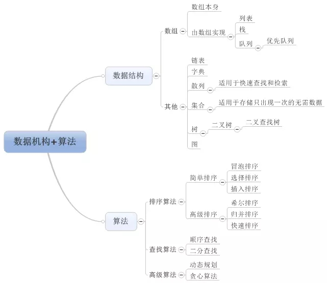

【 程序 = 数据结构 + 算法 】
【 编程语言分类 】
编译型语言 VS 解释型语言
编译型：C、C++、Pascal、Object-C、swift
解释型：JavaScript、Python、Erlang、PHP、Perl、Ruby
混合型：java、C#,C#,javascript(基于V8)
动态结构语言 VS 静态结构语言
动态语言：Python、Ruby、Erlang、JavaScript、swift、PHP、SQL、Perl
静态语言：C、C++、C#、Java、Object-C
强类型语言 VS 弱类型语言
强类型：Java、C#、Python、Object-C、Ruby
弱类型：JavaScript、PHP、C、C++(C、C++,有争议,介于强弱之间)
【 js 】
设计网站时假设JS是被禁用的,然后在此基础上逐步增强网站
原生操作比函数调用效率高
arr.push(Math.min(a,b)); // 错误
arr[arr.length] = a < b ? a : b; // 正确
【 js常见报错 】
1.Uncaught SyntaxError: Illegal return statement(js报错)
JavaScript中的return是只能放在function中的,自调用函数(function(){ })();
2.Uncaught SyntaxError: Unexpected identifier(js报错)
如果该异常出现在define里多半是因为该行的上一行缺少了逗号
链接js代码
download h5新属性规定被下载的超链接目标
打开图片 href="logo.png"{kind=link}
下载图片 href="logo.png" download
下载图片 href="logo.png" download="filename"
点击我一下 href="javascript:console.log('你好');"
点我下载 href="javascript:var flag=confirm('是否要下载链接');getData(flag,'test.webm');"
;func(flag,'logo.png');){kind=link}
void是js自身的操作符,它表示的是只执行表达式,但没有返回值,return false取消默认行为,"#"默认的瞄点位置是top 1.javascript:void(expression) ; 2.javascript:void expression 另外一种undefined 从来不需要声明一个变量的值是undefined,因为JS会自动把一个未赋值的变量置为undefined var data; var data = undefined; var data = void 0; // undefined void在Js中是一个操作符,对传入的操作不执行并且返回undefined。void后面可以跟()来用,例如void(0),在HTML里阻止带href的默认点击操作时都喜欢把href写成javascript:void(0),实际上也是依靠void操作不执行的意思,实际用途上不太赞成使用void,因为void的出现是为了兼容早起ECMAScript标准中没有undefined属性。void 0的写法让代码晦涩难懂。
空链接 会跳转: href="#"
空链接 : href="javascript:js_method();"
空链接 : href="javascript:;"
空链接 : href="javascript:void(0);" onclick="js_method()" //onclick执行js函数,void(0)返回undefind,网页不跳转
空链接 : href="javascript:js_method();"
空链接 : href="javascript:;"
空链接 : href="javascript:void(0);" onclick="js_method()" //onclick执行js函数,void(0)返回undefind,网页不跳转
JS的框架、库、插件
【 框架framework 】 框架提供一个现成的应用骨架,在此基础上的开发过程是丰富血肉的过程。前端JS框架往往已内建事件响应、客户端数据存储、数据绑定等功能。开发者可以快速着手实现业务逻辑,添加用户交互、产品功能、数据和内容等 js框架就是将常用的方法进行封装,方便调取使用。一个框架是一个可复用的设计构件,规定了应用的体系结构,阐明了整个设计、协作构件之间的依赖关系、责任分配和控制流程,表现为一组抽象类以及其实例之间协作的方法,为构件复用提供了上下文(Context)关系。因此构件库的大规模重用也需要框架。js框架就是对js各种功能的封装和抽象,使得在使用的时候具有简便性和更好的兼容性,并且可以扩展框架中的内容 Angular框架 Angular是谷歌开源的完整的MVC应用框架,使用HTML语言为模版,内建双向数据绑定用于同步模型与视图数据,加上依赖注入、控制器等等功能。使用Angular可以快速实现业务逻辑,结合MEAN栈在JS全栈开发中大放光彩。注意Angular1同2～5的差异还是很大的,2～5版使用TypeScript并加入模块化组件 Vue框架 Vue结合了React和Angular的优点,使用虚拟DOM和状态抽象视图,并可以绑定数据,结合路由、状态管理等库可以高效完成完整的Web应用前端 【 库library 】 库是经过整理的函数集合。前端JS开发中用到的库常包含一些用于处理DOM元素、交互事件、cookie、动画、网络请求、字符串、日期等等的函数。开发者可以使用库组装自己的框架,或是分别完善产品的单元组件再拼装起来 jQuery库 jQuery提供方法使用CSS选择器样式字符串来获取DOM元素,并且跨浏览器兼容,还包括事件处理器、动画、Ajax、链式操作等。在2006年发布时是前端开发革命性的里程碑。在开发时仍需要自己去实现应用结构(如MVC,MVVM等) React库 Facebook于2013年出品的React库是第一个引入虚拟DOM的。React仅仅负责MVC中V(视图)的部分。开发中使用虚拟DOM和看起来很像HTML的JSX语法建立视图组件,通过props属性在虚拟的DOM组件间传递数据,建立state状态变量自动更新视图,非常适用于复杂的用户交互界面。由于React在视图上做到了一个极致,在其周围衍生出一个完整的生态环境,如Redux,Relay等库 【 插件plugin 】 插件一些时候和库同义,另一些时候直接提供部分的产品功能,比如在做静态博客时通过Disqus插件直接实现留言板。如果用过Wordpress,一定也在插件商店里搜索过各类插件。jQuery本身作为一个库也可以通过插件来扩展,很多即插即用的UI效果模版也可以看成是一个插件 Bootstrap的jQuery插件 在jQuery中调用Bootstrap提供的JS插件可以方便地实现已经写好的UI功能,如图片滚动等
进程和线程
JS是单线程的 单线程是指在JS引擎中负责解释和执行JS代码的线程只有一个即主线程 实际上还存在其他的线程,如处理AJAX请求的线程、处理DOM事件的线程、定时器线程、读写文件的线程(Node.js中)等,这些工作线程可能存在于JS引擎之内,也可能存在于JS引擎之外 JS的并发模型基于"事件循环" 栈 函数调用形成了一个栈帧 堆 对象被分配在一个堆中,即用以表示一个大部分非结构化的内存区域 队列 一个JS运行时包含了一个待处理的消息队列,每一个消息都与一个函数相关联;当栈拥有足够内存时,从队列中取出一个消息进行处理,这个处理过程包含了调用与这个消息相关联的函数,以及因而创建了一个初始堆栈帧。当栈再次为空的时候也就意味着消息处理结束
正是由于JS是单线程的,而异步容易实现非阻塞,所以在JS中对于耗时的操作或时间不确定的操作,使用异步就成了必然的选择
js引擎(engine)和js运行时(runtime)
js引擎始终只有一个线程,它维护一个消息队列,当前函数栈执行完成之后就去不断地取消息队列中的消息(回调),取到了就执行,但js引擎只负责取消息,不负责生产消息
js运行时就负责给js引擎线程发送消息,比如浏览器DOM事件发送一条鼠标点击的消息(浏览器子线程和js引擎线程的IPC通信),那么js引擎在执行完函数栈之后就会取到这条鼠标点击信息,执行消息(即回调);比如node运行时读取文件,执行系统调用,完成后发送读取文件完成的消息,之后的过程同上。js运行时只负责生产消息,不负责取消息
异步过程：
主线程发起一个异步请求,相应的工作线程接收请求并告知主线程已收到(异步函数返回);主线程可以继续执行后面的代码,同时工作线程执行异步任务;工作线程完成工作后,通知主线程;主线程收到通知后,执行一定的动作(调用回调函数)
fs.readFile('foo.txt', 'utf8', (err,data) => console.log(data));
异步函数通常的形式：A(args..., callbackFn),它可以叫做异步过程的发起函数或做异步任务注册函数,callbackFn函数参数比较特殊
所以从主线程的角度看,一个异步过程包括下面两个要素：发起函数(或叫注册函数)A 和 回调函数callbackFn
它们都是在主线程上调用的,其中注册函数用来发起异步过程,回调函数用来处理结果
setTimeout(fn, 1000)中的setTimeout就是异步过程的发起函数,fn是回调函数
形式A(args...,callbackFn)只是一种抽象的表示,并不代表回调函数一定要作为发起函数的参数,例如ajax发起函数和回调函数就是分离的
var xhr = new XMLHttpRequest();
xhr.onreadystatechange = xxx; // 添加回调函数
xhr.open('GET',url);
xhr.send(); // 发起函数
【 消息队列和事件循环 】
异步过程中工作线程在异步操作完成后需要通知主线程,这个通知机制是利用消息队列和事件循环实现的
消息队列：消息队列是一个先进先出的队列,它里面存放着各种消息
事件循环：事件循环是指主线程重复从消息队列中取消息、执行的过程
工作线程将消息放到消息队列,主线程通过事件循环过程去取消息
主线程只会做一件事情,就是从消息队列里面取消息、执行消息,再取消息、再执行,当消息队列为空时就会等待直到消息队列变成非空,而且主线程只有在将当前的消息执行完成后才会去取下一个消息,这种机制就叫做事件循环机制,取一个消息并执行的过程叫做一次循环
事件循环用代码表示大概是这样的：
消息队列中放的消息的具体结构跟具体的实现有关,可以简单认为：消息就是注册异步任务时添加的回调函数
$.ajax('http://segmentfault.com', resp => console.log('我是响应：',resp));
主线程在发起AJAX请求后会继续执行其他代码,AJAX线程负责请求segmentfault.com,拿到响应后把响应封装成一个JS对象,然后构造一条消息：
var message = () => callbackFn(response) // callbackFn就是前面代码中得到成功响应时的回调函数
主线程在执行完当前循环中的所有代码后,就会到消息队列取出这条消息(也就是message函数)并执行它。到此为止就完成了工作线程对主线程的通知,回调函数也就得到了执行。如果一开始主线程就没有提供回调函数,AJAX线程在收到HTTP响应后,也就没必要通知主线程,从而也没必要往消息队列放消息
异步过程的回调函数,一定不在当前这一轮事件循环中执行
【 异步与事件 】
消息队列中的每条消息实际上都对应着一个事件
DOM事件
document.getElement('#btn').addEventListener('click', e => console.log(e));
从事件的角度来看,上述代码表示：在按钮上添加了一个鼠标单击事件的事件监听器;当用户点击按钮时,鼠标单击事件触发,事件监听器函数被调用。
从异步过程的角度看,addEventListener函数就是异步过程的发起函数,事件监听器函数就是异步过程的回调函数。事件触发时表示异步任务完成,会将事件监听器函数封装成一条消息放到消息队列中,等待主线程执行。
事件的概念实际上并不是必须的,事件机制实际上就是异步过程的通知机制,它的存在是为了编程接口对开发者更友好。
另一方面所有的异步过程也都可以用事件来描述,例如setTimeout可以看成对应一个时间到了的事件,setTimeout(fn,1000)可看成timer.addEventListener('timeout',1000,fn);
从生产者与消费者的角度看,异步过程是这样的：
工作线程是生产者,主线程是消费者(只有一个消费者)。工作线程执行异步任务,执行完成后把对应的回调函数封装成一条消息放到消息队列中;主线程不断地从消息队列中取消息并执行,当消息队列空时主线程阻塞,直到消息队列再次非空
【 事件循环 】
之所以称为事件循环,是因为它经常被用于类似如下的方式来实现：
while(queue.waitForMessage()) {
queue.processNextMessage();
}
如果当前没有任何消息queue.waitForMessage会等待同步消息到达
"执行至完成"
每一个消息完整的执行后,其它消息才会被执行,分析程序时这点提供了一些优秀的特性,包括每当一个函数运行时,它就不能被抢占,并且在其他代码运行之前完全运行(且可以修改此函数操作的数据)。这与C语言不同,例如,如果函数在线程中运行,则可以在任何位置终止然后在另一个线程中运行其他代码。
这个模型的一个缺点在于当一个消息需要太长时间才能完成,Web应用无法处理用户的交互,例如点击或滚动。浏览器用"程序需要过长时间运行"的对话框来缓解这个问题。一个很好的做法是使消息处理缩短,如果可能,将一个消息裁剪成几个消息。
添加消息
在浏览器里,当一个事件出现且有一个事件监听器被绑定时,消息会被随时添加。如果没有事件监听器,事件会丢失。所以点击一个附带点击事件处理函数的元素会添加一个消息,其它事件亦然。
调用setTimeout函数会在一个时间段过去后在队列中添加一个消息,这个时间段作为函数的第二个参数被传入。如果队列中没有其它消息,消息会被马上处理。但如果有其它消息,setTimeout消息必须等待其它消息处理完。因此第二个参数仅仅表示最少的时间 而非确切的时间。
零延迟
零延迟并不是意味着回调会立即执行。在零延迟调用setTimeout时,其并不是过了给定的时间间隔后就马上执行回调函数。其等待的时间基于队列里正在等待的消息数量。在下面的例子中,"this is just a message" 将会在回调(callback)获得处理之前输出到控制台,这是因为延迟是要求运行时(runtime)处理请求所需的最小时间,但不是有所保证的时间。
多个运行时互相通信 一个web worker或一个跨域的iframe都有自己的栈堆和消息队列。两个不同的运行时只能通过postMessage方法进行通信。如果后者侦听到message事件,则此方法会向其他运行时添加消息。 永不阻塞 事件循环模型的一个非常有趣的特性是JS与许多其他语言不同,它永不阻塞。处理I/O通常通过事件和回调来执行,所以当一个应用正等待IndexedDB查询返回或一个XHR请求返回时,它仍然可以处理其它事情,如用户输入。 例外是存在的,如alert或同步XHR,但应该尽量避免使用它们,例外的例外也是存在的(但通常是实现错误而非其它原因)
Js基础
脚本语言javascript是一种轻量级编程语言,可用于HTML和web,更可广泛用于服务器、PC、笔记本电脑、平板电脑和智能手机等设备 JavaScript是所有现代浏览器以及HTML5中的默认脚本语言 分号分隔JS语句,行首字符为[ ( + - / 五个符号之一时必须加分号,花括号组成代码块 JavaScript区分大小写,会忽略多余空格,可以在文本字符串中使用反斜杠对代码行进行换行 浏览器: IE Chrome FireFox 结构、样式、行为三者分离,即html,css,js js是面向对象的语言,基于prototype,而不是基于类 js库,js框架:jQuery Prototype MooTools Prototype提供用于执行常见web任务的简单应用程序编程接口API(Application Programming Interface) Js的组成: ECMAScript 核心,翻译,解释器,规定了语言的组成部分：语法、类型、语句、关键字、保留字、操作符、对象 DOM 文档对象模型document object model,操作html节点的入口,DOM也有级别分为DOM1、DOM2、DOM3 BOM 浏览器对象模型browser object model,操作浏览器,window 兼容性 ES5 作为ECMAScript第五个版本,增加特性如下 1. strict模式 严格模式,限制一些用法,'use strict'; 2. Array增加方法 增加了every、some、forEach、filter、indexOf、lastIndexOf、isArray、map、reduce、reduceRight方法 还有其他方法 Function.prototype.bind、String.prototype.trim、Date.now 3. Object方法 Object.getPrototypeOf Object.create Object.getOwnPropertyNames Object.defineProperty Object.getOwnPropertyDescriptor Object.defineProperties Object.keys Object.preventExtensions / Object.isExtensible Object.seal / Object.isSealed Object.freeze / Object.isFrozen ES6 ECMAScript6在保证向下兼容的前提下,提供大量新特性 1.块级作用域 关键字let, 常量const 2.对象字面量的属性赋值简写(property value shorthand) 3.赋值解构 4.函数参数 - 默认值、参数打包、数组展开(Default 、Rest 、Spread) 5.箭头函数 Arrow functions 6.字符串模板 Template strings 8.生成器(Generators) 9.Class 10.Modules 11.Map + Set + WeakMap + WeakSet 12.Math + Number + String + Array + Object APIs 13. Proxies 14.Symbols 15.Promises
浏览器根据js代码编写顺序从上而下解析HTML文档中的代码,外部js文档代码比内嵌js代码先执行
javascript是单线程的,特点就是容易出现阻塞.如果一段程序处理时间很长,很容易导致整个页面卡住
断点
给代码添加断点的方法有两种,在代码中写debugger;和在source面板中鼠标单击添加断点,不同点：鼠标单击的方式会在代码行数改变的时候无法定位到之前的位置,但可以在调试的过程中删除断点;debugger的方式不会因为代码行数改变而定位不到,但必须要刷新代码才能把断点删掉
js 浏览器工具
【 js调试工具console命令 console对象 】
console.log(object [, object, …]);
console.log("string");
clear(); 清除
console.clear(); 清除
ctrl + l 清除的快捷键
console.info("string");
console.error("string");
console.warn("string");
console.dir(obj); 显示对象的所有属性和方法
console.dirxml($("#id")) 显示节点所包含的HTML、xml代码
console.trace() 写在函数内,追踪函数的调用轨迹
console.count() 用于记录代码执行的次数;
console.memory 用于显示此刻使用的内存信息(这是一个属性而不是方法);
console.table(data); chrome专有
console.time('mytimer') 测试执行起始时间
console.timeEnd('mytimer') 压力显示代码的运行时间
使用Firebug的"timer"功能优化代码,记录操作需要的时间console.assert()判断表达式或变量是否为真,用于判断表达式,满足表达式时才输出语句console.profile() // 用于记录代码消耗CPU的信息 console.profileEnd() // 性能分析,分析程序各部分运行时间,找出瓶颈信息分组
【 console美化 】
console支持printf的占位符格式,支持的占位符有:字符(%s)、整数(%d或%i)、浮点数(%f)和对象(%o)
console.log("%d年%d月%d日",2011,3,26);
格式占位符 作用
%s 字符串
%d or %i 整数
%f 浮点数
%o 可展开的DOM
%O 列出DOM的属性
%c 根据提供的css样式格式化字符串
%o和%O在普通对象上的表现是一样的,但是在DOM上就有区别了：
// 格式成可展开的的DOM,像在开发者工具Element面板那样可展开
console.log('%o',document.body.firstElementChild);
// 像JS对象那样访问DOM元素,可查看DOM元素的属性,等同于console.dir(document.body.firstElementChild)
console.log('%O',document.body.firstElementChild);
%c占位符是最常用的,使用%c占位符时,对应的后面的参数必须是CSS语句,用来对输出内容进行CSS渲染。于是,利用%c配合CSS可以做出吊炸天的效果,比如背景色、字体颜色渐变、字体3D效果、图片等,甚至可以是火星文、表情包等。
console不能定义img,因此用背景图片代替。
console不支持width和height,利用空格和font-size代替;还可以使用padding和line-height代替宽高。
浏览器开发者控制台
清空控制台和内存: clear()
让Chrome变成编辑器: document.body.contentEditable=true
打开命令菜单: Ctrl + Shift + P
network -> 图片预览 -> copy image as data URL
【 9个面板 】
Elements：在Elements面板中可以通过DOM树的形式查看所有页面元素,同时也能对这些页面元素进行所见即所得的编辑
Console：一方面用来记录页面在执行过程中的信息(一般通过各种console语句来实现),另一方面用来当做shell窗口来执行脚本以及与页面文档、DevTools等进行交互
Sources：Sources面板主要用来调试页面中的JavaScript
Network：在Network面板中可以查看通过网络来请求来的资源的详细信息以及请求这些资源的耗时
Performance：在Performance面板可以查看页面加载过程中的详细信息,比如在什么时间开始做什么事情,耗时多久等等。有人会问,这个跟上面的Network有什么区别呢,上面也能显示耗时信息。在Performance面板中,你不仅可以看到通过网络加载资源的信息,还能看到解析 JS、计算样式、重绘等页面加载的方方面面的信息
Memory：Memory 面板主要显示页面JS对象和相关联的DOM节点的内存分布情况
Application：记录网页加载的所有资源,包括存储信息、缓存信息以及页面用到的图片、字体、脚本、样式等信息
Security：用于检测当面页面的安全性
Audits：审计面板会对页面的加载进行分析,然后给出提高页面性能的建议,官网建议查看PageSpeed Insights来获得更多的页面加载建议。
【 静态全局查找代码 】
ctrl+shift+F打开全局搜索,搜索关键字一般是dom元素的id、class、name或页面中具有唯一性的中文汉字,搜索到之后直接定位到代码
【 查找绑定的DOM事件 】
在要查看的元素上点右键审查元素,在chrome elements面板右侧找到第3个页签event Listeners
在mouseover或mouseenter事件中会列出该元素绑定事件的代码行号
点击代码直接定位到相应的代码,然后加断点调试就可以了。
由于线上的代码都做了压缩混淆,需要点击pretty print格式化代码
【 动态查找代码 】
调用堆栈(Call Stack)
堆栈是一个数据结构,每一个函数调用时都会将函数的指针和参数值保存在堆栈中,后进先出,最后调用的函数最先出栈。
堆栈对于调试的意义非常重大,虽然不知道你从哪里来,但知道你终将去向何处,只要在执行的必经之路设置一个断点就可以顺藤摸瓜找到你
在sources选项call Stack面板可以看到函数调用的来龙去脉,快速切换到执行堆栈中的每一个函数
先来看下堆栈的用法,编写如下测试代码：
function multiply(x, y) {
debugger;
return x * y;
}
function printSquare(x) {
var s = multiply(x, x);
console.log(s);
}
printSquare(5);
代码的整个执行流程如下：
1、printSquare调用,将print Square的函数指针,和参数值5(即arguments)做为一项数据存放到call stack顶部
2、调用了multiply函数计算乘法,multiply函数指针,和两个参数5,5,被存放到call stack顶部。
3、multiply函数调用完华(return),multiply函数从栈顶移除,调用console.log
4、因为console是内置对象,无法step into单步调试进去看内部代码, 实际上也是有入栈,console.log执行后即出栈,现在栈中只剩下最初的梦想printSquare孑然一身
5、printSquare也出栈了,整个stack清净了。
【 Dom被修改时自动断点 】
以todomvc网站代码为例：
todomvc.com/examples/vu…
添加一条todo记录,例如想看看删除元素时,vue dom diff是怎么工作的,我们知道点击删除后,这行li被删除了,但是究竟是哪一行代码在起作用,我们加个dom断点试一下,当dom节点被删除时,将会自动中断在修改dom的代码段
element选项中选择元素右键,选择菜单中break on -> node removal
删除这条todo后,代码自动中断在vue虚拟dom的removeChild这一行,但是这个堆栈的高度一共有28层楼,简直是摩天大厦啊,我对vue的dom diff 源码实在没有兴趣,那就直接坐电梯来到1楼好了
坐电梯来到1楼,看到这里是vue绑定dom事件的代码,也就是一切的起源,再往上看4楼就是具体的业务代码了
【 ajax请求自动断点 】
有时你找不到事件绑定的代码,或者是有些功能在没有什么交互的情况下就发http请求调用了,这时ajax请求断点就派上用场了,在source面板中xhr/fetch breakpoints中添加,可以捕获所有的url地址,也可以指定关键字捕获。
【 异常时自动断点 】
这个功能正常情况下用处不大,普通的异常会在控制台显示,在控制台也能定位过去,可以定位过去之后再手工加断点, 但是对于catch 之后没有throw的代码,在控制台是看不到的,但是这个异常自动断点功能仍然能捕获到。
点击||之后会显示Pause on caught exceptions
【 在线调试、本地代理 】
如何才能在本地开发,不用上传到测试服务器或生产服务器,就能看到代码修改后的效果？如果我们用vue开发,vue-cli自带一个本地代理功能,可以把服务器的接口反向代理到本地的http服务,那么还有其它方法吗？我们来细数一下本地开发不用上传服务器就能生效代码的方法。
1、vue-cli的本地代理功能,在配置文件devServer.proxy中配置反向代理,可以将后台接口代理到本机localhost。
2、自己搭建nginx反向代理,效果同第一条。
3、本地不需要任何http服务,直接访问硬盘上的html文件,利用cors跨域直接访问远程服务器,服务器端远程服务器设置响应头 Access-Control-Allow-Origin 的值 为 '*' ,注：此种方法不支持携带cookie。
4、使用fiddler AutoResponder功能,直接把远程服务器重定向到本地目录(需要编写一个正则表达式)
5、使用Chrome DevTools 的Overrides功能,把服务器的文件映射到本地,可以支持在Sources面板中修改文件直接生效,还能直持语法智能感知自动完成,比在console中写代码还方便。
以上五种方法各有优缺点,这里主要介绍第5种方法
在source面板二级页签Overrides页签中点击select folder for overrides,选择一个本地映射目录,然后顶部弹出一个确认提示一定要选择允许。
然后随便打开个网站改改代码试一下,例如,打开百度,在source面板点开主页面的html,加段alert,然后ctrl+s保存,文件图标会变成紫色,刷新下页面,弹出alert了,就这么简单,达到和tampermonkey插件一样的效果。哪个网站功能不爽,或者广告太碍眼了,那都不是事,随便写行代码改掉他。
当然,最主要的还是开发起来贼方便,谁用谁知道,尤其是遇到那些没有测试环境的功能,只能在生产线上调试的场景。如果没有本地代理映射,只能找运维更新代码去看效果了
【 查找引起性能瓶颈的函数 】
Performance面板的call tree可以查看每个函数的执行时间,非常方便的找到性能瓶颈,先来编写一段有性能问题的代码测试一下。
setInterval(function slowFunc(){
var arr=[];
for(var i=0;i<1000;i++){
arr.push(i);
arr.sort();
}
},50)
运行之后,打开performance面板点击录制,开始监控,再点停止,在call tree中可以以树状结构展示每个函数和子函数的执行时间,一眼就看到名为slowFunc的函数执行时间最长,达到786ms,点击函数名即可跳转到相应的代码。
【 代码覆盖率检测 】
项目时间久了会有很多冗余代码是从来不会执行的,或是需要做首屏加载优化,想把首屏用不到的js和css 代码抽取出来做异步加载,使用chrome自带的coverage检测工具可以很方便的看到哪些代码被执行了,红色表示未被执行的代码。做首屏优化时可以抽取出来做异步加载,如果把所有的用例都跑完了,这行代码还是红色的,则可以从容的删除这些红色的代码。
code coverage面板默认是不显示的,需要在more tools菜单中打开
【 移动端真机调试 】
移动端开发经常遇到一些真机上运行会出问题,pc端浏览器却无法重现的问题,这就需要真机调试,如果是iphone,可以用usb 连接 mac 下的safari浏览器直接调试。其实android手机的真机调试其实更加强大,完爆苹果,毕竟safari的调试功能跟chrome相比简直弱爆了,让那些喜欢用苹果本的前端开发同学羡慕去吧。
但是很多同学配置不好usb真机调试,因为搞好这个简直比从零开始搭建webpack环境还难,步骤如下,缺一不可
1、android手机必须安装adb interface driver,手机连了usb即使能copy文件了,也不代表驱动安装好了,有些手机助手会自带这个驱动,如果不行,可到官网下载http://adbdriver.com/
2、在手机设置中的开发人员选项中,打开 usb调试功能
3、用usb 线连接手机,每次连接usb 调试都会弹一个确认框要确认。
、在手机上用chrome浏览器打开要调试的网站,以打开github.com网站为例,一定要用独立的chrome(在各大应用市场安装),有些手机自带的浏览器可能关闭了webkit远程调试功能你只能望洋兴叹。
5、在地址栏输入 chrome://inspect/ ,如果前面几步都没问题,将会出现可调试的页面列表,点击inspect即可打开调试页面。
6、最重要的一步,需要翻墙一次,可以用blue灯,因为首次调试会连接google的官方网站,国内无法访问会中断调试无法进入到下一步。以后只要不重装浏览器都不需要再次翻墙了。
7、inspect之后便会出现调试面板,就可以和普通的pc端页面一样调试了。
【 .min.js 】
sources面板下面有个{}按钮能格式化当前的代码,变成有换行格式的代码,阅读起来不再那么晦涩难懂。
然而变量名还是一些简单的字母,看起来还是非常的费劲,有办法把混淆的变量名变回原本的变量名吗？
答案是有的,不过需要原先的代码支持source map。
source map其实是在代码在发布的时候声明它的变量替换的规则文件。例如在jQuery1.9.0更高的版本的代码,末尾有一句：
//@ sourceMappingURL=jquery.min.map
这就是声明了它的source map文件的路径,而source map文件里大概是这样子的：
{
"version": 3,
"file": "jquery.min.js",
"sources":["jquery.js"],
"names": ["window","undefined","isArraylike"],
"mappings": "CAaA,SAAWA,EAAQC"
}
names就是原本的变量名字,mappings则表示该变量名字出现的位置,具体的位置规则是利用了VLQ编码,如果想简单点就直接使用Google的Closure编译器来创建这样的map文件。
script标签
JavaScript引入页面的方法: 内联(内嵌):脚本必须位于script标签之间,放置在head和body部分中 外联:script src="name.js",外部Js文件的文件扩展名是.js,外部脚本不能包含script标签 【 script标签属性 】 1、type MIME-type,指示脚本的MIME类型,MIME类型由两部分组成:媒介类型和子类型 type = "text/javascript" 2、language 规定脚本语言,不赞成使用,请使用type属性代替它 language = "JavaScript" 3、src URL,规定外部脚本文件的URL 4、charset charset,规定在外部脚本文件中使用的字符编码,如果外部文件中的字符编码与主文件中的编码方式不同就要用到charset属性,默认的字符编码是ISO-8859-1 ＜script src="demo.js" charset="UTF-8">＜/script> 5、xml:space preserve,规定是否保留代码中的空白 6、async async属性规定一旦脚本可用则会异步执行脚本(仅适用于外部脚本) ＜script src="demo_async.js" async="async">＜/script> ＜script src="siteScript.js" async onload="myInit()"＞＜/script＞
7、defer 规定是否对脚本执行进行延迟,直到页面加载为止,只有Internet Explorer支持defer属性 如果脚本不会改变文档的内容,可将defer属性加入到script标签中,以便加快处理文档的速度。因为浏览器知道它将能够安全地读取文档的剩余部分而不用执行脚本,它将推迟对脚本的解释,直到文档已经显示给用户为止 ＜script defer src="siteScript.js" onload="myInit()"＞＜/script＞
【 非阻塞模式 】 有多种执行外部脚本的方法: 如果async="async":脚本相对于页面的其余部分异步地执行(当页面继续进行解析时,脚本将被执行) 如果不使用async且defer="defer":脚本将在页面完成解析时执行 如果既不使用async也不使用defer:在浏览器继续解析页面之前,立即读取并执行脚本 正常情况下当浏览器在解析HTML源文件时如果遇到外部的script,那么解析过程会暂停,并发送请求来下载js文件,只有script完全下载并执行后才会继续执行DOM解析 在下载过程中浏览器是被阻止做其他有用的工作的,包括解析HTML、执行其他脚本及展示CSS布局。虽然Webkit预加载扫描程序可以探测性地在下载阶段进行多线程下载,但是某些页面仍然存在很大的网络延迟。 script可以通过添加async或者defer属性来让脚本不必同步执行 async和defer标注的script都不会暂停HTML解析就立刻被下载,两者都支持onload事件回调来解决需要该脚本来执行的初始化。 两者的区别在于执行时的不同: async脚本在js文件下载完成后会立即执行,并且其执行时间一定在window的load事件触发之前,意味着多个async脚本很可能不会按其在页面中的出现次序顺序执行。 浏览器确保多个defer脚本按其在HTML页面中的出现顺序依次执行,且执行时机为DOM解析完成后,document的DOMContentLoaded事件触发之前 一般依赖文件就不应该使用async而应该使用defer 如果使用async的话,最后加上defer以求向下兼容 如果两者都支持,async会默认覆盖掉defer,如果只支持一个则执行对应的即可 通常使用的加载都是defer加载,因为很强的依赖关系 脚本异步是一些异步加载库(如require)使用的基本加载原理 可以异步加载文件,不会造成阻塞的效果 但是使用脚本异步加载的话,需要等待css文件加载完后才开始进行加载,不能充分利用浏览器的并发加载优势。而使用静态文本加载async或defer则不会出现这个问题
noscript标签
浏览器禁用js可以防止脚本攻击,但是会严重影响交互和页面特效,特别是js隐藏的代码容易暴露
严格模式
严格模式是一种特殊的执行环境,修复了部分语言上的不足,提供更强的错误检查,并增强安全性 写在文件开头表示这个文件在严格模式下执行
严格模式下的区别: 不允许使用with语句 不允许未声明的变量被复制 arguments变为参数的静态副本 delete参数、函数名或者不可配置的属性时会报错 对象字面量重复属性名报错 禁止八进制的字面量,如0123 eval变成独立作用域,eval语句外部无法获取
数据类型
JavaScript是一种弱类型或者说动态语言,这意味着不用提前声明变量的类型,在程序运行过程中类型会被自动确定,也意味着可以使用同一个变量保存不同类型的数据 最新的ECMAScript标准定义了7种数据类型: Object和6种原始类型: Boolean Null Undefined Number String Symbol(ECMAScript 6新定义符号类型) 1.数字number 整型、浮点型 2.字符串string 单引号或者双引号括起来的一个或多个字符,输出双引号的话在双引号钱加斜杠,或者用单引号包围 3.布尔型boolean 逻辑,只有两个值true或false.当值为''/false/0/null/nan/underfind/空字符串就是假的,其他为真 4.未定义值Undefined 已经声明但没有赋值的变量 var a; 5.空值null 用于定义空的或者不存在的引用 var a=null; 6.数组array 引用数据类型 7.对象object 引用数据类型 console.log(NaN==NaN); // false 除Object以外的所有类型都是不可变的,即值本身无法被改变,例如字符串是不可变的,对字符串的操作一定返回了一个新字符串,原始字符串并没有被改变,称这些类型的值为"原始值" 在计算机领域中堆栈是两种数据结构 堆(heap堆内存的简称)：队列优先,先进先出;由操作系统自动分配释放,存放函数的参数值,局部变量的值等,其操作方式类似于数据结构中的栈。 栈(stack栈内存的简称)：先进后出;动态分配的空间一般由程序员分配释放, 若程序员不释放,程序结束时可能由OS回收,分配方式倒是类似于链表。 堆是动态分配内存,内存大小不一,也不会自动释放。 栈是自动分配相对固定大小的内存空间,并由系统自动释放 栈,线性结构,后进先出,便于管理。 堆,一个混沌,杂乱无章,方便存储和开辟内存空间 栈,只允许在一段进行插入或者删除操作的线性表,是一种先进后出的数据结构. 堆是基于散列算法的数据结构. 队列是一种先进先出(FIFO)的数据结构 【 传值与传址 】 原始数据类型、基本类型值有5种：undefined,null和不是new出来的boolean,number,string,都是按值访问的,是存放在栈内存中的简单数据段,直接存储在变量访问的位置,数据大小确定,内存空间大小可以分配 由系统自动分配和自动释放,这样带来的好处就是内存可以及时得到回收,相对于堆来说更加容易管理内存空间 基本类型值的复制是值的传递,赋值以后二者再无关联,修改其中一个不会影响另一个 引用类型值: 5种基本类型值以外的数据类型都可以看做是引用类型值,比如array、object、function等,是通过拷贝和new出来的,是保存在堆内存中的对象,存储在变量处的值是一个指针,指向存储对象的内存处,相当于程序的快捷方式,指针是存储于栈中的,要访问引用类型的值的时候,需要先从栈中获得对象的地址指针,然后在通过地址指针找到堆中的所需要的数据。 js不允许直接访问堆内存中的位置,也就是说不能直接操作对象的内存空间。在操作对象时实际是在操作对象的引用而不是实际的对象,是按地址访问的 直接传递引用类性值的时候,传递的只是引用,二者指向同一块内存,所以修改其中一个必然会引起另一个变量的变化变量赋值 (值 vs 引用)
【 浅拷贝和深拷贝 】 把对象赋值给一个变量时,通常希望得到的是一个跟原对象无关的副本,修改新的变量不影响原对象,因此就有了浅拷贝和深拷贝 浅拷贝就是只将对象最外层的键值复制为一个新的对象,而深拷贝则会递归复制所有的层直到该键的值为基本类型值。再简单点说经过浅拷贝后,新旧变量可能还会有所关联,也可能毫无关联吧,取决于原对象的复杂程度了;而经过深拷贝后,理论上新旧变量再无关联。在进行深拷贝时层级不宜过多,所以一般的深拷贝也并不是绝对毫无关联的 当原对象的值为基本类型值时,浅拷贝和深拷贝并没有区别;而当原对象的某些值为引用类型值时,如果修改变量的值,浅拷贝会改变原对象的值,而深拷贝则不会深拷贝
【 数字类型 】
根据ECMAScript标准,JS中只有一种数字类型：基于IEEE 754标准的双精度64位二进制格式的值(-(263 -1)到263-1)。它并没有为整数给出一种特定的类型。除了能够表示浮点数外,还有一些带符号的值：+Infinity,-Infinity和NaN(非数值,Not-a-Number)
要检查值是否大于或小于+/-Infinity,可以使用常量Number.MAX_VALUE和Number.MIN_VALUE。另外在ECMAScript 6中也可以通过Number.isSafeInteger()方法还有Number.MAX_SAFE_INTEGER和Number.MIN_SAFE_INTEGER来检查值是否在双精度浮点数的取值范围内,超出这个范围JS中的数字不再安全了,也就是只有second mathematical interger可以在JS数字类型中正确表现。
数字类型只有一个整数,它有两种表示方法：0可表示为-0和+0("0"是+0的简写)。 在实践中这也几乎没有影响,例如+0 === -0为真,但是可能要注意除以0的时候：
42 / +0; // Infinity
42 / -0; // -Infinity
尽管一个数字常常仅代表它本身的值,但JS提供了一些位运算符。 这些位运算符和一个单一数字通过位操作可以用来表现一些布尔值。然而自从JS提供其他的方式来表示一组布尔值(如一个布尔值数组或一个布尔值分配给命名属性的对象)后,这种方式通常被认为是不好的。位操作也容易使代码难以阅读,理解和维护, 在一些非常受限的情况下,可能需要用到这些技术,比如试图应付本地存储的存储限制。位操作只应该是用来优化尺寸的最后选择。
检验一个参数是否为数字判断是否是整数
【 空数组是true 】
初始化后即使数组arr中没有元素也是一个object,既然是object,用于判断条件时就会被转化为true
var arr = new Array();
var arr = [];
typeof arr; // "object"
if(arr) console.log("it's true"); // it's true
把arr转化为Boolean
Boolean(arr); // true
将arr与布尔值比较：
arr == false; // true
arr == true; // false
任意值与布尔值比较都会将两边的值转化为Number
Number(false) // 0
Number(arr) // 0
Number(true); // 1
所以当空数组作为判断条件时相当于true,当空数组与布尔值直接比较时相当于false。
所以可以通过arr == true来判断数组不为空,也可以通过arr.length !== 0来判断数组不为空
【 类型检测 】
NaN和任何值都不相等
1、typeof
JS的一元操作符,以字符串的形式返回变量的原始类型,typeof null是object,除了函数大多数对象类型Array、Date等也会返回object
typeof alert // "function"
2、instanceof
常用于判断对象类型如数组,基于原型链判断
JS操作符,会在原型链中的构造器中搜索,找到则返回true ,否则false
常用于判断某一个对象是否是某个构造器或其父类构造器的实例
instanceof在原型链及实例属性中查找,区别于hasOwnProperty,后者只在实例属性中进行查找
对于对象来说,Array也会被转换成Object,而且也不能区分基本类型string和boolean
function Func() {}
const func = new Func();
console.log(func instanceof Func); // true
const obj = {};
const arr = [];
obj instanceof Object; // true
arr instanceof Object; // true
arr instanceof Array; // true
const str = "abc";
const str2 = new String("abc");
str instanceof String; // false
str2 instanceof String; // true
3、constructor
对象(函数)的内部原型属性,它是可写的(可以被重写)
4、duck type
通过数据类型的特征,如数组的join方法
5、Object.prototype.toString.apply(data)、Object.prototype.toString.call()
返回任何数据的类型
每个对象都有一个toString()方法,当要将对象表示为文本值或以预期字符串的方式引用对象时,会自动调用该方法。默认情况下,从Object派生的每个对象都会继承toString()方法。如果此方法未在自定义对象中被覆盖,则toString()返回[Object type],其中type是对象类型
toString为Object的原型方法,而Array、function等类型作为Object的实例都重写了toString方法
不同的对象类型调用toString方法时,根据原型链的知识,调用的是对应的重写之后的toString方法
function类型返回内容为函数体的字符串,Array类型返回元素组成的字符串
而不会去调用Object上原型toString方法(返回对象的具体类型)
所以采用obj.toString()不能得到其对象类型,只能将obj转换为字符串类型
因此,在想要得到对象的具体类型时,应该调用Object上原型toString方法
判断Array使用Array.isArray(arr)
判断null使用myVar === null
判断某个全局变量是否存在用typeof window.myVar === 'undefined';
函数内部判断某个变量是否存在用typeof myVar === 'undefined'
封装通用类型判断方法【 包装对象 】 除了原始数据类型和引用数据类型,js还提供了包装对象 number、boolean和string都有包装对象,在Js中字符串也区分string类型和它的包装类型包装对象用new创建虽然包装对象看上去和原来的值一模一样,但类型已经变为object了,所以包装对象和原始值用===比较会返回false使用Number、Boolean和String时没有写new,此时Number()、Boolean和String()被当做普通函数,把任何类型的数据转换为number、boolean和string的原始数据类型
【 浮点数的计算,位数 】 可以使用toFixed()或者toPrecision()来解决浮点数精度的问题 console.log(0.1 + 0.2 != 0.3) //true,因为0.1+0.2等于0.30000000000000004,Js的数字都是64位浮点小数表示 console.log(0.2 + 0.3 != 0.5) //false 9007199254740992 + 1 //9007199254740992 9007199254740992 + 2 //9007199254740994 保留指定小数位数 toFixec()返回的是字符串,不是数字 var num =2.443242342; num = num.toFixed(4); //2.4432 var mynum4 = 9e5; //科学计数法为 9*10五次方 var fNumber = 123.456; console.log(fNumber.toExponential(1)); //保留的小数点数 1.2e+2 console.log(fNumber.toExponential(2)); //1.23e+2 精确小数 const RoundNum =(num, decimal) => Math.round(num * 10 ** decimal) / 10 ** decimal; const num = RoundNum(1.69, 1); // 1.7 【 转义字符 】 所有的ASCII码都可以用'\'加数字来表示,字母前加斜杠表示常见的那些不能显示的ASCII字符称为转义字符 以\开头不可显示的特殊字符通常称为控制字符 \b 退格 008 \n 换行 010 \r 回车 013 \' 引号 039 \\ 反斜杠 092 \f 换页 012 \t Tab符 009
数据类型转换
属性值都是字符串类型 在JS中类型转换只有三种情况： 1、转换为布尔值 2、转换为数字 3、转换为字符串 5=="5"是true,先转换为同类型再比较,5==="5"是false 加号字符串连接和元算符 【 去掉小数部分 】 parseInt(num) ~~num num >> 0 num | 0 位操作符|0和~~将浮点转换成整型,效率比parseInt和Math.round快 var foo=(22.6/4.56)|0; //返回4 var bar=~~(15.56/4.13); //返回3 a = 5.2|0; //5 a = 5.6|0; //5 a = -5.2|0; //-5 var a=~~1.2; //1 向下取整 正整数 var a=3.4>>0; //3 向下取整 正整数 右位移符 var a=~~-1.2; //-11、数字转换为字符串效率:("" +) > String() > .toString() > new String()
2、字符串转换为数字 var a = + '123'; 字符串转换为数字 var n = "123" - 0; 字符串转换为数字 var n = "123" * 1; 字符串转为整数数字console.log(parseInt(a));从左到右查找,遇到非数字就停止 parseInt()函数解析字符串并返回一个整数,第一个不是数字则返回NaN parseFloat()函数则返回一个整数或小数 NaN:not a number 10+NaN= NaN NaN和NaN不相等 console.log( isNaN(a)); 弹出true说明变量a是非数字 【 转换成字符串 toString() 】 任何对象都有toString()方法除了null和undefined 123.toString(); // 报错,SyntaxError 123..toString(); // '123',注意是两个点！ (123).toString(); // '123' ECMAScript的boolean值、数字、字符串的原始值是伪对象,意味着有属性和方法,都有tostring()方法,可以把他们的值转换为字符串 Number类型的toString()方法比较特殊,它有两种模式,即默认模式和基模式 1、默认模式,toString()只是用相应的字符串输出数字值,以八进制或十六进制字面量形式声明的数字输出的都是十进制形式的 2、基模式,toString()方法可以用不同的基输出数字,例如二进制的基是 2,八进制的基是 8,十六进制的基是 16
【 转换成数字 parseInt() 和 parseFloat() 】 只有对String类型调用这些方法才能正确运行;对其他类型返回的都是NaN 在判断字符串是否是数字值前,parseInt()和parseFloat()都会仔细分析该字符串. parseInt()方法首先查看位置0处的字符,判断它是否是个有效数字;如果不是,该方法将返回NaN,不再继续执行其他操作.但如果该字符是有效数字,该方法将查看位置1处的字符,进行同样的测试.这一过程将持续到发现非有效数字的字符为止,此时parseInt()将把该字符之前的字符串转换成数字. parseInt()方法还有基模式,可以把二进制、八进制、十六进制或其他任何进制的字符串转换成整数
使用parseFloat()的字符串必须以十进制形式表示浮点数,而不是用八进制或十六进制.该方法会忽略前导0,所以八进制数0102将被解析为102 parseFloat()方法也没有基模式
【 强制类型转换函数 】 Boolean()函数:返回true/false Number()函数:它转换的是整个值,而不是部分值,不同于parseInt,parseFloat string()函数:可把任何值转换成字符串
运算符
一元运算符: +num(转换成数字) -num(正负数取反) 二元运算符: a + b 三元运算符: var res = a > b ? "成立时返回的结果" : "不成立时返回的结果"; 秒变时间 var s=156 console.log(parseInt(s/60) + "分钟" + s%60 + "秒钟"); 字符串拼接:"a" + 1 特殊运算 :delete obj.prop 算术运算符: + - * / % 赋值运算符:i=i+1 i+=1 i++ ++i自增自减,单独语句的时候才相同串联多个赋值表达式更快地设置变量
比较运算符:< > <= >= == === != 例:1==="1"返回false
== 和 !=操作符会在某些情况下自动进行类型转化,但是 === 和 !== 不会做自动转化,比较时会同时比较数据类型和值,这也使得 ===和!== 要比 ==和!= 速度快
严格等于====先比较类型,类型不同返回false,类型相同再比较值
相等 == 先尝试隐性转换,转换成相同类型再比较值
'1.23' == 1.23
0 == false
null == undefined
new Object() != new Object() // js中对象比较的是对对象的引用,指向相同内存的对象才严格相等
[1,2] != [1,2]
逻辑运算符:逻辑与&& 逻辑或|| 逻辑非！
undefined , null ,0, false , NaN , ''(空字符串)都为逻辑假值
&&和||只能进行逻辑运算,而&和|除了可以进行"逻辑运算"外,还可以进行位运算
逻辑运算符&& || 中,如果&&的第一个运算数是false就不再考虑第二个运算数,直接返回false
如果||的第一个运算数是true,也不再考虑第二个运算数,直接返回true
而&和|运算总是要比较两个运算数才得出结果,因而性能上&&和||会比&和|好
for(i=9;i>0;i++){
//i && 1 ? console.log("第1段代码") : console.log("第2段代码"); //一直执行第一段代码
i & 1 ? console.log("第1段代码") : console.log("第2段代码"); //第一段和第二段轮流执行
}
在条件中使用 && 及 || 进行短语判断||可用于给函数参数设置默认值短路表达式：巧用||和&&布尔运算符,逻辑与和逻辑或【 逗号运算符 】 逗号运算符将按顺序执行表达式,先计算左边的参数,再计算右边的参数值,然后返回最右边表达式的值 逗号表达式的一般形式是：表达式1,表达式2,表达式3……表达式n 逗号表达式的求解过程是：先计算表达式1的值,再计算表达式2的值,……一直计算到表达式n的值,最后整个逗号表达式的值是表达式n的值 并不是所有的逗号都要看成逗号运算符,尤其是在函数调用时,各个参数是用逗号隔开的,这时逗号就不是逗号运算符 var val =(1,2,3); // val == 3 x=8*2,x*4 // 整个表达式的值为64,x的值为16 (x=8*2,x*4),x*2 // 整个表达式的值为128,x的值为16 x=(z=5,5*2) // 整个表达式为赋值表达式,它的值为10,z的值为5 x=z=5,5*2 // 整个表达式为逗号表达式,它的值为10,x和z的值都为5
函数调用运算符将计算它的每一个运算数,第一个运算数指定为函数名(括号前),而括号中间的所有运算数的值将传递给这个函数作为函数的参数
因为逗号运算符在JS在的优先级是最底的,所以函数调用运算符将先于逗号运算符运行
console.log(2*5, 2*4); // 10, 8
console.log((2*5, 2*4)); // 8
var a = 0;
var b =( a++, 99 );
console.log(a); // 1
console.log(b); // 99
【 in 运算符 】
window.x = 1;
'x' in window; // true
var y = 2;
'y' in window; // true
【 运算符优先级从高到低 】
[]() 字段访问、数组索引、函数调用和表达式分组
++ -- - ~! delete new typeof void 一元运算符、返回数据类型、对象创建、未定义的值
*/% 相乘、相除、求余数
+-+ 相加、相减、字符串串联
<<>> >>> 移位
< <= > >= instanceof 小于、小于等于、大于、大于等于、是否为特定类的实例
== != === !== 相等、不相等、全等、不全等
& 按位与
^ 按位异或
| 按位或
&& 逻辑与
|| 逻辑或
?: 条件运算
= OP= 赋值、赋值运算如+= &=
, 逗号运算符,多个计算
【 位运算 】
平时的数值运算,其实是要先转换成二进制再进行运算的,而位运算就是直接进行二进制运算,所以位运算的执行效率肯定是更高的.
✎ 按位与& :只有两个数的值为1才返回1
判断数是奇数还是偶数
1.求余 n%2===1 ? 'n是奇数' : 'n是偶数';
2.与运算 n&1 ? 'n是奇数' : 'n是偶数';
0001 ->1 | 0001 ->1
& 0010 ->2 | & 0011 ->3
--------------|----------------------
0000 | 0001
✎ 按位或| :只要两个数中有一个为1结果为1
对浮点数向下取整(浮点数是不支持位运算)
1.var num = Math.floor(1.1); //1
2.var num = 1.1 | 0;
✎ 按位非~ :求二进制的反码
var num = 1; // 二进制 00000000000000000000000000000001
var num1 = ~num; // 二进制 11111111111111111111111111111110
有符号的32位二进制的最高位也就是第一位数字代表着正负,1代表负数,0代表整数
最高位为1代表负数,负数的二进制转化为十进制:符号位不变,其他位取反加1,十进制为-2
✎ 按位异或^ :两个数中只有一个1时返回1,其他情况返回0
0001
^ 0011
---------
0010
✎ 有符号左移<< :会将32位二进制数的所有位向左移动指定位数,有符号左移与右移不会影响符号位
例:求2的n次方
function power(n) {
return 1 << n;
}
power(5); // 32
✎ 有符号右移>> :有符号右移会将32位二进制数的所有位向右移动指定位数,有符号左移与右移不会影响符号位
正数的无符号右移与有符号右移结果是一样的.负数的无符号右移会把符号位也一起移动,而且无符号右移会把负数的二进制码当成正数的二进制码
【 命名规范 】
匈牙利命名法:类型前缀,首字母大写
数组a,整数i,浮点数f,对象o,布尔值b,字符串s,函数fn,正则表达式re
程序流程控制
异常捕获机制 try语句如果throw抛出异常,则由catch语句捕获,否则catch语句被忽略;不管有无异常都会执行finally语句 try后面必须跟catch或finally语句try catch嵌套,代码执行顺序
不要在循环中使用 try...catch...finally try...catch...finally在捕获一个异常时会创建一个运行时环境的子作用域,而异常变量的生命周期仅限在这个运行时的子作用域。可以使用闭包来保存这个运行时的异常变量JS错误处理的方式的正确姿势
【 三元表达式 】 三元运算符:条件?真代码:假代码;
跳出循环break;整个循环
continue;本次循环
False 0 空字符串(不含空格键) null空对象 undefined
【 for循环 】
用于创建一个循环,包含了三个可选的表达式,三个可选的表达式包围在圆括号中并由分号分隔,后面跟随一个语句或一组语句在循环中执行
for([initialization]; [condition]; [final-expression]) { statement }
参数:
initialization一个表达式(包含赋值语句) 或者变量声明。典型地被用于初始化一个计数器。该表达式可以使用var关键字声明新的变量。初始化中的变量不是该循环的局部变量,而是与该循环处在同样的作用域中。该表达式的结果无意义。
condition一个条件表达式被用于确定每一次循环是否能被执行。如果该表达式的结果为true,循环体内的语句将被执行。 这个表达式是可选的。如果被忽略,那么就被认为永远为true。如果计算结果为false,那么执行流程将被跳到for语句结构后面的第一条语句。
final-expression每次循环的最后都要执行的表达式。执行时机是在下一次condition的计算之前。通常被用于更新或者递增计数器变量。
statement只要condition的结果为true就会被执行的语句。要在循环体内执行多条语句,使用一个 block 结构({ ... }) 来包含要执行的语句。没有任何语句要执行,使用一个 empty 语句(;)。
声明了变量i并被初始赋值为0,for语句检查i的值是否小于9,如果小于9则执行语句块内的语句,并且最后将i的值递增for语句的所有的表达式都是可选的condition可选,为了不要创建了死循环(无限循环),必须使用break确保循环体内存在可以退出循环的语句可以忽略所有的表达式。同样确保使用break语句来退出循环且还要修改(递增)一个变量,确保能正常执行break语句使用空语句empty statement 以下为在[final-expression]部分中循环计算一个节点的偏移位置,它不需要执行一个语句或者一组语句,因此使用了空语句。当循环表达式为undefined时循环会终止for循环的第一个声明只会初始化一次
循环执行异步操作确保执行顺序: 循环执行耗时操作时使用forEach,不使用for
1.初始化条件之后判断再执行代码2.for...in循环除用于数组的循环外,还可以用于对象的key循环, 顺序不确定,对象属性标签enumerable为false时不能遍历枚举,遍历对象时受原型链影响【 while do...while循环 】整蛊代码,只能任务栏关闭浏览器条件分支语句switch应用实例
hook 钩子机制 钩子函数
钩子机制也叫hook机制,可以理解成一种匹配机制,在代码中设置一些钩子,然后程序执行时自动去匹配hash表中的这些钩子;这样做的好处就是提高了程序的执行效率,减少了if else的使用,同时优化代码结构。 由于js是单线程的编程语言,所以程序的运行效率在前端开发是比较重要的,在开发中秉承如果能用switch case 的地方就不要用if else,可以用hook实现的尽量使用hook机制去实现,尤其是在条件判断较多的时候
在Jquery中hook机制被大量的使用,这里就Jquery中判断变量类型的type方法来具体看一下 通常在js中判断一个变量的数据类型,首先会想到type of和instanceof 如果是基本类型可以直接使用typeof,但是这种方式只能判断基本数据类型,如果是数组、对象返回结果都是Object,如果变量是null它返回的也是Object
【 钩子函数和回调函数 】 通过函数指针可以得到函数所在的内存位置从而执行该函数 回调函数实际上就是在调用某个函数(通常是API函数)时将函数(这个函数为回调函数)的地址(函数指针)作为参数传递给那个函数。而那个函数在需要的时候利用传递的地址调用回调函数,这时可以利用这个机会在回调函数中处理消息或完成一定的操作 js获取dom数据的两种方式: 1、js派函数监听事件 =>监听函数就是所谓的钩子函数=>函数钩取事件:函数主动找事件=>钩子函数 2、js预留函数给dom事件,dom事件调用js预留的函数 =>事件派发给函数:事件调用函数=>回调函数 js通过监听函数得知事件的过程即是钩取,对应的函数就是钩子函数 dom通过事件通知js的过程即是回调,对应的函数就是回调函数 钩子函数和回调函数都是事件处理函数
钩子是将需要执行的函数或其他一系列动作注册到一个统一的入口,程序通过调用这个钩子来执行这些已经注册的函数 js实现原理:定义一个hook数组,addAction时将函数push到hook数组,doAction时将hook数组里的函数逐一调用
当面对比较复杂的前端项目时经常会采用模块化的方式来对JS代码进行解耦,以方便对代码的管理和维护 模块只对外暴露外部需要的接口,而外部模块不需要关心其内部的运行逻辑,只需要知道调用接口的方式和返回结果,这样就实现了模块的"低耦合,高内聚"
【 函数的劫持 】 先保存原函数实现,然后替换为自己的函数实现,添加自己的处理逻辑中断函数执行后最终再调用原函数,这样原函数就被劫持了劫持console.log函数劫持eval函数设置断点,察看断点和删除断点,debugger的功能,模拟break point
设置陷阱实时捕捉跨站测试者,搞跨站的人总习惯用console.log来确认是否存在跨站,如果要监控是否有人在测试网站xss的话,可以在要监控的页面里hook console.log函数,记录console.log调用情况 这个函数要加到页面的最开始,而且还要比较隐蔽一些,甚至可以使console.log不弹框或弹个警告框,让测试者抓狂
实现DOM XSS自动化扫描 目前一般的XSS自动化扫描的方法是从http返回结果中搜索特征来确定是否存在漏洞,但是这种方法不适用于扫描DOM XSS,因为DOM XSS是由客户端脚本造成的,比如google的跨站原理如下: document.write(document.location.hash); 这样的跨站无法反映在http response里,所以传统扫描方法没法扫描出来。但是如果从上个例子里受到启发的话,一定会想到设置陷阱的办法,DOM XSS最终导致console.log被执行,所以hook console.log函数设置陷阱,如果XSS成功则会去调用console.log函数,触发陷阱记录结果,这样就可以实现DOM XSS的自动化扫描,陷阱代码类似于上面。 4.灵活的使用js劫持辅助页面代码分析工作,比如分析网页木马时经常会有通过eval或document.write来进行加密的情况,于是编写段hook eval和document.write的小工具辅助解密
【 函数反劫持 】 谈到劫持也就必然要谈谈反劫持的话题,假设要写一个健壮的xss playload就需要考虑反劫持,有两个问题要解决: 如何判断是否被劫持了？ 如果发现被劫持了,如何反劫持？ 1、判断某个函数是否被劫持 内置函数是[native code],而自定义的则是具体的函数定义,用这个特征就可以简单的检测函数是否被劫持
如何反劫持,第一个想法就是恢复被劫持的函数,如果劫持的人把原函数保存在某个变量里那还好办,直接调用原函数就可以了,但是劫持者自己也没保存副本怎么办,只能自己创建个新的环境,然后用新环境里的干净的函数来恢复这里被hook了的,怎么创建新环境？整个新的iframe好了,里面就是个全新的环境。
3. 以上不是最好的解决办法,既然可以创建全新的iframe,何不把代码直接放到全新iframe里执行呢,这样做的话绿色环保,既不用考虑当前context里的hook问题,也不用改动当前context,不会影响本身的程序执行。给出两个比较通用点的函数:钩子模块(动作是对方法的逻辑进行补充,过滤器是对方法的返回值进行处理) 观察者模式
变量
只能使用关键词var来声明变量 变量的类型:number,string,boolean,function,object,undefind undefined 已经定义了,但不明确 not defind 未定义 变量的作用域和闭包 全局变量:函数范围外声明的变量,不一定在函数外赋值,无论有无var,但是js中给一个未声明的变量赋值时,js会自动为该变量创建一个全局变量 局部变量:函数内部定义的变量,只作用于函数体内 还有一种借助window声明全局变量 window.pwd="123456"; 局部变量优先于全局变量 如果一个变量没有经过声明就直接进行赋值操作,那么这个变量就会自动转变成全局变量,要尽量避免这种情况 闭包:子函数可以使用父函数的变量传入window参数就可以不用沿着作用域链一层层向上查找直到顶层作用域去获取window对象了,访问更快避免在For语句内声明变量减少变量
使用{}代替new Ojbect();创建空对象var o = {};创建空数组var arr=[];
var reg = new RegExp(); //替换为 var reg = /../;
定义多个变量时省略var关键字,用逗号代替
【 变量提升hoisting 】
变量有4种基本方式进入作用域：
语言内置： 所有的作用域里都有this和arguments,arguments在全局作用域是不可见的
形式参数： 函数的形式参数会作为函数体作用域的一部分;
函数声明： 像这种形式： function foo() {};
变量声明： 像这样： var foo;
变量解析的顺序
一般情况下会按照最开始说的四种方式依次解析
语言内置：
形式参数：
函数声明：
变量声明：
例外：
内置的名称arguments表现得很奇怪,看起来应该是声明在形参之后,但是却在声明之前。如果形参里面有arguments,它会比内置的那个优先级高。所以尽可能不要在形参里面使用arguments;
在任何地方定义this变量都会出语法错误
如果多个形式参数拥有相同的名称,最后的那个优先级高,即便是实际运行的时候它的值是undefined
这么多坑怎么写代码？
用var定义变量。对于一个名称,在一个作用域里面永远只有一次var声明,这样就不会遇到作用域和变量提升问题。
作用域和变量提升
如果变量在函数体内声明则它是函数作用域,否则它是全局作用域(作为global的属性)。变量将会在执行进入作用域的时候被创建。块(比如if(){})不会定义新的作用域,只有函数声明和全局性质的代码(单个JS文件)才会创造新的作用域。变量在创建的时候会被初始化为undefined。如果变量声明语句里面带有赋值操作,则赋值操作只有被执行到的时候才会发生,而不是创建的时候。
在ES6之前JS没有块级作用域(一对花括号{}即为一个块级作用域),只有全局作用域和函数作用域。变量提升即将变量声明提升到它所在作用域的最开始的部分
函数声明和变量声明总是会被解释器悄悄地被"提升"到方法体(函数)的最顶部,变量可以在使用后声明,也就是变量可以先使用再声明。
通常在每个作用域开始前声明这些变量,这也是正常的js解析步骤
严格模式(strict mode)不允许使用未声明的变量
将变量和函数的声明提前,但变量并没有初始化,值为undefined只有函数级作用域,if语句不会有
函数提升
函数表达式 var fn=function fn(){}
函数声明方式 function fn(){}
只有函数声明形式才能被提升,变量赋值并没有被提升,只是声明被提升了,但是函数的声明有点不一样,函数体也会一同被提升
只有函数声明形式才能被提升函数表达式:在function内部fn完全等于fn1,在function外面fn1则是not defined函数的声明比变量的声明的优先级要高
内存管理和垃圾回收
【 内存管理 】
JS在变量创建时分配内存,然后在它们不再使用时自动释放,后者被称为垃圾回收
内存生命周期:
1、分配所需要的内存
2、使用分配到的内存(读、写),使用值的过程实际上是对分配内存进行读取与写入的操作,读取与写入可能是写入一个变量或一个对象的属性值,甚至传递函数的参数
3、不需要时将其释放,当内存不再需要使用时释放:垃圾回收
1、JS在定义变量时就完成了内存分配
var n = 123; // 给数值变量分配内存
var s = "azerty"; // 给字符串分配内存
var o = {a: 1,b: null}; // 给对象及其包含的值分配内存
var a = [1,null,"abra"]; // 给数组及其包含的值分配内存(就像对象一样)
function f(a){ // 给函数(可调用的对象)分配内存
return a + 2;
}
element.addEventListener('click', function(){
someElement.style.backgroundColor = 'blue';
},false); // 函数表达式也能分配一个对象
通过函数调用的内存分配
有些函数调用结果是分配对象内存
var d = new Date(); // 分配一个Date对象
var e = document.createElement('div'); // 分配一个DOM元素
有些方法分配新变量或新对象
var s = "azerty";
var s2 = s.substr(0,3); // s2 是一个新的字符串
var a = ["ouais ouais","nan nan"];
var a2 = ["generation","nan nan"];
var a3 = a.concat(a2); // 新数组有四个元素,是a连接a2的结果
【 垃圾回收算法 】
垃圾回收主要依赖于引用(reference)的概念
在内存管理的环境中一个对象如果有访问另一个对象的权限(隐式或者显式),叫做一个对象引用另一个对象
例如一个JS对象具有对它原型的引用(隐式引用)和对它属性的引用(显式引用)
在这里"对象"的概念不仅特指JS对象,还包括函数作用域或全局词法作用域
1、引用计数垃圾收集:最简单的垃圾收集算法,把"对象是否不再需要"简化定义为"对象有没有其他对象引用到它",如果没有引用指向该对象则对象将被垃圾回收机制回收
该算法有个限制:无法处理循环引用
var o = { // 两个对象被创建,一个作为另一个的属性被引用,另一个被分配给变量o
a: { b:2 }
};
var o2 = o; // o2变量是第二个对"这个对象"的引用
o = 1; // 现在这个对象的原始引用o被o2替换了
var oa = o2.a; // 引用这个对象的a属性,现在"这个对象"有两个引用了,一个是o2,一个是oa
o2 = "yo"; // 最初的对象已经是零引用了,可以被垃圾回收了,然而其属性a的对象还在被oa引用,所以还不能回收
oa = null; // a属性的那个对象现在也是零引用了,它可以被垃圾回收了
2、标记-清除算法:把"对象是否不再需要"简化定义为"对象是否可以获得"
这个算法假定设置一个叫做根(root)的对象(在Javascript里,根是全局对象).定期的,垃圾回收器将从根开始,找所有从根开始引用的对象,然后找这些对象引用的对象……从根开始,垃圾回收器将找到所有可以获得的对象和所有不能获得的对象
【 内存泄漏（Memory Leak）】
不再用到的内存没有及时释放就叫做内存泄漏
程序中己动态分配的堆内存由于某种原因程序未释放或无法释放,造成系统内存的浪费,导致程序运行速度减慢甚至系统崩溃等严重后果。
计算机正常运转会用到内存,内存像是一个中转站,他把你暂存的数据,马上就会用到的数据存储在这,以让你更快捷方便的使用, 那你肯定会想到一个问题,暂存的数据到底哪些该存储在这里,存储的东西不会一直在这,又是怎么消失的呢？
全局的、被引用的对象就会被保存在内存中,比如常见的闭包：l1被闭包环境引用,无法被回收
function leak(arg) {
this.arg = arg;
}
function test() {
var l1= new leak('It is a leak');
document.body.addEventListener('click', function() {
l1.arg = 'Here you are!'
})
}
test()
浏览器是怎么判断一个对象是不是该被垃圾回收了呢
对前端开发来说只需要理解'引用计数法'就可以了,语言引擎有一张"引用表",保存了内存里面所有的资源的引用次数。如果一个值的引用次数是0就表示这个值不再用到了,因此可以将这块内存释放。
代码层面内存泄露的原因
1、循环引用
2、闭包
3、全局变量
4、没有清理的DOM元素引用
5、被遗忘的定时器以及其中的引用
如何处理
1、避免循环引用等发生源
2、变量导致的内存泄露,将变量清除 a = null
3、事件监听导致的内存泄露,监听后移除
可能造成了内存泄漏要怎么排查
1、使用chrome浏览器调试工具中的内存快照memory,点击左上角灰色原点就可以保存一份快照,记录此时内存使用情况,可以看到代码中明显的l1对象被引用导致无法释放,在快照中我们也看到了一个leak实例在内存中。通过简单分析就可以知道是哪块代码出了问题
2、Node环境可以用Node提供的process.memoryUsage()方法来检查内存泄露
rss (resident set size) : 所有内存占用,包括指令区和堆栈。
heapTotal : "堆"占用的内存,包括用到的和未用到的。
heapUsed : 用到的堆。
external : V8引擎内部C++对象占用的内存。
判断内存泄露以heapUsed为准。
String对象
静态字符串一律使用单引号或反引号,不使用双引号.动态字符串使用反引号
ES6模板字符串 template string
模板字符串和普通的字符串的区别是使用反引号`表示,可以方便优雅地将JS的值插入到字符串中
如${user.name} 和 ${action} 被称为模板占位符,Js将把user.name和action的值分别插到对应的位置上
模板占位符可以是任何js表达式,可以进行运算以及引用对象属性,甚至可以在一个模板字符串中嵌套另一个模板字符串
如果模板字符串中的变量没有声明将报错
由于模板字符串的大括号内部就是执行Js代码,因此如果大括号内部是一个字符串将会原样输出
如果一个值不是字符串,将被转换为字符串,如果是对象则调用该对象的.toString()来将其转换为字符串
如果想在模板字符串中使用反引号,需要使用反斜杠\将其转义;${ --> \${ 或 $\{
模板字符串中所有的空格、换行和缩进都将被原样输出到结果字符串中,模板字符串可以跨越多行
trim()方法去除模板字符串中的空格换行模板字符串嵌套引用模板字符串本身,在需要时执行【 模板编译 】 通过模板字符串生成正式模板 在模板字符串之中放置了一个常规模板,该模板使用<%...%>放置js代码,使用<%= ... %>输出js表达式 编译模板字符串的思路是使用正则表达式将其转换为js表达式字符串
【 模板字符串的标签模板功能 】 模板字符串紧跟在一个函数后面,该函数将被调用 模板标签是函数调用的一种特殊形式,标签指函数,紧跟在标签之后的模板字符串就是它的参数 console.log`123` // 等同于 console.log(123) 如果模板字符串里有变量,会先将模板字符串处理成多个参数,再调用函数"标签模板"的一个重要应用就是过滤HTML字符串,防止用户输入恶意内容标签模板的另一个应用就是多语言转换(国际化处理)模板字符串本身并不能取代Mustache之类的模板库,因为没有条件判断和循环处理功能,但是通过标签函数可自己添加这些功能
此外甚至可以使用标签模板在Js语言之中嵌入其他语言。 以下代码通过jsx函数,将一个DOM字符串转为React对象,可以在Github找到jsx函数的具体实现
属性 - length
string方法
数组或对象构建字符串的最优方法不是for循环
str.big() 用大号字体显示字符串
str.small()
str.bold()
str.italics()
str.blink() 把字符串显示闪烁字符串
str.fontcolor("Red") 把字符串显示为红色
str.fontsize(16)
str.sub()
str.sup()
str.link("https://www.baidu.com") 把字符串显示为百度的链接
str.toLowerCase() 小写
str.toUpperCase() 大写
str.anchor("myanchor") 为字符串创建html锚,返回 a name="myanchor">str /a>
str.charAt(1) 返回指定位置为1的字符
str.charCodeAt(1) 返回指定位置的字符的Unicode编码,0-65535的整数,index为负或大于length返回NaN
str.indexOf("a") 检索字符串中的第一个a字符,找不到返回-1,第二个可选参数表示起始位置,大小写敏感
str.lastIndexOf("a") 从后向前检索字符串中最后出现的位置
str.match(str1/regexp) 在字符串中找到与指定字符串或正则匹配的值,返回数组或null
str.search(str1/regexp) 返回str1在str内的下标位置,没找到则返回-1 [[模糊搜索]]
str.concat(str2) 连接2个或多个字符串,但是使用 + 更简便
str.split(regexp / "分隔符",3) 字符串分割成字符串数组,数组最大长队为3,第二参数可选
例:str.split("") 将字符串分割成单个字符的数组
例:str.split(" ") 将字符串按照空格分割成字符串数组 [[多关键词搜索]]
【 trim方法:去除字符串两边空白 】
【 str.replace() 】
str.replace(regexp|substr,newSubStr|function)
将字符串中匹配的目标替换为str2,返回新字符串,不匹配返回原字符串
参数一:匹配模式pattern
regexp RegExp 对象或者其字面量,该正则所匹配的内容会被第二个参数的返回值替换掉
substr 要被newSubStr替换的字符串;是一整个字符串,不是一个正则表达式,仅第一个匹配会被替换
参数二:替换字符串replacement,一个字符串值.规定了替换文本或生成替换文本的函数
newSubStr 用于替换掉第一个参数在原字符串中的匹配部分的字符串。该字符串中可以内插一些特殊的变量名
function 一个用来创建新子字符串的函数,该函数的返回值将替换掉第一个参数匹配到的结果
replacement 中的 $ 字符具有特定的含义.如下表所示,它说明从模式匹配得到的字符串将用于替换
特殊变量名 替换文本
$$ 直接量符号,插入一个$
$& 与regexp相匹配的子串,插入匹配的子串
$` 插入当前匹配的子串左边的内容
$' 插入当前匹配的子串右边的内容
$1、$2、...、$99 与regexp中的第 1 到第 99 个子表达式相匹配的文本
若第一个参数是RegExp对象,并且n是个小于100的非负整数,则插入第n个括号匹配的字符串
参数是函数时,每个匹配都调用该函数,它返回的字符串将作为替换文本使用
var newstr = str.replace(reg,function(match,p1,p2,...,offset,string){
// ...
})
match
匹配的子串(对应于上述的$&)
p1,p2,...
假如replace()方法的第一个参数是一个RegExp 对象,则代表第n个括号匹配的字符串(对应于上述的$1,$2等)
offset
匹配到的子字符串在原字符串中的偏移量(如原字符串是"abcd",匹配到的子字符串是"bc",那么这个参数将是1)
string
被匹配的原字符串
该函数的第一个参数是匹配模式的字符串
接下来的参数是与模式中的子表达式匹配的字符串,可以有 0 个或多个这样的参数
接下来的参数是一个整数,声明了匹配在stringObject中出现的位置
最后一个参数是stringObject本身
str.slice(2,5) 同arr,从2开始到5前截取字符串的一部分,返回新字符串,5未设置则到结尾,start为负则尾部开始 str.substr(2,3) 取出返回从2开始的3个字符的字符串,参二缺省表示后面全选,参一为负表示从尾取 str.substring(2,5) 取出返回从2开始5之前字符的字符串,起点到终点,参数不能为负,参数二缺省表示全选textarea的输入内容如何按照输入格式原样输出,保留空格、换行判断一个字符串中是否包含某个子串
【 利用正则表达式提取一个字符串中的子字符串的方法 】
var str = "abcdefg[name=123456,xyz=9876]";
var reg = /name=((\w|-|\s)+)/ig;
var name;
str.replace(reg, function(match, value){
name = value;
});
console.log(name); // 123456
var str='< img alt="werwer" src="werwer.jpg" title="">';
var res = str.match(/src=\"([^\"]*)\"/);
console.log(res); // ["src="werwer.jpg"","werwer.jpg"]
var src = res[1];
console.log(src); // werwer.jpg
【 includes(),startsWith(),endsWith() 】
传统上js只有indexOf方法可以用来确定一个字符串是否包含在另一个字符串中
ES6又提供了三种新方法:
includes(): 返回布尔值,表示是否找到了参数字符串。
startsWith():返回布尔值,表示参数字符串是否在原字符串的头部。
endsWith(): 返回布尔值,表示参数字符串是否在原字符串的尾部。
这三个方法都支持第二个参数n,表示开始搜索的位置,endsWith的行为与其他两个方法有所不同。它针对前n个字符,而其他两个方法针对从第n个位置直到字符串结束
【 repeat()方法 】 repeat()方法返回一个新字符串,表示将原字符串重复n次 参数如果是小数则会被取整,0到-1之间的小数则等同于0,这是因为会先进行取整运算,参数NaN等同于0,负数或Infinity则会报错。 如果repeat的参数是字符串则会先转换成数字。
【 padStart(),padEnd() 】 ES2017引入了字符串补全长度的功能。如果某个字符串不够指定长度则会在头部或尾部补全。 padStart()用于头部补全 padEnd()用于尾部补全 padStart和padEnd一共接受两个参数,第一个参数用来指定字符串的最小长度,第二个参数是用来补全的字符串 如果原字符串的长度等于或大于指定的最小长度则返回原字符串 如果用来补全的字符串与原字符串,两者的长度之和超过了指定的最小长度则会截去超出位数的补全字符串 如果省略第二个参数,默认使用空格补全长度padStart的常见用途是为数值补全指定位数,另一个用途是提示字符串格式数字前面自动补零判断一个字符串中出现次数最多的字符并统计这个次数
JS Unicode字符串与二进制字符串相互转化
字符串转为二进制的方式
转换路径：字符串 -> ASCII(10进制) -> 二进制
'a'.charCodeAt(0).toString(2) // "1100001"
字符串转ascii码,用charCodeAt();
ascii码转字符串,用fromCharCode();
【 String.prototype.charCodeAt() 】
str.charCodeAt(index)
charCodeAt()方法返回0到65535之间的整数,表示给定索引处的UTF-16代码单元
在Unicode编码单元表示一个单一的UTF-16编码单元的情况下,UTF-16编码单元匹配Unicode编码单元。但在——例如Unicode编码单元 > 0x10000的这种——不能被一个UTF-16编码单元单独表示的情况下,只能匹配Unicode代理对的第一个编码单元) 。
如果想要整个代码点的值使用codePointAt()
参数index是一个大于等于0小于字符串长度的整数,如果不是一个数值则默认为0
返回值是一表示给定索引处(String中index索引处)字符的UTF-16代码单元值的数字,如果索引超出范围则返回NaN
Unicode编码单元(code points的范围从0到1,114,111(0x10FFFF)。开头的128个Unicode编码单元和ASCII字符编码一样
charCodeAt总是返回一个小于65536的值。这是因为高位编码单元(higher code point)使用一对(低位编码lower valued)代理伪字符("surrogate" pseudo-characters)来表示,从而构成一个真正的字符。因此为了查看或复制(reproduce)65536 及以上编码字符的完整字符,需要在获取charCodeAt(i)的值的同时获取charCodeAt(i+1)的值,或改为获取codePointAt(i)的值
"ABC".charCodeAt(0) // returns 65:"A"
"ABC".charCodeAt(1) // returns 66:"B"
"ABC".charCodeAt(2) // returns 67:"C"
"ABC".charCodeAt(3) // returns NaN
【 String.prototype.codePointAt() 】
str.codePointAt(pos)
参数pos表示这个字符串中需要转码的元素的位置。
返回值是在字符串中的给定索引的编码单元体现的数字,如果在指定的索引位置处没找到元素则返回undefined,如果在索引处开始没有UTF-16代理对将直接返回在那个索引处的编码单元。
Surrogate Pair是UTF-16中用于扩展字符而使用的编码方式,是一种采用四个字节(两个UTF-16编码)来表示一个字符,称作代理对。
'ABC'.codePointAt(1); // 66
'\uD800\uDC00'.codePointAt(0); // 65536
'XYZ'.codePointAt(42); // undefined
【 String.fromCharCode() 】
String.fromCharCode(num1, ..., numN)
静态String.fromCharCode()方法返回由指定的UTF-16代码单元序列创建的字符串
参数num1, ..., numN是一系列UTF-16代码单元的数字,范围介于0到65535(0xFFFF)之间,大于0xFFFF的数字将被截断,不进行有效性检查。
返回值是一个长度为N的字符串,由N个指定的UTF-16代码单元组成
console.log(String.fromCharCode(189, 43, 190, 61)); // "½+¾="
String.fromCharCode(65, 66, 67); // returns "ABC"
String.fromCharCode(0x2014); // returns "—"
String.fromCharCode(0x12014); // also returns "—"; the digit 1 is truncated and ignored
作用于高位编码(higher values)
尽管绝大部分常用的Unicode值可以用一个16-bit数字表示,而fromCharCode()可用于返回最常见值的单个字符,但是为了处理所有的Unicode值(最多21位),只用fromCharCode()是不够的。由于高位编码字符是用两个低位编码(lower value)表示形成的一个字符,因此可以使用String.fromCodePoint()返回这样一对低位编码,从而可以完全表示这些高位编码字符。
【 String.fromCodePoint() 】
String.fromCodePoint()静态方法返回使用指定的代码点序列创建的字符串。
String.fromCodePoint(num1[, ...[, numN]])
参数num1, ..., numN是一串Unicode编码位置即代码点
返回使用指定的Unicode编码位置创建的字符串。
异常RangeError
如果传入无效的Unicode编码,将会抛出一个RangeError,例如： "RangeError: NaN is not a valid code point"
console.log(String.fromCodePoint(9731, 9733, 9842, 0x2F804)); // "☃★♲你"
String.fromCodePoint(42); // "*"
String.fromCodePoint(65, 90); // "AZ"
String.fromCodePoint(0x404); // "\u0404"
String.fromCodePoint(0x2F804); // "\uD87E\uDC04"
String.fromCodePoint(194564); // "\uD87E\uDC04"
String.fromCodePoint(0x1D306, 0x61, 0x1D307) // "\uD834\uDF06a\uD834\uDF07"
String.fromCodePoint('_'); // RangeError
String.fromCodePoint(Infinity); // RangeError
String.fromCodePoint(-1); // RangeError
String.fromCodePoint(3.14); // RangeError
String.fromCodePoint(3e-2); // RangeError
String.fromCodePoint(NaN); // RangeError
十进制转二进制blob获取字符串的字节计算字符串所占的内存字节数,默认使用UTF-8的编码方式计算,也可制定为UTF-16 UTF-8是一种可变长度的Unicode编码格式,使用一至四个字节为每个字符编码 000000 - 00007F(128个代码) 0zzzzzzz(00-7F) 一个字节 000080 - 0007FF(1920个代码) 110yyyyy(C0-DF) 10zzzzzz(80-BF) 两个字节 000800 - 00D7FF 00E000 - 00FFFF(61440个代码) 1110xxxx(E0-EF) 10yyyyyy 10zzzzzz 三个字节 010000 - 10FFFF(1048576个代码) 11110www(F0-F7) 10xxxxxx 10yyyyyy 10zzzzzz 四个字节 Unicode在范围D800-DFFF中不存在任何字符 UTF-16大部分使用两个字节编码,编码超出65535的使用四个字节 000000 - 00FFFF 两个字节 010000 - 10FFFF 四个字节
Array对象
数组就是一组数据的集,其表现形式就是内存中的一段连续的内存地址,数组名称其实就是连续内存地址的首地址 数组对象用来在单个的变量中存储一系列的多个值,一个数组可以存储多种数据类型,但一般只存一种数据类型 【 验证是否是数组 】
【 创建数组 】
var arr=new Array();
arr[0]="Audi";
arr[1]="BMW";
arr[2]="Volvo";
var arr1=new Array();
var arr2=new Array(3); //默认数组长度
var arr3=new Array("jean","rose","tom");
var arr4=[];
var arr5=["jean","rose","tom",1,[1,2,3]];
[1,,,4] 等价于 [1,undefined,undefined,4];
console.log(arr);
console.log(arr[0]);
console.log(arr[arr.length-1]);
【 文本下标(数组对象的属性) 格式:arr['key'] = value; 】 以文本下标形式添加到数组,实际是以属性形式添加到数组对象中的,不计入数组长度【 多维数组 】【 求数组元素个数 】
【 数组和对象 】
在JS数组中可以同时存储不同类型的变量,可以把数字、字符串、字符、对象等内容放在同一个数组中
对象也可以做同样的事情,区别是对象可以指定对象里每一个成员的别名,这样在编程的时候数据更易读
var arr1 = ["飞鱼",25,172,"江苏"];
var person = {name:"飞鱼",age: 25,height:172,province: "江苏"};
console.log(arr1[0]);
console.log(person['name']);
console.log(person.name);
var typeobj = [{type: 'fatal'},{type: 'waring'},{type: null}][Math.floor(Math.random()*3)]
对象转换为数组
var argArray = Array.prototype.slice.call(arguments);
【 通用的数组/类数组对象封装 】
直接循环一个类数组对象如NodeList会报错：
document.querySelectorAll("div").map(e => e); // Uncaught TypeError: document.querySelectorAll(...).map is not a function
可以用扩展运算符：
[...document.querySelectorAll("div")].map(e => e);
如果不用扩展运算符就可以利用call的特性,将NodeList里的元素一个一个的插入到数组中
var listMap = (array, type, fn) => !fn ? array : Array.prototype[type]["call"](array, fn)
var divs = document.querySelectorAll("div");
listMap(divs, "forEach", e => console.log(e));
【 属性 】
length 设置或返回数组元素个数.给length赋值可以快速清空数组,arr.length=0;
prototype 使您有能力向对象添加属性和方法
数组length属性
var myArray = [12 ,222 ,1000 ];
myArray.length = 0; //彻底清空删除数组
myArray = []; //清空数组,将变量指定引用到空数组,先前数组的内容的引用仍保留在内存中,导致内存泄漏
myArray.length = 2; //数组截取前面的元素,[12 ,222]
myArray.length = 4; //数组新增undefined元素
不要直接从数组中delete或remove元素,只是将元素置为了undefined,数组元素删除应使用splice【 indexOf() 】 Array.prototype.indexOf() indexOf()方法返回在数组中可以找到一个给定元素的第一个索引,如果不存在则返回-1 array.indexOf(item) > -1;indexOf的用法
方法:不改变原数组
arr.toString() 返回数组转换成的字符串
arr.join("分隔符") 把数组arr元素放入一个分隔符格式的字符串,默认为逗号,返回一个字符串
arrayObject.slice(start, end)
返回一个新的包含从start到end(不包括该元素)的arrayObject中的元素数组
start必需,规定从何处开始选取,负数表示从数组尾部开始算起的位置,即-1指最后一个元素,-2指倒数第二个元素,以此类推。
end可选,规定从何处结束选取,是数组片断结束处的数组下标。如果没有指定该参数则切分的数组包含从start到数组结束的所有元素,负数表示从数组尾部开始算起的元素
方法:改变原数组
arr.pop() 删除并返回数组arr的最后一个元素,数组长度减一;若数组为空则不变,并返回undefind arr.push(new, newe2) 向数组末尾添加一个或多个元素,并返回新长度 arr.unshift(new) 向数组开头添加一个或多个元素,并返回新长度 arr.shift() 删除并返回数组arr的第一个元素,数组长度加一;若数组为空则不变,并返回undefind push方法根据length属性来决定从哪里开始插入给定的值,如果length不能被转成一个数值则插入的元素索引为0,包括length不存在时。当length不存在时将会创建它。使用apply()添加第二个数组的所有元素,当第二个数组太大时不要使用这个方法来合并数组,因为函数能够接受的参数个数是有限制的
对象使用push push是特意设计为通用的,可以使用它来获得便利。 push方法有意具有通用性,该方法和call()或apply()一起使用时可应用在类似数组的对象上。 唯一的原生类数组(array-like)对象是Strings,尽管如此它们并不适用该方法,因为字符串是不可改变的。 Array.prototype.push可以在一个对象上工作,没有创建一个数组来存储对象的集合,相反将该集合存储在对象本身上,并使用在Array.prototype.push上使用的call来调用该方法,使其认为我们正在处理数组,而它只是像平常一样运作,这要得益于js允许建立任意的执行上下文。尽管obj不是数组,但push方法成功地使obj的length属性增长了,就像处理一个实际的数组一样
【 arr.splice() 】 arr.splice(index,howmany,item1,.....,itemX) 向/从数组中添加/删除项目,然后返回被删除的项目 index 必需,整数,规定添加/删除项目的位置,使用负数可从数组结尾处规定位置 howmany 必需,要删除的项目数量,如果设置为0则不会删除项目 item1,...,itemX 可选,向数组添加的新项目
arr.reverse() 颠倒数组,返回变化之后的数组 arr.sort(func) 数组比较排序,参数必须是回调函数,参数可选,默认字母排序.不生成副本排序比较函数排序、随机返回数组元素从数组中随机获取成员打乱数字数组的顺序
【 arr.concat() 】 arr.concat(arrX,arrX,...)方法用于连接两个或多个数组,不会改变现有的数组,仅会返回被连接数组的一个副本,返回一个新的数组 参数可以是具体值或数组对象,可以是任意多个,参数是数组,那么添加的是数组中的元素,而不是数组 var arr = [1,2,3]; var arr2 = [11,12,13]; var arr3 = [21,22,23]; var newArr = arr.concat(4,5); // [1,2,3,4,5] var newArr2 = arr.concat(arr2); // [1,2,3,11,12,13] var newArr3 = arr.concat(arr2,arr3); // [1,2,3,11,12,13,21,22,23]
【 arr.reduce() 】
reduce()方法接收一个函数作为累加器,数组中的每个值(从左到右)开始缩减,最终计算为一个值
对数组中的每个元素调用指定的回调函数,该回调函数的返回值为累积结果,且此返回值在下一次调用该回调函数时作为参数提供
reduce方法返回值并不是数组,而是形如初始值的经过叠加处理后的操作
reduce()对于空数组是不会执行回调函数的
array.reduce(function(previousValue,currentValue,currentIndex,arr){},initialValue)
callback:执行数组中每个值的函数,包含四个参数
previousValue: 必需.上一次调用回调返回的值,或是提供的初始值(initialValue)
currentValue: 必需.数组中当前被处理的元素
currentindex: 可选.当前元素在数组中的索引
array: 可选.调用reduce的数组.当前元素所属的数组对象
initialValue: 可选.作为第一次调用callback的第一个参数,作用就是对这个数组操作前指定一个初始值
如果不传入initialValue参数,那么当回调函数第一次执行时previousValue是arr的第一个元素.
如果传入initialValue参数,那么当回调函数第一次执行时previousValue取iniaialValue.
四舍五入后计算数组元素的总和初始值也可为object类型,reduce函数的返回结果类型和传入的初始值相同统计数组成员个数异步累计reduce代替map和filter获取数组中的最大值和最小值数组扁平化获取面积最大的数据reduce实现数组去重【 数组过滤 】 filter()方法创建一个新的数组,新数组中的元素是通过检查指定数组中符合条件的所有元素 filter()不会对空数组进行检测,不会改变原始数组 array.filter(function(currentValue,index,arr),thisValue) currentValue 必须.当前元素的值 index 可选.当期元素的索引值 arr 可选.当期元素属于的数组对象 thisValue 可选.对象作为该执行回调时使用,传递给函数,用作 "this" 的值.如果省略则"this" 的值为 "undefined" 过滤空值：undefined、null、""、0、false、NaN const arr = [undefined, null, "", 0, false, NaN, 1, 2].filter(Boolean); // [1, 2]
JS数组的遍历方法
遍历时间: for循环遍历 < for…of遍历 < forEach遍历 < for…in遍历 < map遍历
forEach、map和for/of这些ES6+的语法并没有传统的for或while循环快,特别是map方法。但由于map有返回值,无需额外调用新数组的push方法,所以在执行浅拷贝任务上内存占用很低,for of语法在内存占用上也有一定的优势。
for循环、while循环、for、of循环是可以通过break关键字跳出的,而forEach、map这种循环是无法跳出的
【 类数组遍历 】
forEach是Array型自带的,一些非Array类型(如NodeList)无法直接使用,所以才通过这种方法遍历,使用这个变种可以让类似的数组拥有foreach功能,但实际性能要比普通foreach弱
Array.prototype.forEach.call(arr, function(el){});
【 for循环 】
以下4中写法在耗时和占用内存方面相差无几【 while 】【 for/of 】
【 for/in 】
for( var i in array ){ } 数组中有几个元素for/in语句就循环执行多少次,枚举到原型,所以很慢
每次执行时将当前数组元素的下标存放到变量i中,在js中数组不是数据类型,数组的数据类型其实就是对象
js中的for in语句可以实现对一个对象的所有属性的遍历,也可以使用for...in语句实现对一个数组的所有元素的遍历
【 数组遍历操作forEach() 】
forEach()方法是ECMA5中Array新方法中最基本的一个,就是遍历、循环
array.forEach(callback [,thisArg])
array.forEach(callback(currentValue,index,array){
// do something
return statements;
}, this)
对比jQuery中的$.each方法:
$.each(arr,function(index,value,array) {
// do something
});
参数:
callback为数组中每个元素执行的函数,该函数接收三个参数:
currentValue(当前值) 数组中正在处理的当前元素。
index(索引) 数组中正在处理的当前元素的索引。
array 正在操作的数组。
thisArg 可选参数。当执行回调函数时用作this的值(参考对象)
如果给forEach传递了thisArg参数,当调用时它将被传给callback函数作为它的this值,否则将会传入undefined作为它的this值。callback函数最终可观察到this值,这取决于函数观察到this的常用规则
forEach方法按升序为数组中含有效值的每一项执行一次callback函数,那些使用delete方法等情况已删除或者未初始化的项将被跳过,但不包括那些值为undefined的项,例如在稀疏数组上
forEac遍历的范围在第一次调用callback前就会确定,调用forEach后添加到数组中的项不会被callback访问到
如果已经存在的值被改变则传递给callback的值是forEach遍历到他们那一刻的值
已删除的项不会被遍历到。如果已访问的元素在迭代时被删除了(例如使用shift()) ,之后的元素将被跳过
forEach()里面使用异步函数,那如何等所有的异步函数都执行完再进行下一步
【 数组遍历之map() 】
map()方法返回一个由原数组中的每个元素调用一个指定方法后的返回值组成的新数组
用Map表代替大量的if-else和switch会提升性能
arr.map(function(value, index, array) {
return statements;
});
["1", "2", "3"].map(parseInt) // [1, NaN, NaN]
在一个String上使用map方法获取字符串中每个字符所对应的ASCII码组成的数组使用map()函数方法对数据循环【 some() 】 Array.prototype.some() some()测试是否至少有一个元素通过提供的函数实现的测试,为数组的每一个元素执行一次callback函数,直到找到一个使得callback返回一个"真值",即可转换为布尔值true的值,否则返回false。 callback只会在那些"有值"的索引上被调用,不会在那些被删除或从来未被赋值的索引上调用,对于放在空数组上的任何条件此方法返回false。 some()被调用时不会改变数组。 some()遍历数组中的每个元素直到返回false结束,every()与some()相反,直到返回true结束 some用来判断本数组中是否存在(至少有一个)符合传入函数的条件的值,而every则判断是否本数组中每一个值都符合条件 arr.some(callback(element[, index[, array]])[, thisArg]) callback参数用来测试每个元素的函数,接受三个参数： element：数组中正在处理的元素。 index 可选,数组中正在处理的元素的索引值。 array可选,被调用的数组。 thisArg可选,执行callback时使用的this值,否则在非严格模式下将会是全局对象,严格模式下是undefined some()遍历的元素的范围在第一次调用callback时就已经确定了,在调用some()后被添加到数组中的值不会被callback访问到。如果数组中存在且还未被访问到的元素被callback改变了,则其传递给callback的值是some()访问到它那一刻的值。测试数组元素的值判断数组元素中是否存在某个值将任意值转换为布尔类型Polyfill
【 every() 】 Array.prototype.every() every()方法测试一个数组内的所有元素是否都能通过某个指定函数的测试,返回一个布尔值,every不会改变原数组 every方法为数组中的每个元素执行一次callback函数,直到它找到一个会使callback返回falsy的元素。如果发现了一个这样的元素,every方法将会立即返回false,否则callback为每一个元素返回true,every就会返回true。 callback只会为那些已经被赋值的索引调用。不会为那些被删除或从未被赋值的索引调用 some()方法会遍历数组中的每个元素直到返回false结束,every()与some()相反,直到返回true结束 some用来判断本数组中是否存在(至少有一个)符合传入函数的条件的值,而every则判断是否本数组中每一个值都符合条件 arr.every(callback[, thisArg]) callback参数用来测试每个元素的函数,它可以接收三个参数： element: 元素值,The current element being processed in the array. index可选,元素的索引,The index of the current element being processed in the array. array可选,原数组,The array every was called upon. thisArg参数表示执行callback时使用的this值,如果省略该参数则callback被调用时的this值,在非严格模式下为全局对象,在严格模式下传入undefined every遍历的元素范围在第一次调用callback之前就已确定了。在调用every之后添加到数组中的元素不会被callback访问到。如果数组中存在的元素被更改,则他们传入callback的值是every访问到他们那一刻的值。那些被删除的元素或从来未被赋值的元素将不会被访问到。 every和数学中的"所有"类似,当所有的元素都符合条件才会返回true。正因如此若传入一个空数组,无论如何都会返回true,这种情况属于无条件正确：正因为一个空集合没有元素,所以它其中的所有元素都符合给定的条件检测所有数组元素的大小Polyfill
数组去重 对象组成的数组去重
Number对象
Number对象:对原始数值的包装对象 创建 var myNum = new Number(value); var myNum = Number(value); 返回值:当Number()和运算符new一起作为构造函数使用时,它返回一个新创建的Number对象 如果不用new运算符,把Number()作为一个函数来调用时将把参数转换成一个原始的数值并返回这个值,如果转换失败则返回NaN NaN属性:代表非数字值得特殊值 使用isNaN()函数全局函数来判断一个值是否为NaN值 方法: num.toString() 将数组转换为字符串 【 数值进制转换 】 十进制转其他进制 const x = 97; console.log(x.toString(8)); // 十进制转八进制 "141" console.log(x.toString(16)) // 十进制转十六进制 "61" console.log(x.toString(32)); // 十进制转三十二进制 "31" 其他进制转十进制 const x = '110'; console.log(parseInt(x, 2)); // 2进制转十进制 6 console.log(parseInt(x, 8)); // 8进制转十进制 72 console.log(parseInt(x, 32)) // 32进制转十进制 1056
Math对象
属性PI 圆周率 console.log(Math.PI); 方法: Math.abs(num) 取绝对值 Math.round(num); 四舍五入取整 Math.ceil(num); 向上取整 加0.5再四舍五入 Math.floor(num); 向下取整 Math.max(x,y,z) 取大值 Math.min(x,y,z) 取小值 Math.pow(x,y) 返回x的y次幂 Math.sqrt(x) 返回数的平方根 Math.random() 返回0-1之间的随机数,不包括1 Math.round(18+Math.random()*(60-18)) //18-60的随机数字 Math.round(Math.random()*10) //0-10的随机整数 Math.ceil(Math.random()*10) //0-10的随机整数 Math.floor(Math.random()*10); //0-9的随机整数 Math.floor(Math.random()*10+1); //1-10的随机整数 取随机字符串 Math.random().toString(16).substring(2); //数字转换成十六进制再转字符串下标2开始截取,"d2d805be" Math.random().toString(36).substring(2); //"vsb5cjm9udoenrk9" 生成随机ID const RandomId = len => Math.random().toString(36).substr(3, len); const id = RandomId(10); // "jg7zpgiqva" 取整 a = 5.2|0; //5 a = 5.6|0; //5 a = -5.2|0; //-5 单位移~将32位转换输入-(输入+1),因此双位移将输入转换为-(-(输入+1)) console.log(~1337) // -1338 var a=~~1.2; //1 向下取整 正整数 var a=3.4>>0; //3 向下取整 正整数 右位移符 var a=~~-1.2; //-1 //失败的情况 console.log(~~[]) // -> 0 console.log(~~NaN) // -> 0 console.log(~~null) // -> 0 //大于32位整数则失败 console.log(~~(2147483647 + 1) ===(2147483647 + 1)) // -> 0 //一般的概率是好 var luck = Math.random() > 0.5 ? good : bad ; 随机生成指定长度的字符串生成随机颜色求平面两点之间的距离
Date对象
格林威治标准时间GMT
世界协调时间UTC
整个地球分为二十四时区,每个时区都有自己的本地时间。在国际无线电通信场合,为了统一起见,使用一个统一的时间,称为通用协调时(UTC,Universal Time Coordinated)。UTC与格林尼治平均时(GMT,Greenwich Mean Time)一样,都与英国伦敦的本地时相同
北京时区是东八区,领先UTC八个小时,在电子邮件信头的Date域记为+0800
一 月:January 简写:Jan.
二 月:February 简写:Feb.
三 月:March 简写:Mar.
四 月:April 简写:Apr.
五 月:May 简写:May.
六 月:June 简写:Jun.
七 月:July 简写:Jul.
八 月:August 简写:Aug.
九 月:September 简写:Sep.
十 月:October 简写:Oct.
十一月:November 简写:Nov.
十二月:December 简写:Dec.
前三个字母表示简写
Monday 星期一
Tuesday 星期二
Wednesday 星期三
Thursday 星期四
Friday 星期五
Saturday 星期六
Sunday 星期日
【 Date对象属性:prototype 】
使您有能力向对象添加属性和方法
【 Date对象方法 】
获取系统当前时间
当前时间是浏览器从本机操作系统获取的时间,所以不一定准确,因为用户可以把当前时间设定为任何值
var myDate = new Date(); typeof myDate // 'object'
myDate.getFullYear() 例:new Date().getFullYear()或(new Date).getFullYear() //2017
myDate.getMonth(); 0-11 一年中哪一月
myDate.getDate() 1-31 一月中哪一天
myDate.getDay(); 0-6 一周中哪一天
myDate.getHours(); 0-23 返回Date对象的小时
myDate.getMinutes(); 0-59 返回Date对象的分钟
myDate.getSeconds(); 0-59 返回Date对象的秒数
myDate.getMilliseconds(); 0-999 返回Date对象的毫秒数
myDate.getTime(); 以number形式表示的时间戳,距离1970/01/01毫秒数,当初唯一值 // 1513347642411
myDate.toString(); 将Date对象转换为字符串
new Date(); Date对象自动使用当前的日期和时间作为其初始值,返回日期object
new Date; new Date()构造函数不带参数的简写
Date(); 返回当天的日期和时间的字符串形式,string
Date.now() 返回值1970年1月1日午夜与当前日期和时间之间的毫秒数,Number
创建一个指定日期和时间的Date对象
new Date(year, month, day, hour, minute, second)
new Date(2015,10,11,11,11,11) // Wed Nov 11 2015 11:11:11 GMT+0800(中国标准时间)
new Date(2015,5,19,20,15,30,123) // Fri Jun 19 2015 20:15:30 GMT+0800(中国标准时间)
new Date("December 14,2017 01:15:00") // Thu Dec 14 2017 01:15:00 GMT+0800(中国标准时间)
第二种创建一个指定日期和时间的方法是解析一个符合ISO 8601格式的字符串,返回一个时间戳,不是Date对象
使用Date.parse()时传入的字符串使用实际月份01~12,转换为Date对象后getMonth()获取的月份值为0~11
var d = Date.parse('2015-06-24T19:49:22.875+08:00')
console.log(d); // 1435146562875
var date = new Date(d);
console.log(date); // Wed Jun 24 2015 19:49:22 GMT+0800(中国标准时间)
console.log(date.getMonth()); // 5
myDate.setDate(myDate.getDate() + 5); // 操作日期:设置5天后的日期,返回1218679299401
myDate.setFullYear(2008,7,9) // 操作日期:设置了一个特定的日期(2008年8月9日),返回1218247299401
【 时区转换和时间戳 】
只要传递一个number类型的时间戳就不用关心时区转换,任何浏览器都可以把一个时间戳正确转换为本地时间。
时间戳是一个自增的整数,表示从1970年1月1日零时整的GMT时区开始的那一刻到现在的毫秒数
假设浏览器所在电脑的时间是准确的,那么世界上无论哪个时区的电脑,它们此刻产生的时间戳数字都是一样的,所以时间戳可以精确地表示一个时刻,并且与时区无关。
所以只需要传递时间戳或把时间戳从数据库里读出来,再让JS自动转换为当地时间就可以了。
获取当前时间戳
console.log(Date.now ? Date.now() : new Date().getTime()) // 老版本IE没有now()方法
date对象转数字
const timestamp = +new Date("2019-03-31"); // 1553990400000
日期对象可用于比较两个日期判断是不是今天的日期myDate.toUTCString() 根据世界时(UTC)把Date对象转换为字符串,并返回dateObject的字符串表示,用世界时表示 new Date().toUTCString() // "Fri,15 Dec 2017 14:24:40 GMT" new Date().toGMTString() // "Fri,15 Dec 2017 14:24:41 GMT" myDate.toLocaleString() 根据本地时间把Date对象转换为字符串,并返回结果 返回dateObject的字符串表示,以本地时间区表示并根据本地规则格式化,显示的字符串与操作系统设定的格式有关 new Date().toLocaleString() // "2017/12/15 下午10:14:58" myDate.getTimezoneOffset() -480 返回本地时间与格林威治标准时间(GMT/UTC)的分钟差,实际上该函数告诉运行js代码的时区及指定的时间是否是夏令时 myDate.getUTCDate() 根据世界时从Date对象返回月中的一天(1 ~ 31) myDate.getUTCHours() 根据世界时返回Date对象的小时(0 ~ 23) var myDate = new Date(); myDate.getUTCHours() - myDate.getTimezoneOffset()/60 myDate.setFullYear() 设置Date对象中的年份(四位数字),返回调整过的日期的毫秒表示 dateObject.setFullYear(year,month,day) year参数必需,表示年份的四位整数,用本地时间表示。 month参数可选,表示月份的数值,介于0 ~ 11之间,用本地时间表示。 day参数可选,表示月中某一天的数值,介于1 ~ 31之间,用本地时间表示
myDate.setMonth() 设置Date对象中月份(0 ~ 11) myDate.setDate() 设置Date对象中月的某一天(1 ~ 31) myDate.setHours() 设置Date对象中的小时(0 ~ 23)。 myDate.setMinutes() 设置Date对象中的分钟(0 ~ 59)。 myDate.setSeconds() 设置Date对象中的秒钟(0 ~ 59)。 myDate.setMilliseconds() 设置Date对象中的毫秒(0 ~ 999)。 myDate.setTime() 以毫秒设置Date对象 var d = new Date() d.setTime(77771564221) document.write(d) // Mon Jun 19 1972 11:12:44 GMT+0800(中国标准时间) var d = new Date() d.setTime(-77771564221) document.write(d) // Sun Jul 16 1967 04:47:15 GMT+0800(中国标准时间) myDate.toTimeString() 把Date对象的时间部分转换为字符串,并返回结果 myDate.toDateString() 把Date对象的日期部分转换为字符串,并返回结果 var myDate = new Date() myDate.toTimeString() // "22:02:48 GMT+0800(中国标准时间)" myDate.toDateString() // "Fri Dec 15 2017" dateObject.toLocaleTimeString() 根据本地时间把Date对象的时间部分转换为字符串,并返回结果 new Date().toLocaleTimeString() // "下午10:17:54" dateObject.toLocaleDateString() 根据本地时间把Date对象的日期部分转换为字符串,并返回结果 new Date().toLocaleDateString() // "2017/12/15"
this关键字
this指向了当前代码运行时的对象,它保证了当代码的上下文(context)改变时变量的值的正确性,使用this即可在任何多个地方重用同一个函数 引用对象的属性时必须使用this关键字 如果不用对象或this关键字引用变量,ECMAScript就会把它看作局部变量或全局变量,然后该函数将查找名为color的局部或全局变量,但是不会找到,结果该函数将在警告中显示 "null"1、全局的this2、一般函数的this3、用在对象的方法中关键字this总是指向调用该方法的对象4、对象原型链上的this5、get set方法与this: 指向所在对象
6、构造器中的this,使用new来调用构造器函数 new一个新对象,如果构造函数没有return或者return的是基本数据类型,则会return this空对象,该空对象指向构造函数foo.prototype 构造函数里没有显式调用return时,默认是返回this对象,也就是新创建的实例对象。 当构造函数里调用return时,分两种情况: 1.return的是五种简单数据类型:String/Number/Boolean/Null/Undefined,忽视return值,依然返回this对象。 2.return的是Object,不再返回this对象,而是返回return语句的返回值7、call apply方法与this8、bind方法与this : this指向bind参数对象9、事件驱动执行的函数,this指向触发事件的对象10、立即执行函数,this指向window对象
函数
函数的定义和调用,函数调用之后才会执行
函数是由事件驱动的或者当它被调用时执行的可重复使用的代码块
通过函数可以封装任意多条语句,而且可以在任何地方、任何时候调用执行.在js里,函数即对象,程序可以随意操控它们.
函数可以嵌套在其他函数中定义,这样它们就可以访问它们被定义时所处的作用域中的任何变量,它给js带来了非常强劲的编程能力
函数也是对象,可以添加函数对象的属性,也可以调用函数对象上的一些方法
变量需要var来声明定义,而函数使用function关键字来定义,函数名和变量名同名时后面的会覆盖前面的
var fn = function() {...}
function fn1() {...}
匿名函数不能单独出现,需要给名字
检测传入的参数是不是js函数对象【 函数提升(Hoisting) 】 提升是JavaScript默认将当前作用域提升到前面去的的行为. 提升(Hoisting)应用在变量的声明与函数的声明,因此,函数可以在声明之前调用: 使用表达式定义函数时无法提升
函数定义的3种方式
1、函数声明语句,函数声明需要函数名,否则无法调用
函数声明的一个重要特征就是函数声明提升,即在执行代码之前会先读取函数声明,也就是可以把函数声明写在函数调用的后面
function关键字
funcName是要声明的函数的标识符
形参列表,调用时传入实参
function funcname(arg1, arg2, arguments){
函数体;
return 返回值;
}
和变量声明一样,函数声明语句创建的变量无法删除函数封装,根据id获取DOM节点
2、函数自定义表达式
以表达式定义的函数,函数名称可选,函数名称将成为函数内部的一个局部变量 1、类似变量赋值的形式,即创建一个函数并将它赋值给变量functionName或对象的属性 函数表达式与其他表达式一样,在调用前必须先赋值;变量提升 理解函数提升的关键就是理解函数声明与函数表达式之间的区别 函数存储在变量中,不能直接使用,只能通过表达式左边的变量来调用
2、IEF
(function(){ //... })();
3、函数也是对象
return function(){ //... };
3、Function构造器
Function()构造函数接受任意数量的参数,最后一个参数作为函数体的内容,前面的参数则枚举出新函数的参数,参数全部是字符串类型
用Function类直接创建函数的语法如下:
var function_name = new function(arg1,arg2,...,argN,function_body)
Function构造函数创建的是一个匿名函数,无法指定函数的名称
var functionname = new Function('arg1','arg2','arguments','statements');
Function构造器内部声明的变量是局部变量Function()构造器函数创建的函数其函数体的编译总是在全局作用域中执行,于是Function()构造函数类似于在全局作用域中执行的eval()
函数返回值
函数执行的结果,函数return后面的代码不再执行,return语句只能出现在函数体内,一次只能返回一个返回值,没有返回值的函数真正返回的都是undefined使用new调用函数且没return或return基本数据类型即不是一个对象时返回指向新对象的this如果返回值是一个对象则返回该对象
函数的调用
调用运算符是跟在任何产生一个函数值的表达式之后的一对圆括号,圆括号内可包含零个或多个用逗号隔开的表达式 每个表达式产生一个参数值,每个参数值被赋予函数声明时定义的形参名 jS一共有4种调用模式:函数调用模式、方法调用模式、构造器调用模式和间接调用模式★ 在链接中调用
★ 事件中调用
★ 递归调用:在函数体内调用函数自身
★ 自调用函数:自执行匿名函数,立即执行函数
函数表达式可以自调用,不能调用函数声明语句 函数声明语句加括号js引擎会看作是函数表达式,表达式后面紧跟()则会自动调用,类似于funcName();★ 函数调用模式: 直接调用
使用函数调用模式调用函数时,非严格模式下this被绑定到全局对象,会发生全局属性被重写的现象;在严格模式下this是undefined 因此'this'可以用来判断当前是否是严格模式 var strict =(function(){return !this;}());★ 对象方法调用模式
当一个函数被保存为对象的一个属性时称为一个方法,当一个方法被调用时this被绑定到该对象 如果调用表达式包含一个提取属性的动作,那么它就是被当做一个方法来调用 方法可以使用this访问自己所属的对象,所以它能从对象中取值或对对象进行修改 this到对象的绑定发生在调用的时候,通过this可取得它们所属对象的上下文的方法称为公共方法,即公共方法可通过this访问对象所有属性函数作为对象的方法任何函数只要作为方法调用实际上都会传入一个隐式的实参,这个实参是一个对象,方法调用的母体就是这个对象,基于那个对象的方法可以执行多种操作,方法调用的语法已经很清晰地表明了函数将基于一个对象进行操作 和变量不同,关键字this没有作用域的限制,嵌套的函数不会从调用它的函数中继承this 如果嵌套函数作为方法调用,其this的值指向调用它的对象 如果嵌套函数作为函数调用,其this值不是全局对象(非严格模式下)就是undefined(严格模式下)如果想访问这个外部函数的this值,需要将this的值保存在一个变量里,这个变量和内部函数都同在一个作用域内,通常使用变量self或that或_this来保存this★ 构造函数调用模式
如果函数或方法调用之前带有关键字new,它就构成构造函数调用 如果构造函数调用在圆括号内包含一组实参列表,先计算这些实参表达式,然后传入函数内 使用new时如果没有参数可以省略括号使用构造函数调用函数,构造函数的调用会创建一个新的对象,新对象会继承构造函数的属性和方法可以用一个构造函数构造多个实例对象构造函数有一个prototype属性,指向实例对象的原型对象,通过同一个构造函数实例化的多个对象具有相同的原型对象,经常使用原型对象来实现继承原型对象有一个constructor属性指向该原型对象对应的构造函数 由于实例对象可以继承原型对象的属性,所以实例对象也拥有constructor属性,同样指向原型对象对应的构造函数实例对象有一个proto属性,指向该实例对象对应的原型对象构造函数通常不使用return关键字,它们通常初始化新对象,当构造函数的函数体执行完毕时,它会显式返回.在这种情况下构造函数调用表达式的计算结果就是这个新对象的值如果构造函数用return语句但没有指定返回值或返回原始值,那么这时将忽略返回值,同时使用这个新对象作为调用结果如果构造函数显式地使用return语句返回一个对象,那么调用表达式的值就是这个对象★ 间接调用模式: apply()方法、call()方法和bind()方法
js中函数也是对象,函数对象也可以包含方法,任何函数可以作为任何对象的方法来调用,哪怕这个函数不是那个对象的方法 每个函数都包含两个非继承而来的方法apply()和call(),都在特定的作用域中调用函数,指定函数体内this对象的值 call()的作用语法和apply()类似,都可指定调用的实参,区别就是call()方法接受的是参数列表,而apply()方法接受的是一个参数数组 由于apply方法和call方法不仅绑定函数执行时所在的对象,还会立即执行函数,因此不得不把绑定语句写在一个函数体内 在非严格模式下,使用函数的call()或apply()方法时则指定为null或undefined时会自动指向全局对象(浏览器中就是window对象),同时值为原始值(数字,字符串,布尔值)的this会指向该原始值的自动包装对象(被转换成对象) 而在严格模式下函数的this值始终是指定的值 【 Function.prototype.apply() 】 func.apply(thisArg, [argsArray]) apply()方法调用一个具有指定this值的函数,以及作为一个数组或类似数组对象提供的参数 参数thisArg可选,在func函数运行时使用的this值 是在其中运行函数的作用域,或者说是要调用函数的母对象,是调用上下文,在函数体内通过this来获得对它的引用 this可能不是该方法看到的实际值：如果这个函数处于非严格模式下则指定为null或undefined时会自动替换为指向全局对象,原始值会被包装。 参数argsArray可选,是参数数组(Array的实例即数组或arguments对象或类似数组的对象),其中的数组元素将作为单独的参数传给func函数。如果该参数的值为null或undefined则表示不需要传入任何参数 apply可以使用数组字面量(array literal)如fun.apply(this, ['eat', 'bananas']),或数组对象如fun.apply(this, new Array('eat', 'bananas')) 也可以使用arguments对象作为argsArray参数。arguments是一个函数的局部变量,它可以被用作被调用对象的所有未指定的参数。这样在使用apply函数的时候就不需要知道被调用对象的所有参数。可以使用arguments来把所有的参数传递给被调用对象,被调用对象接下来就负责处理这些参数。 返回值: 调用有指定this值和参数的函数的结果。 在调用一个存在的函数时可以为其指定一个this对象。this指当前对象,也就是正在调用这个函数的对象。 使用apply时可以只写一次这个方法,然后在另一个对象中继承它,而不用在新对象中重复写该方法将数组添加到另一个数组使用apply和Math.max/Math.min内置函数来找出数组中的最大/最小值使用apply来链接对象构造器【 Function.prototype.call() 】 fun.call(thisArg, arg1, arg2, ...) call()方法使用一个指定的this值和单独给出的一个或多个参数来调用一个函数 参数thisArg在fun函数运行时指定的this值 指定的this值并不一定是该函数执行时真正的this值,如果这个函数在非严格模式下运行则指定为null和undefined的this值会自动指向全局对象(浏览器中就是window对象),同时值为原始值(数字,字符串,布尔值)的this会指向该原始值的自动包装对象。 参数arg1, arg2, ...指定的参数列表,其余参数都直接传递给函数,即在使用call()方法时传递给函数的参数必须逐个列举出来 返回值: 使用调用者提供的this值和参数调用该函数的返回值,若该方法没有返回值则返回undefined。 call()允许为不同的对象分配和调用属于一个对象的函数/方法。 call()提供新的this值给当前调用的函数/方法 可以使用call来实现继承：写一个方法,然后让另外一个新的对象来继承它(而不是在新对象中再写一次这个方法)在一个子构造函数中可以通过调用父构造函数的call方法来实现继承使用call方法调用匿名函数节使用call方法调用函数并且指定上下文的'this'使用call方法调用函数并且不指定第一个参数(argument)call()中this的指向【 bind()方法: Function.prototype.bind() 】 function.bind(thisArg[, arg1[, arg2[, ...]]]) bind()作用就是将函数绑定到某个对象 bind()是新创建一个函数,然后把它的上下文绑定到bind()的参数上,然后将它返回 bind()创建一个新函数,在调用时设置this为提供的值,并在调用新函数时将给定参数列表作为原函数的参数序列的前若干项。 所以bind后函数不会执行,而只是返回一个改变了上下文的函数副本,而call和apply是直接执行函数 参数thisArg 调用新创建的绑定函数时作为this参数传递给目标函数的值。 如果使用new运算符构造绑定函数则忽略该值。 当使用bind在setTimeout中创建一个函数(作为回调提供)时作为thisArg传递的任何原始值都将转换为object。 如果bind函数的参数列表为空则执行作用域的this将被视为新函数的thisArg。 参数arg1, arg2, ... 当目标函数被调用时预先添加到绑定函数的参数列表中的参数。 返回值: 返回一个原函数的拷贝,并拥有指定的this值和初始参数。 bind方法实现两个功能:绑定this,柯里化 当在函数f()上调用bind()方法并传入一个对象o作为参数,这个方法将返回一个新的函数. 以函数调用的方式调用新的函数将会把原始的函数f()当做o的方法来调用,传入新函数的任何实参都将传入原始函数 创建绑定函数 bind()最简单的用法是创建一个函数,不论怎么调用这个函数都有同样的this值。 一个错误做法是将一个方法从对象中拿出来再调用,不做特殊处理的话一般会丢失方法中的this指向的原来的对象this是运行时确定,看函数是在全局作用域还是哪个作用域中调用bind第一个参数会被转换成对象配合setTimeout 默认情况下使用window.setTimeout()时this关键字会指向window或global对象,当类的方法中需要this指向类的实例时可能需要显式地把this绑定到回调函数就不会丢失该实例的引用。作为构造函数使用的绑定函数 以下代码记录了bind()的超前用法,并不是最佳的解决方案,且可能不应该用在任何生产环境中。 绑定函数自动适应于使用new操作符去构造一个由目标函数创建的新实例。当一个绑定函数是用来构建一个值的,原来提供的this就会被忽略。不过提供的参数列表仍然会插入到构造函数调用时的参数列表之前。 如果希望一个绑定函数要么只能用new操作符,要么只能直接调用,那必须在目标函数上显式规定这个限制。快捷调用节 在想要为一个需要特定的this值的函数创建一个捷径(shortcut)的时候bind()也很好用。 可以用Array.prototype.slice来将一个类似于数组的对象(array-like object)转换成一个真正的数组 var slice = Array.prototype.slice; slice.apply(arguments); 用bind()可以使这个过程变得简单 // slice是Function.prototype的apply()方法的绑定函数,并将Array.prototype的slice()方法作为this的值 var unboundSlice = Array.prototype.slice; var slice = Function.prototype.apply.bind(unboundSlice); slice(arguments);Polyfill: 可将这段代码插入到脚本开头,从而使bind()在没有内置实现支持的环境中也可以部分地使用bind上述算法和实际的实现算法还有许多其他的不同(尽管可能还有其他不同之处,却没有那个必要去穷尽)： 1、这部分实现依赖于Array.prototype.slice(), Array.prototype.concat(), Function.prototype.call()这些原生方法。 2、这部分实现创建的函数并没有caller 以及会在 get,set或者deletion上抛出TypeError错误的 arguments 属性这两个不可改变的"毒药" 。(假如环境支持{jsxref("Object.defineProperty")}}, 或者实现支持__defineGetter__ and __defineSetter__ 扩展) 3、这部分实现创建的函数有 prototype 属性。(正确的绑定函数没有) 4、这部分实现创建的绑定函数所有的 length 属性并不是同ECMA-262标准一致的：它创建的函数的 length 是0,而在实际的实现中根据目标函数的 length 和预先指定的参数个数可能会返回非零的 length。 如果选择使用这部分实现则不能依赖于那些与ECMA-262, 5th edition规定的行为偏离的例子。在bind()函数被广泛支持之前,某些情况下(或者为了兼容某些特定需求对其做一些特定修改后)可以选择用这个实现作为过渡。【 柯里化 】 bind()方法实现分步绑定函数参数,预设的初始参数列表 bind()方法不仅将函数绑定到一个对象,除了第一个实参之外,传入bind()的实参也会绑定到this,这个附带的应用是一种常见的函数式编程技术'柯里化'(currying) 偏函数 bind()的另一个用法是使一个函数拥有预设的初始参数,只要将这些参数作为bind()的参数写在this后面,当绑定函数被调用时这些参数会被插入到目标函数的参数列表的开始位置,传递给绑定函数的参数会跟在它们后面。柯里化实现预设的初始参数,个别参数不同
函数传参
函数属性: 函数的name属性返回函数名 函数的length属性表示函数形参的个数 arguments的length属性表示函数实参的个数 【 arguments对象 - length属性 】 特殊对象arguments 可变参或不定参-参数的个数不定 参数的个数可变,通过arguments对象访问参数数组 函数在调用时缺少参数,参数会默认设置为undefind,多余的参数函数将忽略 当实参比形参个数要多时,剩下的实参没有办法直接获得,需要使用即将提到的arguments对象 js中的参数在内部用一个数组表示,函数接收到的始终都是这个数组,而不关心数组中包含哪些参数. 在函数体内可以通过arguments对象来访问这个参数数组,从而获取传递给函数的每一个参数. arguments对象并不是Array的实例,它是一个类数组对象,可以使用方括号语法访问它的每一个元素 arguments对象是类数组对象,没有array的jion、slice等方法arguments对象转换成数组
当形参与实参的个数相同时,arguments对象的值和对应形参的值保持同步 当形参并没有对应的实参时,arguments对象的值与形参的值并不对应call apply方法的参数: 一参会被转换成对象,null/undefined会指向全局对象,在浏览器中对应windowbind方法的参数柯里化 分步绑定函数参数new一个新对象,如果构造函数没有return或return的是基本数据类型则会return this空对象,该空对象指向构造函数foo.prototype
【 arguments对象 - callee属性 】 arguments对象有一个callee属性,该属性是一个指向拥有这个arguments对象的函数的指针 callee返回一个正在被执行函数的引用,这里常用来递归匿名函数本身,但是在严格模式下不可行 callee是arguments对象的一个成员,表示对函数对象本身的引用,它有个length属性代表形参的长度arguments.callee之经典的阶乘函数
【 caller 】 函数fun的caller返回调用fun的函数对象,即fun的执行环境,如果fun的执行环境为window则返回null caller返回一个调用当前函数的引用,如果是由顶层调用的话则返回null
【 模拟函数重载 】 js中形参(函数名.length)和实参(arguments.length)数量可以不同 相同函数名的函数只调用最后一个 先判断调用时传递的实参个数 通过检查传入函数中参数的类型和数量并作出不同的反应,来模仿方法的重载
【 对象类型的参数 】 通过名/值对的形式来传入参数,定义函数的时候,传入的实参都写入一个单独的对象之中. 在调用的时候传入一个对象,对象中的名/值对是真正需要的实参数据
【 参数默认值 】 如果函数在调用时未提供隐式参数,参数会默认设置为undefined 使用逻辑或 y || 2是不严谨的,显式地设置假值(undefined、null、false、0、-0、''、NaN)也会得到相同的结果,所以应该根据实际场景进行合理设置
递归函数
递归是当一个函数调用自身,并且该调用做了同样的事情,这个循环持续到基本条件满足时调用循环返回 如不能确保基本条件是递归的终结者,递归将会一直执行下去,并且会把项目损坏或锁死,恰当的基本条件十分重要递归求阶乘
【 相互递归 】 在一个递归循环中出现两个及以上的函数相互调用,某些算法可以根据相互递归来定义奇偶数的判断
尾递归
函数调用自身称为递归,如果尾调用自身就称为尾递归 递归非常耗费内存,因为需要同时保存成千上百个调用帧,很容易发生"栈溢出"错误(stack overflow),但对于尾递归来说,由于只存在一个调用帧,所以永远不会发生"栈溢出"错误 递归本质上是一种循环操作,纯粹的函数式编程语言没有循环操作命令,所有的循环都用递归实现,这就是为什么尾递归对这些语言极其重要对于其他支持"尾调用优化"的语言(比如Lua,ES6),只需要知道循环可以用递归代替,而一旦使用递归就最好使用尾递归 尾递归的实现往往需要改写递归函数,确保最后一步只调用自身,做到这一点的方法就是把所有用到的内部变量改写成函数的参数尾递归之所以要优化是调用栈太多造成溢出,只要减少调用栈就不会溢出,怎么减少调用栈？就是采用循环换掉递归尾递归优化的实现
回调函数
函数是一种对象,可以存储在变量中,作为参数传递另一个函数,在函数内部创建,从函数中返回结果值 回调函数被作为参数传递给另一个函数,延迟到函数中调用执行,甚至执行后将它返回 回调函数来自一种著名的编程范式——函数式编程 回调函数是闭包的.闭包函数可以访问包含函数的作用域,所以回调函数可以访问包含函数的变量和全局变量 使用命名函数或匿名函数作为回调 回调正是确保一段代码执行完毕之后再执行另一段代码的方式 在后端的编程语言中,传统函数以参数形式输入数据,并且使用返回语句返回值。理论上在函数结尾处有一个return返回语句,结构上就是：一个输入和一个输出。简单的理解函数本质上就是输入和输出之间实现过程的映射。 但是当函数的实现过程非常漫长,是选择等待函数完成处理,还是使用回调函数进行异步处理呢？这种情况下,使用回调函数变得至关重要,例如AJAX请求。若是使用回调函数进行处理,代码就可以继续进行其他任务,而无需空等。 实际开发中经常在js中使用异步调用:事件句柄回调、资源加载通知、定时器延时、Ajax异步请求成功失败回调、动画执行完毕回调,运用基本都是将匿名函数作为参数传递给了另一个函数或方法。而且以上都有一个特点,执行的代码都是异步的 同步回调： 当然回调不仅仅只是处理异步,一般同步(很耗时的任务)的场景下也经常用到回调,比如要求执行某些操作后执行回调函数。 一个同步(阻塞)中使用回调的例子,目的是在test1代码执行完成后执行回调callback
所以理解回调函数最重要的2点： 1、一个回调函数作为参数传递给另一个函数时仅仅传递了函数定义,并没有在参数中执行函数 2、回调函数并不会马上被执行,它会在包含它的函数内的某个特定时间点被"回调"。
【 回调函数中的this 】 当回调函数是一个含有this对象的方法时必须修改执行回调函数的方法以保护this对象的内容,否则this对象将会指向全局的window对象(如果回调函数传递给了全局函数),或指向包含函数Js中每一个函数都有两个方法call和apply可被用来在函数内部设置this对象的内容并内容传递给函数参数指向的对象多重回调回调函数定义在函数调用里Js是事件驱动的语言,js不会因为要等待一个响应而停止当前运行,而是在监听其他事件时继续执行向API发送请求,一旦服务器响应就会调用回调函数,根据返回的信息作出对应的处理
闭包 closure:能够读取其他函数作用域内部变量的函数
ES5作用域:全局、函数和eval
eval('var a = 1;');
作用域链:函数内部可以访问函数外部变量
执行上下文
变量对象VO
活动变量对象AO
1、变量初始化阶段(变量提升、函数提升)
VO按照如下顺序填充:
1.函数声明(若未传入,初始化该参数为undefined)
2.函数声明(若发生命名冲突会覆盖)
3.变量声明(初始化变量值为undefined,若发生命名冲突会忽略)
2、代码执行阶
变量的作用域有两种:全局变量和局部变量
Js函数内部可以直接读取全局变量,在函数外部自然无法读取函数内的局部变量
函数内部声明变量的时候一定要使用var命令,如果不用的话实际上声明了一个全局变量
子对象会一级一级地向上寻找所有父对象的变量,所以父对象的所有变量,对子对象都是可见的,反之则不成立
如何从外部读取局部变量？ 正常情况下函数内部的子函数才能读取局部变量,在函数外部自然无法读取函数内的局部变量,只有通过变通方法才能实现,那就是在函数的内部,再定义一个函数,形成闭包,在本质上闭包就是将函数内部和函数外部连接起来的一座桥梁 函数f2嵌套在函数f1内部;函数f1返回函数f2 这样在执行完var result = f1();后,变量result实际上是指向了函数f2,再执行result()后就会显示i的值,这段代码其实就创建了一个闭包,因为函数f1外的变量result引用了函数f1内的函数f2,就是说当函数f1的内部函数f2被函数f1外的一个变量引用的时候就创建了一个闭包闭包的基本模型特点: 函数f2嵌套在f1中,f1返回f2,函数f1外的变量result引用了函数f1内的匿名函数
此时f1返回函数f2的引用给result,又函数f2的作用域链包含了对函数f1的活动对象的引用,也就是说f2可以访问到f1中定义的所有变量和函数,函数f2被result引用,函数f2又依赖函数f1,因此函数f1在返回后始终保持在内存中不会被GC回收 闭包的作用 1、让外界读取某个函数内部的变量 2、让这些变量始终保持在内存中(可能会造成内存泄漏) 3、最基本的作用：可以通过闭包返回的函数或者方法,来修改函数内部的数据 4、创建一个私有的空间,保护数据 当内部函数在定义它的作用域的外部被引用时就创建了该内部函数的闭包 ,如果内部函数引用了位于外部函数的变量,当外部函数调用完毕后这些变量在内存不会被释放,因为闭包需要它们 闭包就是在构造函数体内定义另外的函数作为目标对象的方法函数,而这个对象的方法函数反过来引用外层函数体中的临时变量.这使得只要目标对象在生存期内始终能保持其方法,就能间接保持原构造函数体当时用到的临时变量值,尽管最开始的构造函数调用已经结束,临时变量的名称也都消失了,但在目标对象的方法内却始终能引用到该变量的值,而且该值只能通这种方法来访问,即使再次调用相同的构造函数,但只会生成新对象和方法,新的临时变量只是对应新的值,和上次那次调用的是各自独立的 简而言之,闭包的作用就是在f1执行完并返回后,闭包使得Js的垃圾回收机制GC不会收回f1所占用的资源,因为f1的内部函数f2的执行需要依赖f1中的变量 如果f1返回的不是函数f2,情况就完全不同了,因为f1执行完后f2没有被返回给f1的外界,只是被f1所引用,而此时f1也只会被f2引用,因此函数f1和f2互相引用但又不被外界引用,函数f1和f2就会被GC回收使用全局变量是一个简单的闭包实例复杂的闭包实例:在一个函数中定义另一个会使闭包变得更加复杂
【 利用闭包创建函数的私有变量 】 在js中每一个函数在被调用的时候都会创建一个执行上下文,在该函数内部定义的变量和函数只能在该函数内部被使用,而正是这个上下文使得在调用函数的时候能创建一些私有变量
闭包需要满足三个条件: 1、访问所在作用域; 2、函数嵌套; 3、在所在作用域外被调用 当前作用域总能够访问外部作用域中的变量,函数是Js中唯一拥有自身作用域的结构,因此闭包的创建依赖于函数 函数内部的函数访问其所在函数的变量(局部变量、形参),这些变量会受到内部函数的影响,内部函数在外部函数外被调用时就会形成闭包 【 必报访问私有变量 】 闭包是一个重要的JS模式,可以私有访问变量
【 使用闭包的注意点 】 1、由于闭包会使得函数中的变量都被保存在内存中,内存消耗很大,所以不能滥用闭包,否则造成网页的性能问题,IE中可能导致内存泄露 解决方法是在退出函数之前,将不使用的局部变量全部删除 2、闭包会在父函数外部改变父函数内部变量的值,所以如果把父函数当作对象(object)使用,把闭包当作它的公用方法(Public Method),把内部变量当作它的私有属性(private value),这时一定要小心,不要随便 改变父函数内部变量的值
【 对象方法中的闭包和this 】 this对象是在运行时基于函数的执行环境绑定的,谁调用this就是谁,在全局函数中this等于window,而当函数被作为某个对象方法调用时this就指向那个对象,因为闭包并不属于这个对象的属性或方法,所以在闭包中的this是指向window的 不过匿名函数的执行环境具有全局性,因此其this对象通常指向window,这是因为每个函数在被调用时其活动对象都会自动取得两个特殊的变量:this和arguments,内部函数在搜索这两个变量时只会搜索到其活动对象为止,因此永远不可能直接访问外部函数的这两个变量,处理方式就是将外部作用域中的this对象保存在一个闭包能够访问到的变量里,就可以让闭包访问该对象了指定闭包中this指向的两种方法【 闭包-封装变量 】
立即执行的函数表达式(IIFE,Immediately-invoked function expression) 使之变成一个函数表达式
在定义时就会自动立即执行的函数称为自调用匿名函数(Self-Invoked Anonymous Function)或立即执行的函数表达式(Immediately Invoked Function Expression) IIFE有以下几种用途： 1. 创建只使用一次的函数,并立即执行它。 2. 创建闭包,保存状态,隔离作用域,防止污染全局命名空间,ES6以前JS没有块级作用域,只有函数作用域,作为一种对块级作用域的模拟就只能用function模拟一个作用域 3. 模块化开发,用于实现私有变量,不暴露私有成员,作为独立模块存在(如jQuery最顶层的结构),防止命名冲突,命名空间注入(模块解耦)立即执行函数的写法模块化开发
这是一个被称为自执行匿名函数的设计模式,主要包含两部分:
第一部分是包围在圆括号运算符()里的一个匿名函数,这个匿名函数拥有独立的词法作用域,这不仅避免了外界访问此IIFE中的变量,而且又不会污染全局作用域。
第二部分再一次使用()创建了一个立即执行函数表达式,Js引擎到此将直接执行函数。
【 函数的声明和IIFE的区别 】
在函数的声明中首先看到的是function关键字,而IIFE使用一对括号将函数的声明括起来,使得JS编译器不再认为这是一个函数声明,而是一个IIFE即需要立刻执行声明的函数。
两者达到的目的是相同的,都是声明了一个函数并且随后调用该函数
【 why 】
IIFE是为了弥补JS在scope方面的缺陷：JS只有全局作用域(global scope)、函数作用域(function scope),ES6开始才有块级作用域(block scope)
如何实现作用域的隔离呢？在JS中只有function才能实现作用域隔离,因此如果要将一段代码中的变量、函数等的定义隔离出来,只能将这段代码封装到一个函数中。
通常将代码封装到函数中的目的是为了复用,但是JS迫于作用域控制手段的贫乏,经常看到只使用一次的函数,这通常的目的是为了隔离作用域,既然只使用一次,那么立即执行好了,函数的名字也省掉了！这就是IIFE的由来。
【 理解 】
function(){}(); // SyntaxError: Unexpected token(
在js代码解释时,当遇到function关键字时会默认把它当做是一个函数声明,而不是函数表达式,如果没有把它显式地表达成函数表达式就报错了,因为函数声明需要一个函数名,而上面的代码中函数没有函数名
function foo(){}(); // SyntaxError: Unexpected token )
如果给它函数名然后加上()立即调用也会报错
在一个表达式后面加上括号表示该表达式立即执行;而如果是在一个语句后面加上括号,该括号完全和之前的语句不搭,而只是一个分组操作符,用来控制运算中的优先级,小括号里的先运算,所以以上代码等价于：
function foo(){}
(); // SyntaxError: Unexpected token )
相当于先声明了一个叫foo的函数,之后进行()内的表达式运算,但是()分组操作符内的表达式不能为空,执行到右括号时发现表达式为空,所以报错
(function(){}());
在js里括号内部不能包含语句,当解析器对代码进行解释的时候先碰到了(),然后碰到function关键字就会自动将()里面的代码识别为函数表达式而不是函数声明。
需要使用()使之变成一个函数表达式
【 IIFE名称的由来 - 立即执行函数 vs 自执行函数 】
【 IIFE的常见形式 】
()是表达式分组运算符,返回表达式的执行结果
( function() {} )(); // 带参数
( function() {}() );
( function f(){}() ); // 在js中应该尽量使用命名函数,因为匿名函数在堆栈跟踪的时候会造成一些不便
[ function() {}() ];
通过一元运算符变成函数表达式
~ function() {}(); // 位取反
! function() {}(); // 执行函数之后,结合!逻辑非运算,返回true/false
+ function() {}(); // 执行函数之后,结合+加运算
- function() {}();
delete function() {}();
typeof function() {}();
void function() {}(); // 按运算符结合语句执行,返回 undefined
new function() {}(); // 带参数
new function() {};
var f = function() {}(); // f===undefined,可以加上括号
1, function() {}(); // 逗号运算符
true && function(){}();
1 ^ function() {}();
1 > function() {}();
function(){ return 10; }() // Uncaught SyntaxError: Unexpected token(
有时候实际上不需要使用()使之变成一个函数表达式,以下其实不加上()也不会保错：
var i = function(){ return 10; }();
但是依然推荐加上(),因为在阅读代码时如果function内部代码量庞大就不得不滚动到最后去查看function(){}后是否带有()来确定i值是个function还是function内部的返回值。所以为了代码的可读性,请尽量加上()无论是否已经是表达式
var i =(function(){ return 10; }());
将IIFE分配给一个变量,不是存储IIFE本身,而是存储IIFE执行后返回的结果立即执行函数的参数匿名函数自调用IIFE的性能【 立即执行函数能配合闭包保存状态 - 循环异步事件 】 像普通的函数传参一样,立即执行函数也能传参数 如果在函数内部再定义一个函数,而里面的函数能引用外部的变量和参数(闭包),利用这一点能使用立即执行函数锁住变量保存状态立即执行函数 + 闭包 + 回调函数
【 立即执行函数和模块模式 】 用立即执行函数处理模块化可以减少全局变量造成的空间污染,构造更多的私有变量 通过var关键字声明的本地变量仅作用于当前闭包域,如果不存在这样的一个闭包函数,那么将会创建一个污染全局作用域的全局变量. 为了防止这种情况出现,可以使用IIFE来创建一个包含有这个本地变量的函数 在IIFE中定义一些私有变量或者私有函数,然后在return的时候导出(一般用一个Object导出)需要暴露给外部的方法。另外在IIFE中定义的变量和函数也不会污染全局作用域,它们都通过统一的入口访问IIFE构造单例模式为ns这个命名空间注入变量和方法扩展: 命名空间可以在局部被修改而不重写函数外面的上下文,起到了防止命名冲突的作用可以把命名空间作为参数传给IIFE,以对其进行扩展和装饰
命名空间注入 命名空间注入是IIFE作为命名空间的装饰器和扩展器的一个变体,使其更具有通用性,作用是可以在一个IIFE内部为一个特定的命名空间注入变量/属性和方法,并且在内部使用this指向该命名空间写一个模块构造器来批量生产模块: 用API的形式对某个私有变量进行读写,这其实就是OOP的一些思想在js的应用
内置內建对象
全局对象
1.全局对象是预定义的对象,作为js的全局函数和全局属性的占位符
2.通过使用全局对象,可以访问所有其他预定义的对象、函数和属性,全局对象不是任何对象的属性,所以他没有名称
3.全局对象只是一个对象,而不是类.既没有构造函数,也无法实例化一个新的全局对象
顶层函数(全局函数)和全局属性可用于所有内建js对象
全局函数:
decodeURI() 解码某个编码的url
encodeURI() 把字符串作为URI进行编码,将URI中不能包含某些字符如空格转换成utf-8
encodeURIComponent() 把字符串编码为url组件
escape() 对字符串进行编码
unencape() 对encape()编码的字符串进行解码
eval() 计算js代码字符串,执行其中的js代码,慎用
isFinite 检查某个值是否为有穷大的数
isNaN() 检查某个值是否为数字,常检测parseInt()和parseFloat()的结果
Number() 把对象的值转化为数字
String() 把对象的值转化为字符串
parseInt() 解析字符串并返回一个整数,第二参数表示数字的基数,第一个字符不能被转换为数字则返回NAN
parseFloat() 解析字符串并返回一个浮点数
eval("console.log('hi')");
当解析程序发现eval()时,它将把参数解析成真正的ECMA-script语句,然后插入该语句所在位置
例:var re=eval("("+oTxt1.value+")"); 字符串变成对象
例:eval("x=10;y=20;document.write(x*y)"); 返回200
全局属性:
NAN 用于引用特殊的非数字值,与所有值都不相等,包括它自己
undefind 指未定义的值
HTML DOM对象
网页被加载时,浏览器会创建页面的HTML DOM,通过它可以访问JavaScript html文档的所有元素
1.document对象:载入浏览器的HTML文档
【 document对象集合 】
document.anchors.length 返回文档中锚点的数目
document.anchors[0].innerHTML 返回文档中第一个锚点的内容
document.forms.length 返回文档中表单的数目
document.images.length
document.links.length
document.links[0].id 返回文档第一个链接的ID
document.all [html,head,title,body,main,div,p,div#display,div#infoDiv,br,script]
document.all[i] all[]是一个多功能的类似数组的对象,提供了对文档中所有HTML元素的访问
document.all[name] 已被getElementById等方法取代,但是仍可用
document.all.idName
document.all.tags[tagname]
【 document对象属性 】
document.cookie 返回或设置cookie
document.domain 返回服务器域名/主机名
document.lastModified 返回文档最后修改时间
document.referrer 返回载入当前文档的文档URL,不是通过链接访问则返回null
document.URL 返回当前文档的URL,URL重定向时为实际路径,而location.href保存请求的URL
document.title 返回title
document.doctype ＜!DOCTYPE html＞
document.documentElement 返回整个html元素,对应html标签
document.body body元素
document.readyState "complete"
【 document对象方法 】
document.open() 打开一个输出流
document.close()
document.write() 向文档动态写入HTML或js,参数以逗号分隔,只能重绘整个页面,innerHTML可以重绘页面的一部分
document.writeln() 同write
document.createElement()
【 document.execCommand()方法处理Html数据 】
document.execCommand(sCommand[, 交互方式, 动态参数])
sCommand为指令参数
交互方式参数如果是true的话将显示对话框,如果为false的话则不显示对话框
动态参数一般为一可用值或属性值
调用execCommand()可实现浏览器菜单的很多功能,如保存文件、打开新文件、撤消、重做操作等,有了这个方法就很容易实现网页中的文本编辑器
要执行编辑命令,可调用document.execCommand,并传递对应于命令ID的字符串。另外还有可选的第二个参数,该参数指定如果可以应用的话是否显示此命令的用户界面。传递整数 1 将显示用户界面,整数 0 将跳过它。这个参数通常不用于编辑命令。因为默认值为 0,所以假如您没有使用第三个参数(在这种情况下,还必须为第二个参数传递值),一般可以不管它。第三个参数也是可选的,在可应用的情况下,使用它来将任何所需参数传递给该命令
1、〖全选〗命令的实现
[格式]:document.execCommand("selectAll")
[说明]将选种网页中的全部内容！
2、〖打开〗命令的实现
[格式]:document.execCommand("open")
[说明]这跟VB等编程设计中的webbrowser控件中的命令有些相似,大家也可依此琢磨琢磨。
3、〖另存为〗命令的实现
[格式]:document.execCommand("saveAs")
[说明]将该网页保存到本地盘的其它目录！
4、〖打印〗命令的实现
[格式]:document.execCommand("print")
[说明]必须装了打印机
//相当于单击文件中的打开按钮
document.execCommand("Open");
//将当前页面另存为
document.execCommand("SaveAs");
//剪贴选中的文字到剪贴板;
document.execCommand("Cut","false",null);
//删除选中的文字;
document.execCommand("Delete","false",null);
//改变选中区域的字体;
document.execCommand("FontName","false",sFontName);
//改变选中区域的字体大小;
document.execCommand("FontSize","false",sSize|iSize);
//设置前景颜色;
document.execCommand("ForeColor","false",sColor);
//使绝对定位的对象可直接拖动;
document.execCommand("2D-Position","false","true");
//使对象定位变成绝对定位;
document.execCommand("AbsolutePosition","false","true");
//设置背景颜色;
document.execCommand("BackColor","false",sColor);
//使选中区域的文字加粗;
document.execCommand("Bold","false",null);
//复制选中的文字到剪贴板;
document.execCommand("Copy","false",null);
//设置指定锚点为书签;
document.execCommand("CreateBookmark","false",sAnchorName);
//将选中文本变成超连接,若第二个参数为true,会出现参数设置对话框;
document.execCommand("CreateLink","false",sLinkURL);
//设置当前块的标签名;
document.execCommand("FormatBlock","false",sTagName);
//相当于单击文件中的打开按钮
document.execCommand("Open");
//将当前页面另存为
document.execCommand("SaveAs");
//剪贴选中的文字到剪贴板;
document.execCommand("Cut","false",null);
//删除选中的文字;
document.execCommand("Delete","false",null);
//改变选中区域的字体;
document.execCommand("FontName","false",sFontName);
//改变选中区域的字体大小;
document.execCommand("FontSize","false",sSize|iSize);
//设置前景颜色;
document.execCommand("ForeColor","false",sColor);
//使绝对定位的对象可直接拖动;
document.execCommand("2D-Position","false","true");
//使对象定位变成绝对定位;
document.execCommand("AbsolutePosition","false","true");
//设置背景颜色;
document.execCommand("BackColor","false",sColor);
//使选中区域的文字加粗;
document.execCommand("Bold","false",null);
//复制选中的文字到剪贴板;
document.execCommand("Copy","false",null);
//设置指定锚点为书签;
document.execCommand("CreateBookmark","false",sAnchorName);
//将选中文本变成超连接,若第二个参数为true,会出现参数设置对话框;
document.execCommand("CreateLink","false",sLinkURL);
//设置当前块的标签名;
document.execCommand("FormatBlock","false",sTagName);
document对象execCommand通常在IE中在线处理Html数据时非常有用,可轻而易举实现文字的加粗、加颜色、加字体等一系列的命令
D-Position 允许通过拖曳移动绝对定位的对象。
AbsolutePosition 设定元素的position属性为"absolute"(绝对)。
BackColor 设置或获取当前选中区的背景颜色。
BlockDirLTR 目前尚未支持。
BlockDirRTL 目前尚未支持。
Bold 切换当前选中区的粗体显示与否。
BrowseMode 目前尚未支持。
Copy 将当前选中区复制到剪贴板。
CreateBookmark 创建一个书签锚或获取当前选中区或插入点的书签锚的名称。
CreateLink 在当前选中区上插入超级链接,或显示一个对话框允许用户指定要为当前选中区插入的超级链接的 URL
Cut 将当前选中区复制到剪贴板并删除之。
Delete 删除当前选中区。
DirLTR 目前尚未支持。
DirRTL 目前尚未支持。
EditMode 目前尚未支持。
FontName 设置或获取当前选中区的字体。
FontSize 设置或获取当前选中区的字体大小。
ForeColor 设置或获取当前选中区的前景(文本)颜色。
FormatBlock 设置当前块格式化标签。
Indent 增加选中文本的缩进。
InlineDirLTR 目前尚未支持。
InlineDirRTL 目前尚未支持。
InsertButton 用按钮控件覆盖当前选中区。
InsertFieldset 用方框覆盖当前选中区。
InsertHorizontalRule 用水平线覆盖当前选中区。
InsertIFrame 用内嵌框架覆盖当前选中区。
InsertImage 用图像覆盖当前选中区。
InsertInputButton 用按钮控件覆盖当前选中区。
InsertInputCheckbox 用复选框控件覆盖当前选中区。
InsertInputFileUpload 用文件上载控件覆盖当前选中区。
InsertInputHidden 插入隐藏控件覆盖当前选中区。
InsertInputImage 用图像控件覆盖当前选中区。
InsertInputPassword 用密码控件覆盖当前选中区。
InsertInputRadio 用单选钮控件覆盖当前选中区。
InsertInputReset 用重置控件覆盖当前选中区。
InsertInputSubmit 用提交控件覆盖当前选中区。
InsertInputText 用文本控件覆盖当前选中区。
InsertMarquee 用空字幕覆盖当前选中区。
InsertOrderedList 切换当前选中区是编号列表还是常规格式化块。
InsertParagraph 用换行覆盖当前选中区。
InsertSelectDropdown 用下拉框控件覆盖当前选中区。
InsertSelectListbox 用列表框控件覆盖当前选中区。
InsertTextArea 用多行文本输入控件覆盖当前选中区。
InsertUnorderedList 切换当前选中区是项目符号列表还是常规格式化块。
Italic 切换当前选中区斜体显示与否。
JustifyCenter 将当前选中区在所在格式化块置中。
JustifyFull 目前尚未支持。
JustifyLeft 将当前选中区所在格式化块左对齐。
JustifyNone 目前尚未支持。
JustifyRight 将当前选中区所在格式化块右对齐。
LiveResize 迫使MSHTML编辑器在缩放或移动过程中持续更新元素外观,而不是只在移动或缩放完成后更新。
MultipleSelection 允许当用户按住Shift或 Ctrl 键时一次选中多于一个站点可选元素。
Open 目前尚未支持。
Outdent 减少选中区所在格式化块的缩进。
OverWrite 切换文本状态的插入和覆盖。
Paste 用剪贴板内容覆盖当前选中区。
PlayImage 目前尚未支持。
Print 打开打印对话框以便用户可以打印当前页。
Redo 目前尚未支持。
Refresh 刷新当前文档。
RemoveFormat 从当前选中区中删除格式化标签。
RemoveParaFormat 目前尚未支持。
SaveAs 将当前Web页面保存为文件。
SelectAll 选中整个文档。
SizeToControl 目前尚未支持。
SizeToControlHeight 目前尚未支持。
SizeToControlWidth 目前尚未支持。
Stop 目前尚未支持。
StopImage 目前尚未支持。
StrikeThrough 目前尚未支持。
Subscript 目前尚未支持。
Superscript 目前尚未支持。
UnBookmark 从当前选中区中删除全部书签。
Underline 切换当前选中区的下划线显示与否。
Undo 目前尚未支持。
Unlink 从当前选中区中删除全部超级链接。
Unselect 清除当前选中区的选中状态。
2.element对象
HTML DOM节点:文档本身、元素节点、属性节点、文本节点、注释节点
标签css,元素js,文本节点(包括空格、换行等,无样式style)
【 element对象属性/方法 】
id
设置或返回元素的id
style
设置或返回元素内联style属性
tagName
标签名,如果为文本节点tagName返回undefined,nodeName返回#text
title
title属性
dir=text-direction
设置或返回元素的文本方向(对齐)
contentEditable
设置或返回元素内容是否可编辑,=true则可
IsChiaontentEditable
返回元素内容是否可编辑,该属性只读
cloneNode(true/false)
克隆元素及其属性和值,TRUE表示深拷贝即克隆所有后代元素,要修改ID属性,以便使它保持唯一
ele.outerHTML = html
指定HTML替换被选元素
innerHTML
返回或设置指定节点的内容
el.innerHTML = '';
innerText
获取指定节点的文本值
textContent
设置或返回节点及后代的文本内容
el.textContent; // 返回指定元素及其后代的文本内容
el.textContent = string; // 设置元素的文本内容
document.body.textContent; // 返回所有html标签中的文本和script标签中的文本,不返回style标签中的文本
innerText和textContent均为对innerHTML内容作不同的处理而成
对于display:none的元素两个属性都可以获取对应文本内容
.innerText无法返回visibility:hidden隐藏元素的文本内容,而textContent属性可以返回,当设置文本内容的时候两个属性都是有效的
获取值的时候innerText会对HTML进行解析,如.div是块级元素,所以单独占据一行,br会换行,textContent属性会直接剔除HTML标签,所以都会在一行显示
innerText会将多个空格合并成一个,textContent对于多个空格都会生效。设置值的时候多个空格会被合并成一个。
对于纯标签之间的空格,innerText貌似不生效,每一行的div前面都有一个空格,textContent有缩进效果,而innerText并没有缩进效果。
\n、\r与\t: innerText获取值时换行是无效的,textContent获取值时换行总是生效的,当设置值的时候innerText是生效的并且不会合并,textContent则对\n无效,仅会合并成一个空格处理
className
设置或返回元素的class属性
document.querySelector('#step').className // "test haha"
typeof document.querySelector('#step').className // "string"
classList
该属性返回元素的类名作为DOMTokenList对象,用于在元素中添加、移除及切换CSS类,该属性只读,但可用add()和remove()方法修改它
typeof document.querySelector('#step').classList // "object"
length属性返回类列表中类的数量,该属性是只读的
add(class1, class2, ...)方法在元素中添加一个或多个类名,如果指定的类名已存在则不会添加
contains(class)方法返回布尔值,判断指定的类名是否存在。
item(index)方法返回元素中索引值对应的类名,索引值从0开始,如果索引值在区间范围外则返回null
remove(class1, class2, ...)方法移除元素中一个或多个类名,移除不存在的类名不会报错。
toggle(class, true|false) 在元素中切换类名。
第一个参数为要在元素中移除的类名并返回false,如果该类名不存在则会在元素中添加类名并返回true。
第二个是可选参数,是个布尔值用于设置元素是否强制添加或移除类,不管该类名是否存在,IE或Opera12及其更早版本不支持第二个参数
移除一个class: element.classList.toggle("classToRemove", false);
添加一个class: element.classList.toggle("classToAdd", true);
nodeType
节点类型,1是元素节点element,2是属性节点attr,3是文本节点text,8是注释comments,9是文档document
nodeName
元素节点返回标签名,属性节点返回属性名称,其他节点类型返回节点名称
document.body.nodeName; // BODY
nodeValue
属性返回或设置指定节点的节点值
过滤XSS
灵活查找元素
el.matches(selector); // 如果匹配给定的选择器返回true
document.querySelector('h1').matches('h1'); // true
document/element.getElementById('')
document/element.getElementsByTagName('')
document/element.getElementsByName('')
document/element.getElementsByClassName('')
document/element.querySelector('')
document/element.querySelectorAll('')
【 querySelector和querySelectorAll方法 】
W3C Selectors API规范中定义的,根据CSS选择器规范,便捷定位文档中指定元素
querySelector仅仅返回匹配指定选择器的第一个元素对象
querySelectorAll返回的一个集合(NodeList),可通过[].slice.call()转成Array
如果匹配不到任何Element,document.querySelector返回null,注意空指针异常,可用||设置默认值document.querySelectorAll(selector) || []
document.querySelector和document.querySelectorAll性能很差,尽量使用document.getElementById、document.getElementsByClassName或document.getElementsByTagName
无法查找带伪类状态的元素,比如querySelector(':hover')不会得到预期结果
选择器
.class、#id、*、element、element,element、element element、element>element、element+element
[attribute=value]、[attribute^=value]、[attribute$=value] a[src$=".jpg"]
:first-child ul li:first-child
:nth-child(n) ul li:nth-child(3)
:last-child ul li:last-child
获取页面id属性为test的元素:
document.getElementById("test");
document.querySelector("#test");
document.querySelectorAll("#test")[0];
获取页面class属性为"red"的元素:
document.getElementsByClassName('red')
document.querySelector('.red')
document.querySelectorAll('.red')
document.querySelector("div.test>p:first-child");
document.querySelectorAll("div.test>p:first-child")[0];
//返回h2或h3的首个元素,h2在前面则匹配h2,h3在前匹配h3
document.querySelector("h2,h3").style.backgroundColor = "red";
document.querySelectorAll('a[target=_blank]'); // 属性查询
elem.querySelectorAll('li'); // 后代查询
var context = document.querySelector('#wrap'); // 此时的上下文即是id = "wrap"节点
var btn = context.querySelector('#btn');
【 直接通过id name访问对象,document.idname,document.namename,而不是通过document.getElementById 】
获取对象、绑定事件用得最多的是id,在前后台值的传递的时候更多的用name
可以通过id直接访问对象,是因为所有的元素ID都相当于一个保存对象的全局变量
通过id直接访问对象还存在兼容问题,建议用document.getElementById标准的形式获取对象
如果一个元素符合下面两条规则中的任一条,则window对象中必须要有与之对应的一个属性,属性值就是这个对象
如果一个元素拥有ID属性,那么ID属性的属性值就会成为window对象的属性名.
如果一个元素拥有name属性,那么name属性的属性值就会成为window对象的属性名.
但这个元素的标签名必须是: a,applet,area,embed,form,frame,frameset,iframe,img,object
获取表单控件的两种方法【 htmlcollectionObject.namedItem(name) 】 namedItem()方法从集合中取回带有指定名称的节点或元素 如果文档是HTML文档,该方法会首先查询带有匹配给定名称的id属性的节点,不存在则查询带有匹配给定名称的name属性的节点 当查询HTML文档时该方法对大小写不敏感 如果文档是XHTML文档,该方法只查询带有匹配给定名称的id属性的节点 当查询HTML文档时,该方法对大小写敏感 返回具有指定id或name属性的元素或节点。如果HTMLCollection中没有这样的节点则返回null 在js中将HTMLCollection作为关联数组处理,并采用数组语法将name放在 [] 之间查找元素将更容易一些
获取和设置样式属性
【 设置样式属性 】 HTML DOM允许JS改变HTML元素的样式,Native API提供了如下几种方式： 1、ele.style.property 通过style对象读写行内CSS样式 2、ele.setAttribute 直接修改DOM style属性改变样式 3、ele.style.cssText 通过cssText修改Style属性cssText属性批量修改样式
【 JS动态修改CSS样式问题(class和style) 】
1、修改标签的class属性值
直接在css中定义多种css类型 然后在事件中对DOM对象的class属性进行切换,是最简单可行的一种方式,也是目前使用最多的方法,此方法会覆盖对象原有的class属性
document.getElementById("div").className = "otherclass";
非标准ECMAScript来进行修改其class的值。
2、使用ES标准来进行修改,就是使用DOM的setAttribute方法对id同样适用,但有兼容性问题。
var obj = document.getElementById("div");
obj.setAttribute("className","otherclass");//IE下使用className
obj.setAttribute("class","otherclass");//FF下的方式 所以要注意
DOM方式:
ele.getAttribute("display"); // 获取
ele.setAttribute("font-size", "2rem"); // 设置当前元素的某个内联样式
ele.removeAttribute("font-size"); // 移除当前元素的某个内联样式
3、添加行内样式
直接使用dom.style.*** = "***";进行对其样式的覆盖。由于行内样式优先级最高,所以能覆盖其他节点的样式,该方法也是极为常用的,
element.style属性返回类似数组的一组样式属性,因此访问具体样式时可采取两种方式即ele.style.属性名和ele.style['属性名']
使用style属性获取设置样式时只能获取到内联样式,且短杠相接的属性名称要改为驼峰式,如border-left应该为borderLeft
ele.style.backgroundColor
odiv.style.display="block"
odiv.style["display"]="block"
【 获取样式属性 】
非内联样式style属性的获取
非ie浏览器中使用document.defaultView.getComputedStyle(ele,null/伪类)方法,该方法接受两个参数,第一个为要考察的元素,第二个则要根据情况,如果只是考察元素本身则为null,如果要考察伪类则为相应的伪类。该方法获取到的为元素应用的最终样式组合,是类似数组的实例。
在ie浏览器中对getComputedStyle()方法不支持,但针对每个标签元素都有一个近似于style属性的currentStyle的属性,且用法和style用法相同,只不过获取到的样式范围不一样。currenStyle获取到的和getComputedStyle()方法相接近。
const win = el.ownerDocument.defaultView; // 此处为了解决当style值为auto时返回auto的问题
win.getComputedStyle(el, null).color; // null的意思是不返回伪类元素
使用该方法可能需要用到计算当前样式值的方法,这里也具有兼容性问题,currentStyle只有IE支持,取得当前应用的样getComputedStyle支持FF、Opera、Safari、Chrome等浏览器,取得最终应用的样式。
获取样式属性兼容js动画显示和隐藏
创建DOM元素
document.createElement(标签名) 创建一个节点,使用效率更高的obj.innerHTML代替
document.creatTextNode(str) 创建文本节点
父节点.appendChild(子节点) 先把一个节点从原父节点中删掉,再添加到新父节点的最后
var oLi = document.createElement("li");
oUl.appendChild(oLi);
appendChild()只能传一个节点,且不直接支持传字符串,返回追加的Node节点
传字符串需要appendChild(document.createTextElement('字符串'))代替
若appendChild()的参数是页面存在的一个元素则执行后原来的元素会被移除
例如document.getElement("a").appendChild(document.getElementByIdx("b")),执行后b元素会先被移除,然后再添加到a中
innerHTML添加的是纯字符串,不能获取内部元素的属性,不同于appendChild添加到的是dom对象返回的也是dom对象,可以通过dom对象访问获取元素的各种属性
通过innerHTML插入script元素并不会执行其中的脚本
性能
innerHTML比appendChild要方便,特别是创建的节点属性多,同时还包含文本的时候
但执行速度的比较上,使用appendChild比innerHTML要快,特别是内容包括html标记时,appendChild明显要快于 innerHTML,这可能是因为innerHTML在铺到页面之前还要对内容进行解析才能铺到页面上,当包含html标记过多时,innerHTML速度会明显变慢
因此在使用时如果数据量较大且对性能有所要求时,还是应该使用appendChild
【 删除子节点 】 父节点.removeChild(子节点) oTab2.tBodies[0].removeChild(this.parentNode.parentNode); el.parentNode.removeChild(el); // Native el.remove(); // Native - Only latest, NO IE 删除dom节点之前,一定要删除注册在该节点上的事件,删除占用的内存,否则将会产生无法回收的内存 在removeChild和innerHTML = ''二者之间,尽量选择后者 obj = null 【 插入子节点 】 父节点.insertBefore(子节点newnode,原节点existingnode) 指定在已有子节点前插入新节点,二参可选,在其之前插入新节点的子节点.如未规定则在结尾插入newnode
【 插入html字符串 】
ele.insertAdjacentHTML("afterbegin", htmlString) 在被选元素内部最前面插入内容,对应insertBefore
ele.insertAdjacentHTML("beforeend", htmlString) 在被选元素内部最后面插入内容,对应appendChild
【 替换子节点 】 replaceChild(newnode,oldnode) 【 文档碎片 】 var oFrag = createDocumentFragment(); oFrag临时代替父节点,用appendChild把创建的节点临时给oFrag,最后再把oFrag用appendChild给父节点,提高浏览器渲染速度,提高性能使用一次innerHTML赋值代替构建dom元素比使用标准的DOM方法创建同样的DOM结构快得多
DOM节点遍历
parentNode 返回元素父节点,this.parentNode.parentNode
offsetParent 寻找某一元素用来定位的父级元素,console.log(element.offsetParent.tagName);
hasChildNodes() 是否有子节点,返回TRUE则有子节点
childNodes.length 返回子节点数量,包括元素节点,属性节点和文本节点,通过nodeType判断
childNodes[0] 第一个子节点
childNodes[0].nodeType第一个子节点的节点类型,元素节点nodeType==1,文本节点nodeType==3
children.length 返回节点数量,应该是元素节点
children[0] 第一个元素子节点,自动排除文本节点
firstChild 返回元素首个子节点
lastChild 在标签之间有空格、换行时会是文本节点空格
el !== child && el.contains(child); // 检测DOM元素是不是其他DOM元素的后代
nextSibling 兄弟节点,包括文本节点
nextElementSibling 元素的下一个同胞元素
previousSibling 兄弟节点,包括文本节点
previousElementSibling 元素的上一个同胞元素
兄弟子节点兼容性问题
nextSibling previousSibling
nextElementSibling previousElementSibling
解决:
if(oul.firstElementChild) {
oul.firstElementChild.style.background="red";
}else{
oul.firstChild.style.background="red";
}
获取节点在该父节点的下标
var index = function(el) {
if (!el) return -1;
var i = 0;
while ((el = el.previousElementSibling)) {
i++;
}
return i;
};
首尾子节点兼容问题
firstChild(兼容包含文本子节点) lastChild : 有空白节点的话会匹配空白节点
previousElementSibling、nextElementSibling、childElementCount:忽略空白节点,快速、方便的方法来访问元素节点
兄弟元素Closest获得匹配选择器的第一个祖先元素,从当前元素开始沿DOM树向上点击子节点删除父节点兄弟节点为文本节点和元素节点【 表格DOM操作应用 】 获取 tBodies(数组) tHead tFoot rows cells 等同于 getElementById getElementByTagName
Attribute对象 Attr对象表示HTML属性
Atrr对象的属性和方法
obj.attributes[0].name 返回onclick,属性名称
obj.attributes[0].value 返回myFunc(),属性值
obj.getAttributeNode("style").value="color:red"; 设置属性值
obj.attributes.item[0].nodeName 返回元素首个属性的名称
getAttribute("target") 返回指定元素属性名的属性值
hasAttribute("onclick") 检查元素是否有指定属性,返回true/false
removeAttribute("style") 删除元素的指定属性
removeAttributeNode 移除属性节点
setAttribute("type","button") 设置属性
setAttributeNode() 元素的属性节点
获取data-属性
el.getAttribute('data-foo'); // Native(use `getAttribute`)
el.dataset['foo']; // Native(use `dataset` if only need to support IE 11+)
4.Event事件对象代表事件的状态,如鼠标位置,键盘按键
HTML DOM使JavaScript有能力对HTML事件做出反应 事件驱动: 1.用户的互动操作,onclick ondblclick onmouseover onmousemove 2.业务逻辑触发,如页面加载
Event Handlers事件句柄
输入框发生的事件流程依次为focus、keydown、input、keyup、change与blur,change只会发生在输入完成后,即输入框失去焦点之前
onload 页面或图像完成加载,标签body,img,link,script,frame.iframe.frameset
onunload 退出页面
onabort 图像加载被中断,如点击stop按钮,标签img,console.log("Error:loading ")
onerror 文档图像加载发生错误,标签window,img,object,style
onresize 窗口或框架被调整大小,标签很多
onkeydown 按下系统已接收用户的输入信息,IE用event.key,FF用event.which,任何键盘键,包括系统按钮如箭头键和功能键
onkeypress 按下系统还未接收用户的输入信息,例:不能输入数字,任何字母数字键时发生,系统按钮(如箭头键和功能键,Shift、Ctrl、Alt、F1、F2)无法识别
onkeyup 任何先前按下的键盘键,例:输入内容转换为大写,keyup验证时注意paste验证
onpaste 用户向元素中粘贴文本时触发,通常用于type=text的input元素,ctrl+v,浏览器编辑菜单,右键菜单
oncontextmenu 事件在元素中用户右击鼠标时触发并打开上下文菜单.
onclick
ondblclick
onmouseover 进入div是触发,只触发一次
onmousedown
onmousemove 进入之后鼠标移动就会触发,消耗系统资源
onmouseup
onmouseout
onfocus 支持很多
onblur 支持很多
onchange 域的内容被改变,例:输入内容转换为大写,支持input type="text",select,textarea
onselect 文本框中的文本被选中,如弹出对话框,支持input type="text",textarea
onreset 点击重置按钮,如恢复默认值,标签form
onsubmit 提交按钮,标签form,提交时表单内容验证 oForm.onsubmit=function(){ ^^^^^ }
touchstart 触屏事件开始
touchmove 触屏移动
touchend 触屏结束
【 e.target和this 】
e.target是当前实际的触发事件的元素,可以通过当前元素对象的一系列属性来判断是不是想要的元素,而this是给哪个元素绑定了事件
js中事件是会冒泡的,所以this是可以变化的,但event.target不会变化,它永远是直接接受事件的目标DOM元素;
要看事件绑定的元素内部有没有子元素了,如果有子元素的话e.target指向这个子元素,如果没有则e.target和this都指向事件所绑定的元素
this和event.target都是dom对象
如果要使用jquey中的方法可以将他们转换为jquery对象,比如this和(this)的使用、event.target和(event.target)的使用
onpaste【 默认行为,默认事件 】 浏览器自带的事件行为,如右键弹出菜单,点击链接会发生页面跳转 reurn false、event.preventDefault和event.returnValue=false 事件处理程序的返回值只对通过属性注册的处理程序才有意义,如果未通过addEventListener()函数来绑定事件的话,若要禁止默认事件,用的就是return false;但如果要用addEventListener()或attachEvent()来绑定,就要用preventDefault()方法或设置事件对象的returnValue属性。 在mouseover等几种特殊事件情况下,return false;并不一定能终止事件。所以在实际使用中需要尽量避免通过return false;的方式来取消事件的默认行为复制文字追加网站来源、版权信息contextmenu属性: 弹出自定义右键菜单
【 标准EVENT属性 】 bubbles 指示事件是否为起泡事件类型,返回布尔 cancelable 指示事件是否可拥可取消的默认动作,返回布尔 currentTarget 返回其事件监听器触发该事件的元素 eventPhase 返回事件传播的当前阶段 target 返回触发此事的元素(事件的目标节点) timeStamp 返回事件生成的日期和时间 type 返回当前EVENT对象表示的事件名称,如'click' 【 标准EVENT方法 】 preventDefault() 通知浏览器禁用取消默认动作 initEvent() 初始化新建Event对象的属性 stopPropagation() 不再派发事件 【 鼠标键盘属性 】 event.clientX event.clientY 返回事件触发时鼠标指针相对于当前窗口左上角的坐标 pageX PageY 同clientX screenX screenY 返回事件触发时鼠标指针相对于电脑屏幕左上角的坐标 altKey shiftKey ctrlKey metaKey 返回事件触发时该键是否被按下 button 返回事件触发时,哪个鼠标按钮被点击,Number类型 【 键盘事件keyCode 】 位置 onkeydown onkeyup 获取Unicode 字符代码和Unicode键代码 var oEvent=window.event||event; var code=oEvent.charCode||oEvent.keyCode;回车+Ctrl提交不推荐在代码中使用事件对象的keyCode属性,应使用标准key属性代替KeyboardEvent.keyCode功能已从Web标准中删除
监听事件、绑定事件
document.onclick = () => console.log(0)
() => console.log(0)
document.addEventListener('click', () => console.log(1))
undefined
document.addEventListener('click', () => console.log(2))
undefined
// 点击页面：0 1 2
document.onclick = () => console.log(3)
() => console.log(3)
// 点击页面：3 1 2
// 查看click事件处理程序
document.onclick
() => console.log(3)
document.onclick = null
null
一般在的事件添加时
elm.onclick = function(){} 这样的写法兼容主流的浏览器,但当同一个elm绑定多个事件时只有最后一个事件会被添加执行,可以将所有需要执行的函数放入一个函数即可
elm.onclick = handler1;
elm.onclick = handler2;
elm.onclick = hander3;
只有handler3会被添加执行
IE：attachEvent
elm.attachEvent("onclick",handler1);
elm.attachEvent("onclick",handler2);
elm.attachEvent("onclick",handler3);
三个方法执行的顺序是3 - 2 -1;
标准: addEventListener( ):
elm.addEventListener( "click",handler1,false );
elm.addEventListener( "click",handler2,false );
elm.addEventListener( "click",handler3,false );
执行的顺序：1 - 2 - 3
1、dom.addEventListener(click, funcName, true/flase)
dom.addEventListener(click, funcName, true/flase)方法
addEventListener是W3C DOM中提供的注册事件监听器的方法,允许给一个事件注册多个监听器
用于向指定元素添加事件句柄,且不会覆盖已存在的事件句柄
提供了一种更精细的手段控制事件监听器的触发阶段,默认false代表事件冒泡类型有里向外,true事件捕获由外向里
同一元素可添加多个同类型或不同类型的事件句柄
对任何DOM元素都有效,而不仅仅是对HTML元素有效
dom.addEventListener(click, function(){
console.log("hello");
})
//匿名函数调用带参数的函数传递参数值
dom.addEventListener(click, function(){
funcName(arg1,arg2);
})
// 同一个事件处理函数可以绑定2次,一次用于事件捕获,一次用于事件冒泡
dom.addEventListener('click', funcName, false);
dom.addEventListener('click', funcName, true);
const funcName => () => console.log(this.id) // 事件处理函数中this代表的是dom对象,不是window
addEventListener方法的第三个参数是冒泡捕获,是一个布尔值：当为false时表示由里向外,true表示由外向里2.removeEventListener(click,funcName) 方法移除事件的监听 如果要移除事件,addEventListener必须使用外部函数,绑定匿名函数的事件是无法移除的 3.低版本IE下使用attachEvent/detachEvent函数进行事件绑定和取消 4、Trigger触发事件
window.onload = function(){} 内部函数是局部函数,不能在HTML代码作为事件处理函数
如果onload事件的监听函数有多个,后面的函数会覆盖前面的【 原生js元素绑定事件处理函数的几种方式 】 html代码中添加onclick事件属性,对大小写不敏感,必须引号指定函数名或js代码,指定函数必须使用括号 script代码中注册事件监听器,可以向函数传入一个event对象,并读取其相关属性,而html代码中不可以,必须小写跨浏览器事件绑定方法封装
事件冒泡和事件捕获
事件流 事件冒泡,对父级元素的影响 DOM事件流:将事件分为三个阶段:调用捕获阶段的处理函数、调用目标阶段的处理函数、调用冒泡阶段的处理函数,目标阶段的处理函数,先注册的先执行,后注册的后执行 事件的冒泡和捕获是基于html元素的嵌套,DOM元素的树形层次关系 事件传递有两种方式:冒泡与捕获 在冒泡中,内部元素的事件会先被触发,然后再触发外部元素 在捕获中,外部元素的事件会先被触发,然后才会触发内部元素的事件 事件冒泡捕获和终止传播 事件捕获是为了逐层确定事件的来源,事件冒泡是为了逐级响应事件给一个dom同时绑定两个点击事件,一个用捕获,一个用冒泡,按照W3C的标准,先发生捕获事件,后发生冒泡事件。所有事件的顺序是：其他元素捕获阶段事件 -> 本元素代码顺序事件 -> 其他元素冒泡阶段事件
【 阻止事件冒泡和捕获 】 默认情况下多个事件处理函数会按照DOM事件流模型中的顺序执行 如果子元素上发生某个事件,不需要执行父元素上注册的事件处理函数,那么可以停止捕获和冒泡,避免没有意义的函数调用 IE8以及以前可以通过window.event.cancelBubble=true阻止事件的继续传播; IE9+/FF/Chrome通过event.stopPropagation()阻止事件的继续传播
事件委托:利用冒泡的原理,把事件加到父级上,触发执行效果
函数防抖(Debouncing) 和 函数节流(Throttling)
函数防抖和函数节流是都优化高频率执行js代码的一种手段 有些浏览器事件可以在短时间内快速触发多次,比如调整窗口大小或向下滚动页面,例如监听页面窗口滚动事件,并且用户持续快速地向下滚动页面,那么滚动事件可能在1秒内触发数千次,这可能会导致一些严重的性能问题。 构建应用程序时出现滚动、窗口大小调整或按下键等事件务必考虑使用防抖(Debouncing) 和 函数节流(Throttling)来提升页面速度和性能或降低网络开销,本质都是以闭包的形式存在,通过对事件对应的回调函数进行包裹、以自由变量的形式缓存时间信息,最后用setTimeout来控制事件的触发频率。 在throttle的逻辑里第一个人说了算,它只为第一个乘客计时,时间到了就执行回调。而debounce认为最后一个人说了算,debounce会为每一个新乘客设定新的定时器
【 debounce防抖函数：最后一个人说了算 】 防抖的主要思想：在某段时间内,不管触发了多少次回调,都只认最后一次,并在计时结束时给予响应。
防抖函数的效果:scroll事件被频繁触发时不会每次都执行事件处理程序中的关键代码,当滚动条停止滚动时经过事先设置好的时间间隔后才会执行想要执行的代码。 函数防抖是指事件在一定时间内事件只执行一次,如果在这段时间又触发了事件则重新开始计时,比如游戏时一定要连续干掉五个人才能触发五连杀效果,如果中途被打断就得重新开始连续干五个人了 适用场景 搜索框搜索联想,只需用户最后一次输入完,再发送请求 手机号、邮箱验证输入检测 窗口resize,只需窗口调整完成后,计算窗口大小,防止重复渲染 高频点击提交,表单重复提交函数防抖实现原理简单的防抖优化将上面的代码封装成一个函数
【 Throttle节流函数：第一个人说了算 】 throttle的主要思想在于：在某段时间内,不管触发了多少次回调,都只认第一次,并在计时结束时给予响应。所谓的节流是通过在一段时间内无视后来产生的回调请求来实现的 对应到实际的交互上：每当用户触发了一次scroll事件就为这个触发操作开启计时器,一段时间内后续所有的scroll事件都无法触发新的scroll回调。直到时间到了,第一次触发的scroll事件对应的回调才会执行,而一段时间内触发的后续的scroll回调都会被节流阀无视掉。
节流函数不像防抖函数那样只在用户停止滚动一定时间后才执行事件处理程序中的代码,而是在用户滚动滚动条的过程中每隔一定的时间必执行一次事件处理程序中的关键代码 函数节流是指限制某段时间内事件只能执行一次,比如要求自己一天只能打一局游戏 适用场景 滚动加载,加载更多或滚到底部监听 搜索联想功能函数节流实现原理简单的节流函数
【 用Throttle来优化Debounce 】 debounce的问题在于太有耐心了,如果用户的操作十分频繁,每次都不等debounce设置的delay时间结束就进行下一次操作,于是每次debounce都为该用户重新生成定时器,回调函数被延迟了不计其数次。频繁的延迟会导致用户迟迟得不到响应,用户同样会产生这个页面卡死了的观感。 为了避免弄巧成拙,需要借力throttle的思想,打造一个有底线的debounce——等你可以,但我有我的原则：delay时间内可以重新生成定时器,但只要delay的时间到了就必须要给用户一个响应。这个throttle与debounce合体思路,已经被很多成熟的前端库应用到了加强版throttle函数的实现中
【 lodash中的防抖和节流 】 $ yarn add lodash $ npm install lodash --save 如果不想导入lodash的所有内容,而只导入所需的部分,则可以通过一些Webpack构建自定义来解决问题,还可以使用lodash.throttle和lodash.debounce等软件包分别安装和导入lodash的各个部分 throttling方法 要对事件进行节流处理方法非常简单,只需将要调用的函数包装在lodash的_.throttle函数中即可 debouncing 方法 尽管节流在某些情况下很有用,但一般情况经常使用的是防抖。防抖实质上将事件分组在一起,并防止它们被频繁触发。要使用节流,只需将要调用的函数包装在lodash的_.debounce函数中
DOM事件类型详解
eventType共有5种类型： 1、HTMLEvents: 'abort', 'blur', 'change', 'error', 'focus', 'load', 'reset', 'resize', 'scroll', 'select', 'submit', 'unload' 2、UIEevents: 'DOMActivate', 'DOMFocusIn', 'DOMFocusOut', 'keydown', 'keypress', 'keyup'. 3、MouseEvents: 'click', 'mousedown', 'mousemove', 'mouseout', 'mouseover', 'mouseup'. 4、MutationEvents: 'DOMAttrModified', 'DOMNodeInserted', 'DOMNodeRemoved','DOMCharacterDataModified','DOMNodeInsertedIntoDocument', 'DOMNodeRemovedFromDocument', 'DOMSubtreeModified'.
表单事件
input事件 当input、textarea的值发生变化时触发;打开contenteditable属性的元素,只要值发生变化,也会触发input事件 input事件的一个特点就是会连续触发,比如用户每次按下一次按键就会触发一次input事件 select事件 当在input、textarea中选中文本时触发 Change事件 当input、select、textarea的值发生变化时触发 与input事件的最大不同就是不会连续触发,只有当全部修改完成时才会触发,而且input事件必然会引发change事件,具体来说分成以下几种情况： 1、激活单选框(radio)或复选框(checkbox)时触发 2、用户提交时触发,比如从下列列表(select)完成选择,在日期或文件输入框完成选择 3、当文本框或textarea元素的值发生改变,并且丧失焦点时触发 reset事件 当表单重置(所有表单成员变回默认值)时由form元素触发 submit事件 当表单数据向服务器提交时由form元素触发
文档事件
【 与网页的加载与卸载相关 】
beforeunload事件
当窗口将要关闭或document和网页资源将要卸载时触发
它可以用来防止用户不当心关闭网页,该事件的默认动作就是关闭当前窗口或文档
如果在监听函数中调用了event.preventDefault()或对事件对象的returnValue属性赋予一个非空的值就会自动跳出一个确认框
window.addEventListener('beforeunload',function( event ) {
event.returnValue = '你确认要离开吗？'; //或event.preventDefault();
});
unload事件
在窗口关闭或document对象将要卸载时触发,发生在window、body、frameset等对象上面,它的触发顺序排在beforeunload、pagehide事件后面
unload事件只在页面没有被浏览器缓存时才会触发,换言之如果通过按下"前进/后退"导致页面卸载,并不会触发unload事件
当unload事件发生时,document对象处于一个特殊状态,所有资源依然存在,但用户不可见,UI互动(window.open、console.log、confirm方法等)全部无效,这时即使抛出错误,也不能停止文档的卸载
load事件
在页面加载成功时触发
error事件
在页面加载失败时触发,页面从浏览器缓存加载并不会触发load事件
这两个事件实际上属于进度事件,不仅发生在document对象,还发生在各种外部资源上
浏览网页就是一个加载各种资源的过程,image、style sheet、script、video、audio、Ajax请求等,这些资源和document对象、window对象、XMLHttpRequestUpload对象都会触发load事件和error事件
pageshow事件
默认浏览器会在当前会话(session)缓存页面,当用户点击前进/后退按钮时浏览器就会从缓存中加载页面
pageshow事件在页面加载时触发,包括第一次加载和从缓存加载两种情况,如果要指定页面每次加载(不管是否从浏览器缓存)都运行的代码可放在这个事件的监听函数
第一次加载时触发顺序排在load事件后面,从缓存加载时load事件不会触发,因为网页在缓存中的样子通常是load事件的监听函数运行后的样子,所以不必重复执行
如果是从缓存中加载页面,网页内初始化的Js脚本(如DOMContentLoaded事件的监听函数)也不会执行
pageshow事件有一个persisted属性,返回一个布尔值,页面第一次加载时这个属性是false;当页面从缓存加载时这个属性是true
if(event.persisted){...}
pagehide事件
与pageshow事件类似,当用户通过"前进/后退"按钮,离开当前页面时触发
它与unload事件的区别在于,如果在window对象上定义unload事件的监听函数之后,页面不会保存在缓存中,而使用pagehide事件,页面会保存在缓存中
pagehide事件的event对象有一个persisted属性,将这个属性设为true就表示页面要保存在缓存中;设为false表示网页不保存在缓存中,这时如果设置了unload事件的监听函数,该函数将在pagehide事件后立即运行
如果页面包含frame或iframe元素,则frame页面的pageshow事件和pagehide事件,都会在主页面之前触发
【 与文档状态相关 】
DOMContentLoaded事件
当HTML文档下载并解析完成以后就会在document对象上触发DOMContentLoaded事件
这时仅仅完成了HTML文档的解析(整张页面的DOM生成),所有外部资源(样式表、脚本、iframe等等)可能还没有下载结束,即这个事件比load事件发生时间早得多
网页的JS脚本是同步执行的,所以定义DOMContentLoaded事件的监听函数应该放在所有脚本的最前面,否则脚本一旦发生堵塞将推迟触发DOMContentLoaded事件
IE8不支持DOMContentLoaded,可以使用readystatechange事件,在低版本的IE中代替DOMContentLoaded事件
Document ready by DOMContentLoadedreadystatechange事件 发生在Document对象和XMLHttpRequest对象,当它们的readyState属性发生变化时触发
与窗口行为有关
【 scroll事件 】 在文档或文档元素滚动时触发,主要出现在用户拖动滚动条,由于该事件会连续地大量触发,所以它的监听函数之中不应该有非常耗费计算的操作 推荐的做法是使用requestAnimationFrame或setTimeout或使用自定义的throttle函数(节流函数)控制该事件的触发频率,然后可以结合customEvent抛出一个新事件(CustomEvent(type,eventInit)创建一个自定义事件) 【 resize事件 】 在改变浏览器窗口大小时触发,发生在window、body、frameset对象上面 该事件也会连续地大量触发,所以最好像上面的scroll事件一样,通过throttle函数控制事件触发频率 【 与文档的URL变化相关 】 hashchange事件 在URL的hash部分(即#号后面的部分,包括#号)发生变化时触发 如果老式浏览器不支持该属性,可以通过定期检查location.hash属性模拟该事件 hashchange事件对象除了继承Event对象,还有oldURL属性和newURL属性分别表示变化前后的URL popstate事件 在浏览器的history对象的当前记录发生显式切换时触发 比如鼠标点击"后退/前进"按钮,或在脚本中调用history.back()、history.forward()、history.go()时触发 调用history.pushState()或history.replaceState()并不会触发popstate事件 该事件对象有一个state属性,保存history.pushState方法和history.replaceState方法为当前记录添加的state对象. 【 文本操作触发的事件 】 这三个事件都有一个clipboardData只读属性,该属性存放剪贴的数据,是一个DataTransfer对象,具体的API接口和操作方法参见'触摸事件'的DataTransfer对象 cut事件 在将选中的内容从文档中移除,加入剪贴板后触发 copy事件 在选中的内容加入剪贴板后触发 paste事件 在剪贴板内容被粘贴到文档后触发 【 焦点事件:发生在Element节点和document对象上面 】 focus事件 Element节点获得焦点后触发,该事件不会冒泡 blur事件 Element节点失去焦点后触发,该事件不会冒泡 focusin事件 Element节点将要获得焦点时触发,发生在focus事件之前,该事件会冒泡,Firefox不支持该事件 focusout事件 Element节点将要失去焦点时触发,发生在blur事件之前.该事件会冒泡.Firefox不支持该事件 这四个事件的事件对象带有target属性(返回事件的目标节点)和relatedTarget属性(返回一个Element节点) 对于focusin事件,relatedTarget属性表示失去焦点的节点;对于focusout事件,表示将要接受焦点的节点; 对于focus和blur事件,该属性返回null. 由于focus和blur事件不会冒泡,只能在捕获阶段触发,所以addEventListener方法的第三个参数需要设为true.
鼠标事件MouseEvent对象
构造函数new MouseEvent(typeArg,mouseEventInit); 内置的鼠标事件mousedown mouseup click dblclick,mousemove mouseover mouseout,mouseenter mouseleave,contextmenu,wheel altKey,ctrlKey,metaKey,shiftKey属性返回一个布尔值,表示鼠标事件发生时,是否按下某个键; button返回事件的鼠标键信息,值为-1,0,1,2之一,可通过switch来选择执行分支; buttons属性返回一个3个比特位的值,表示同时按下了哪些键 clientX,clientY返回鼠标位置相对于浏览器窗口左上角的坐标,单位为像素 screenX,screenY返回鼠标位置相对于屏幕左上角的坐标,单位为像素 movementX,movementY返回一个位移,单位像素,表示当前位置与上一个mousemove事件之间的距离,数值上等于currentEvent.movementX = currentEvent.screenX - previousEvent.screenX relatedTarget属性返回事件的次要相关节点,即和target属性对应的节点,如:mouseout target指将要离开的节点,relatedTarget指将要进入的节点.对于那些没有次要相关节点的事件,该属性返回null wheel事件是与鼠标滚轮相关的事件,浏览器提供一个WheelEvent构造函数new WheelEvent(typeArg,mouseEventInit), deltaX:返回一个数值,表示滚轮的水平滚动量. deltaY:返回一个数值,表示滚轮的垂直滚动量. deltaZ:返回一个数值,表示滚轮的Z轴滚动量. deltaMode:返回一个数值,表示滚动的单位,适用于上面三个属性.0表示像素,1表示行,2表示页 【 onmousemove事件 】 onmousemove触发频率：不是像素,而是间隔时间,在一个指定很短时间内,如果鼠标的位置和上一次的位置发生了变化,那么就会触发一次 拖拽的时候如果有文字被选中会产生问题 原因：当鼠标按下的时候,如果页面中有文字被选中,那么会触发浏览器默认拖拽文字的效果 解决办法： 1、标准浏览器：阻止默认行为,return false; 2、IE678：没法阻止,所以需要设置全局捕获obj.setCapture() if(obj.setCapture) obj.setCapture();
键盘事件KeyboardEvent对象
构造函数new KeyboardEvent(typeArg,KeyboardEventInit),内置事件keydown:按下键盘时触发该事件.keypress:只要按下的键并非Ctrl、Alt、Shift和Meta,就接着触发keypress事件.keyup:松开键盘时触发该事件; altKey,ctrlKey,metaKey,shiftKey返回一个布尔值,表示是否按下对应的键 key属性返回一个字符串,表示按下的键名.如果同时按下一个控制键和一个符号键,则返回符号键的键名.比如,按下Ctrl+a,则返回a.如果无法识别键名,则返回字符串Unidentified
进度事件ProgressEvent对象
构造函数new ProgressEvent(type,{lengthComputable: aBooleanValue,loaded: aNumber,total: aNumber})默认值分别为false,0,0,
进度事件用来描述一个事件进展的过程,比如XMLHttpRequest对象发出的HTTP请求的过程、img、audio、video、style、link加载外部资源的过程.下载和上传都会发生进度事件.
lengthComputable:返回一个布尔值,表示当前进度是否具有可计算的长度.如果为false,就表示当前进度无法测量.
total:返回一个数值,表示当前进度的总长度.如果是通过HTTP下载某个资源,表示内容本身的长度,不含HTTP头部的长度.如果lengthComputable属性为false,则total属性就无法取得正确的值.
loaded:返回一个数值,表示当前进度已经完成的数量.该属性除以total属性,就可以得到目前进度的百分比.if(e.lengthComputable) {var percentComplete = e.loaded / e.total; }
包含以下事件:
abort事件
当进度事件被中止时触发.如果发生错误,导致进程中止,不会触发该事件
error事件
由于错误导致资源无法加载时触发,不会冒泡.error事件的监听函数最好放在如img元素的HTML属性中,这样才能保证发生加载错误时百分之百会执行
load事件
进度成功结束时触发
loadstart事件
进度开始时触发
loadend事件
进度停止时触发,发生顺序排在error事件\abort事件\load事件后面.loadend事件的监听函数可以用来取代abort事件/load事件/error事件的监听函数,loadend事件本身不提供关于进度结束的原因,但可以用它来做所有进度结束场景都需要做的一些操作
progress事件
当操作处于进度之中,由传输的数据块不断触发
timeout事件:进度超过限时触发
拖拉事件DragEvent对象
拖拉指用户在某个对象上按下鼠标键不放,拖动它到另一个位置,然后释放鼠标键,将该对象放在那里
拖拉的对象有好几种,包括Element节点、图片、链接、选中的文字等,在HTML网页中除了Element节点默认不可以拖拉,其他(图片、链接、选中的文字)都是可以直接拖拉的
为了让Element节点可拖拉,可以将该节点的draggable属性设为true,draggable属性可用于任何Element节点,但是img元素和a元素不加这个属性就可以拖拉
一旦某个Element节点的draggable属性设为true,就无法再用鼠标选中该节点内部的文字或子节点了
当Element节点或选中的文本被拖拉时,就会持续触发拖拉事件,包括以下一些事件:
drag事件
拖拉过程中,在被拖拉的节点上持续触发.
dragstart事件
拖拉开始时在被拖拉的节点上触发,该事件的target属性是被拖拉的节点.通常应该在这个事件的监听函数中,指定拖拉的数据.
dragend事件
拖拉结束时(释放鼠标键或按下escape键)在被拖拉的节点上触发,该事件的target属性是被拖拉的节点.它与dragStart事件,在同一个节点上触发.不管拖拉是否跨窗口,或者中途被取消,dragend事件总是会触发的.
dragenter事件
拖拉进入当前节点时,在当前节点上触发,该事件的target属性是当前节点.
通常应该在这个事件的监听函数中,指定是否允许在当前节点放下(drop)拖拉的数据.
如果当前节点没有该事件的监听函数,或者监听函数不执行任何操作,就意味着不允许在当前节点放下数据.
在视觉上显示拖拉进入当前节点,也是在这个事件的监听函数中设置.
dragover事件
拖拉到当前节点上方时,在当前节点上持续触发,该事件的target属性是当前节点.
该事件与dragenter事件基本类似,默认会重置当前的拖拉事件的效果(DataTransfer对象的dropEffect属性)为none,即不允许放下被拖拉的节点,
所以如果允许在当前节点drop数据,通常会使用preventDefault方法,取消重置拖拉效果为none.
dragleave事件
拖拉离开当前节点范围时,在当前节点上触发,该事件的target属性是当前节点.在视觉上显示拖拉离开当前节点,就在这个事件的监听函数中设置.
drop事件
被拖拉的节点或选中的文本释放到目标节点时,在目标节点上触发.
注意,如果当前节点不允许drop,即使在该节点上方松开鼠标键,也不会触发该事件.
如果用户按下Escape键,取消这个操作,也不会触发该事件.
该事件的监听函数负责取出拖拉数据,并进行相关处理.
关于拖拉事件,有以下几点注意事项:
1.拖拉过程只触发以上这些拖拉事件,尽管鼠标在移动,但是鼠标事件不会触发.
2.将文件从操作系统拖拉进浏览器,不会触发dragStart和dragend事件.
3.dragenter和dragover事件的监听函数,用来指定可以放下(drop)拖拉的数据.
由于网页的大部分区域不适合作为drop的目标节点,所以这两个事件的默认设置为当前节点不允许drop.
如果想要在目标节点上drop拖拉的数据,首先必须阻止这两个事件的默认行为,或者取消这两个事件.div ondragover="return false"或div ondragover="event.preventDefault()"
【 DataTransfer对象 】
拖拉事件用一个DragEvent对象表示,该对象继承MouseEvent对象,DragEvent对象只有一个独有的属性DataTransfer,其他都是继承的属性.
DataTransfer属性用来读写拖拉事件中传输的数据,所有的拖拉事件都有一个dataTransfer属性,用来保存需要传递的数据,这个属性的值是一个DataTransfer对象.
拖拉的数据保存两方面的数据:数据的种类(又称格式)和数据的值.数据的种类是一个MIME字符串,比如 text/plain或者image/jpeg,数据的值是一个字符串;
DataTransfer对象的属性:
dropEffect属性设置放下(drop)被拖拉节点时的效果,可能的值包括copy(复制被拖拉的节点)、move(移动被拖拉的节点)、link(创建指向被拖拉的节点的链接)、none(无法放下被拖拉的节点).设置除此以外的值,都是无效的.
effectAllowed属性设置本次拖拉中允许的效果,可能的值包括copy、move、link、copyLink、copyMove、linkMove、all、none、uninitialized(默认值,等同于all).如果某种效果是不允许的,用户就无法在目标节点中达成这种效果.
files属性是一个FileList对象,包含一组本地文件,可以用来在拖拉操作中传送.如果本次拖拉不涉及文件,则属性为空的FileList对象.通过files属性读取拖拉文件的信息.如果想要读取文件内容,就要使用FileReader对象.
types属性是一个数组,保存每一次拖拉的数据格式,如'text/uri-list'
DataTransfer对象的方法:
setData方法用来设置事件所带有的指定类型的数据.它接受两个参数,第一个是数据类型,第二个是具体数据.如果指定的类型在现有数据中不存在,则该类型将写入types属性;如果已经存在,在该类型的现有数据将被替换.
event.dataTransfer.setData("text/plain","Text to drag");
getData方法接受一个字符串(表示数据类型)作为参数,返回事件所带的指定类型的数据(通常是用setData方法添加的数据).如果指定类型的数据不存在,则返回空字符串.
event.dataTransfer.getData(types[0]);
clearData方法接受一个字符串(表示数据类型)作为参数,删除事件所带的指定类型的数据.如果没有指定类型,则删除所有数据.如果指定类型不存在,则原数据不受影响.
event.dataTransfer.clearData("text/uri-list");
setDragImage可以用来自定义这张图片,它接受三个参数,第一个是img图片元素或者canvas元素,如果省略或为null则使用被拖动的节点的外观,第二个和第三个参数为鼠标相对于该图片左上角的横坐标和右坐标.
event.dataTransfer.setDragImage(img,0,0);
触摸事件
触摸API由三个对象组成,每个Touch对象代表一个触点;每个触点都由其位置、大小、形状、压力大小和目标element描述 TouchList 对象代表多个触点的一个列表. Touch对象:代表一个触摸点,触摸点可能是一根手指,也可能是一根触摸笔,它有以下属性: identifier属性表示Touch实例的独一无二的识别符,在整个触摸过程中保持不变,var id = touchItem.identifier; screenX属性和screenY属性分别表示触摸点相对于屏幕左上角的横坐标和纵坐标,与页面是否滚动无关; clientX属性和clientY属性分别表示触摸点相对于浏览器视口左上角的横坐标和纵坐标,与页面是否滚动无关 pageX属性和pageY属性分别表示触摸点相对于当前页面左上角的横坐标和纵坐标,包含了页面滚动带来的位移 radiusX属性和radiusY属性分别返回触摸点周围受到影响的椭圆范围的X轴和Y轴,单位为像素. rotationAngle属性表示触摸区域椭圆的旋转角度,单位为度数,0~90,指尖接触屏幕触摸范围会形成椭圆,这三个属性就用来描述这个椭圆区域 force属性返回一个0到1之间的数值,表示触摸压力.0代表没有压力,1代表硬件所能识别的最大压力. target属性返回一个Element节点,代表触摸发生的那个节点.当这个触点最开始被跟踪时(在touchstart事件中)触点位于的HTML元素,哪怕在触点移动过程中触点的位置已经离开了这个元素的有效交互区域,或者这个元素已经被从文档中移除;注意的如果这个元素在触摸过程中被移除,这个事件仍然会指向它,但是不会再冒泡这个事件到window或document对象,因此如果有元素在触摸过程中可能被移除,最佳实践是将触摸事件的监听器绑定到这个元素本身,防止元素被移除后,无法再从它的上一级元素上侦测到从该元素冒泡的事件;只读属性 TouchList对象:一个类似数组的对象,成员是与某个触摸事件相关的所有触摸点,比如用户用三根手指触摸产生的TouchList对象就有三个成员,每根手指对应一个Touch对象 TouchList实例的length属性返回TouchList对象的成员数量 TouchList实例的identifiedTouch方法和item方法分别使用id属性和索引值(从0开始)作为参数,取出指定的Touch对象 TouchEvent对象:表示触摸引发的事件,除了被继承的属性以外还有一些自己的属性: 键盘相关属性altKey、ctrlKey、metaKey、shiftKey都为只读属性,返回一个布尔值,表示触摸的同时是否按下某个键 changedTouches属性返回一个TouchList对象,包含了由当前触摸事件引发的所有Touch对象(即相关的触摸点).它包含了代表所有从上一次触摸事件到此次事件过程中,状态发生了改变的触点的Touch对象.只读属性. targetTouches属性返回一个TouchList对象,包含了触摸的目标Element节点内部,所有仍然处于活动状态的触摸点. touches属性返回一个TouchList对象,包含所有当前触摸平面的触点Touch对象,无论起始于哪个element上,无论状态是否发生了变化,只读属性 type属性指此次触摸事件的类型 target属性此次触摸事件的目标element,对应TouchEvent.changedTouches中的触点的起始元素,但此次事件中其他的触点的起始元素可能有所不同.以防万一应使用和每一个单独触点相关联的目标 通过TouchEvent.type属性可以查看触摸事件的种类: touchstart:用户接触触摸屏时触发,它的target属性返回发生触摸的Element节点. touchend:用户不再接触触摸屏时(或者移出屏幕边缘时)触发,它的target属性与touchstart事件的target属性是一致的,它的changedTouches属性返回一个TouchList对象,包含所有不再触摸的触摸点(Touch对象). touchmove:用户移动触摸点时触发,它的target属性与touchstart事件的target属性一致.如果触摸的半径、角度、力度发生变化,也会触发该事件. touchenter当触点进入某个element时触发.此事件没有冒泡过程. touchleave当触点离开某个element时触发.此事件没有冒泡过程. touchcancel:当触点由于某些原因被中断时触发.有几种可能的原因如下(具体的原因根据不同的设备和浏览器有所不同): 1.由于某个事件取消了触摸:例如触摸过程被一个模态的弹出框打断 2.触点离开了文档窗口,而进入了浏览器的界面元素、插件或者其他外部内容区域 3.当用户产生的触点个数超过了设备支持的个数,从而导致TouchList中最早的Touch对象被取消.
自定义事件和事件模拟
【 createEvent() 】 在有些情况下需要程序逻辑自动触发元素的事件,例如js提供了click(),form提供了reset(),submit()等方法,在jquery中提供了trigger()方法帮助自动触发事件,原理是什么呢 createEvent()方法返回新创建的Event对象,支持一个参数表示事件类型 参数 事件接口 初始化方法 HTMLEvents HTMLEvent initEvent() MouseEvents MouseEvent initMouseEvent() UIEvents UIEvent initUIEvent()触发内置事件自定义事件
【 Event构造函数 】
用户可以自定义事件,然后手动触发:
var event = new Event('build');
elem.addEventListener('build',function(e) { ... },false);
elem.dispatchEvent(event);
通过点击btn1触发btn2的每个事件通过点击btn1触发window的resize事件Event构造函数只能指定事件名,不能在事件上绑定数据.如果需要在触发事件的同时,传入指定的数据,需要使用CustomEvent构造函数生成自定义的事件对象IE不支持以上方法,可以用下面的垫片函数模拟:
事件的模拟: 有时需要在脚本中模拟触发某种类型的事件,这时就必须使用这种事件的构造函数.通过MouseEvent构造函数,模拟触发click鼠标事件
【 自定义事件的老式写法 】
document.createEvent方法用来新建指定类型的事件.它所生成的Event实例,可以传入dispatchEvent方法.createEvent方法接受一个字符串作为参数,可能的值参见下表"数据类型"一栏.使用了某一种"事件类型",就必须使用对应的事件初始化方法.如:initUIEvent、initMouseEvent、initMutationEvent、initEvent、initCustomEvent、initKeyEvent
事件对象的initEvent方法,用来初始化事件对象,还能向事件对象添加属性.该方法的参数必须是一个使用Document.createEvent()生成的Event实例,而且必须在dispatchEvent方法之前调用.
var event = document.createEvent('Event');
event.initEvent('my-custom-event',true,true,{foo:'bar'});
someElement.dispatchEvent(event);
事件模拟的老式写法
事件模拟的非标准做法是,对document.createEvent方法生成的事件对象,使用对应的事件初始化方法进行初始化.比如,click事件对象属于MouseEvent对象,也属于UIEvent对象,因此要用initMouseEvent方法或initUIEvent方法进行初始化,如模拟鼠标事件:
initMouseEvent方法用来初始化Document.createEvent方法新建的鼠标事件.该方法必须在事件新建(document.createEvent方法)之后、触发(dispatchEvent方法)之前调用.initMouseEvent方法有很长的参数.
event.initMouseEvent(type,canBubble,cancelable,view,
detail,screenX,screenY,clientX,clientY,
ctrlKey,altKey,shiftKey,metaKey,
button,relatedTarget
);
上面这些参数的含义,参见MouseEvent构造函数的部分
模仿并触发click事件的写法如下
MutationObserver
MutationObserver接口提供了监视对DOM树所做更改的能力,它被设计为旧的Mutation Events功能的替代品,该功能是DOM3 Events规范的一部分。 Mutation Observer API用来监视DOM变动,可以侦听DOM的任何变动如新添加或删除的节点、属性更改、文本节点文本内容的更改 Mutation Observer特点: 它等待所有脚本任务完成后才会运行即异步触发方式 它把DOM变动记录封装成一个数组进行处理,而不是一条条个别处理DOM变动。 它既可以观察DOM的所有类型变动,也可以指定只观察某一类变动 概念上它很接近事件,可以理解为DOM发生变动就会触发Mutation Observer事件,但是它与事件有一个本质不同：事件是同步触发即DOM的变动立刻会触发相应的事件;Mutation Observer则是异步触发,DOM的变动并不会马上触发,而是要等到当前所有DOM操作都结束才触发。 这样设计是为了应付DOM变动频繁的特点。举例来说,如果文档中连续插入1000个p元素就会连续触发1000个插入事件,执行每个事件的回调函数,这很可能造成浏览器的卡顿;而Mutation Observer完全不同,只在1000个段落都插入结束后才会触发,而且只触发一次。MutationObserver的callback回调函数是异步的,只有在全部DOM操作完成之后才会调用callback
使用场景： 1、您希望通知您的网络应用访问者在他当前所在的页面上发生了一些变化。 2、您正在研究一种新的花式JS框架,该框架可根据DOM如何变化来动态加载JS模块。 3、您可能正在使用所见即所得的编辑器,试图实现撤销/重做功能。通过利用MutationObserver API可以在任何时候都能很容易undo他们
构造函数
MutationObserver() var observer = new MutationObserver(callback); 创建并返回一个新的MutationObserver观察者实例,它在每次DOM事件触发时调用指定的回调函数。 DOM的观察不会立即启动,而必须先调用observe()方法来确定要监听哪一部分的DOM以及要注意哪些更改 参数callback是一个回调函数,每当被指定的节点或子树以及配置项有Dom变动时会被调用。 回调函数拥有两个参数：一个是描述所有被触发改动的MutationRecord对象数组即变动数组,另一个是调用该函数的MutationObserver对象
方法
【 observe() 】 配置MutationObserver在DOM更改匹配给定选项时,通过其回调函数开始接收通知。 对一个节点添加观察器就像使用addEventListener方法一样,多次添加同一个观察器是无效的,回调函数依然只会触发一次。但是如果指定不同的options对象就会被当作两个不同的观察器 observe方法用来启动监听,接受两个参数。 第一个参数：所要观察的DOM节点 第二个参数：一个配置对象,指定所要观察的特定变动
观察器所能观察的DOM变动类型即observe()的options对象有以下几种。 childList：子节点的变动,指新增、删除或更改 attributes：属性的变动。 characterData：节点内容或节点文本的变动。 想要观察哪一种变动类型就在option对象中指定它的值为true,必须同时指定childList、attributes和characterData中的一种或多种,若未均指定将报错 除了变动类型,options对象还可以设定以下属性： subtree：布尔值,表示是否将该观察器应用于该节点的所有后代节点。 attributeOldValue：布尔值,表示观察attributes变动时是否需要记录变动前的属性值。 characterDataOldValue：布尔值,表示观察characterData变动时是否需要记录变动前的值。 attributeFilter：数组,表示需要观察的特定属性,比如['class','src','style']开始监听文档根节点即html标签的变动观察新增的子节点
【 disconnect() 】 mutationObserver.disconnect(); 停止观察,阻止MutationObserver实例继续接收的通知,直到再次调用其observe()方法,该观察者对象包含的回调函数都不会再被调用。 【 takeRecords() 】 var changes = mutationObserver.takeRecords(); 从MutationObserver的通知队列中删除所有待处理的变动记录通知,并将它们返回到MutationRecord对象的新Array中。 takeRecords的一个作用是,比如对一个节点的操作不想马上就做出反应,过段时间在显示改变了节点的内容
MutationRecord对象
DOM每次发生变化就会生成一条变动记录即MutationRecord实例,该实例包含了与变动相关的所有信息,Mutation Observer处理的就是一个个MutationRecord实例所组成的数组。 MutationRecord对象包含了DOM的相关信息,有如下属性： type：观察的变动类型attribute、characterData或childList target：发生变动的DOM节点。 addedNodes：新增的DOM节点。 removedNodes：删除的DOM节点。 previousSibling：前一个同级节点,如果没有则返回null。 nextSibling：下一个同级节点,如果没有则返回null。 attributeName：发生变动的属性,如果设置了attributeFilter则只返回预先指定的属性。 oldValue：变动前的值。这个属性只对attribute和characterData变动有效,如果发生childList变动则返回null。读取变动记录
【 取代DOMContentLoaded事件 】 网页加载时DOM节点的生成会产生变动记录,因此只要观察DOM的变动就能在第一时间触发相关事件,因此也就没有必要使用DOMContentLoaded事件使用MutationObserver对象封装一个监听DOM生成的函数
Browser对象
1.Window对象:浏览器打开的窗口或者文档的框架
window对象表示一个包含DOM文档的窗口,其document属性指向窗口中载入的DOM文档。使用document.defaultView属性可以获取指定文档所在窗口。 window作为全局变量,代表了脚本正在运行的窗口,暴露给Javascript代码 this === window ? 'browser' : 'node'; // 判断当前脚本运行在浏览器还是node环境检测参数是不是window
window对象属性
self 返回对当前窗口的引用,等价于Window属性 status 设置窗口状态栏的文本 defaultstatis 设置返回状态栏的默认文本 closed 返回窗口是否已被关闭 name 设置或返回窗口的名称 window.outwidth属性是一个制度的整数,声明这个窗口的宽度,IE不支持 window.outheight history window对象可以省略 Navigator screen location window.frames[0]或者windows.frames["topFrame"]来引用框架
window对象方法
console.log(string)
系统对话框之警告框,显示消息和确认按钮的警告框,无返回值,console.log("p\np");换行
confirm(string)
系统对话框之选择框,显示带有消息及确认取消按钮的对话框,返回布尔值
prompt(string1,string2)
系统对话框之输入框,可提示用户输入,1问题提示,2默认输入,返回字符串或null
setInterval()
setTimeout()
clearInterval()
clearTimeout()
setTimeout(() => window.close(), 1000);
open()
var window = window.open(url, windowName, [windowFeatures]);
window.open(URL,name,specs,replace)
打开一个新的窗口或查找一个已命名的窗口,例蓝色理想运行代码功能 有返回值
URL参数可选,打开指定的页面的URL,如果没有指定URL则打开一个新的空白窗口
windowName参数可选,指定target属性或窗口的名称,支持以下值：
_blank：URL加载到一个新的窗口,默认
_parent：URL加载到父框架
_self：URL替换当前页面
_top：URL替换任何可加载的框架集
name：窗口名称
specs参数可选,一个逗号分隔的项目列表,支持以下值：
channelmode=yes|no|1|0 是否要在影院模式显示window,默认是没有的,仅限IE浏览器
directories=yes|no|1|0 是否添加目录按钮,默认是肯定的,仅限IE浏览器
fullscreen=yes|no|1|0 浏览器是否显示全屏模式,默认是没有的,在全屏模式下的window,还必须在影院模式,仅限IE浏览器
width=pixels 窗口的宽度,最小值为100
height=pixels 窗口的高度,最小值为100
top=pixels 窗口顶部的位置.仅限IE浏览器
left=pixels 该窗口的左侧位置
location=yes|no|1|0 是否显示地址字段,默认yes
menubar=yes|no|1|0 是否显示菜单栏,默认yes
resizable=yes|no|1|0 是否可调整窗口大小,默认yes
scrollbars=yes|no|1|0 是否显示滚动条,默认yes
status=yes|no|1|0 是否要添加一个状态栏,默认yes
titlebar=yes|no|1|0 是否显示标题栏.被忽略,除非调用HTML应用程序或一个值得信赖的对话框,默认yes
toolbar=yes|no|1|0 是否显示浏览器工具栏,默认yes
replace参数：Optional.Specifies规定了装载到窗口的URL是在窗口的浏览历史中创建一个新条目还是替换浏览历史中的当前条目,支持下面的值：
true - URL 替换浏览历史中的当前条目。
false - URL 在浏览历史中创建新的条目。
Window.opener属性 returns a reference to the window that opened the window using open() opener属性是一个可读可写的属性,可返回对创建该窗口的Window对象的引用。 当使用window.open()打开一个窗口,您可以使用此属性返回来自目标窗口源(父)窗口的详细信息。 window.opener.close()将关闭源(父)窗口 close() 关闭浏览器窗口,可以关闭时提示问题 以下方法会对用户浏览产生影响,尽量避免使用 moveto() moveBy() resizeTo() resizeBy() scrollBy(xnum,ynum) 把内容滚动指定的像素数 scrollTo(xpos,ypos) 参数为要在窗口文档显示区左上角显示的文档的坐标,scrollTo(100,500) window.scrollBy(100,100); // 垂直和水平滚动100个像素的内容 print() // 打印当前window窗口的内容 所引发的行为就像用户单击浏览器的打印按钮,通常会产生一个对话框,让用户可以取消或定制打印请求
window对象常用事件
window.onload = function(){}; 内部函数是局部函数,不能在HTML代码作为事件处理函数
window.onscroll = function(){}; 滚动时发生的事件
window.onresize = function(){}; 当窗口改变大小是发生
浏览其他窗口、浏览器最小化、点击其他程序等window.onblur事件就会触发,回到该窗口window.onfocus事件就会触发
css用rem单位,长度自适应浏览器活跃窗口监听(窗口失去焦点和处于活跃状态): window.onblur & window.onfocus浏览器切换全屏APIonorientationchange屏幕旋转事件自适应页面：页面基于一张设计图但需做多款机型自适应,元素尺寸使用rem进行设置自定义弹框美化更改系统默认弹窗
2.Location对象:包含当前URL信息
Location对象属性 location.hash 设置或返回井号开始的URL(锚),如"#loc" location.host 设置或返回主机名和当前URL的端口号,如"localhost" location.hostname 设置或返回当前URL的主机名,如"localhost" location.href 设置或返回完整的URL,如"http://localhost/study/documents/js.html#loc" location.origin 如"http://localhost" location.pathname 设置或返回当前URL的路径部分,如"/study/documents/js.html#loc" location.port 设置或返回当前URL的端口号,如"" location.protocol 设置或返回当前URL的协议,如"http:" location.search 设置或返回问号开始的URL(查询部分) Location对象方法 location.assign(url) 加载新文档,跳转到新文档 location.reload() 重新加载当前文档 location.replace(newURL) 用新的文档替换当前文档,跳转到新文档,新URL会代替history的当前记录
3.history对象:历史记录
history对象属性
history.length 返回浏览器历史记录数量
history对象方法
history.go(-1); //后退一页
history.go(1); //前进一页
history.go(2); //前进两页
history.back(); //后退一页
history.forward(); //前进一页
history.go('wrox.com'); //跳到最近的wrox.com页面
history.go(number|url) //加载历史记录列表的某个交替页面
【 h5新增2个方法 】
允许添加和更新历史记录,它们的工作原理相同并且可以添加数量相同的参数
history.pushState(data,title[,url]); //在history栈中添加一个新的条目
history.replaeState(data,title[,url]); //替换当前的记录值
参数:
data:一个表示状态的对象,json格式数据
title:一个string格式的标题(大多数浏览器不支持或忽略这个参数,最好用null代替)
url:一个url(用于替换当前URL)
【 h5新增popstate事件 】
当浏览会话记录的时候,不管点击前进或者后退按钮,还是使用history.go和history.back方法,popstate事件都会被触发
当事件发生时,浏览器会从history中取出URL和对应的state对象替换当前的URL和history.state.
通过event.state也可以获取history.state
pushState只是将当前页面保存到history的历史记录中,并作为最近的一个记录,并将当前浏览器地址栏改为参数url指定的值,但并不会加载它.
所以如果想在url改变的时候需要监听popstate事件
利用history可以弥补ajax无法回退的缺陷
4.screen对象:包含客户端显示屏幕的信息
screen对象属性
screen.availWidth 返回屏幕可用的高度宽度,以像素计,减去界面特性比如窗口任务栏
screen.availHeigth
screen.width 返回显示屏幕的高宽度,以像素计
screen.height
screen.availLeft 0
screen.availTop 0
screen.colorDepth 24 返回目标设备或缓冲器上的调色板的比特深度
screen.pixelDepth 24 返回显示屏幕的颜色分辨率(比特每像素)
screen.orientation = {angle: 90; onchange: null; type: 'portrait-primary|| portrait-secondary||landscape-primary||landscape-secondary'}
BOM应用:操作浏览器
尺寸
【 图片尺寸大小 naturalWidth naturalHeight 】 在HTML5中新增两个用来判断图片的宽度和高度的属性,naturalWidth和naturalHeight属性,与img设置的width和height无关,是图片的原始大小 必须在图片完全下载到客户端浏览器才能判断,图片没有加载的时候值为0,0【 尺寸 Native vs jQuery 】
【 js原生尺寸 】 网页可见区域宽: document.body.offsetWidth(包括边线的宽); 网页可见区域高: document.body.offsetHeight(包括边线的宽); 网页正文全文宽: document.body.scrollWidth; 网页正文全文高: document.body.scrollHeight; 网页正文部分上: window.screenTop; 网页正文部分左: window.screenLeft; 屏幕分辨率的高: window.screen.height; 屏幕分辨率的宽: window.screen.width; 屏幕可用工作区高度: window.screen.availHeight; 屏幕可用工作区宽度:window.screen.availWidth; 视口尺寸,可见区: 窗口的文档显示区宽高,随窗口resize变化,不包括菜单栏、工具栏、滚动条等 var w = window.innerWidth || document.documentElement.clientWidth || document.body.clientWidth; var h = window.innerHeight || document.documentElement.clientHeight || document.body.clientHeight; window.innerWidth 1366 document.documentElement.clientWidth 1349 document.body.clientWidth 1349 window.innerHeight 414 document.documentElement.clientHeight 414 document.body.clientHeight 396385 滚动距离:可视区上面页面隐藏的高度 document.body.scrollTop // IE\FF 127746 document.documentElement.scrollTop // chrome 0 document.documentElement.scrollTop || document.body.scrollTop // 兼容写法 document.body.scrollLeft; // 网页被卷去的左 pageXOffset 和pageYOffset属性返回文档在窗口左上角水平和垂直方向滚动的像素 window.pageXOffset 返回当前页面相对于窗口显示区左上角的X位置,等于scrollX window.pageYOffset 返回当前页面相对于窗口显示区左上角的Y位置,等于scrollY 兼容IE9及更早版本：document.documentElement.scrollLeft document.documentElement.scrollTop
obj.scrollWidth: 获取对象的滚动宽度 obj.scrollHeight: 获取对象的滚动高度 obj.scrollLeft: 设置或获取位于对象左边界和窗口中目前可见内容的最左端之间的距离 obj.scrollTop: 设置或获取位于对象最顶端和窗口中可见内容的最顶端之间的距离 obj.clientWidth 返回元素的可见宽度,不包括边框 obj.clientHeight 可见区域高,不含boder;不带滚动条与height值一样,有滚动条比height值少17px(滚动条的高度) obj.offsetWidth 获取对象可见宽度,包括内边距和边框 obj.offsetHeight 获取对象可见高度,包括内边距和边框 obj.offsetLeft 对象相对于版面或offsetParent指定父坐标计算左侧位置,返回偏移位置,相对于父元素的left obj.offsetTop: 获取对象相对于版面或由offsetTop属性指定的父坐标的计算顶端位置,相对于父元素的top clientX 设置或获取鼠标指针位置相对于当前窗口的x坐标,其中客户区域不包括窗口自身的控件和滚动条. clientY 设置或获取鼠标指针位置相对于当前窗口的y坐标,其中客户区域不包括窗口自身的控件和滚动条. offsetX 设置或获取鼠标指针位置相对于触发事件的对象的x坐标. offsetY 设置或获取鼠标指针位置相对于触发事件的对象的y坐标. screenX 设置或获取鼠标指针位置相对于用户屏幕的x坐标. screenY 设置或获取鼠标指针位置相对于用户屏幕的y坐标. x 设置或获取鼠标指针位置相对于父文档的x像素坐标(亦即相对于当前窗口). y 设置或获取鼠标指针位置相对于父文档的y像素坐标(亦即相对于当前窗口). 定位鼠标相对于页面的绝对位置使用event.clientX+document.body.scrollLeft,event.clientY+document.body.scrollTop, 【 obj.getBoundingClientRect() 】 用于获取某个元素相对于视窗的位置集合,集合中有top、left、bottom、right、width、height六个属性 返回值类型:TextRectangle对象,每个矩形具有四个整数性质( 上,右 ,下,左 )表示的坐标的矩形,以像素为单位,现在已经是一个W3C标准 obj.getBoundingClientRect().top:元素上边到视窗上边的距离; obj.getBoundingClientRect().right:元素右边到视窗左边的距离; obj.getBoundingClientRect().bottom:元素下边到视窗上边的距离; obj.getBoundingClientRect().left:元素左边到视窗左边的距离; obj.getBoundingClientRect().width:元素自身的宽度;ie可能不兼容 obj.getBoundingClientRect().height:元素自身的高度;ie可能不兼容 var t=obj.getBoundingClientRect().top; 兼容性写法: var ro = obj.getBoundingClientRect(); var objwidth = ro.width || ro.right-rol.left; var objheight = ro.height || ro.bottom-ro.top; 【 object.getClientRects() 】 获取元素占据页面的所有矩形区域 返回一个TextRectangle集合即TextRectangleList对象,包含top/left/bottom/right/width/height六个属性 常用于获取鼠标的位置,如放大镜效果、微博的用户信息卡 对于文本对象,W3C提供了一个TextRectangle对象,这个对象是对文本区域的一个解释 这里的文本区域只针对inline 元素,比如：a,span,em这类标签元素。 目前主流浏览器都支持该标准,而IE只支持TextRectangle的top left bottom right四个属性。IE下可以通过right-left来计算width、bottom-top来计算height。 ie 和非ie浏览器在使用getClientRects还是有些差别的,ie获取TextRectangleList的范围很大。而非ie获取的范围比较小,只有display:inline的对象才能获取到TextRectangleList,例如em i span 等标签 【 判断元素是否在可视区域内 】 方法1: 1.向上滚动超出可视区域:整个文档滚动距离大于元素距离文档顶部加与元素高度,window.scrollTop>obj.offsetTop+obj.height 2.在可视区域内部 3.向下滚动超出可视区域:整个文档滚动距离小于元素和文档顶部的距离减浏览器可见区域的高度, window.scrollTop < obj.offsetTop-window.height 方法2:应该再加上元素本身的高度,尤其是元素高度大于浏览器视口高度时,当元素顶部在视口上方时t为负值 getBoundingClientRect用于获取某个元素相对于视窗的位置集合 t=obj.getBoundingClientRect().top; h=window.innerHeight||document.documentElement.clientHeight||document.body.clientHeight; //浏览器可视区域高度 当t小于h时obj在可视区内jquery方式 - 以视口顶部为准
【 jquery尺寸 】 $(document).height(); //整个网页高度 $(window).height(); //浏览器可视窗口高度 $(window).srcollTop(); //浏览器可视窗口顶端距离网页顶端的高度 $(document).height() = $(window).height() + $(window).srcollTop(); //网页滚动条拉倒底部时 网页高度不足浏览器窗口时 $(document).height() 返回的是 $(window).height() $(window).height(); 获取浏览器显示区域(可视区域)的高度 $(window).width(); 获取浏览器显示区域(可视区域)的宽度 $(document).height(); 获取页面的文档高度 $(document).width(); 获取页面的文档宽度 $(document.body).height(); 浏览器当前窗口文档body的高度 $(document.body).width(); 浏览器当前窗口文档body的宽度 $(document).scrollTop(); 获取滚动条到顶部的垂直高度(即网页被卷上去的高度) $(document).scrollLeft(); 获取滚动条到左边的垂直宽度 $(obj).width(); 获取或设置元素的宽度 $(obj).height(); 获取或设置元素的高度 某个元素的上边界到body最顶部的距离：obj.offset().top;(在元素的包含元素不含滚动条的情况下) 某个元素的左边界到body最左边的距离：obj.offset().left;(在元素的包含元素不含滚动条的情况下) 返回当前元素的上边界到它的包含元素的上边界的偏移量：obj.offset().top(在元素的包含元素含滚动条的情况下) 返回当前元素的左边界到它的包含元素的左边界的偏移量：obj.offset().left(在元素的包含元素含滚动条的情况下)
图片加载 预加载 懒加载
new Image
Image对象代表嵌入的图像,img标签每次出现就会被创建一个Image对象 Image对象的属性 src 设置或返回图像的URL id 设置或返回图像的id name 设置或返回图像的名称 width 设置或返回图像的宽度 height 设置或返回图像的高度 complete 返回浏览器是否已完成对图像的加载 alt 设置或返回无法显示图像时的替代文本 align 设置或返回与内联内容的对齐方式 border 设置或返回图像周围的边框 hspace 设置或返回图像左侧和右侧的空白 isMap 返回图像是否是服务器端的图像映射 longDesc 设置或返回指向包含图像描述的文档的URL lowsrc 设置或返回指向图像的低分辨率版本的URL useMap 设置或返回客户端图像映射的usemap属性的值 vspace 设置或返回图像的顶部和底部的空白 标准属性 className 设置或返回元素的class属性 title 设置或返回元素的title Image对象的事件句柄 onabort 当用户放弃图像的装载时调用的事件句柄 onerror 在装载图像的过程中发生错误时调用的事件句柄,ie8及以下及opera不支持onerror事件 onload 当图像装载完毕时调用的事件句柄,ie、火狐等大众浏览器均支持Image对象的onload事件 onkeydown onkeypress onkeyup 创建一个Image对象 var img = new Image([宽度],[高度])
如上代码在不同的浏览器中进行测试发现IE和FF是有区别的 在FF中img对象的加载包含在body的加载过程中,既是img加载完之后,body才算是加载完毕触发window.onload事件。 在IE中img对象的加载是不包含在body的加载过程之中的,body加载完毕,window.onload事件触发时,img对象可能还未加载结束,img.onload事件会在window.onload之后触发。 根据上面的问题,考虑到浏览器的兼容性和网页的加载时间,尽量不要在Image对象里放置过多的图片,否则在FF下会影响网页的下载速度。当然如果在window.onload之后,执行预加载函数就不会有FF中的问题了。通过Image对象的complete属性来检测图像是否加载完成类似懒加载,src为空的img元素浏览器不会去请求图片可以加快页面渲染速度,然后再通过用没挂载到dom树上的img对象向服务器请求图片,请求成功后图片会被缓存,这时再给真实img元素obj的src赋值就可以直接使用缓存的图片了
【 获取图片宽高等比例缩放 】 通常会在img标签内使用onload,等图像加载完成之后JS才能正确的得到图像的宽高 图片加载完成则直接调用指定的函数来调整大小,没有加载完成则赋于这个元素onloa事件,把调整大小的函数放到onload中。 需求:让图片按照图片外面box的大小等比例缩放 之前的想法是在页面中先输出图片的src,然后在页面底部初始化js,然后在js中写相应的可以使图片按照box的大小等比例缩放的函数。要实现图片的等比例缩放要做到以下几点: 第一得到图片的width和height 第二比较图片的width和height与box的width的height的大小,共有四种情况: # 如果图片的width和height均小于box的width和height,那么直接让图片上下左右居中即可, # 如果图片的width大于box的width,height小于box的height,让图片按照宽度等比例缩放,然后垂直居中, # 如果图片的height大于box的height,width小于box的width,让图片按照高度等比例缩放,然后左右居中, # 如果图片的width和height均大于box的width和height,那么分别计算图片的widht和height和box的width和height的比,用较小的值作为缩放的比例,然后上下左右居中即可。 第三将得到的图片放入对应的img节点中即可 第二步和第三步几个if..else循环即可搞定 但如何获得图片的width和height,之前的想法是在页面中直接输入图片的src,然后再将图片进行等比例缩小,但是这样存在了一个问题,就是无论如何图片都会先展示出来原来的大小,然后再等比例缩小,这样在体验上非常不好 所以首先考虑到可以先让图片visiblility:hidden,然后在js计算完图片的大小的时候再让图片visibility:visible,这样虽然可以实现效果但是存在一定的限制,因为在页面的代码全部加载完毕后,图片不一定加载完毕,如果是一张较小的图片,那么这种方法可以很幸运的获得原始图片的高度和宽度,但是如果图片非常大,在图片还没有加载完毕,代码即运行结束,这样获得的图片的大小即不是真实的值,所以现在存在的一个问题就是如何在图片完全加载完毕之后再获得图片的真实的高度和宽度。这时自然而然的想到了img对象的onload方法,img.onload是当一张图片被加载完成后所触发的事件。
当页面打开点击按钮后会显示tt.jpg,但是如果重复点击会怎样呢？在IE中除了第一次加载图片时候显示正常,之后再点击或刷新就没有反应。FF中每点击一次加载一张该图片,这是因为在IE中只执行了一次onload或是缓存的问题吗？
现在再点击图片就正常了,可见不是因为IE没有触发onload事件,而是因为IE中加载缓冲区的速度太快,以至于没有运行到img.onload的时候图片已经被加载完毕了。因此可以先告诉浏览器如何处理这张图片,然后再制定这张图片的来源。一般情况下可以用complete来判断图片是否加载完毕。 对于complete属性来讲,IE是根据图片是否显示过判断,即当加载的图片显示出来后complete属性的值才为true,否则一直是false ,和以前是否加载过该张图片没有关系,即和缓存没有关系！可以写如下的函数来做到各个浏览器中预加载图片的兼容性。
图片预加载
场景： 1、当鼠标hover时更改菜单的背景,如果没有进行图片预加载的话会出现背景闪烁,因为hover时图片才会去加载,推荐css sprite技术 2、用js做动画功能时为了确保动画在播放的时候能够顺利和平滑,需要对所用到的图片素材进行预加载 3、做图片翻转显示等特效时为了让图片在转换的时候不出现等待,最好是先让图片下载到本地,然后在继续执行后续的操作 资源预加载是一个性能优化技术,可以使用该技术来预先告知浏览器某些资源可能在将来会被使用到,预加载简单来说就是将所需的资源提前请求加载到本地浏览器,这样后面在需要用到时就直接从缓存取资源渲染,如果图片在使用之前就已经请求过了,再次使用时就不会再去请求 在网页全部加载之前提前加载图片,当用户需要查看时可直接从本地缓存中渲染,保证了图片快速、无缝地发布,以提供给用户更好的体验,减少等待的时间。否则如果一个页面的内容过于庞大,没有使用预加载技术的页面就会长时间的展现为一片空白直到所有内容加载完毕,这样浏览者可能以为图片预览慢而没兴趣浏览而把网页关掉,这时就需要图片预加载。当然这种做法实际上牺牲了服务器的性能换取了更好的用户体验。 懒加载和预加载的对比 两者都是提高页面性能有效的办法,两者主要区别是一个是提前加载,一个是迟缓甚至不加载。懒加载对服务器前端有一定的缓解压力作用,预加载则会增加服务器前端压力 在很多情况下需要快速的显示图片到页面上,但是图片异步加载需要一定时间,这样就需要对图片进行预加载工作,关键是img的onload事件与complete属性。 onload是图片加载完成执行的事件,complete属性是图片显示出来以后为true。 那么在onload之前complete肯定是false的,那么可以在onload事件内部判断complete属性是否为true,如果为true那么代表图片真正的加载成功,否则可以重新加载。 只要浏览器把图片下载到本地,同样的src就会使用缓存,这是最基本也是最实用的预载方法。当Image下载完图片头后,会得到宽和高,因此可以在预载前得到图片的大小(方法是用记时器轮循宽高变化) alert(img.complete); // false img.src = 'imgurl.png'; alert(img.complete); // 如果图片获取的时间比JS代码顺序执行的时间要长是false,否则就是true 【 方法一：使用纯的css进行图片预加载,容易、高效地、不需要任何JS 】 原理是加载图片但不显示在可视范围内,将选择器应用到HTML元素中便可通过CSS的background属性将图片预加载到屏幕外的背景上。只要这些图片的路径保持不变,当它们在Web页面的其他地方被调用时,浏览器就会在渲染过程中使用预加载(缓存)的图片 这种方式极其简单但有致命的弱点,图片跟随文档一同加载有时会影响文档的加载速度,那么这种方式方式就不适合了使用HTML标签,可以跨域
【 方法二：使用css+js方式进行图片预加载 】 纯css虽然高效,但使用该法加载的图片会同页面的其他内容一起加载,增加了页面的整体加载时间。为了解决这个问题可增加了一些JS代码来推迟预加载的时间直到页面加载完毕
【 方法三:使用纯javascript进行图片预加载 】 上述方法有时确实很高效,但逐渐发现它在实际实现过程中会耗费太多时间,更喜欢使用纯JavaScript来实现图片的预加载。下面将提供两种这样的预加载方法,它们可以很漂亮地工作于所有现代浏览器之上。 使用Image对象 (new Image()).src = 'http://example.com/xxx.png'该方法尤其适用预加载大量的图片,图片网站使用该技术预加载图片数量达50多张。将该脚本应用到登录页面,只要用户输入登录帐号,大部分画廊图片将被预加载与上面方法类似,也可以预加载任意数量的图片,将该脚本封装入一个函数中,并使用addLoadEvent()延迟预加载时间,直到页面加载完毕;将脚本添加入任何Web页中,根据程序指令进行编辑即可帧动画多图片预加载预加载完成后回调的封装方法预加载完成后回调的封装方法实现预加载的链式操作
【 方法四:使用Ajax实现预加载 】 使用Ajax实现图片预加载的方法利用DOM,不仅仅预加载图片,还会预加载CSS、JS等相关的东西。使用Ajax比直接使用JS优越之处在于JS和CSS的加载不会影响到当前页面,简洁、高效。使用XMLHttpRequest对象,虽然存在跨域问题,但会精细控制预加载过程加载preload.js、preload.css和preload.png。1000毫秒的超时是为了防止脚本挂起导致页面出现功能问题通过DOM创建三个元素来实现三个文件的预加载,使用Ajax加载文件不会应用到加载页面上,从这点上看Ajax方法优越于JS
【 方法五：使用PreloadJS库 】 PreloadJS提供预加载内容的一致方式,以便在HTML应用程序中使用。预加载可以使用HTML标签以及XHR来完成。默认情况下PreloadJS会尝试使用XHR加载内容,因为它提供了对进度和完成事件的更好支持,但是由于跨域问题,使用基于标记的加载可能更好。图片预加载实例
视频资源预加载 抖音上下滑动切换视频
视频的加载无法实现像图片预加载的方式 video标签本身也有关于预下载的属性preload,但是大多数浏览器对它其实支持非常差,这个属性并没有起到想要的效果 .现行方案及其缺陷 方案1: 将多段视频拼接成一个视频,借助video对象的currentTime调整播放点位置来达到多个视频播放时候无缓存的假象,单其实只有一个视频 方案2： 创建多个video标签,对于暂时不播放的video先调用play()再调用pause(),然后等真正需要播放时再次调用play()达到类似先激活的状态 上述方案在解决一个页面只有2个或者3-5个视频的场景时候勉强可用,但也都存在缺陷,并不适合抖音,微视这样的业务场景。 【 基于MSE及软编解码的新方案 】 首先改变对mp4视频的播放流程,不再直接使用video的src来播放,因为没有任何可操作的空间。video不仅支持src属性还支持Blob对象,这里就是利用后者 video <- MSE <- fmp4 <- 解析器 <- 加载队列 <- mp4 MSE允许JS脚本动态构建媒体流,允许JS传送媒体块到H5媒体元素,这种接口的应用可以让h5播放器实现持续添加数据进行播放,从而摆脱传统只依赖video的src属性的方式。 video.src = window.URL.createObjectURL(this.mediaSource); 结合URL.createObjectURL及MSE一系列API就可以将加载好的视频流buffer注入video进行播放, MSE在其中扮演了buffer流的管理及桥接工作,因为MSE支持的是fmp4格式,所以对于mp4文件需要在加载队列之后进行一个容器层级的软编解码。关于容器格式与视频编解码的区别可参考https://yanhaijing.com/html/2016/03/12/html5-video/ 综上所述实现流程如下： 1. 编写加载器loader,请求mp4视频数据 2. 编写解析器将mp4视频数据进行解复用、流处理等 3. 将解复用的视频数据转成fmp4格式并传递给MediaSource。 4. 通过createObjectURL将MediaSource与video进行关联,完成播放。 流级别处理包含：多段mp4流合并,剔除/替换mp4流音轨,字幕,裁剪视频长度,清除无用视频流buffer等。 设计模式： mp4 * n -> http加载器模块 -> buffer解析处理器 -> MSE模块 -URL.createObjectURL()-> video模块
图片懒加载(缓载) 延迟加载
懒加载也叫延迟加载,指的是在长网页中延迟加载图像或符合某些条件时才加载某些图片,可减少不必要的访问数据库或延迟访问数据库的次数,因为每次访问数据库都是比较耗时的即只有真正使用该对象的数据时才会创建,如用户滚动到它们之前可视区域外的图像不会加载。这与图像预加载相反,在长网页上使用延迟加载将使网页加载更快。懒加载的主要目的是作为服务器前端的优化,减少请求数或延迟请求数。常适用图片很多,页面很长的电商网站场景中。 为什么要用懒加载 1、能提升用户的体验,用户打开像手机淘宝长页面的时候,如果页面上所有的图片都需要加载,由于图片数目较大,等待时间很长,这就严重影响用户体验。 2、减少无效资源的加载,这样能明显减少了服务器的压力和流量,也能够减小浏览器的负担。 3、防止并发加载的资源过多会阻塞js的加载,影响网站的正常使用 图片预加载与懒加载的区别： 两者的行为是相反的,一个是提前加载,一个是迟缓甚至不加载。 懒加载对服务器前端有一定的缓解压力作用,预载则会增加服务器前端压力。 2、懒加载实现： 第一种是纯粹的延迟加载,使用setTimeOut或setInterval进行加载延迟,如果用户在加载前就离开了页面就不会加载。 第二种是条件加载,符合某些条件或触发了某些事件才开始异步下载。 第三种是可视区加载,即仅加载用户可以看到的区域,这个主要由监控滚动条来实现,一般会在距用户看到某图片前一定距离遍开始加载,这样能保证用户拉下时正好能看到图片。 先把img元素或其他元素的背景图片路径替换成一张大小为1*1px图片路径,这样就只需请求一次,俗称占位图,只有当图片出现在浏览器的可视区域内时才设置图片正真的路径,让图片显示出来 Jquery的Lazy Load用于图片缓载 屏幕可视窗口大小 **原生方法**： window.innerHeight 标准浏览器及IE9+ || document.documentElement.clientHeight 标准浏览器及低版本IE标准模式 || document.body.clientHeight 低版本混杂模式 **jQuery方法**： $(window).height(); 浏览器窗口顶部与文档顶部之间的距离,也就是滚动条滚动的距离： **原生方法**： window.pagYoffset 标准浏览器及IE9+ || document.documentElement.scrollTop 兼容ie低版本的标准模式 || document.body.scrollTop 兼容混杂模式; **jQuery方法**： $(document).scrollTop(); 获取元素的尺寸 $(o).width() = o.style.width; $(o).innerWidth() = o.style.width+o.style.padding; $(o).outerWidth() = o.offsetWidth = o.style.width+o.style.padding+o.style.border; $(o).outerWidth(true) = o.style.width+o.style.padding+o.style.border+o.style.margin; 要使用原生的style.xxx方法获取属性,这个元素必须已经有内嵌样式 如果原先是通过外部或内部样式表定义css样式必须使用o.currentStyle[xxx] || document.defaultView.getComputedStyle(o, null)[xxx]来获取样式值。 获取元素的位置信息 jQuery： $(o).offset().top元素距离文档顶的距离 $(o).offset().left元素距离文档左边缘的距离。 原生：getoffsetTop(); 顺便提一下返回元素相对于第一个以定位的父元素的偏移距离,注意与上面偏移距的区别; jQuery：position()返回一个对象 $(o).position().left = o.style.left; $(o).position().top = o.style.top; 懒加载的原理 首先将页面上图片的src属性设为空字符串,而图片的真实路径则设置在data-original属性中 页面滚动时需要去监听scroll事件,在scroll事件的回调中判断懒加载的图片是否进入可视区域,如果图片在可视区内将图片的src属性设置为data-original的值,这样就实现延迟加载 页面中的img元素,如果没有src属性浏览器就不会发出请求去下载图片,只有通过js设置了图片路径浏览器才会发送请求。 懒加载的原理就是先在页面中把所有的图片统一使用一张占位图进行占位,把真正路径存在元素的data-url属性里,用时取出来再设置 懒加载的实现步骤 1)首先不要将图片地址放到src属性中,而是放到其它属性(data-original)中。 2)页面加载完成后,根据scrollTop判断图片是否在用户的视野内,如果在则将data-original属性中的值取出存放到src属性中。 3)在滚动事件中重复判断图片是否进入视野,如果进入则将data-original属性中的值取出存放到src属性中可视区加载懒加载实现步骤懒加载实现步骤图片懒加载
HTML对象
HTMLCollection对象
HTMLCollection是一个接口,表示HTML元素的集合,它提供了可以遍历列表的方法和属性 下面的每个项目(以及它们指定的属性)都返回HTMLCollection: Document(images,applets,links,forms,anchors) form(elements) map(areas) select(options) table(rows,tBodies) tableSection(rows) row(cells) HTMLDocument 接口的许多属性都是HTMLCollection对象,它提供了访问诸如表单、图像和链接等文档元素的便捷方式。 form.elements 和 select.options 都是HTMLCollection对象。 HTMLCollection 还提供了遍历Table的各行以及TableRow的各个单元格的一种方便方法 HTMLCollection对象是带有方法的HTML元素的集合,可通过元素在文档中的位置或=id属性name属性获取元素 在js中HTMLCollection对象的行为和只读数组一样,可以使用js的方括号,通过编号或名称索引一个HTMLCollection对象,而不必调用item()方法和namedItem()方法。 HTMLCollection 对象是只读的,不能给它添加新元素,即使采用JavaScript数组语法也是如此。 HTMLCollection 对象和NodeList对象很相似,但前者可能既能用名称索引也能用数字索引 item() 返回集合中指定位置的元素(节点)。 namedItem() 返回集合中name属性或id属性具有指定值的元素(节点)
dialog对象 - dialog元素,定义对话框或窗口,只有Chrome和Safari 6和支持dialog标签
【 Dialog对象属性 】 open 设置或返回对话是否是打开的 returnValue 设置或返回对话的返回值 【 Dialog对象方法 】 close() 关闭对话 show() 显示对话 showModal() 显示对话,并使其成为top-most型对话
form obj
【 form对象合集 】
elements[] 包含表单中所有元素的数组,formObject.elements[].property
使用名称name来引用form中input对象,如var pro = document.address.pro; //表单name + 字段name
【 form对象属性 】
acceptCharset 设置或返回一个逗号分隔的列表,内容是服务器可接受的字符集
action 设置或返回表单的action属性.
enctype 设置或返回表单用来编码内容的MIME类型
默认值"application/x-www-form-urlencoded,文件 "multipart/form-data"
id 设置或返回表单的 id.
length 返回表单中的元素数目.formObject.length
method 设置或返回将数据发送到服务器的HTTP方法.
name 设置或返回表单的名称.
target 设置或返回在何处打开表单中的action-URL,formObject.target=_blank|_parent|_self|_top
_blank - 在一个新的未命名的窗口载入文档
_self - 在相同的框架或窗口中载入目标文档
_parent - 把文档载入父窗口或包含了超链接引用的框架的框架集
_top - 把文档载入包含该超链接的窗口,取代任何当前正在窗口中显示的框架
【 form对象方法 】input type="button"
reset() 把表单的所有输入元素重置为它们的默认值,类似用户单击Reset按钮的结果,只是表单的事件句柄onreset不会被调用
submit() 提交表单,与用户单击Submit按钮一样,但是表单的onsubmit事件句柄不会被调用
【 form对象事件句柄 】
onreset 在重置表单元素之前调用,如果onreset句柄返回 fasle,表单的元素就不会重置
onsubmit 在提交表单之前调用,如onsubmit句柄返回 fasle,表单不会提交,返回其他值或什么都没有返回,则表单会被提交
select obj
【 select对象集合 】 options[] 返回包含下拉列表select元素中的所有选项option的一个数组,从0开始.selectObject.options[] options[] 集合并非一个普通的 HTMLcollection: 如果把 options.length 属性设置为 0,Select 对象中所有选项都会被清除. 如果 options.length 属性的值比当前值小,出现在数组尾部的元素就会被丢弃. 如果把 options[] 数组中的一个元素设置为 null,那么选项就会从Select对象中删除. 可以通过构造函数 Option() 来创建一个新的option对象(需要设置 options.length 属性). 【 select对象属性 】 1.disabled 设置或返回是否应禁用下拉列表. 2.form 返回对包含下拉列表的表单的引用. 3.id 设置或返回下拉列表的 id. 4.length 返回下拉列表中的选项数目.selectObject.length=number 5.multiple 设置或返回是否选择多个项目.默认false,true时没有下拉列表 6.size 设置或返回下拉列表中的可见行数.默认1,点击才能看到下拉列表 7.name 设置或返回下拉列表的名称. 8.tabIndex 设置或返回下拉列表的tab键控制次序.selectObject.tabIndex=number 9.type 返回下拉列表的表单类型,select-one 10.selectedIndex 设置或返回下拉列表中被选项目的索引号,若允许多重选择,则仅会返回第一个被选选项的索引号,即0 【 select对象方法 】 1.selectObject.add(option,before) 向下拉列表添加一个选项. option 必需.要添加选项元素.必需是option或 optgroup 元素. before 必需.在选项数组的该元素之前增加新的元素.如果该参数是null,元素添加到选项数组的末尾. 2.selectObject.blur() 从下拉列表移开焦点. 3.selectObject.focus() 在下拉列表上设置焦点. 4.selectObject.remove(index) 从下拉列表中删除一个选项,若index错误则无效 【 select对象事件句柄 】 onchange 当改变选择即选中一个选项或者取消了对一个选项的选定时调用的事件句柄
button obj : 使用 Alt + accessKey 为拥有指定快捷键的元素赋予焦点
【 button对象属性 】 accessKey 设置或返回访问按钮的快捷键. buttonObject.accessKey=accessKey alt 设置或返回当浏览器无法显示按钮时供显示的替代文本. disabled 设置或返回是否禁用按钮. form 返回对包含该按钮的表单对象的引用. id 设置或返回按钮的 id. name 设置或返回按钮的名称. tabIndex 设置或返回按钮的tab键控制次序. type 返回按钮的表单元素类型. value 设置或返回在按钮上显示的文本 【 button对象方法 】 buttonObject.blur() 把焦点从元素上移开. buttonObject.click() 模拟在按钮上的一次鼠标单击 buttonObject.focus() 为某个按钮赋予焦点.
checkbox 对象: 使用 Alt + accessKey 为拥有指定快捷键的元素赋予焦点
【 checkbox对象属性 】 accessKey 设置或返回访问checkbox的快捷键. alt 设置或返回不支持checkbox时显示的替代文本. checked 设置或返回checkbox是否应被选中. defaultChecked 返回checked属性的默认值. disabled 设置或返回checkbox是否应被禁用. form 返回对包含checkbox的表单的引用. id 设置或返回checkbox的 id. name 设置或返回checkbox的名称. tabIndex 设置或返回checkbox的 tab 键控制次序. type 返回checkbox的表单元素类型. value 设置或返回checkbox的 value 属性的值 【 checkbox对象方法 】 blur() 从checkbox上移开焦点. click() 模拟在checkbox中的一次鼠标点击. focus() 为checkbox赋予焦点
text对象
【 text对象属性 】
accessKey 设置或返回访问文本域的快捷键.
alt 设置或返回当浏览器不支持文本域时供显示的替代文本.
defaultValue 设置或返回文本域的默认值.
disabled 设置或返回文本域是否应被禁用.
form 返回一个对包含文本域的表单对象的引用.
id 设置或返回文本域的 id.
maxLength 设置或返回文本域中的最大字符数.
name 设置或返回文本域的名称.
readOnly 设置或返回文本域是否应是只读的.
size 设置或返回文本域的尺寸.
tabIndex 设置或返回文本域的tab键控制次序.
type 返回文本域的表单元素类型.
value 设置或返回文本域的value属性的值
【 text对象方法 】
blur() 从文本域上移开焦点.
focus() 在文本域上设置焦点.
select() 选取文本域中的内容.document.getElementById("myText").select()
FileUpload对象: input type="file"元素
该元素包含一个文本输入字段,用来输入文件名,还有一个按钮,用来打开文件选择对话框以便图形化选择文件 该元素value属性保存用户指定文件的名称,但当包含一个file-upload元素的表单被提交时,浏览器会向服务器发送选中的文件的内容而不仅仅是发送文件名 为安全起见file-upload元素不允许HTML作者或JavaScript程序员指定一个默认的文件名 HTML value属性被忽略,并且对于此类元素来说,value属性是只读的,这意味着只有用户可以输入一个文件名 当用户选择或编辑一个文件名,file-upload元素触发onchange事件句柄 可以通过遍历表单的elements[]数组或通过使用document.getElementById()来访问FileUpload对象 【 FileUpload对象属性 】 accept 设置或返回指示文件传输的MIME类型的列表(逗号分隔). accessKey 设置或返回访问FileUpload对象的快捷键. alt 设置或返回不支持 input type="file" 时显示的替代文字. defaultValue 设置或返回FileUpload对象的初始值. disabled 设置或返回是否禁用FileUpload对象. form 返回对包含FileUpload对象的表单的引用. id 设置或返回FileUpload对象的 id. name 设置或返回FileUpload对象的名称. tabIndex 设置或返回定义FileUpload对象的tab键控制次序的索引号. type 返回表单元素的类型.对于 FileUpload ,则是 "file" . value 返回由用户输入设置的文本后,FileUpload 对象的文件名 【 FileUpload 对象方法 】 blur() 从FileUpload对象上移开焦点. focus() 为FileUpload对象赋予焦点. select() 选取FileUpload对象
style obj:style标签,Style 对象代表一个单独的样式声明.可从应用样式的文档或元素访问Style对象
document.getElementById("id").style.property = "值" // 设置行间样式、内联样式
【 background属性 】
background 在一行中设置所有的背景属性
backgroundAttachment 设置背景图像是否固定或随页面滚动
backgroundColor 设置元素的背景颜色
backgroundImage 设置元素的背景图像
backgroundPosition 设置背景图像的起始位置
backgroundPositionX 设置backgroundPosition属性的X坐标
backgroundPositionY 设置backgroundPosition属性的Y坐标
backgroundRepeat 设置是否及如何重复背景图像
【 Border和Margin属性 】
border 在一行设置四个边框的所有属性
borderBottom 在一行设置底边框的所有属性
borderBottomColor 设置底边框的颜色
borderBottomStyle 设置底边框的样式
borderBottomWidth 设置底边框的宽度
borderColor 设置所有四个边框的颜色(可设置四种颜色)
borderLeft 在一行设置左边框的所有属性
borderLeftColor 设置左边框的颜色
borderLeftStyle 设置左边框的样式
borderLeftWidth 设置左边框的宽度
borderRight 在一行设置右边框的所有属性
borderRightColor 设置右边框的颜色
borderRightStyle 设置右边框的样式
borderRightWidth 设置右边框的宽度
borderStyle 设置所有四个边框的样式(可设置四种样式)
borderTop 在一行设置顶边框的所有属性
borderTopColor 设置顶边框的颜色
borderTopStyle 设置顶边框的样式
borderTopWidth 设置顶边框的宽度
borderWidth 设置所有四条边框的宽度(可设置四种宽度)
margin 设置元素的边距(可设置四个值)
marginBottom 设置元素的底边距
marginLeft 设置元素的左边距
marginRight 设置元素的右边据
marginTop 设置元素的顶边距
outline 在一行设置所有的outline属性
outlineColor 设置围绕元素的轮廓颜色
outlineStyle 设置围绕元素的轮廓样式
outlineWidth 设置围绕元素的轮廓宽度
padding 设置元素的填充(可设置四个值)
paddingBottom 设置元素的下填充
paddingLeft 设置元素的左填充
paddingRight 设置元素的右填充
paddingTop 设置元素的顶填充
【 Layout属性 】
clear 设置在元素的哪边不允许其他的浮动元素
clip 设置元素的形状
content 设置元信息
counterIncrement 设置其后是正数的计数器名称的列表.其中整数指示每当元素出现时计数器的增量.默认是1.
counterReset 设置其后是正数的计数器名称的列表.其中整数指示每当元素出现时计数器被设置的值.默认是0.
cssFloat 设置图像或文本将出现(浮动)在另一元素中的何处.
cursor 设置显示的指针类型
direction 设置元素的文本方向
display 设置元素如何被显示
height 设置元素的高度
markerOffset 设置marker box的principal box距离其最近的边框边缘的距离
marks 设置是否cross marks或crop marks应仅仅被呈现于page box边缘之外
maxHeight 设置元素的最大高度
maxWidth 设置元素的最大宽度
minHeight 设置元素的最小高度
minWidth 设置元素的最小宽度
overflow 规定如何处理不适合元素盒的内容
verticalAlign 设置对元素中的内容进行垂直排列
visibility 设置元素是否可见
width 设置元素的宽度
【 List属性 】
listStyle 在一行设置列表的所有属性
listStyleImage 把图像设置为列表项标记
listStylePosition 改变列表项标记的位置
listStyleType 设置列表项标记的类型
【 Positioning属性 】
bottom 设置元素的底边缘距离父元素底边缘的之上或之下的距离
left 置元素的左边缘距离父元素左边缘的左边或右边的距离
position 把元素放置在static,relative,absolute 或fixed的位置
right 置元素的右边缘距离父元素右边缘的左边或右边的距离
top 设置元素的顶边缘距离父元素顶边缘的之上或之下的距离
zIndex 设置元素的堆叠次序
【 Printing属性 】
orphans 设置段落留到页面底部的最小行数
page 设置显示某元素时使用的页面类型
pageBreakAfter 设置某元素之后的分页行为
pageBreakBefore 设置某元素之前的分页行为
pageBreakInside 设置某元素内部的分页行为
size 设置页面的方向和尺寸
widows 设置段落必须留到页面顶部的最小行数
【 Table属性 】
borderCollapse 设置表格边框是否合并为单边框,或者像在标准的HTML中那样分离.
borderSpacing 设置分隔单元格边框的距离
captionSide 设置表格标题的位置
emptyCells 设置是否显示表格中的空单元格
tableLayout 设置用来显示表格单元格、行以及列的算法
【 Text属性 】
color 设置文本的颜色
font 在一行设置所有的字体属性
fontFamily 设置元素的字体系列.
fontSize 设置元素的字体大小.
fontSizeAdjust 设置/调整文本的尺寸
fontStretch 设置如何紧缩或伸展字体
fontStyle 设置元素的字体样式
fontVariant 用小型大写字母字体来显示文本
fontWeight 设置字体的粗细
letterSpacing 设置字符间距
lineHeight 设置行间距
quotes 设置在文本中使用哪种引号
textAlign 排列文本
textDecoration 设置文本的修饰
textIndent 缩紧首行的文本
textShadow 设置文本的阴影效果
textTransform 对文本设置大写效果
unicodeBidi
whiteSpace 设置如何设置文本中的折行和空白符
wordSpacing 设置文本中的词间距
【 content属性 】
设置文本或图像出现(浮动)在另一个元素中的什么地方
Object.style.content = value
可能的值
string 定义文本内容
url 定义url
counter(name)
counter(name,list-style-type)
counters(name,string)
counters(name,string,list-style-type)
attr(X) 定义显示在该选择器之前或之后的选择器的属性
open-quote
close-quote
no-open-quote
no-close-quote
设置图像浮动于左边
HTML DOM Table对象
Table对象代表一个HTML表格,在HTML文档中table标签每出现一次一个Table对象就会被创建 【 Table对象集合 】 cells[] 返回包含表格中所有单元格的一个数组。 rows[] 返回包含表格中所有行的一个数组。 tBodies[] 返回包含表格中所有tbody的一个数组。 【 Table对象属性 】 align 表在文档中的水平对齐方式。(已废弃) bgColor 表的背景颜色。(已废弃) border 设置或返回表格边框的宽度。 caption 对表格的caption元素的引用。 cellPadding 设置或返回单元格内容和单元格边框之间的空白量。 cellSpacing 设置或返回在表格中的单元格之间的空白量。 frame 设置或返回表格的外部边框。 id 设置或返回表格的 id。 rules 设置或返回表格的内部边框(行线)。 summary 设置或返回对表格的描述(概述)。 tFoot 返回表格的TFoot对象。如果不存在该元素,则为 null。 tHead 返回表格的THead对象。如果不存在该元素,则为 null。 width 设置或返回表格的宽度。
【 标准属性 】 className 设置或返回元素的class属性 dir 设置或返回文本的方向 lang 设置或返回元素的语言代码 title 设置或返回元素的title属性 【 Table对象方法 】 createCaption()为表格创建一个caption元素 deleteCaption()从表格删除caption元素以及其内容
createTFoot()方法用于在表格中获取或创建tfoot元素 返回一个TableSection,表示该表的tfoot元素。如果该表格已经有了脚注则返回它。如果该表没有脚注则创建一个新的空tfoot元素,把它插入表格并返回它 createTHead()方法用于在表格中获取或创建thead元素 返回一个TableSection,表示该表的thead元素。如果该表格已经有了表头则返回它。如果该表没有表头则创建一个新的空thead元素,把它插入表格并返回它 deleteTFoot()从表格删除tFoot元素及其内容 deleteTHead()从表格删除tHead元素及其内容
insertRow()方法用于在表格中的指定位置插入一个新行 tableObject.insertRow(index) 返回一个TableRow,表示新插入的行 新行将被插入index所在行之前 若index等于表中的行数则新行将被附加到表的末尾。 如果表是空的则新行将被插入到一个新的tbody段,该段自身会被插入表中。 若参数index小于0或大于等于表中的行数,该方法将抛出代码为INDEX_SIZE_ERR 的DOMException异常 可以用TableRow.insertCell()方法给新创建的行添加内容 deleteRow()方法用于从表格删除指定位置的行 tableObject.deleteRow(index) 参数index指定了要删除的行在表中的位置。行的编码顺序就是他们在文档源代码中出现的顺序,thead和tfoot中的行与表中其它行一起编码
Json js对象表示法: json校验在线工具jsonlint
JSON出现之前大家一直用XML来传递数据,XML是一种纯文本格式,所以适合在网络上交换数据,但有一大堆复杂的规范
json:JavaScript对象表示法,JavaScript Object Notation
1.轻量级纯文本数据交换格式,适用于数据交互传输,典型的是Ajax中实现异步加载
2.json是js的子集,JavaScript内置了JSON的解析,js有内建的eval函数,无须解析json,json解析器只能识别json文本
3.函数eval()可以将json文本转换为js对象,var obj=eval("(" + txt+ ")");
4.json文件类型是.json
5.从web服务器上读取json数据(文件或HttpRequest)在网页中使用,可以转换为js对象
json是存储和交换文本信息的语法,类似于xml,采用键值对的方式来组织,易于人们阅读和编写,同时易于机器解析和生成
json是独立于语言的,不管什么语言都可以解析json
JSON规定字符集必须是UTF-8,表示多语言就没有问题了。为了统一解析JSON的字符串规定必须用双引号"",Object的键也必须用双引号
json语法:
数据在名称/值对中
数据由逗号分隔
花括号保存对象
方括号保存数组
1、JSON只有两种数据类型描述符,大括号{}和方括号[] .英文冒号:是映射符,英文逗号,是分隔符,英文双引号""是定义符.
2、大括号{}用来描述一组"不同类型的无序键值对集合"(每个键值对可以理解为OOP的属性描述)
3、方括号[]用来描述一组"相同类型的有序数据集合"(可对应OOP的数组).
4、键值对以英文冒号:进行分隔,并且建议键名都加上英文双引号"",以便于不同语言的解析.
5、JSON内部常用数据类型无非就是字符串、数字、布尔、日期、null,字符串必须用双引号引起来,其余的都不用,
6、日期类型比较特殊,只是建议如果客户端没有按日期排序功能需求的话,那么把日期时间直接作为字符串传递就好
格式:名称/值对("字段名称":值)
json值:数字,"字符串",布尔值,数组[],对象{},null
json对象
{"name":"lisi" ,"age":22}
json数组中包含多个对象
[{"name":"lisi" ,"age":22},{"name":"zhangsan " ,"age":25}]
对象users是包含2个对象的数组
{"users": [{"name":"lisi" ,"age":22},{"name":"zhangsan " ,"age":25}]}
var persons=[
{"firstname":"Bill","lastname":"Gates"},
{"firstname":"George","lastname":"Bush"}
]
console.log(persons[0].lastname);
修改json数据
persons[0].lastname = "wangwu"
json字符串和对象
json序列化:把js对象转换成json格式的字符串,这样才能够通过网络传递给其他计算机
json反序列化:把json格式的字符串转换成js对象,就可以在JS中直接使用这个对象了
json字符串 例:var jsonstr = '{ "name": "haorooms","sex": "man" }';
json对象 例:var jsonobj = { "name": "haorooms","sex": "man" };
var last = obj.toJSONString(); //将JSON对象转化为JSON字符
var last = JSON.stringify(obj); //将JSON对象转化为JSON字符
【 JSON.stringify() 】
JSON.stringify(value[, replacer[, space]])
将js值转换为JSON字符串
参数value
一个有效的JSON字符串
参数replacer
用于转换结果的函数或数组或null
用于控制如何筛选对象的键值,如果只想输出指定的属性可以传入Array
如果replacer为函数则JSON.stringify将调用该函数,并传入每个成员的键和值,使用返回值而不是原始值;如果此函数返回undefined则排除成员,根对象的键是一个空字符串:""
如果replacer是一个数组,则仅转换该数组中具有键值的成员。成员的转换顺序与键在数组中的顺序一样。当value参数也为数组时将忽略replacer数组
参数space
文本添加缩进、空格和换行符
space是数字则返回值文本在每个级别缩进指定数目的空格,大于10则文本缩进10个空格
space也可以使用非数字,如:'\t'或空格" "
" ); //pre用于格式化输出
{
"name": "百度",
"site": "https://www.baidu.com"
}
如果还想要精确控制如何序列化json数据,可以给json数据定义一个toJSON()的方法,直接返回JSON应该序列化的数据【 JSON.parse() 】 JSON.parse(jsonstr[, reviver]) 将一个JSON字符串反序列化转换为对象 jsonstr 一个有效的JSON字符串 reviver 一个转换结果的函数,将为对象的每个成员调用此函数,用来转换解析出的属性 localStorage['todosVuejs'] = JSON.stringify(items); var val = localStorage['todosVuejs'] ? JSON.parse(localStorage['todosVuejs']) : []; var val = JSON.parse(localStorage['todosVuejs'] || "[]");用浏览器访问Yahoo的天气API,查看返回的JSON数据,然后返回城市、气温预报等信息
eval()和JSON.parse()解析json字符串为对象
ajax返回的数据是string类型的,将其解析为object类型之后方便处理 eval不仅解析json字符串,同时可以执行json字符串中的方法,危险,应先确保json字符串中没有恶意代码 JSON.parse可解析json,但不会执行其中的方法,还可以检验其中的错误用JSON来序列化与反序列化
json格式化 从服务器加载json编码的数据:json数据地址,请求数据时发送数据参数,回调函数用于处理请求到的数据 $.getJSON(url,data,success(data,status,success(data,status,xhr))) //jquery通过HTTP GET请求载入JSON数据
【 json应用：select省市联级 】 HTML DOM Option对象 HTML DOM Select对象
php json
1.json_decode()对json格式的字符串进行编码,返回数组或对象 json_decode($jsonstring [,true/false] 接受一个json格式的字符串并把它转换成PHP变量,参数为true时返回array而非obj 2.json_encode()对变量进行json编码,返回一个除resource类型外的值的json格式的js对象,只能用于utf8编码的数据 $arr = array(); $jsonstr = json_encode($arr); //返回字符串,进行json编码 $obj = json_decode($jsonstr); //返回对象,进行json解码 $arr = json_decode($jsonstr,true); //返回数组 $original = json_decode($jsonstr);
//将数组json化,必须utf8,使用gb2312编码则需要将包含中文的内容使用iconv或mb系列函数转化为utf-8后再json_encode
//输出的数据是json格式的js对象,因为没有带引号,所以在前台页面可以直接将其当做json对象使用
//关联数组是按照javascript对象来构造的
//php代码
$arr = array(
'name' => '魏艳辉',
'nick' => '为梦翱翔,
'contact' => array(
'email' => 'zhuoweida@163.com',
'website' => 'http://zhuoweida.blog.tianya.cn',
)
);
echo json_encode($arr); //json格式的字符串
//输出
{
"name":"\u9648\u6bc5\u946b",
"nick":"\u6df1\u7a7a",
"contact":
{
"email":"shenkong at qq dot com",
"website":"http:\/\/www.chinaz.com"
}
}
//索引数组的json化 //纯数字索引数组的json字符串是按照javascript能够识别的数组来存储的,而不是按照javascript能够识别的对象来存储的 $arr1 = array(1,'heiyeluren','男'); echo json_encode($arr1); //输出 [ 1, "heiyeluren", "\u7537" ]
//对多维索引数组的进行json化 $arr3 = array(array(1,'heiyeluren','男'),array(1,'heiyeluren','男')); echo json_encode($arr3); //输出 [ [1,"heiyeluren","\u7537"], [1,"heiyeluren","\u7537"] ]
//对多维关联数组的进行json化
//多维关联索引数组是按照外围是JavaScript数组,中间的索引数组是对象
$arr4 = array(
array("id"=>1,"name"=>'heiyeluren',"gender"=>'男'),
array("id"=>1,"name"=>'heiyeluren',"gender"=>'男')
);
echo json_encode($arr4);
//输出
[
{"id":1,"name":"heiyeluren","gender":"\u7537"},
{"id":1,"name":"heiyeluren","gender":"\u7537"}
]
//PHP对象的json化
class JsonTest{
$id = 1;
$name = 'heiyeluren';
$gender = '男';
}
$obj = new JsonTest;
echo json_encode($obj);
//输出
{
"id":1,
"name":"heiyeluren",
"gender":"\u7537"
}
//判断数据不是json格式
function is_not_json($string){
return is_null(json_decode($string));
}
//判断数据是合法json数据 phpversion > 5.3
function is_json($string) {
json_decode($string); //json编解码所操作字符串必须是UTF8的
return(json_last_error() == JSON_ERROR_NONE); //返回数据编解码过程中发生的错误
}
php json 中文字符会转为unicode编码
$testJSON = array('name'=>'中文字符串','value'=>'test');
echo json_encode($testJSON); //输出{"name":"\u4e2d\u6587\u5b57\u7b26\u4e32","value":"test"}
$testJSON = array('name'=>'中文字符串','value'=>'www.111cn.net');
foreach( $testJSON as $key => $value ) {
$testJSON[$key] = urlencode( $value );
}
echo urldecode( json_encode( $testJSON ) );
//输出{"name":"中文字符串","value":"www.111cn.net"}
// php5.4以后json_encode增加了JSON_UNESCAPED_UNICODE,JSON_PRETTY_PRINT 等几个常量参数,使显示中文与格式化更方便
$arr = array(
'status' => true,
'errMsg' => '',
'member' =>array(
array( 'name' => '李逍遥','gender' => '男'),
array( 'name' => '赵灵儿','gender' => '女')
)
);
echo json_encode($arr,JSON_UNESCAPED_UNICODE|JSON_PRETTY_PRINT);
//输出
{
"status": true,
"errMsg": "",
"member": [
{
"name": "李逍遥",
"gender": "男"
},
{
"name": "赵灵儿",
"gender": "女"
}
]
}
ajax axios fetch
http
【 http请求信息和服务 】
https:最安全
http是计算机通过网络进行通信的规则,一种无状态的协议,即客户端和服务端不建立持久连接,连接之后即关闭之后要重新请求
完整的http请求过程:
1.建立TCP连接
2.web浏览器向web服务器发送请求命令
3.web浏览器发送请求头信息
4.web服务器应答
5.web服务器发送应答头信息
6.web服务器向浏览器发送数据
7.web服务器关闭TCP连接
【 http请求分为4部分 】
1.http请求的方法,GET,POST
2.正在请求的url
3.请求头,包含一些客户端环境信息,身份验证信息等
4.请求体,请求的正文,包含客户端提交的查询字符串信息或表单信息等
GET:默认方式,一般用于获取数据信息获取查询,使用URL传递参数变量,对发送信息的数量有限制,容量有限不适用传递大数据,不安全,有缓存,可以添加到书签
POST:一般用于修改服务器上的资源,上传数据,对发送的信息数量无限制,通过html content,没缓存,如用户注册表单
使用场景:
get使用较方便,适用于页面之间非敏感数据的简单传值,
post使用较为安全,适用于向服务器发送密码、token等敏感数据
GET和POST对比
后退按钮 无害 数据会被重新提交(浏览器应告知)
书签 可收藏为书签 不可收藏为书签
缓存 能被缓存 不能被缓存
历史记录 参数保留在浏览器历史中 参数不会保留在浏览器历史中
对数据类型的限制 只允许ASCII字符 没限制,也允许二进制数据
对数据长度的限制 GET方法向URL添加数据,URL最长2048字符 无限制
安全性 不安全,所发送的数据是URL的一部分,可见 安全,参数不会被保存在浏览器历史或web服务日志中
编码类型 application/x-www-form-urlencoded application/x-www-form-urlencoded或multipart/form-data,为二进制数据使用多重编码
【http响应包含三部分:】
1.数字和文字组成的状态码,用来显示请求是否成功
2.响应头,包含服务器类型,日期时间,内容类型和长度等
3.响应体,响应正文
当浏览者访问一个网页时,浏览者的浏览器会向网页所在服务器发出请求.
当浏览器接收并显示网页前,此网页所在的服务器会返回一个包含HTTP状态码的信息头(server header)用以响应浏览器的请求
http响应状态码:3位数,首位定义状态码的类型
1xx 信息类,表示收到浏览器请求,在进一步处理中
2xx 成功,表示用户请求被正确解释、理解、处理,如200 ok
3xx 重定向,表示请求没有成功,客户必须采取进一步的动作
4xx 客户端错误,表示客户端提交的请求有错误,如404 not found
5xx 服务器错误,表示服务器斌完成对请求的处理,如500
1xx: 信息
消息: 描述:
100 Continue 服务器仅接收到部分请求,但是一旦服务器并没有拒绝该请求,客户端应该继续发送其余的请求.
101 Switching Protocols 服务器转换协议:服务器将遵从客户的请求转换到另外一种协议.
103 Checkpoint 用于PUT或者POST请求恢复失败时的恢复请求建议.
2xx: 成功
消息: 描述:
200 OK 请求成功(这是对HTTP请求成功的标准应答.)
201 Created 请求被创建完成,同时新的资源被创建.
202 Accepted 供处理的请求已被接受,但是处理未完成.
203 Non-Authoritative Information 请求已经被成功处理,但是一些应答头可能不正确,因为使用的是其他文档的拷贝.
204 No Content 请求已经被成功处理,但是没有返回新文档.浏览器应该继续显示原来的文档
如果用户定期地刷新页面,而Servlet可以确定用户文档足够新,这个状态代码是很有用的.
205 Reset Content 请求已经被成功处理,但没返回新文档.浏览器应该重置它所显示的内容.用来强制浏览器清除表单输入内容
206 Partial Content 客户发送了一个带有Range头的GET请求,服务器完成了它.
3xx: 重定向
消息: 描述:
300 Multiple Choices 多重选择.链接列表.用户可以选择某链接到达目的地.最多允许五个地址.
301 Moved Permanently 所请求的页面已经转移至新的 URL .
302 Found 所请求的页面已经临时转移至新的 URL .
303 See Other 所请求的页面可在别的URL下被找到.
304 Not Modified 未按预期修改文档.客户端有缓冲的文档并发出了一个条件性的请求(一般是提供If-Modified-Since头表示客户只想比指定日期更新的文档).服务器告诉客户,原来缓冲的文档还可以继续使用.
305 Use Proxy 客户请求的文档应该通过Location头所指明的代理服务器提取.
306 Switch Proxy 目前已不再使用,但是代码依然被保留.
307 Temporary Redirect 被请求的页面已经临时移至新的 URL .
308 Resume Incomplete 用于PUT或者POST请求恢复失败时的恢复请求建议.
4xx: 客户端错误
消息: 描述:
400 Bad Request 因为语法错误,服务器未能理解请求.
401 Unauthorized 合法请求,但对被请求页面的访问被禁止.被请求的页面需要身份验证,客户端没提供或者身份验证失败
402 Payment Required 此代码尚无法使用.
403 Forbidden 合法请求,但对被请求页面的访问被禁止.
404 Not Found 服务器无法找到被请求的页面.
405 Method Not Allowed 请求中指定的方法不被允许.
406 Not Acceptable 服务器生成的响应无法被客户端所接受.
407 Proxy Authentication Required 用户必须首先使用代理服务器进行验证,这样请求才会被处理.
408 Request Timeout 请求超出了服务器的等待时间.
409 Conflict 由于冲突,请求无法被完成.
410 Gone 被请求的页面不可用.
411 Length Required "Content-Length" 未被定义.如果无此内容,服务器不会接受请求.
412 Precondition Failed 请求中的前提条件被服务器评估为失败.
413 Request Entity Too Large 由于所请求的实体太大,服务器不会接受请求.
414 Request-URI Too Long 由于URL太长服务器不会接受请求,当POST请求被转换为带有很长的查询信息的GET请求时就会发生这种情况
415 Unsupported Media Type 由于媒介类型不被支持,服务器不会接受请求.
416 Requested Range Not Satisfiable 客户端请求部分文档,但是服务器不能提供被请求的部分.
417 Expectation Failed 服务器不能满足客户在请求中指定的请求头.
5xx: 服务器错误
消息: 描述:
500 Internal Server Error 请求未完成.服务器遇到不可预知的情况.
501 Not Implemented 请求未完成.服务器不支持所请求的功能,或者服务器无法完成请求.
502 Bad Gateway 请求未完成.服务器充当网关或者代理的角色时,从上游服务器收到一个无效的响应.
503 Service Unavailable 服务器当前不可用(过载或者当机).
504 Gateway Timeout 网关超时.服务器充当网关或者代理的角色时,未能从上游服务器收到一个及时的响应.
505 HTTP Version Not Supported 服务器不支持请求中指明的HTTP协议版本.
511 Network Authentication Required 用户需要提供身份验证来获取网络访问入口.
URLSearchParams(此接口尚存在兼容性问题,可使用babel转换) 在Web Worker中可用
URLSearchParams接口定义了一些实用的方法来处理URL的查询字符串。 一个实现了URLSearchParams的对象可以直接用在for...of结构中,例如下面两行是相等的 for(var p of mySearchParams); for(var p of mySearchParams.entries()); 构造函数 URLSearchParams() 返回一个URLSearchParams对象。 属性 该接口不继承任何属性。 方法 该接口不继承任何属性。 URLSearchParams.append() 插入一个指定的键/值对作为新的搜索参数。 URLSearchParams.delete() 从搜索参数列表里删除指定的搜索参数及其对应的值。 URLSearchParams.entries() 返回一个iterator可以遍历所有键/值对的对象。 URLSearchParams.get() 获取指定搜索参数的第一个值。 URLSearchParams.getAll() 获取指定搜索参数的所有值,返回是一个数组。 URLSearchParams.has() 返回 Boolean 判断是否存在此搜索参数。 URLSearchParams.keys() 返回iterator 此对象包含了键/值对的所有键名。 URLSearchParams.set() 设置一个搜索参数的新值,假如原来有多个值将删除其他所有的值。 URLSearchParams.sort() 按键名排序。 URLSearchParams.toString() 返回搜索参数组成的字符串,可直接使用在URL上。 URLSearchParams.values() 返回iterator此对象包含了键/值对的所有值。
Ajax (Asynchronous JavaScript and Xml) 异步的js和xml
请求动态数据:js或json文件 ajax读取的文件都是字符串 eval把一个语句的内容解析成js可以识别的东西 同步:代码依次执行,异步:不按次序,跳过执行,等待其他代码执行完再来执行就不会阻塞js线程 同步:如表单填写完整点击提交再发送请求来判断,不能分步验证 异步:如表单某一项填完之后客户端向服务器发送请求验证,并及时给予提示 JS最基础的异步函数是setTimeout和setInterval,setTimeout会在一定时间后执行给定的函数 ajax是一种技术方案,但并不是一种新技术,它依赖的是现有的CSS/HTML/Javascript,其中最核心的依赖是浏览器提供的XMLHttpRequest(XHR)对象,使得浏览器可以发出HTTP请求与接收HTTP响应,使用XMLHttpRequest对象来发送一个Ajax请求 ajax用于在后台与服务器异步交换少量数据,然后通过js操作DOM来实现动态局部刷新更新部分网页,而不加载整个页面,使js读取服务器上的数据,提高web程序性能,减轻服务器和宽带的负担; XMLHttpRequest可以用来传输任何数据,不止限于XML,不止支持HTTP协议,还包括file,ftp,但前进后退按钮被破坏,搜索引擎支持不够 XMLHttpRequest是一个浏览器接口,使得JS可以进行HTTP(S)通信 XMLHttpRequest一开始只是微软浏览器提供的一个接口,后来各大浏览器纷纷效仿也提供了这个接口,再后来W3C对它进行了标准化。XMLHttpRequest标准又分为Level1和Level2 XMLHttpRequest Level 1主要存在以下缺点： 1、受同源策略的限制,不能发送跨域请求; 2、不能发送二进制文件(如图片、视频、音频等),只能发送纯文本数据; 3、在发送和获取数据的过程中,无法实时获取进度信息,只能判断是否完成; Level 2对Level 1进行了改进,新增了以下功能： 1、可以发送跨域请求,在服务端允许的情况下; 2、支持发送和接收二进制数据; 3、新增formData对象,支持发送表单数据; 4、发送和获取数据时,可以获取进度信息; 5、可以设置请求的超时时间; 【 Ajax应用场景 】 百度搜索异步搜索过滤内容数据,联想词 用户注册表单异步验证 更多按钮异步加载内容数据 ajax实现多级联动下拉框效果 收集用户信息,低调处理一些数据逻辑 在线聊天室 Google地图 新浪微博 【 基本思路流程 】 1.js向服务端发送请求,传递数据 2.PHP接收传递数据,处理数据,并返回给js 3.js接收服务端PHP响应的数据,并作出相应的处理ajax发送post请求ajax发送get请求【 ajax封装函数 】【 ajax封装函数 】
xhr属性
【 xhr.status 】 只读,以数字形式返回http状态码,返回请求状态的无符号整型标志,请求返回之前状态是0,返回后状态是200 【 xhr.status 】 只读,以文本形式返回http状态码 【 xhr.readyState 】 只读属性,返回一个无符号整型数据表示request的状态,用来在一个ajax请求发出后追踪请求当前处于哪种状态 总共有5种可能值分别对应xhr的不同阶段,每次xhr.readyState的值发生变化时都会触发xhr.onreadystatechange事件 readyState的状态值: 0:UNSENT-(初始化状态,未打开) 此时xhr对象已创建open()方法还未被调用或abort方法重置 1:OPENED-(已打开,未发送) open方法已调用,但send方法未调用,请求还没有被发送;只有xhr处于OPENED状态才能调用xhr.setRequestHeader()和xhr.send(),否则会报错 2:HEADERS_RECEIVED-(已获取响应头) send方法已调用,http请求已发送到web服务器,未接收到响应,响应头和响应状态已经返回 3:LOADING-(正在下载响应体) 所有响应头部已经接收到,响应体(response entity body)开始下载接收但未完成,此状态下通过xhr.response可能已经有了响应数据 4:DONE-请求已完成,整个数据传输过程结束,不管本次请求是成功还是失败,http响应已完全接收,可以在客户端调用响应数据 web版聊天功能的长连接实现就是基于readyState的状态值,服务一直返回3值,这时responseText有数据可以处理就能保证client和servers保持连接,及时收到另一端client发送的信息,但是这种方式需要服务器的连接数足够才行 另一种方式是使用setTimeout或setInterval不停的请求后台来实现此类功能
【 xhr.response、xhr.responseText、xhr.responseXML 】 xhr提供的3个只读属性来获取请求返回的response数据 xhr.response 默认值为空字符串"",表示返回的数据实体 当请求完成时此属性才有正确的值,否则此属性值是""或null 与xhr.responseType有关：responseType为""或"text"时为"";responseType为其他值时为null xhr.responseText 默认值为空DOMString字符串"",表示请求返回的结果中的内容文本格式 只有当responseType为"text"、""时xhr对象上才有此属性,否则抛错 只有当请求成功时才能拿到正确值,请求未完成、请求失败时都为空字符串 xhr.responseXML 默认值为null 只有当responseType为"text"、""、"document"时xhr对象上才有此属性,此时才能调用xhr.responseXML,否则抛错 只有当请求成功且返回数据被正确解析时才能拿到正确值,请求未完成、请求失败、请求成功但返回数据无法被正确解析时值都为null 【 xhr.responseType 】 前端提交给后台的数据和后台返回给前端的数据都最好统一为json格式 responseType是xhr2新增的属性,用来获取或指定xhr.response的数据类型,目前还存在些兼容性问题。可以接收服务器返回的文本数据或其他格式的数据如二进制数据 level1的overrideMimeType()方法和level2的xhr.responseType属性是共同存在的,但xhr.responseType是用来取代xhr.overrideMimeType()的,xhr.responseType功能强大的多,xhr.overrideMimeType()能做到的xhr.responseType都能做到,所以现在完全可以摒弃使用xhr.overrideMimeType() 可选值为: 值 xhr.response数据类型 说明 "" String字符串 默认值 "text" String字符串(DOMString) "document" Document对象 希望返回XML格式数据时使用 "json" jS对象 存在兼容性问题,IE10/IE11不支持 "blob" Blob对象 "arraybuffer" ArrayBuffer对象
【 xhr.responseURL 】 只读,返回请求的路径URL地址
【 xhr.timeout 】 一个无符号整型,用来设置请求的超时时间,单位是毫秒milliseconds,默认值为0表示不设置超时 如果请求过了很久还没有成功,为了不占用网络资源一般会主动终止请求。 从请求开始算起,若超过timeout时间请求还没有结束(包括成功/失败)则会触发XMLHttpRequestEventTarget.ontimeout事件,主动结束该请求,自动终止 当xhr为一个sync同步请求时,xhr.timeout必须置为默认值0,否则会抛错 请求开始 xhr.onloadstart事件触发即调用xhr.send()方法的时候,xhr.open()只是创建了一个连接,但并没有真正开始数据的传输,xhr.send()才是真正开始了数据的传输过程,只有调用了xhr.send()才会触发xhr.onloadstart 可以在send()之后再设置此xhr.timeout,但计时起始点仍为调用xhr.send()方法的时刻。 请求结束 xhr.loadend事件触发的时候。XMLHttpRequest设置超时参数
【 xhr.upload 】 只读,上传进度对象,用来获取上传文件的进度,返回一个XMLHttpRequestUpload对象,代表上传的进度,此对象可以添加以下事件监听: onloadstart:请求开始事件回调 onprogress:数据正在传输时的回调 onbort:传输中断的回调 onerror:传输出错时的回调 onload:传输成功时的回调 ontimeout:传输超时时的回调 onloadend:传输结束时的回调,无论成功与否 这些事件不止upload对象有,xhr对象也有这些事件可以调用,upload表示上传文件进度,xhr上的事件可以表示是下载进度 在upload上的onprogress方法接收的event对象时有三个参数: 1.event.loaded-返回上传的完成的字节数. 2.event.total-返回上传的总字节数 3.event.lengthComputable-返回boolean值,为真表示event.total不为0
如何获取上传、下载的进度 在上传或下载比较大的文件时实时显示当前的上传、下载进度是很普遍的产品需求。 可以通过onprogress事件来实时显示进度,默认情况下这个事件每50ms触发一次。 上传过程和下载过程触发的是不同对象的onprogress事件： 上传触发的是xhr.upload对象的onprogress事件 下载触发的是xhr对象的onprogress事件
【 xhr.withCredentials 】 设置是否允许跨域,默认false,如果是CORS跨域的话需要在发送请求前设置该属性为true xhr.withCredentials与CORS的关系 在发同域请求时浏览器会将cookie自动加在request header中,但在发送跨域请求时cookie并没有自动加在request header中。 造成这个问题的原因：在CORS标准中做了规定,默认情况下浏览器在发送跨域请求时不能发送任何认证信息(credentials)如"cookies"和"HTTP authentication schemes",除非xhr.withCredentials为true 所以根本原因是cookies也是一种认证信息,在跨域请求中client端必须手动设置xhr.withCredentials=true,且server端也必须允许request能携带认证信息(即response header中包含Access-Control-Allow-Credentials:true),这样浏览器才会自动将cookie加在request header中。 另外一旦跨域request能够携带认证信息,server端一定不能将Access-Control-Allow-Origin设置为*,而必须设置为请求页面的域名。 Ajax请求有一定的跨域限制。XMLHttpRequest 2虽然支持跨源资源共享(CORS),但是还是需要对Access-Control-Allow-Origin的设置,允许来自那个域名的这类请求,例如允许该站点请求自有服务器上的图片资源则可以设置： Access-Control-Allow-Origin: http://zhangxinxu.com 要允许任何域向您提交请求则可以设置： Access-Control-Allow-Origin: * CSS3的font-face属性在Firefox浏览器下如果字体文件跨域包括跨子域是显示不出来的,也是通过Access-Control-Allow-Origin: *设置解决
xhr的方法
【 xhr.open() 】
初始化请求,xhr默认发的是异步请求,但也支持发同步请求(实际开发中应尽量避免),是异步还是同步请求由xhr.open()传入的async参数决定。
xhr.open(method, url [, async = true [, username = null [, password = null]]])
xhr.open(method,url)
xhr.open(method,url, async)
xhr.open(method,url, async, user)
xhr.open(method,url, async, user, password)
method参数
请求的方式,"GET","POST","PUT","DELETE","HEADER",etc,这个参数不区分大小写
url参数
请求的地址,可以是相对当前网页的url路径地址如example.php或绝对地址如http://www.example.com/e.php
// 向服务器发送get请求,但是得到的可能是缓存,可以向URL添加唯一的ID
xhr.open("GET/POST", "url/xxx.xx?t=" + Math.random() + "#tip", true);
xhr.open("GET/POST", "aaa.txt?t=" + new Date().getTime(), true);
＜meta http-equiv="pragma" content="no-cache"＞
＜meta http-equiv="cache-control" content="no-cache, must-revalidate"＞
＜meta http-equiv="expires" content="0"＞
async参数
默认true表示异步请求,表示脚本会在send之后继续执行,而不是等待来自服务器的响应,若async=false则为同步请求
当xhr为同步请求时必须满足如下限制：
xhr.timeout必须为0
xhr.withCredentials必须为false
xhr.responseType必须为"","text"也不允许
页面中应尽量避免使用sync同步请求
因为无法设置请求超时时间(xhr.timeout为0即不限时),在不限制超时的情况下有可能同步请求一直处于pending状态,服务端迟迟不返回响应,这样整个页面就会一直阻塞,无法响应用户的其他交互。
另外标准中并没有提及同步请求时事件触发的限制,但实际开发中确实遇到过部分应该触发的事件并没有触发的现象。如在chrome中当xhr为同步请求时,在xhr.readyState由2变成3时,并不会触发onreadystatechange事件,xhr.upload.onprogress和xhr.onprogress事件也不会触发
【 xhr.abort() 】 如果请求已经发出则中断请求 【 xhr.getAllResponseHeaders() 】 获取所有的返回结果头信息,通过换行分割,是DOMString字符串形式的,如果服务器还没有返回则为null,如果网络发生错误则是空字符串 【 DOMString xhr.getResponseHeader(DOMString headername) 】 返回特定名称name的header信息的值,如果服务器还没有返回或headers中不包含此字段则返回null,参数不区分大小写
问题： 1、使用getAllResponseHeaders()看到的所有response header与实际在控制台Network中看到的response header不一样 2、使用getResponseHeader()获取某个header的值时,浏览器抛错Refused to get unsafe header "XXX" 原因1：W3C的xhr标准规定客户端无法获取response中的Set-Cookie、Set-Cookie2这两个字段,无论是同域还是跨域请求; 原因2：W3C的cors标准规定对于跨域请求,客户端允许获取的response header字段只限于"simple response header"和"Access-Control-Expose-Headers" "simple response header"包括的header字段有：Cache-Control,Content-Language,Content-Type,Expires,Last-Modified,Pragma; "Access-Control-Expose-Headers"："Access-Control-Expose-Headers"是跨域请求时响应头部中的一个字段,对于同域请求响应头部是没有这个字段的,这个字段中列举的header字段就是服务器允许暴露给客户端访问的字段。 所以getAllResponseHeaders()只能拿到限制以外(即被视为safe)的header字段,而不是全部字段;而调用getResponseHeader(header)方法时header参数必须是限制以外的header字段,否则调用就会报Refused to get unsafe header的错误。
【 xhr.overrideMimeType() 】
覆盖服务器返回的MIME类型,此方法必须在send方法前调用才有作用,overrideMimeType是xhr1的方法,所以浏览器兼容性良好。
这个方法是用来重写response的content-type,比如server端给客户端返回了一份document或xml文档,希望最终通过xhr.response拿到的就是一个DOM对象,那么就可以用xhr.overrideMimeType('text/xml; charset = utf-8')来实现。
xhr1不支持直接传输blob二进制数据,如果要传输blob就是利用overrideMimeType方法来解决这个问题的
【 xhr.send() 】
发送请求,如果是异步请求则请求发出就返回,如果是同步则服务器返回结果此方法才返回,会造成阻塞
xhr.send(data)的参数data可以是以下几种类型：
void send();
void send(null);
void send(ArrayBufferViewData); - new Int8Array()
void send(BlobData); - new Blob()
void send(DocumentData);
void send(DOMStringData);
void send(FormDataData);
在JS中DOMString就是String,规范中DOMString指UTF-16字符串,而JS正是使用了这种编码的字符串,因此在Ajax中DOMString就等同于JS中的普通字符串
Document类型实际上是XHR中数据返回属性之responseXML,也就是可以解析为XML的数据。因此这里的Document数据可以近似看成XML数据类型
GET/HEAD请求send()方法一般不传参或传null,即使传入了参数也最终会被置为null被忽略
xhr.send(data)中data参数的数据类型会影响请求头部content-type的默认值：
1、如果data是Document类型,同时也是HTML Document类型,则content-type默认text/html;charset=UTF-8;否则为application/xml;charset=UTF-8;
2、如果data是DOMString类型,content-type默认值为text/plain;charset=UTF-8;
3、如果data是FormData类型,content-type默认值为multipart/form-data; boundary=[xxx]
4、如果data是其他类型则不会设置content-type的默认值
这些只是content-type的默认值,如果用xhr.setRequestHeader()手动设置了content-type的值,以上默认值就会被覆盖。
在断网状态下调用xhr.send(data)方法则会抛错：Uncaught NetworkError: Failed to execute 'send' on 'XMLHttpRequest'。一旦程序抛出错误,如果不catch就无法继续执行后面的代码,所以调用xhr.send(data)方法时应该用try-catch捕捉错误。
try{
xhr.send(data)
}catch(e) {
//doSomething...
};
【 xhr.setRequestHeader() 】
发送Ajax请求(实质是一个HTTP请求)时可能需要设置一些请求头部信息,比如content-type、connection、cookie、accept-xxx等,setRequestHeader()修改请求header
void setRequestHeader(DOMString header, DOMString value);
header参数是要设置的头部的名称,不能包括空白、冒号或换行,大小写不敏感,可以写成content-type或Content-Type,甚至写成content-Type
value参数是头部的值,不能包括换行。
setRequestHeader()方法只有当readyState为1的时候才能调用,,即setRequestHeader必须在open()方法之后,send()方法之前调用,否则会抛错;
setRequestHeader可以调用多次,最终的值不会采用覆盖override的方式,而是采用追加append的方式
var xhr = new XMLHttpRequest();
xhr.open('GET', 'demo.cgi');
xhr.setRequestHeader('X-Test', 'one');
xhr.setRequestHeader('X-Test', 'two'); // 最终request header中"X-Test"为: one, two,之前指定的值加上逗号、空白以及这个调用指定的值
xhr.send();
如果open()调用指定了认证资格,XMLHttpRequest自动发送一个适当的Authorization请求头部,但可以使用setRequestHeader()来添加这个头部
如果Web服务器已经保存和传递给open()的URL相关联的cookie,适当的Cookie或Cookie2头部也自动地包含到请求中,可通过调用setRequestHeader()把这些cookie添加到头部。
XMLHttpRequest也可以为User-Agent头部提供一个默认值,此时为该头部指定的任何值都会添加到这个默认值后面。
xhr.setRequestHeader("Content-Type", "application/x-www-form-urlencoded; charset=gb2312")
// GET方式是没有提交内容的,所以Content-length在GET模式下是无效的
xhr.setRequestHeader("Content-length", paramsSend.length);
xhr.setRequestHeader("Connection", "close");
// 告诉服务器这是一个post请求,表示客户端提交给服务器文本内容的编码方式是URL编码,即除了标准字符外,每字节以双字节16进制前加个"%"表示
xhr.setRequestHeader("Content-type", "application/x-www-form-urlencoded");
xhr.setRequestHeader("Content-type", "multipart/form-data");
// 添加自定义的的请求头进去,即使服务端不能识别也不会报错
xhr.setRequestHeader("MyName", "Supermanking")
Ajax解决浏览器缓存问题
1、在ajax发送请求前加上anyAjaxObj.setRequestHeader("If-Modified-Since","0")
2、在ajax发送请求前加上anyAjaxObj.setRequestHeader("Cache-Control","no-cache")。
3、在URL后面加上一个随机数： "fresh=" + Math.random();
4、在URL后面加上时间戳："nowtime=" + new Date().getTime();
5、jQuery直接$.ajaxSetup({cache:false}),这样页面的所有ajax都会执行这条语句就是不需要保存缓存记录。
W3C标准文档中这个请求头不是什么都可以设置的,标准里面明确规定了以下请求头信息是浏览器控制,开发者不允许设置这些请求头
Accept-Charset
Accept-Encoding
Access-Control-Request-Headers
Access-Control-Request-Method
Connection
Content-Length
Cookie
Cookie2
Date
DNT
Expect
Host
Keep-Alive
Origin
Referer
TE
Trailer
Transfer-Encoding
Upgrade
User-Agent
Via
对应的jQuery可以在beforeSend回调里面设置请求头
xhr相关事件
XMLHttpRequest的部分实现代码XMLHttpRequestEventTarget接口定义了7个事件： onloadstart onprogress onabort ontimeout onerror onload onloadend XMLHttpRequest有一个upload属性,而upload是一个XMLHttpRequestUpload对象,XMLHttpRequest和XMLHttpRequestUpload都继承了同一个XMLHttpRequestEventTarget接口,所以xhr和xhr.upload都有7个事件,onreadystatechange是XMLHttpRequest独有的事件 总结： xhr一共有8个相关事件：7个XMLHttpRequestEventTarget事件+1个独有的onreadystatechange事件; xhr.upload只有7个XMLHttpRequestEventTarget事件。 【 事件触发 】 onreadystatechange xhr.readyState改变时触发,但xhr.readyState由非0值变为0时不触发,指定readystate属性改变时调用的回调函数 onloadstart 调用xhr.send()方法后立即触发,xhr.send()未被调用则不会触发此事件 onprogress xhr.upload.onprogress在上传阶段(即xhr.send()之后,xhr.readystate=2之前)触发,每50ms触发一次; xhr.onprogress在下载阶段(即xhr.readystate=3时)触发,每50ms触发一次。 onprogress事件处理程序会接收到一个event对象,其target属性是XHR对象,但包含着三个额外的属性：lengthComputable、loaded和total,lengthComputable是一个表示进度信息是否可用的布尔值,loaded表示已经接收的字节数,total表示根据Content-Length响应头部确定的预期字节数。有了这些信息就可以为用户创建一个进度指示器了
onload 当响应接收完毕请求成功完成时触发,此时xhr.readystate=4 一个完成的请求不一定是成功的请求,例如load事件的处理程序应检查XHR对象的status状态码来确定收到的是"200 OK"而不是"404 Not Found"的HTTP响应 onloadend 当请求结束(包括请求成功和请求失败)时触发 HTTP请求无法完成有3种情况对应3种事件,如果请求超时会触发timeout事件,如果请求中止会触发abort事件,像太多重定向这样的网络错误会阻止请求完成,但这些情况发生时会触发error事件 onabort 当调用xhr.abort()后触发 ontimeout xhr.timeout不等于0,由请求开始即onloadstart开始算起,当到达xhr.timeout所设置时间请求还未结束即onloadend,则触发此事件。 onerror 在请求过程中若发生Network error则会触发此事件 若发生Network error时,若上传还没有结束则会先触发xhr.upload.onerror再触发xhr.onerror,若上传已经结束则只会触发xhr.onerror 只有发生了网络层级别的异常才会触发此事件,对于应用层级别的异常,如响应返回的xhr.statusCode是4xx时,并不属于Network error,所以不会触发onerror事件,而是会触发onload事件。 【 事件触发顺序 】 当请求一切正常时相关的事件触发顺序如下： 1、触发xhr.onreadystatechange,之后每次readyState变化时都会触发一次 2、触发xhr.onloadstart //上传阶段开始： 3、触发xhr.upload.onloadstart 4、触发xhr.upload.onprogress 5、触发xhr.upload.onload 6、触发xhr.upload.onloadend //上传结束,下载阶段开始： 7、触发xhr.onprogress 8、触发xhr.onload 9、触发xhr.onloadend 每个请求都从触发loadstart事件开始,接下来通常每隔50毫秒左右触发一次progress事件,然后触发load、error、abort或timeout事件中的一个,最后以触发loadend事件结束 【 发生abort/timeout/error异常的处理 】 在请求的过程中有可能发生abort/timeout/error这3种异常,一旦发生这些异常,xhr后续处理如下： 1、一旦发生abort或timeout或error异常,先立即中止当前请求 2、将readystate置为4,并触发xhr.onreadystatechange事件 3、如果上传阶段还没有结束,则依次触发以下事件： xhr.upload.onprogress xhr.upload.[onabort或ontimeout或onerror] xhr.upload.onloadend 4、触发xhr.onprogress事件 5、触发xhr.[onabort或ontimeout或onerror]事件 6、触发xhr.onloadend事件 【 xhr.onreadystatechange和xhr.onload两个事件中注册成功回调 】 若xhr请求成功就会触发xhr.onreadystatechange和xhr.onload两个事件,建议将成功回调注册在xhr.onload事件,因为xhr.onreadystatechange是每次xhr.readyState变化时都会触发,而不是xhr.readyState=4时才触发。 靠谱的判断方法应该是：当http状态码为2xx或304时才认为成功。
用jQuery实现ajax
是对原生XHR的封装,此外还增添了对JSONP的支持 缺点： 本身是针对MVC的编程,不符合现在前端MVVM的浪潮 基于原生的XHR开发,XHR本身的架构不清晰,已经有了fetch的替代方案 JQuery整个项目太大,单纯使用ajax却要引入整个JQuery非常的不合理,采取个性化打包的方案又不能享受CDN服务 jQuery.ajax([settings]) type:类型,"POST"或"GET",默认为"GET" URL:发送请求的地址 data:连同请求发送到服务器的数据对象 dataType:预期服务器返回的数据类型,若不指定jQuery将自动根据http包的mime信息来判断,一般采用json格式 success:请求成功后的回调函数,插入返回后的数据,以及包含成功代码的字符串 error:请求失败是调用此函数,传入XHR对象
xhr demo
ajax原生方法返回text数据ajax原生方法返回json数据ajax使用jquery调用,返回json数据js表单中FormData对象
ajax操作往往用来传递表单数据,为了方便表单处理,HTML5新增了一个FormData对象模拟表单。
传统的form表单提交会导致页面刷新,当不希望页面被刷新时使用Ajax的方式进行请求的
通过$('#postForm').serialize()可以对form表单进行序列化,从而将form表单中的所有参数传递到服务端
但只能传递一般的参数,上传文件的文件流是无法被序列化并传递的
利用FormData对象可以通过Js用一些键值对来模拟一系列表单控件,以查询字符串形式获得类表单post/get的数据给Ajax请求,尤其是异步上传二进制文件
FormData可以凭空创建一个对象,然后往这个对象里面添加数据,然后直接提交,不需要写一行html代码
FormData对象提供一种简单的方式创建一个包含键值对的form表单结构,可以用XMLHttpRequest.send()方法很方便的提交用FormData创建的form表单数据
var newFormData = new FormData(someFormElement); // someFormElement参数可选
【 FormData的方法 】
FormData.append(name,value);
添加一条数据到FormData对象中,如key值已存在则在key值对应的values末尾添加value值
void append(DOMString 键, DOMString 值);
void append(DOMString 键, Blob 值, [可选] DOMString 文件名);
FormData.set(name,value)
设置formdata对象中key/value键值对,key已存在则设置新value值,否则添加一条key/value键值对数据
set和append方法都有第三个可选参数filename,用来添加到header中的"Content-Disposition"属性的value值发送到服务器,各个浏览器不相同
var formData = new FormData();
formData.set('username', 'Chris');
formData.set('userpic', myFileInput.files[0], 'chris.jpg');
FormData.delete(name); // 从formData中删除一条key/value键值对
FormData.entries() // 返回一个迭代器对象iterator,可以遍历formData中的所有的键值对数据
FormData.get(name) // 从formData对象中根据name返回第一条value的值
FormData.getAll(name) // 从formData对象中根据name返回所有的value值组成的一个Array数组
FormData.has(name) // 判断FormData对象中是否包含给定的name的键值。返回一个boolean值
FormData.keys() // 返回FormData对象中所有的keys值的一个迭代器iterator
FormData.values() // 返回formData对象中所有values值的一个迭代器iterator对象,用来遍历所有的value值
var formData = new FormData();
formData.append('username','Chris');
formData.append('username','Bob');
formData.getAll('username'); // ["Chris", "Bob"]
for (var key of formData.keys()) { // 遍历所有的key值
console.log(key);
}
ajax和FormData
//方法一：
var form = new FormData();
form.append("username","zxj");
form.append("password",123456);
var req = new XMLHttpRequest();
req.open("post", "${pageContext.request.contextPath}/public/testupload", false);
req.send(form);
//方法二：
var form = new FormData();
form.append("username","zxj");
form.append("password",123456);
$.ajax({
url:"${pageContext.request.contextPath}/public/testupload",
type:"post",
data:form,
processData:false,
contentType:false,
success:function(data){
window.clearInterval(timer);
console.log("over..");
}
});
FormData还支持直接从html表单生成数据,然后可以直接把表单中已有的数据写入FormData对象,然后提交给后台 构造FormData对象时把表单的对象作为一个参数放进去,然后FormData会得到表单对象里面的所有的参数,甚至都不需要声明enctype ="multipart/form-data"FormData对象也可以用来获取网页表单的值
//js部分的代码 function test(){ var form = new FormData(document.getElementById("tf")); $.ajax({ url:"${pageContext.request.contextPath}/public/testupload", type:"post", data:form, processData:false, contentType:false, success:function(data){ window.clearInterval(timer); console.log("over.."); }, error:function(e){ alert("错误！！"); window.clearInterval(timer); } }); get();//此处为上传文件的进度条 } FormData对象和ajax上传文件
axios-基于Promise的HTTP请求客户端 https://github.com/axios/axios
axios是一个基于promise的HTTP库,符合最新的ES规范,本质上也是对原生XHR的封装,可以用在浏览器和node.js中,用axios替换JQuery ajax
Axios既提供了并发的封装,也没有fetch的各种问题,而且体积也较小,当之无愧现在最应该选用的请求的方式
特点：
1、从浏览器中创建XMLHttpRequests
2、从node.js创建http请求
3、支持Promise API
4、拦截请求和响应
5、转换请求数据和响应数据
6、取消请求
7、自动转换JSON数据
8、客户端支持防御XSRF
9、提供了一些并发请求的接口,方便了很多的操作
支持防止CSRF就是让每个请求都带一个从cookie中拿到的key,根据浏览器同源策略,假冒的网站是拿不到cookie中得key的,这样后台就可以轻松辨别出这个请求是否是用户在假冒网站上的误导输入,从而采取正确的策略。
安装
1、使用npm：$ npm i axios
2、使用cdn链接：script标签src="https://cdn.bootcss.com/axios/0.16.2/axios.min.js"
【 axios(config)请求配置和默认值 】
url:'/user'
请求的服务器端地址,在config对象参数里只有url是必须的
method:'get'
发起请求时的请求方法,默认的请求方法是GET
baseURL:'http://example.com/api/'
如果url不是绝对地址,那么将会加在其前面
transformRequest:[function(data){
return data;
}]
允许请求的数据在传到服务器之前进行转化,依需求对请求数据进行处理
transformResponse:[function(data){
return data;
}]
允许返回的数据传入then/catch之前进行处理,依需要对数据进行处理
params:{ID:12345}
请求连接中的请求参数,必须是一个纯对象或URLSearchParams对象
paramsSerializer: function(params){
return Qs.stringify(params,{arrayFormat:'brackets'})
}
是一个可选的函数,用来序列化参数
data:{firstName:'fred'}
请求体需要设置的数据
timeout:1000
请求响应的时间超过这个设定时间时请求将会中止
withCredentials:false
表明是否跨网站访问协议,应该使用证书
responsetype:'json'
服务器返回的数据类型,这些类型的设置应该是'arraybuffer','blob','document','json','text',stream'
xrsfHeadername:'X-XSRF-TOKEN',
http头(header)的名字,并且该头携带xsrf的值
onUploadProgress: function(progressEvent){}
允许处理上传过程的事件
onDownloadProgress: function(progressEvent){}
允许处理下载过程的事件
maxContentLength: 2000
定义http返回内容的最大容量
validateStatus: function(status){
return status >= 200 && stauts < 300
}
http返回状态码,如果`validateStatus`返回true或设置成null/undefined,promise将会resolve;其他的promise将会reject
cancelToken: new CancelToken(function(cancel){})
能够用来取消请求
【 全局默认设置 】
可以设置一个全局默认的设置,这设置将在所有的请求中有效。
axios.defaults.baseURL = 'https://api.example.com';
axios.defaults.headers.common['Authorization'] = AUTH_TOKEN;
axios.defaults.headers.post['Content-Type']='application/x-www-form-urlencoded'; // 设置默认头信息
【 axios请求的别名,axios提供了所有请求方法的重命名支持 】
axios.request(config)
axios.get(url[,config])
axios.delete(url[,config])
axios.head(url[,config])
axios.post(url[,data[,config]])
axios.put(url[,data[,config]])
axios.patch(url[,data[,config]])
axios.request(config)发起一个get请求发起一个POST请求 axios use async/await使用axios post下载excelAxios处理并发(Concurrency)：执行多个并发请求【 axios.create(]) 】 创建一个新的实例 axios.create([config]) 实例方法 axios#request(config) axios#get(url[,config]) axios#delete(url[,config]) axios#head(url[,config]) axios#post(url[,data[,config]]) axios#put(url[,data[,config]]) axios#patch(url[,data[,config]])
【 拦截器 】 jQuery.ajax方法有beforeSend()函数回调,而axios可以在请求或返回被then或catch处理之前对他们进行拦截,例如发送ajax请求的时候需要有一个loading动画,而在请求回来之后需要把loading动画关掉,就可以使用这个拦截器来实现。
【 axios返回响应信息 】
axios一个请求的返回响应对象包含以下属性信息:
data:{}, // data是服务器的提供的回复
status:200, // status是服务器返回的http状态码
statusText: 'ok', // statusText是服务器返回的http状态信息
headers:{}, // headers是服务器返回中携带的headers
config:{} // config是对axios进行的设置,目的是为了请求(request)
【 错误处理 】
fetch
Fetch API把网页开发中常用的Ajax用Promise进行封装,基于promise设计
Fetch API提供了一个获取资源的js接口,包括跨域请求,是XMLHttpRequest的一种更优替代方案,提供更强大和灵活的功能集
Fetch API用于访问和操纵HTTP管道的部分例如请求和响应,还提供了一个全局fetch()方法,该方法提供了一种简单、合理的方式来跨网络异步获取资源
这种功能以前是使用XMLHttpRequest实现的。Fetch提供了一个更好的替代方法,可以很容易地被其他技术使用,例如Service Workers。Fetch还提供了单个逻辑位置来定义其他HTTP相关概念,例如CORS和HTTP的扩展。
Fetch提供了对Request和Response以及其他与网络请求有关的对象的通用定义。使之今后可以被使用到更多地应用场景中：无论是service workers、Cache API或其他处理请求和响应的方式,甚至是任何一种需要自己在程序中生成响应的方式。
它同时还为有关联性的概念,例如CORS和HTTP原生头信息,提供一种新的定义,取代它们原来那种分离的定义。
发送请求或获取资源需要使用WindowOrWorkerGlobalScope.fetch方法,它在很多接口中都被实现了,更具体地说是在Window和WorkerGlobalScope接口上,因此在几乎所有环境中都可以用这个方法获取到资源。
目前fetch的支持性不是很好,但是在谷歌浏览器中已经支持了fetch。fetch挂在BOM中,可以直接在谷歌浏览器中使用。
如果不支持fetch,可以使用第三方的ployfill来实现只会fetch：whatwg-fetch
优点:
语法简洁,更加语义化
基于标准的Promise实现,支持async/await
同构方便,使用 [isomorphic-fetch](https://github.com/matthew-andrews/isomorphic-fetch)
更加底层,提供的API丰富(request, response)
脱离了XHR,是ES规范里新的实现方式
不足:
1、fetch请求默认不带cookie,需要设置fetch(url, {credentials: 'include'})
默认情况下fetch不会从服务端发送或接收任何cookies,如果站点依赖于用户session则会导致未经认证的请求(要发送cookies,必须设置credentials选项),自从2017年8月25日后默认的credentials政策变更为same-originFirefox也在61.0b13中改变默认值
2、服务器返回400,500这样的错误码时不会reject,只有网络错误这些导致请求不能完成、网络故障或请求被阻止时fetch才会被reject,但会将resolve的返回值的ok属性设置为false
fetch是一个低层次的API,你可以把它考虑成原生的XHR,所以使用起来并不是那么舒服,需要进行封装
1)fetch只对网络请求报错,对400、500都当做成功的请求,服务器返回400、500错误码时并不会reject,只有网络错误这些导致请求不能完成时fetch才会被reject。
2)fetch默认不会带cookie,需要添加配置项： fetch(url, {credentials: 'include'})
3)fetch不支持abort,不支持超时控制,使用setTimeout及Promise.reject的实现的超时控制并不能阻止请求过程继续在后台运行,造成了流量的浪费
4)fetch没有办法原生监测请求的进度,而XHR可以
fetch语法：
fetchResponsePromise = fetch(resource, init);
fetch(url, options).then(function(response) {
// handle HTTP response
}, function(error) {
// handle network error
})
参数
1、url
定义要获取的资源路径,这可能是：一个包含要获取资源的URL的USVString字符串或一个Request对象。
无论请求成功与否都返回一个Promise对象,resolve对应请求的Response
一旦Response被返回就有一些方法可以使用了,比如定义内容或处理方法
也可以通过Request()和Response()的构造函数直接创建请求和响应,但是不建议这么做,他们应该被用于创建其他API的结果,比如service workers中的FetchEvent.respondWith
2、init/options
一个可选配置项对象,包括所有对请求的设置。可选的参数有：
method: 请求使用的方法,如GET、POST。
headers: 请求的头信息,形式为Headers对象或 ByteString。
body: 请求的body信息,可能是一个Blob、BufferSource、FormData、URLSearchParams或USVString对象,GET或HEAD方法的请求不能包含body信息。
mode: 请求的模式,如cors、no-cors或same-origin。
credentials: 请求的credentials,如omit、same-origin或include。
omit: 从不发送cookies.
same-origin: 只有当URL与响应脚本同源才发送cookies、HTTP Basic authentication等验证信息.(浏览器默认值,在旧版本浏览器,例如safari 11依旧是omit,safari 12已更改)
include: 不论是不是跨域的请求,总是发送请求资源域在本地的 cookies、 HTTP Basic authentication 等验证信息.
cache: 请求的cache模式: default, no-store, reload, no-cache, force-cache或only-if-cached。
redirect: The redirect mode to use: follow(automatically follow redirects), error(abort with an error if a redirect occurs), or manual(handle redirects manually). In Chrome the default is follow(before Chrome 47 it defaulted to manual).
referrer: A USVString specifying no-referrer, client, or a URL. The default is client.
referrerPolicy: Specifies the value of the referer HTTP header. May be one of no-referrer, no-referrer-when-downgrade, origin, origin-when-cross-origin, unsafe-url.
integrity: Contains the subresource integrity value of the request(e.g., sha256-BpfBw7ivV8q2jLiT13fxDYAe2tJllusRSZ273h2nFSE=).
keepalive: The keepalive option can be used to allow the request to outlive the page. Fetch with the keepalive flag is a replacement for the Navigator.sendBeacon() API.
signal: An AbortSignal object instance; allows you to communicate with a fetch request and abort it if desired via an AbortController.
3、response
一个Promise,resolve时回传Response对象：
属性：
status(number) - HTTP请求结果参数,在100–599范围
statusText(String) - 服务器返回的状态报告
ok(boolean) - 如果返回200表示请求成功则为true
headers(Headers) - 返回头部信息
url(String) - 请求的地址
方法：
Body类定义了以下方法(这些方法都被Request和Response所实现)以获取body内容,这些方法都会返回一个被解析后的promise对象和数据
text() - 以string的形式生成请求text
json() - 生成JSON.parse(responseText)的结果
blob() - 生成一个Blob
arrayBuffer() - 生成一个ArrayBuffer
formData() - 生成格式化的数据,可用于其他的请求
clone()
Response.error()
Response.redirect()
response.headers
has(name)(boolean) - 判断是否存在该信息头
get(name)(String) - 获取信息头的数据
getAll(name)(Array) - 获取所有头部数据
set(name, value) - 设置信息头的参数
append(name, value) - 添加header的内容
delete(name) - 删除header的信息
forEach(function(value, name){ ... }, [thisContext]) - 循环读取header的信息
通过fetch获取百度的错误提示页面用async/await的方式post请求设置请求的头信息 在POST提交的过程中一般是表单提交,可是经过查询发现默认的提交方式是：Content-Type:text/plain;charset=UTF-8指定头信息通过fetch接口获取JSON数据使用fetch() POST上传JSON数据上传文件：可以通过input type="file"元素、FormData()和fetch()上传文件上传多个文件: 可以通过input type="file"元素、FormData()和fetch()上传文件检测请求是否成功
强制带Cookie 默认fetch不会从服务端发送或接收任何cookies,如果站点依赖于维护一个用户会话,则导致未经认证的请求(要发送cookies,必须发送凭据头) 为了让浏览器发送包含凭据的请求,即使是跨域源,要将credentials: 'include'添加到传递给fetch()方法的init对象
自定义请求对象 除了传给fetch()一个资源的地址,还可以通过使用Request()构造函数来创建一个request对象,然后再作为参数传给fetch()要改为确保浏览器不在请求中包含凭据请使用credentials: 'omit'简单封装一下fetch,实现GET请求和POST请求参数的统一
【 特性检测 】 Fetch API的支持情况可以通过检测Headers,Request,Response或fetch()是否在Window或Worker域中window.fetch Polyfill 兼容包
WindowOrWorkerGlobalScope
WindowOrWorkerGlobalScope mixin了对Window和WorkerGlobalScope接口的公共特性的描述。显然除了下文即将列出的之外,这些接口中的每一个都可以增加更多的特性。 WindowOrWorkerGlobalScope是一个mixin而并非interface,不能创建一个类型为WindowOrWorkerGlobalScope的对象 【 属性 】 以下属性由 WindowOrWorkerGlobalScope mixin 定义,同时被Window和WorkerGlobalScope实现。 WindowOrWorkerGlobalScope.caches 只读 返回与当前上下文相关联的 CacheStorage 对象。这个对象提供了一些功能,例如存储可供离线使用的 asstes,以及对 requests 生成自定义的 responses 。 WindowOrWorkerGlobalScope.indexedDB 只读 提供一种机制,以供应用可以异步访问 indexed databases;返回 IDBFactory 对象。 WindowOrWorkerGlobalScope.isSecureContext 只读 返回一个 boolean 值, 表示当前上下文是否安全：安全返回 true,否则返回 false 。 WindowOrWorkerGlobalScope.origin 只读 返回全局对象的 origin,序列化为 string 。 【 方法 】 以下方法由WindowOrWorkerGlobalScope mixin定义,同时被Window和WorkerGlobalScope实现。 WindowOrWorkerGlobalScope.atob() 对 base-64加密的数据字符串进行解码。 WindowOrWorkerGlobalScope.btoa() 从二进制数据中创建 base-64 编码的 ASCII 字符串。 WindowOrWorkerGlobalScope.clearInterval() 取消对WindowOrWorkerGlobalScope.setInterval()的重复执行。 WindowOrWorkerGlobalScope.clearTimeout() 取消对WindowOrWorkerGlobalScope.setTimeout()的延迟执行。 WindowOrWorkerGlobalScope.createImageBitmap() 接受多个不同的图像源,返回一个Promise which resolves to an ImageBitmap 。可选：指定(sx, sy) with width sw, and height sh,将源裁切成矩形。 WindowOrWorkerGlobalScope.fetch() 开始从网络中 fetch 一个资源的进程。 WindowOrWorkerGlobalScope.setInterval() 每过一个指定的毫秒时间后,执行一次指定函数。 WindowOrWorkerGlobalScope.setTimeout() 过了一个指定的毫秒时间后,执行一次指定函数。
Headers
The Headers interface of the Fetch API allows you to perform various actions on HTTP request and response headers. These actions include retrieving, setting, adding to, and removing. A Headers object has an associated header list, which is initially empty and consists of zero or more name and value pairs. You can add to this using methods like append()(see Examples.) In all methods of this interface, header names are matched by case-insensitive byte sequence. For security reasons, some headers can only be controlled by the user agent. These headers include the forbidden header names and forbidden response header names. A Headers object also has an associated guard, which takes a value of immutable, request, request-no-cors, response, or none. This affects whether the set(), delete(), and append() methods will mutate the header. For more information see Guard. You can retrieve a Headers object via the Request.headers and Response.headers properties, and create a new Headers object using the Headers.Headers() constructor. An object implementing Headers can directly be used in a for...of structure, instead of entries(): for(var p of myHeaders) is equivalent to for(var p of myHeaders.entries()). Note: you can find more out about the available headers by reading our HTTP headers reference. 【 Constructor 】 Headers() Creates a new Headers object. 【 Methods 】 Headers.append() Appends a new value onto an existing header inside a Headers object, or adds the header if it does not already exist. Headers.delete() Deletes a header from a Headers object. Headers.entries() Returns an iterator allowing to go through all key/value pairs contained in this object. Headers.forEach() Executes a provided function once for each array element. Headers.get() Returns a ByteString sequence of all the values of a header within a Headers object with a given name. Headers.has() Returns a boolean stating whether a Headers object contains a certain header. Headers.keys() Returns an iterator allowing you to go through all keys of the key/value pairs contained in this object. Headers.set() Sets a new value for an existing header inside a Headers object, or adds the header if it does not already exist. Headers.values() Returns an iterator allowing you to go through all values of the key/value pairs contained in this object. Note: To be clear, the difference between Headers.set() and Headers.append() is that if the specified header does already exist and does accept multiple values, Headers.set() will overwrite the existing value with the new one, whereas Headers.append() will append the new value onto the end of the set of values. See their dedicated pages for example code. Note: All of the Headers methods will throw a TypeError if you try to pass in a reference to a name that isn't a valid HTTP Header name. The mutation operations will throw a TypeError if the header has an immutable Guard. In any other failure case they fail silently. Note: When Header values are iterated over, they are automatically sorted in lexicographical order, and values from duplicate header names are combined. 【 Guard属性 】 由于Headers可以在request请求中被发送或在response请求中被接收,并且规定了哪些参数是可写的,Headers对象有一个特殊的guard属性。这个属性没有暴露给Web,但是它影响到哪些内容可以在Headers对象中被操作。 可能的值如下： none：默认 request：从request中获得的headers(Request.headers)只读 request-no-cors：从不同域(Request.mode no-cors)的request中获得的headers 只读 response：从response中获得的headers(Response.headers)只读 immutable：在ServiceWorkers中最常用的,所有的headers都只读。 不可以添加或修改一个guard属性是request的Request Headers的Content-Length属性。同样地插入Set-Cookie属性到一个response headers是不允许的,因此ServiceWorkers是不能给合成的Response的headers添加一些cookies。使用了一个不合法的HTTP Header属性名时Headers的方法通常都抛出TypeError异常。如果不小心写入了一个不可写的属性,也会抛出一个TypeError异常。除此以外的情况失败了并不抛出异常最佳实践是在使用之前检查content type是否正确
Body
The Body mixin of the Fetch API represents the body of the response/request, allowing you to declare what its content type is and how it should be handled. Body is implemented by both Request and Response. This provides these objects with an associated body(a stream), a used flag(initially unset), and a MIME type(initially the empty byte sequence). 不管是请求还是响应都能够包含body对象,body也可以是以下任意类型的实例 ArrayBuffer ArrayBufferView(Uint8Array等) Blob/File string URLSearchParams FormData request和response包括fetch()方法都会试着自动设置Content-Type,如果没有设置Content-Type值,发送的请求也会自动设值 【 Properties 】 Body.body - Read only A simple getter used to expose a ReadableStream of the body contents. Body.bodyUsed - Read only A Boolean that indicates whether the body has been read. 【 Methods 】 Body类定义了以下方法以获取body内容,这些方法都被Request和Response所实现,这些方法都会返回一个被解析后的Promise对象和数据 比起XHR来这些方法让非文本化的数据使用起来更加简单 Body.arrayBuffer() Takes a Response stream and reads it to completion. It returns a promise that resolves with an ArrayBuffer. Body.blob() Takes a Response stream and reads it to completion. It returns a promise that resolves with a Blob. Body.formData() Takes a Response stream and reads it to completion. It returns a promise that resolves with a FormData object. Body.json() Takes a Response stream and reads it to completion. It returns a promise that resolves with the result of parsing the body text as JSON. Body.text() Takes a Response stream and reads it to completion. It returns a promise that resolves with a USVString(text). The response is always decoded using UTF-8请求体可以由传入body参数来进行设置
fetch Request
The Request interface of the Fetch API represents a resource request. You can create a new Request object using the Request.Request() constructor, but you are more likely to encounter a Request object being returned as the result of another API operation, such as a service worker FetchEvent.request. 【 Constructor 】 Request.Request() Creates a new Request object. 【 Properties 】 Request.cache - Read only Contains the cache mode of the request(e.g., default, reload, no-cache). Request.context - Read only(deprecated) Contains the context of the request(e.g., audio, image, iframe, etc.) Request.credentials - Read only Contains the credentials of the request(e.g., "omit", "same-origin", "include"). The default is "same-origin". Request.destination - Read only Returns a string from the RequestDestination enum describing the request's destination. This is a string indicating the type of content being requested. Request.headers - Read only Contains the associated Headers object of the request. Request.integrity - Read only Contains the subresource integrity value of the request(e.g., sha256-BpfBw7ivV8q2jLiT13fxDYAe2tJllusRSZ273h2nFSE=). Request.method - Read only Contains the request's method(GET, POST, etc.) Request.mode - Read only Contains the mode of the request(e.g., cors, no-cors, same-origin, navigate.) Request.redirect - Read only Contains the mode for how redirects are handled. It may be one of follow, error, or manual. Request.referrer - Read only Contains the referrer of the request(e.g., client). Request.referrerPolicy - Read only Contains the referrer policy of the request(e.g., no-referrer). Request.url - Read only Contains the URL of the request. Request implements Body, so it also inherits the following properties: body - Read only A simple getter used to expose a ReadableStream of the body contents. bodyUsed - Read only Stores a Boolean that declares whether the body has been used in a response yet. 【 Methods 】 Request.clone() Creates a copy of the current Request object. Request implements Body, so it also has the following methods available to it: Body.arrayBuffer() Returns a promise that resolves with an ArrayBuffer representation of the request body. Body.blob() Returns a promise that resolves with a Blob representation of the request body. Body.formData() Returns a promise that resolves with a FormData representation of the request body. Body.json() Returns a promise that resolves with a JSON representation of the request body. Body.text() Returns a promise that resolves with an USVString(text) representation of the request body. Note: The Body functions can be run only once; subsequent calls will resolve with empty strings/ArrayBuffers. Request()和fetch()接受同样的参数,甚至可以传入一个已存在的request对象来创造一个拷贝： var anotherRequest = new Request(myRequest,myInit); 这个很有用,因为request和response bodies只能被使用一次,意思是因为设计成了stream的方式,所以它们只能被读取一次,创建一个拷贝就可以再次使用request/response了,当然也可以使用不同的init参数。 clone()方法也可以用于创建一个拷贝,它在语义上有一点不同于其他拷贝的方法。其他方法中比如拷贝一个response,如果request的body已经被读取过,那么将执行失败,然而clone()则不会失败。
fetch Response
Response实例是在fetch()处理完promises之后返回的 The Response interface of the Fetch API represents the response to a request. You can create a new Response object using the Response.Response() constructor, but you are more likely to encounter a Response object being returned as the result of another API operation, for example a service worker Fetchevent.respondWith, or a simple GlobalFetch.fetch(). 【 Constructor 】 Response() Creates a new Response object Response()构造方法接受两个可选参数:response的数据体和一个初始化对象,与Request()所接受的init参数类似 静态方法error()只是返回了一个错误的response. 与此类似地, redirect()只是返回了一个可以重定向至某URL的response,这些也只与Service Workers才有关 // use the Response.Response() constructor to create your own custom Response object const response = new Response(); 【 Properties 】 Response.headers - Read only Contains the Headers object associated with the response. Response.ok - Read only Contains a boolean stating whether the response was successful(status in the range 200-299) or not 该属性是来检查response的状态是否在200-299(包括200,299)这个范围内.该属性返回一个Boolean值 Response.redirected - Read only Indicates whether or not the response is the result of a redirect; that is, its URL list has more than one entry. Response.status - Read only Contains the status code of the response(e.g., 200 for a success) 整数(默认值为200)为response的状态码 Response.statusText - Read only Contains the status message corresponding to the status code(e.g., OK for 200). 字符串(默认值为"OK"),该值与HTTP状态码消息对应 Response.type - Read only Contains the type of the response(e.g., basic, cors). Response.url - Read only Contains the URL of the response. Response.useFinalURL Contains a boolean stating whether this is the final URL of the response. Response implements Body, so it also has the following properties available to it: Body.body - Read only A simple getter used to expose a ReadableStream of the body contents. Body.bodyUsed - Read only Stores a Boolean that declares whether the body has been used in a response yet. 【 Methods 】 Response.clone() Creates a clone of a Response object. Response.error() Returns a new Response object associated with a network error. Response.redirect() Creates a new response with a different URL. Response implements Body, so it also has the following methods available to it: Body.arrayBuffer() Takes a Response stream and reads it to completion. It returns a promise that resolves with an ArrayBuffer. Body.blob() Takes a Response stream and reads it to completion. It returns a promise that resolves with a Blob. Body.formData() Takes a Response stream and reads it to completion. It returns a promise that resolves with a FormData object. Body.json() Takes a Response stream and reads it to completion. It returns a promise that resolves with the result of parsing the body text as JSON. Body.text() Takes a Response stream and reads it to completion. It returns a promise that resolves with a USVString(text).通过网络获取一个JSON文件并将其打印到控制台Response的实例也可用通过js来创建,但只有在ServiceWorkers中才真正有用,当使用respondWith()方法并提供了一个自定义的response来接受request时
处理跨域方式
域名地址的组成: http:// www . abc.com : 80 / scripts/jQuery.js 协议 子域名 主域名 端口号 请求资源地址 localhost和127.0.0.1指向相同,但是不同的域名 协议默认为http:/,和https:/是不同的 子域名有www.abc.com | bbs.abc.com | Beijing.bbs.abc.com 端口号默认为80,80时可以省略 当协议、子域名、主域名、端口号任意一个不同时都被当作是不同的域,就构成跨域请求的条件,不同域之间通过XHR对象相互请求资源即为跨域 跨域: 指通过js在不同的域之间进行数据传输或通信,比如用ajax向一个不同的域请求数据或通过js获取页面中不同域的框架中(iframe)的数据 JavaScript处于安全考虑,不许跨域调用其他页面的对象 跨域即因为js同源策略的限制,一个域名无法操作另一个域名下的对象 ajax的请求与访问同样会受到浏览器同源策略的限制,不能访问不同主域中的地址.所以为了解决这一问题实现跨域访问 关于跨域有N种类型,ajax跨域只是属于浏览器"同源策略"中的一部分,其它的还有Cookie跨域iframe跨域,LocalStorage跨域等 ajax出现请求跨域错误问题,主要原因就是因为浏览器的"同源策略" 跨域的安全限制都是对浏览器端来说的,服务器端是不存在跨域安全限制的 如果要在js里发起跨域请求则要进行一些特殊处理了。或者可以把请求发到服务端,再通过后台代码发起请求,再将数据返回前端 1995年同源政策(same-origin policy)由Netscape公司引入浏览器,目前所有浏览器都实行这个政策,是浏览器安全的基石 最初它的含义是指A网页设置的Cookie,B网页不能打开,除非这两个网页"同源"。所谓"同源"指的是"三个相同"。 协议相同 域名相同 端口相同 http://www.example.com/dir/page.html这个网址,协议是http://,域名是www.example.com,端口是80(默认端口可以省略)。它的同源情况如下 http://www.example.com/dir2/other.html 同源 http://example.com/dir/other.html 不同源(域名不同) http://v2.www.example.com/dir/other.html 不同源(域名不同) http://www.example.com:81/dir/other.html 不同源(端口不同) 同源政策的目的,是为了保证用户信息的安全,防止恶意的网站窃取数据。 设想：A网站是一家银行,用户登录以后,又去浏览其他网站。如果其他网站可以读取A网站的Cookie,会发生什么？ 如果Cookie包含隐私(比如存款总额),这些信息就会泄漏。更可怕的是Cookie往往用来保存用户的登录状态,如果用户没有退出登录,其他网站就可以冒充用户为所欲为。因为浏览器同时还规定,提交表单不受同源政策的限制。 由此可见,"同源政策"是必需的,否则Cookie可以共享,互联网就毫无安全可言了 随着互联网的发展,"同源政策"越来越严格。目前如果非同源共有三种行为受到限制。 (1)Cookie、LocalStorage和IndexDB无法读取。 (2)DOM无法获得。 (3)AJAX请求不能发送。 虽然这些限制是必要的,但是有时很不方便,合理的用途也受到影响
Cookie跨域 - document.domain
【 document.domain和iframe 】 浏览器都有一个同源策略,其限制之一就是不能通过ajax的方法去请求不同源中的文档,第二个限制是浏览器中不同域的框架之间是不能进行js的交互操作的 不同的框架之间如父子或同辈是能够获取到彼此的window对象的,但却不能使用获取到的window对象的属性和方法(html5中的postMessage方法是一个例外,还有些浏览器比如ie6也可以使用top、parent等少数几个属性),总之可以当做是只能获取到一个几乎无用的window对象。 比如有一个页面地址是http://www.example.com/a.html,在这个页面里面有一个iframe,它的src是http://example.com/b.html, 很显然这个页面与它里面的iframe框架是不同域的,所以无法通过在页面中书写js代码来获取iframe中的东西的
这时document.domain就可以派上用场了,只要把http://www.example.com/a.html和http://example.com/b.html这两个页面的document.domain都设成相同的域名就可以了。但document.domain的设置是有限制的,只能把document.domain设置成自身或更高一级的父域,且主域必须相同。例如：a.b.example.com 中某个文档的document.domain可以设成a.b.example.com、b.example.com 、example.com中的任意一个,但是不可以设成c.a.b.example.com,因为这是当前域的子域,也不可以设成baidu.com,因为主域已经不相同了。 在页面http://www.example.com/a.html和http://example.com/b.html中设置document.domain:
不过如果想在http://www.example.com/a.html页面中通过ajax直接请求http://example.com/b.html页面,即使设置了相同的document.domain也还是不行的,所以修改document.domain的方法只适用于不同子域的框架间的交互。 如果想通过ajax的方法去与不同子域的页面交互,除了使用jsonp的方法外,还可以用一个隐藏的iframe来做一个代理,原理就是让这个iframe载入一个与想要通过ajax获取数据的目标页面处在相同的域的页面,所以这个iframe中的页面是可以正常使用ajax去获取要的数据的,然后就是通过修改document.domain的方法通过js完全控制这个iframe,这样就可以让iframe去发送ajax请求,然后收到的数据也可以获得了 【 document.domain和cookie 】 Cookie是服务器写入浏览器的一小段信息,只有同源的网页才能共享。但是两个网页一级域名相同,只是二级域名不同,即主域名相同子域名不同的跨域访问,浏览器允许通过设置document.domain共享Cookie。 A网页http://w1.example.com/a.html,B网页http://w2.example.com/b.html,只要设置相同的document.domain,两个网页就可以共享Cookie。 document.domain = 'example.com'; 现在A网页通过脚本设置一个Cookie。 document.cookie = "test1=hello"; B网页就可以读到这个 Cookie。 var allCookie = document.cookie; 这种方法只适用于Cookie和iframe窗口,LocalStorage和IndexDB无法通过这种方法规避同源政策,而要使用下文介绍的PostMessage API。 另外服务器也可以在设置Cookie的时候,指定Cookie的所属域名为一级域名,比如.example.com。 Set-Cookie: key=value; domain=.example.com; path=/ 然后二级域名和三级域名不用做任何设置都可以读取这个Cookie 实际应用中常用在iframe窗口之间的访问,根据浏览器的同源策略,浏览器中不同域的框架之间不能进行js的交互操作,所以一个窗口是不能拿到另一个窗口中的contentWindow对象的属性和方法的(能拿到contentWindow对象,只是属性和方法都不可用) 为了能拿到数据,只要在两个iframe中分别写入document.domain="主域名",就能拿到contentWindow对象的属性和方法了
iframe跨域
如果两个网页不同源就无法拿到对方的DOM。典型的例子是iframe窗口和window.open方法打开的窗口,它们与父窗口无法通信。
父窗口运行下面的命令,如果iframe窗口不是同源就会报错。
document.getElementById("myIFrame").contentWindow.document
// Uncaught DOMException: Blocked a frame from accessing a cross-origin frame.
上面命令中父窗口想获取子窗口的DOM,因为跨源导致报错。反之子窗口获取主窗口的DOM也会报错。
window.parent.document.body // 报错
如果两个窗口一级域名相同,只是二级域名不同,那么设置document.domain属性就可以规避同源政策拿到DOM。
对于完全不同源的网站,目前有三种方法,可以解决跨域窗口的通信问题。
片段识别符(fragment identifier)
window.name
跨文档通信API(Cross-document messaging)
片段识别符
片段标识符(fragment identifier)指的是URL的#号后面的部分,比如http://example.com/x.html#fragment的#fragment。如果只是改变片段标识符,页面不会重新刷新。
父窗口可以把信息写入子窗口的片段标识符。
var src = originURL + '#' + data;
document.getElementById('myIFrame').src = src;
子窗口通过监听hashchange事件得到通知。
window.onhashchange = checkMessage;
function checkMessage() {
var message = window.location.hash;
// ...
}
同样的,子窗口也可以改变父窗口的片段标识符。
parent.location.href = target + "#" + hash;
window.name - 通过window.name来跨域获取数据
window对象的name属性有个特征：即在一个窗口(window)的生命周期内,窗口载入的所有的页面都是共享一个window.name的,每个页面对window.name都有读写的权限,window.name是持久存在一个窗口载入过的所有页面中的,并不会因新页面的载入而进行重置;无论是否同源只要在同一个窗口里,前一个网页设置了这个属性,后一个网页可以读取它
父窗口先打开一个子窗口,载入一个不同源的网页,该网页将信息写入window.name属性。
window.name = data;
接着子窗口跳回一个与主窗口同域的网址。
location = 'http://parent.url.com/xxx.html';
然后主窗口就可以读取子窗口的window.name了。
var data = document.getElementById('myFrame').contentWindow.name;
这种方法的优点是,window.name容量很大,可以放置非常长的字符串;缺点是必须监听子窗口window.name属性的变化,影响网页性能。
在b.html页面上成功获取到了它的上一个页面a.html给window.name设置的值。如果在之后所有载入的页面都没对window.name进行修改的话,那么所有这些页面获取到的window.name的值都是a.html页面设置的那个值。如果有需要的话其中的任何一个页面都可以对window.name的值进行修改。window.name的值只能是字符串的形式,这个字符串的大小最大能允许2M左右甚至更大的一个容量,具体取决于不同的浏览器,但一般是够用了
用到的页面a.html和b.html是处于同一个域的,但是即使a.html与b.html处于不同的域中,上述结论同样是适用的,这也正是利用window.name进行跨域的原理 比如www.example.com/a.html页面需要通过a.html页面里的js来获取另一个位于不同域上的页面www.cnblogs.com/data.html里的数据。 data.html页面里的代码很简单,就是给当前的window.name设置一个a.html页面想要得到的数据值 window.name = '我是页面a.html想要的数据,所有可以转化成字符串来传递的数据都可以在这里使用,比如传递一个json数据' 那么在a.html页面中怎么把data.html页面载入进来呢？显然不能直接在a.html页面中通过改变window.location来载入data.html页面,因为想要即使a.html页面不跳转也能得到data.html里的数据,答案就是在a.html页面中使用一个隐藏的iframe来充当一个中间人角色,由iframe去获取data.html的数据,然后a.html再去得到iframe获取到的数据。 充当中间人的iframe想要获取到data.html的通过window.name设置的数据,只需要把这个iframe的src设为www.cnblogs.com/data.html就行了。然后a.html想要得到iframe所获取到的数据,也就是想要得到iframe的window.name的值,还必须把这个iframe的src设成跟a.html页面同一个域才行,不然根据前面讲的同源策略,a.html是不能访问到iframe里的window.name属性的,这就是整个跨域过程 还可以使用js封装上面的过程,比如动态的创建iframe,动态的注册各种事件等等,当然为了安全获取完数据后还可以销毁作为代理的iframea.html页面的代码实际应用中也是常常用在两个iframe之间(需要结合iframe的特性来用)
window.postMessage
上面两种方法都属于破解,HTML5为了解决这个问题引入了一个全新的API：跨文档通信API(Cross-document messaging)
这个API为window对象新增了一个window.postMessage方法,允许跨窗口通信,可以使用它来向其它的window对象发送消息,不论这两个窗口是否同源。
window.postMessage(message, targetOrigin)
调用postMessage方法的window对象是指要接收消息的那一个window对象,向其他window对象发送消息其实就是指一个页面有几个框架的那种情况,因为每一个框架都有一个window对象,不同域的框架间是可以获取到对方的window对象的,而且也可以使用window.postMessage方法
一参是具体的信息内容,类型只能为字符串;
二参是接收消息的窗口的源(origin),即"协议+域名+端口",也可以设为*表示不限制域名向所有窗口发送。
如父窗口http://aaa.com向子窗口http://bbb.com发消息,调用postMessage方法就可以了。
var popup = window.open('http://bbb.com', 'title');
popup.postMessage('Hello World!', 'http://bbb.com');
子窗口向父窗口发送消息的写法类似。
window.opener.postMessage('Nice to see you', 'http://aaa.com');
父窗口和子窗口都可以通过message事件监听对方的消息。
需要接收消息的window对象可通过监听自身的message事件来获取传过来的消息,消息内容储存在该事件对象的data属性中
window.addEventListener('message', function(e) {
console.log(e.data);
},false);
message事件的事件对象event,提供以下三个属性
event.source：发送消息的窗口
event.origin: 消息发向的网址
event.data: 消息内容
// 子窗口通过event.source属性引用父窗口,然后发送消息。
window.addEventListener('message', receiveMessage);
function receiveMessage(event) {
event.source.postMessage('Nice to see you!', '*');
}
event.origin属性可以过滤不是发给本窗口的消息。
window.addEventListener('message', receiveMessage);
function receiveMessage(event) {
if(event.origin !== 'http://aaa.com') return;
if(event.data === 'Hello World') {
event.source.postMessage('Hello', event.origin);
} else {
console.log(event.data);
}
}
LocalStorage
通过window.postMessage读写其他窗口的LocalStorage也成为了可能。
AJAX跨域
同源政策规定,AJAX请求只能发给同源的网址,否则报错。 除了架设服务器代理(浏览器请求同源服务器,再由后者请求外部服务),有三种方法规避这个限制。 JSONP WebSocket CORS
JSONP
jsonp可用于解决主流浏览器的跨域数据访问的问题,JSONP是服务器与客户端跨源通信的常用方法,最大特点就是简单适用,老式浏览器全部支持,服务器改造非常小。 jsonp解决跨域问题是一个比较古老的方案,实际中不推荐使用,实际项目中如果要使用JSONP,一般会使用JQ等对JSONP进行了封装的类库来进行ajax请求 jsonp的跨域只能采用get请求方式,就算指定成POST方式也会自动转为GET方式 jsonp的实现方式其实就是script脚本请求地址的方式一样,只是ajax的jsonp对其做了封装,所以可想而知,jsonp是不支持POST方式的 jQuery ajax方式以jsonp类型发起跨域请求,其原理跟script脚本请求一样,因此使用jsonp时也只能使用GET方式发起跨域请求。跨域请求需要服务端配合,设置callback,才能完成跨域请求 1、ajax和jsonp两种技术在调用方式上相似,都是请求一个url,然后把服务器返回的数据进行处理 2、ajax(JavaScript Object Notation,JS对象标记)是一种轻量级的数据交换格式,核心是通过XmlHttpRequest获取非本页内容 jsonp一种借助script元素解决主流浏览器的跨域数据访问问题的方式,核心是动态添加script标签来调用服务器提供的js脚本 1、Ajax直接请求普通文件存在跨域无权限访问的问题,静态、动态页、web服务,只要是跨域请求则一律不准 2、Web页面上调用js文件时则不受是否跨域的影响(凡是拥有"src"这个属性的标签都拥有跨域的能力如script、img、iframe) 3、在远程服务器上设法把数据装进js格式的文件里,供客户端调用和进一步处理,解决ajax的跨域问题 4、JSON的纯字符数据格式可以简洁的描述复杂数据,而且JSON还被js原生支持,所以在客户端可以处理json数据 5、web客户端通过与调用脚本一模一样的方式,来调用跨域服务器上动态生成把客户端需要的数据装入进去的js格式文件(一般以JSON为后缀) 6、jsonp方式获取远程数据的方式看起来非常像AJAX,但其实并不一样 7、为了便于客户端使用数据,逐渐形成了一种非正式传输协议JSONP,该协议的一个要点就是允许用户传递一个callback参数给服务端,然后服务端返回数据时会将这个callback参数作为函数名来包裹住JSON数据,这样客户端就可以随意定制自己的函数来自动处理返回数据了 jsonp原理: 获取跨域数据,动态执行回调函数 通过script标签引入一个js文件,这个js文件载入成功后会执行url参数中指定的回调函数,并且把需要的json数据以参数注入的方式注入到回调函数中【 根据需要动态生成js 】网页动态插入script元素,由它向跨源网址发出请求,该请求的查询字符串中的callback参数用来指定回调函数的名字
【 jquery方式 】 只需配置一个dataType:'jsonp'就可以发起一个跨域请求。jsonp指定服务器返回的数据类型为jsonp格式,可以看发起的请求路径,自动带了一个callback=xxx,xxx是jquery随机生成的一个回调函数名称
【 jquery方式指定回调函数 】 回调函数可以写到script下(默认属于window对象)或指明写到window对象里,看jquery源码,可以看到jsonp调用回调函数时是调用的window.callback。 然后看调用结果,发现请求时带的参数是：callback=showData;调用回调函数的时候,先调用了指定的showData,然后再调用了success。所以success是返回成功后必定会调用的函数就看怎么写了再看看如何改变callback这个名称,指定callback这个名称后,后台也需要跟着更改
function showData(data) {
console.info("调用showData");
var result = JSON.stringify(data);
$("#text").val(result);
}
$(document).ready(function() {
$("#btn").click(function() {
$.ajax({
url: "http://localhost:9090/student",
type: "GET",
dataType: "jsonp", // 指定服务器返回的数据类型
jsonp: "theFunction", // 指定参数名称
jsonpCallback: "showData", // 指定回调函数名称
success: function(data) {
console.info("调用success");
}
});
});
});
【 jquery代码封装实现jsonp 】 jquery在处理jsonp类型的ajax时自动生成回调函数并把数据取出来供success属性方法来调用127.0.0.1和localhost是不同的域名
【 jquery中$.getJSON方法将jsonp的调用方式进行了封装,用起来十分方便 】 原理是一样的,只不过不需要手动的插入script标签以及定义回掉函数。jquery会自动生成一个全局函数来替换callback=?中的问号,之后获取到数据后又会自动销毁,实际上就是起一个临时代理函数的作用。$.getJSON方法会自动判断是否跨域,不跨域的话就调用普通的ajax方法,跨域的话则会以异步加载js文件的形式来调用jsonp的回调函数
WebSocket
WebSocket是一种通信协议,使用ws://(非加密)和wss://(加密)作为协议前缀。该协议不实行同源政策,只要服务器支持就可以通过它进行跨源通信。 下面是一个例子,浏览器发出的WebSocket请求的头信息 GET /chat HTTP/1.1 Host: server.example.com Upgrade: websocket Connection: Upgrade Sec-WebSocket-Key: x3JJHMbDL1EzLkh9GBhXDw== Sec-WebSocket-Protocol: chat, superchat Sec-WebSocket-Version: 13 Origin: http://example.com 上面代码中,有一个字段是Origin,表示该请求的请求源(origin),即发自哪个域名。 正是因为有了Origin这个字段,所以WebSocket才没有实行同源政策。因为服务器可以根据这个字段,判断是否许可本次通信。如果该域名在白名单内,服务器就会做出如下回应。 HTTP/1.1 101 Switching Protocols Upgrade: websocket Connection: Upgrade Sec-WebSocket-Accept: HSmrc0sMlYUkAGmm5OPpG2HaGWk= Sec-WebSocket-Protocol: chat
CORS 通过设置Access-Control-Allow-Origin来实现跨域访问
CORS是跨源资源分享(Cross-Origin Resource Sharing)的缩写。它是W3C标准,是一种网络浏览器的技术规范,允许浏览器向跨源服务器发出XMLHttpRequest请求,从而克服了AJAX只能同源使用的限制,是跨源AJAX请求的根本解决方法。相比JSONP只能发GET请求,CORS允许任何类型的请求。
CORS系统定义了一种浏览器和服务器交互的方式来确定是否允许跨域请求
它是一个妥协,有更大的灵活性,但比起简单地允许所有这些的要求来说更加安全
CORS背后的基本思想,就是使用自定义的HTTP头部让浏览器与服务器进行沟通,从而决定请求或响应是应该成功还是应该失败
CORS需要浏览器和服务器同时支持,基本上所有的浏览器都实现了CORS标准,IE浏览器不能低于IE10,几乎所有的浏览器ajax请求都是基于CORS机制的,所以现在CORS解决方案主要是考虑后台该如何实现的问题
整个CORS通信过程都是浏览器自动完成,不需要用户参与。浏览器一旦发现AJAX请求跨源就会自动添加一些附加的头信息,有时还会多出一次附加的请求,但用户不会有感觉。
因此实现CORS通信的关键是服务器,只要服务器实现了CORS接口就可以跨源通信。
使用"跨域资源共享"的前提是浏览器必须支持这个功能,且服务器端必须同意这种"跨域"。如果能够满足上面的条件则代码的写法与不跨域的请求完全一样,CORS通信与同源的AJAX通信没有差别,代码完全一样
xhr.open('GET', 'http://other.server/and/path/to/script');
CORS的使用还是十分简便的,比如一个简单的GET或者POST请求,在发送的时候给它附加一个额外的origin头部,
其中包含请求页面的源信息(协议、域名和端口),以便服务器根据这个头部信息来决定是否给以响应.
例:Origin:http://www.nczonline.net
如果服务器认为这个请求可以接受,就在Access-Control-Allow-Origin头部中回发相同的源消息(若是公共资源可以回发" * "),例如:Access-Control-Allow-Origin:http://www.nczonline.net
这样设置之后,服务器与浏览器就可以进行跨域信息的交换了,具体的在不同浏览器上的支持和使用可能会有不同
【 两种请求 】
浏览器将CORS请求分成两类：简单请求(simple request)和非简单请求(not-so-simple request)。浏览器对这两种请求的处理是不一样的。
只要同时满足以下两大条件,就属于简单请求。
(1) 请求方法是以下三种方法之一：HEAD、GET、POST
(2)HTTP的头信息不超出以下几种字段：
Accept
Accept-Language
Content-Language
Last-Event-ID
Content-Type：只限于三个值application/x-www-form-urlencoded、multipart/form-data、text/plain
凡是不同时满足上面两个条件,就属于非简单请求。
【 简单请求 】
浏览器发现这次跨源AJAX请求是简单请求就自动在头信息之中添加一个Origin字段。Origin字段用来说明本次请求来自哪个源(协议+域名+端口),服务器根据这个值决定是否同意这次请求
GET /cors HTTP/1.1
Origin: http://api.bob.com
Host: api.alice.com
Accept-Language: en-US
Connection: keep-alive
User-Agent: Mozilla/5.0...
如果Origin指定的源不在许可范围内,服务器会返回一个正常的HTTP回应。浏览器发现回应头信息没有Access-Control-Allow-Origin字段就知道出错了,从而抛出一个错误被XMLHttpRequest的onerror回调函数捕获。这种错误无法通过状态码识别,因为HTTP回应的状态码有可能是200。
如果Origin指定的域名在许可范围内,服务器返回的响应会多出几个头信息字段。
Access-Control-Allow-Origin: http://api.bob.com
Access-Control-Allow-Credentials: true
Access-Control-Expose-Headers: FooBar
Content-Type: text/html; charset=utf-8
上面的头信息之中,有三个与CORS请求相关的字段,都以Access-Control-开头。
(1)Access-Control-Allow-Origin
该字段是必须的,值要么是请求时Origin字段的值,要么是一个*表示接受任意域名的请求。
(2)Access-Control-Allow-Credentials
该字段可选,值是一个布尔值,表示是否允许发送Cookie。默认情况下Cookie不包括在CORS请求之中。
设为true即表示服务器允许Cookie包含在请求中一起发给服务器。这个值也只能设为true,如果服务器不要浏览器发送Cookie,删除该字段即可。
(3)Access-Control-Expose-Headers
该字段可选。CORS请求时XMLHttpRequest对象的getResponseHeader()方法只能拿到6个基本字段：Cache-Control、Content-Language、Content-Type、Expires、Last-Modified、Pragma。如果想拿到其他字段就必须在Access-Control-Expose-Headers里面指定。上面的例子指定,getResponseHeader('FooBar')可以返回FooBar字段的值。
3.2 withCredentials属性
CORS请求默认不发送Cookie和HTTP认证信息。如果要把Cookie发到服务器,一方面要服务器同意,指定Access-Control-Allow-Credentials字段。
Access-Control-Allow-Credentials: true
另一方面,开发者必须在AJAX请求中打开withCredentials属性。
var xhr = new XMLHttpRequest();
xhr.withCredentials = true;
否则即使服务器同意发送Cookie浏览器也不会发送,或者服务器要求设置Cookie浏览器也不会处理。
但是如果省略withCredentials设置,有的浏览器还是会一起发送Cookie,这时可以显式关闭withCredentials。
xhr.withCredentials = false;
如果要发送Cookie,Access-Control-Allow-Origin就不能设为星号,必须指定明确的、与请求网页一致的域名。同时Cookie依然遵循同源政策,只有用服务器域名设置的Cookie才会上传,其他域名的Cookie并不会上传,且(跨源)原网页代码中的document.cookie也无法读取服务器域名下的Cookie。
【 非简单请求 】
1、预检请求
非简单请求是对服务器有特殊要求的请求,比如请求方法是PUT或DELETE,或Content-Type字段的类型是application/json
非简单请求的CORS请求会在正式通信之前,增加一次HTTP查询请求,称为预检请求(preflight)。
浏览器先询问服务器当前网页所在的域名是否在服务器的许可名单之中,以及可以使用哪些HTTP动词和头信息字段。只有得到肯定答复,浏览器才会发出正式的XMLHttpRequest请求,否则就报错。
下面是一段浏览器的JavaScript脚本。
var url = 'http://api.alice.com/cors';
var xhr = new XMLHttpRequest();
xhr.open('PUT', url, true);
xhr.setRequestHeader('X-Custom-Header', 'value');
xhr.send();
上面代码中HTTP请求的方法是PUT,并且发送一个自定义头信息X-Custom-Header。
浏览器发现这是一个非简单请求就自动发出一个预检请求,要求服务器确认可以这样请求。下面是这个预检请求的HTTP头信息
OPTIONS /cors HTTP/1.1
Origin: http://api.bob.com
Access-Control-Request-Method: PUT
Access-Control-Request-Headers: X-Custom-Header
Host: api.alice.com
Accept-Language: en-US
Connection: keep-alive
User-Agent: Mozilla/5.0...
预检请求用的请求方法是OPTIONS,表示这个请求是用来询问的。头信息里面关键字段是Origin,表示请求来自哪个源。
除了Origin字段,"预检"请求的头信息包括两个特殊字段。
(1)Access-Control-Request-Method
该字段是必须的,用来列出浏览器的CORS请求会用到哪些HTTP方法,上例是PUT。
(2)Access-Control-Request-Headers
该字段是一个逗号分隔的字符串,指定浏览器CORS请求会额外发送的头信息字段,上例是X-Custom-Header。
2、预检请求的回应
服务器收到预检请求以后,检查了Origin、Access-Control-Request-Method和Access-Control-Request-Headers字段以后,确认允许跨源请求,就可以做出回应。
HTTP/1.1 200 OK
Date: Mon, 01 Dec 2008 01:15:39 GMT
Server: Apache/2.0.61(Unix)
Access-Control-Allow-Origin: http://api.bob.com
Access-Control-Allow-Methods: GET, POST, PUT
Access-Control-Allow-Headers: X-Custom-Header
Content-Type: text/html; charset=utf-8
Content-Encoding: gzip
Content-Length: 0
Keep-Alive: timeout=2, max=100
Connection: Keep-Alive
Content-Type: text/plain
上面的HTTP回应中,关键的是Access-Control-Allow-Origin字段,表示http://api.bob.com可以请求数据。该字段也可以设为星号,表示同意任意跨源请求。
如果浏览器否定了预检请求,会返回一个正常的HTTP回应,但是没有任何CORS相关的头信息字段。这时浏览器就会认定服务器不同意预检请求,因此触发一个错误,被XMLHttpRequest对象的onerror回调函数捕获。控制台会打印出如下的报错信息。
XMLHttpRequest cannot load http://api.alice.com.
Origin http://api.bob.com is not allowed by Access-Control-Allow-Origin.
服务器回应的其他CORS相关字段如下。
Access-Control-Allow-Methods: GET, POST, PUT
Access-Control-Allow-Headers: X-Custom-Header
Access-Control-Allow-Credentials: true
Access-Control-Max-Age: 1728000
(1)Access-Control-Allow-Methods
该字段必需,它的值是逗号分隔的一个字符串,表明服务器支持的所有跨域请求的方法。返回的是所有支持的方法,而不单是浏览器请求的那个方法。这是为了避免多次"预检"请求。
(2)Access-Control-Allow-Headers
如果浏览器请求包括Access-Control-Request-Headers字段,则Access-Control-Allow-Headers字段是必需的。它也是一个逗号分隔的字符串,表明服务器支持的所有头信息字段,不限于浏览器在"预检"中请求的字段。
(3)Access-Control-Allow-Credentials
该字段与简单请求时的含义相同。
(4)Access-Control-Max-Age
该字段可选,用来指定本次预检请求的有效期,单位为秒。上面结果中,有效期是20天(1728000秒),即允许缓存该条回应1728000秒(即20天),在此期间不用发出另一条预检请求。
3、浏览器的正常请求和回应
一旦服务器通过了预检请求,以后每次浏览器正常的CORS请求,就都跟简单请求一样,会有一个Origin头信息字段。服务器的回应也都会有一个Access-Control-Allow-Origin头信息字段。
下面是"预检"请求之后,浏览器的正常CORS请求。头信息的Origin字段是浏览器自动添加的
PUT /cors HTTP/1.1
Origin: http://api.bob.com
Host: api.alice.com
X-Custom-Header: value
Accept-Language: en-US
Connection: keep-alive
User-Agent: Mozilla/5.0...
下面是服务器正常的回应。
Access-Control-Allow-Origin: http://api.bob.com
Content-Type: text/html; charset=utf-8
上面头信息中,Access-Control-Allow-Origin字段是每次回应都必定包含的。
与JSONP的比较
CORS与JSONP的使用目的相同,但是比JSONP更强大。
JSONP只支持GET请求,CORS支持所有类型的HTTP请求。JSONP的优势在于支持老式浏览器,以及可以向不支持CORS的网站请求数据。
CORS的后台配置
【 CORS的PHP后台配置 】
第一步:配置PHP后台允许跨域
header('Access-Control-Allow-Origin: *');
header('Access-Control-Allow-Headers: Origin, X-Requested-With, Content-Type, Accept');
通过设置Access-Control-Allow-Origin来实现跨域。
例如：客户端的域名是client.runoob.com,而请求的域名是server.runoob.com。
如果直接使用ajax访问会有以下错误：
XMLHttpRequest cannot load http://server.runoob.com/server.php. No 'Access-Control-Allow-Origin' header is present on the requested resource.Origin 'http://client.runoob.com' is therefore not allowed access.
1、允许单个域名访问
指定某域名(http://client.runoob.com)跨域访问则只需在http://server.runoob.com/server.php文件头部添加代码：
header('Access-Control-Allow-Origin:http://client.runoob.com');
2、允许多个域名访问
指定多个域名(http://client1.runoob.com、http://client2.runoob.com等)跨域访问则只需在http://server.runoob.com/server.php文件头部添加代码：
$origin = isset($_SERVER['HTTP_ORIGIN'])? $_SERVER['HTTP_ORIGIN'] : '';
$allow_origin = array('http://client1.runoob.com', 'http://client2.runoob.com');
if(in_array($origin, $allow_origin)){
header('Access-Control-Allow-Origin:'.$origin);
}
3、允许所有域名访问
允许所有域名访问则只需在http://server.runoob.com/server.php文件头部添加如下代码：
header('Access-Control-Allow-Origin:*');
第二步:配置Apache web服务器跨域(httpd.conf中)
＜Directory /＞
AllowOverride none
Require all denied
＜/Directory＞
改为以下代码
＜Directory /＞
Options FollowSymLinks
AllowOverride none
Order deny,allow
Allow from all
＜/Directory＞
【 CORS的Node.js后台配置(express框架) 】
app.all('*', function(req, res, next) {
res.header("Access-Control-Allow-Origin", "*");
res.header("Access-Control-Allow-Headers", "X-Requested-With");
res.header("Access-Control-Allow-Methods", "PUT,POST,GET,DELETE,OPTIONS");
res.header("X-Powered-By", ' 3.2.1')
res.header("Content-Type", "application/json;charset=utf-8"); //这段仅仅为了方便返回json而已
if(req.method == 'OPTIONS') {
res.sendStatus(200); //让options请求快速返回
} else {
next();
}
});
处理跨域方式-代理
通过同域名的web服务创建一个代理: 北京服务器 域名:www.beijing.com 上海服务器 域名:www.shanghai.com 比如在北京的服务器后台(www.beijing.com/proxy_shanghaisever.php)来调用上海服务器(www.shanghai.com/server.php)的服务, 然后再把响应的结果返回给前段,这样前端调用北京同域名的服务就和调用上海的服务效果相同 代理请求方式解决接口跨域问题 由于接口代理是有代价的,所以这个仅是开发过程中进行的。 与前面的方法不同,前面CORS是后端解决,而这个主要是前端对接口进行代理,也就是: 前端ajax请求的是本地接口 本地接口接收到请求后向实际的接口请求数据,然后再将信息返回给前端 一般用node.js即可代理
nginx反向代理-解决前端跨域问题
跨域限制访问,其实是浏览器的限制
假设有两个网站,A网站部署在：http://localhost:81 即本地ip端口81上;B网站部署在：http://localhost:82 即本地ip端口82上。
现在A网站的页面想去访问B网站的信息,A网站页面的代码如下(这里使用jquery的异步请求)：
$(function() {
$.get("http://localhost:82/api/values", {}, function(result) {
$("#show").html(result);
})
})
nginx的配置
server {
# 让nginx监听localhost的80端口,网站A与网站B的访问都是经过localhost的80端口进行访问
listen 80;
server_name localhost;
#charset koi8-r;
#access_log logs/host.access.log main;
location / {
proxy_pass http://localhost:81;
proxy_redirect default;
}
# 添加访问目录为/apis的代理配置
# 配置一个"/apis"目录的访问,并对url执行重写,最后使"/apis"开头的地址都转到"http://localhost:82"进行处理
location /apis {
rewrite ^/apis/(.*)$ /$1 break;
proxy_pass http://localhost:82;
}
}
既然配置了nginx,那么所有的访问都要走nginx,而不是走网站原本的地址
$(function() {
$.get("/apis/api/values", {}, function(result) {
$("#show").html(result);
})
})
处理跨域方法之 html5 WebSockets API
Web应用交互过程通常是客户端通过浏览器发出一个请求,服务器端接收请求后进行处理并返回结果给客户端,客户端浏览器将信息呈现 高并发与用户实时响应是Web应用经常面临的问题,比如金融证券的实时信息,Web导航应用中的地理位置获取,社交网络的实时消息推送等 http被动性就是服务端不能主动联系客户端,只能有客户端发起 传统的请求-响应模式的Web开发在处理此类业务场景时,通常采用实时通讯方案,实现实时信息传递,常见的是: 1、ajax轮询的原理是让浏览器一固定频率向服务器发送请求,询问服务器是否有新信息,来保持client和server的数据同步 2、long poll原理跟ajax轮询差不多,都是采用轮询的方式,不过采取的是阻塞模型(一直打电话,没收到就不挂电话),即客户端发起连接后,如果没消息就一直不返回Response给客户端,直到有消息才返回,返回完之后,客户端再次建立连接,周而复始 这两种方式都是在不断地建立HTTP连接,然后等待服务端处理,体现HTTP协议的被动性,都非常消耗资源、浪费宽带,效率低下 ajax轮询需要服务器有很快的处理速度和资源,long poll需要有很高的并发,也就是说同时接待客户的能力 3、基于Flash,AdobeFlash通过自己的Socket实现完成数据交换,再利用Flash暴露出相应的接口为JavaScript调用,从而达到实时传输目的;此方式比轮询要高效,但是终端设备对flash支持越来越差Ajax轮询long poll原理跟ajax轮询都是采用轮询的方式,不过采取的是阻塞模型(一直打电话,没收到就不挂电话),客户端发起连接后,如果没消息就一直不返回Response给客户端,直到有消息才返回,返回完之后客户端再次建立连接,周而复始。
WebSocket是HTML5一种新的协议,实现了浏览器与服务器全双工通信,能更好的节省服务器资源和带宽并达到实时通讯
该通信取代了单个的TCP套接字,使用ws(代替http://)或wss(代替https://)协议,可用于任意的客户端和服务器程序
一开始的握手需要借助HTTP请求完成
http: TCP + HTTP HTTPS:TCP + TLS + HTTP
WS: TCP + WS WSS :TCP + TLS + WS
ws协议默认使用80端口,wss协议默认使用443端口
WebSocket API最伟大之处在于服务器和客户端可以在给定的时间范围内的任意时刻相互推送信息,在浏览器内聊天是最突出的应用
WebSocket并不限于以Ajax(或XHR)方式通信,因为Ajax技术需要客户端发起请求,而WebSocket服务器和客户端可以彼此相互推送信息;
XHR受到域的限制,而WebSocket允许跨域通信
【 websocket原理 】
http是一种无状态协议,不支持持久连接的(长连接,循环连接的不算),有1.1和1.0之说,即keep-alive,把多个HTTP请求合并为一个
Websocket是一个新协议,跟HTTP协议基本没有关系,只是为了兼容现有浏览器的握手规范而已,是HTTP协议上的一种补充
HTTP的生命周期通过Request来界定,也就是一个Request一个Response ,那么在HTTP1.0中这次HTTP请求就结束了
在HTTP1.1中进行了改进,使得有一个keep-alive,即在一个HTTP连接中可以发送多个Request,接收多个Response,但一个request只能有一个response,而且这个response也是被动的,不能主动发起
Websocket是基于HTTP协议的,或者说借用了HTTP的协议来完成一部分握手
WebSocket协议建立在TCP之上,应用TCP的Socket(套接字),同HTTP一样是应用层的协议,通过TCP来传输数据
websocket在建立连接时,是借用http的101 switch protocol来达到协议转换(Upgrade)的,从HTTP协议升级切换成WebSocket 通信协议,这个动作协议中称"握手";
握手成功后,在浏览器客户端和WebSocket服务端之间形成一条HTTP长连接快速通道;
websocket就使用自己的协议规定的方式进行通讯,跟http就没有关系了
建立连接后WebSocket服务器和Browser/Client Agent都能主动的向对方发送或接收数据,就像Socket;
WebSocket的实现分为客户端和服务端两部分
为了建立一个WebSocket连接,客户端浏览器首先要向服务器发起一个包含了一些附加头信息的HTTP请求
其中附加头信息"Upgrade: WebSocket"表明这是一个申请协议升级的HTTP请求,
服务器端解析这些附加的头信息然后产生应答信息返回给客户端,客户端和服务器端的WebSocket连接就建立起来了,
双方就可以通过这个连接通道自由的传递信息,并且这个连接会持续存在直到客户端或服务器端的某一方主动的关闭连接
一旦WebSocket连接建立后,后续数据都以帧序列的形式传输
在客户端或Server端断掉连接前,不需要客户端和服务端重新发起连接请求
在海量并发及客户端与服务器交互负载流量大的情况下,极大的节省了网络带宽资源的消耗,有明显的性能优势,且客户端发送和接受消息是在同一个持久连接上发起,实时性优势明显
socket改变了http的被动性,当服务器完成协议升级后,服务端就可以主动推送信息给客户端,
只需要经过一次HTTP请求就可以做到源源不断的信息传送了,在程序设计中这种设计叫做回调,只需要一次HTTP握手,所以说整个通讯过程是建立在一次连接/状态中,也就避免了HTTP的非状态性,服务端会一直知道你的信息,直到你关闭请求
解决了上面同步有延迟、非常消耗资源、要不断的建立,关闭HTTP协议等问题
由于HTTP是非状态性的,每次都要重新传输identity info(鉴别信息),来告诉服务端你是谁
当Browser和WebSocketServer连接成功后会触发onopen消息;
如果连接失败,发送、接收数据失败或处理数据出现错误,browser会触发onerror消息;
当Browser接收到WebSocketServer发送过来的数据时,就会触发onmessage消息,参数evt中包含Server传输过来的数据;
当Browser接收到WebSocketServer端发送的关闭连接请求时会触发onclose消息
所有的操作都是采用异步回调的方式触发,不会阻塞UI,可以获得更快的响应时间,更好的用户体验
【 打开连接-握手handshake 】
在客户端new WebSocket实例化一个新的WebSocket客户端对象,连接类似ws://domain:port/path的服务端WebSocket URL,
WebSocket客户端对象会自动解析并识别为WebSocket请求,从而连接服务端端口,执行双方握手过程
若要实现WebSocket协议,首先需要浏览器主动发起一个HTTP请求,请求头包含:
1、"Upgrade:websocket";upgrade字段用于改变HTTP协议版本或换用其他协议,这里换用websocket协议,表明这是WebSocket类型请求
2、最重要的字段"Sec-WebSocket-Key",这是一个随机的经过base64编码的字符串密文,像密钥一样用于服务器和客户端的握手过程
一旦服务器接收到来自客户端的upgrade请求,便会将请求头中的"Sec-WebSocket-Key"字段提取出来,追加一个固定的"魔串":258EAFA5-E914-47DA-95CA-C5AB0DC85B11,并进行SHA-1加密,然后再次经过base64编码生成一个新的key,作为响应头中的"Sec-WebSocket-Accept"字段的内容返回给浏览器
"Sec-WebSocket-Key"要求服务端必须返回一个对应加密的"Sec-WebSocket-Accept"应答,否则客户端会抛出"Error during WebSocket handshake"错误,并关闭连接
一旦浏览器接收到来自服务器的响应,便会解析响应中的"Sec-WebSocket-Accept"字段,与自己加密编码后的串进行匹配,一旦匹配成功便有建立连接的可能了(因为还依赖许多其他因素)
经过这样的请求-响应处理后,客户端服务端的WebSocket连接握手成功,后续就可以进行TCP通讯
//WebSocket 客户端连接报文
GET ws://127.0.0.1:8080/ HTTP/1.1
Host: 127.0.0.1:8080
Connection: Upgrade
Pragma: no-cache
Cache-Control: no-cache
Upgrade: websocket
Origin: http://localhost //作安全使用,防止跨站攻击,浏览器一般会使用这个来标识原始域
Sec-WebSocket-Version: 13
User-Agent: Mozilla/5.0(Windows NT 10.0; WOW64) AppleWebKit/537.36(KHTML,like Gecko) Chrome/45.0.2454.101 Safari/537.36
Accept-Encoding: gzip,deflate,sdch
Accept-Language: zh-CN,zh;q=0.8
Sec-WebSocket-Key: 0dDHtHeUk5HHnxZN5m8bBA==
Sec-WebSocket-Extensions: permessage-deflate; client_max_window_bits //客户端和服务器可以使用此header来进行一些功能的扩展
//WebSocket 服务端响应报文
HTTP/1.1 101 Switching Protocols // 表示服务端接受WebSocket协议的客户端连接
Upgrade: websocket
Sec-WebSocket-Version: 13
Connection: Upgrade
Sec-WebSocket-Accept:FVPg7xCflaXRpcNCiRgVK6cKumA=
【 WebSocket构造器方法 】
WebSocket WebSocket(in DOMString url,in optional DOMString protocols);
WebSocket WebSocket(in DOMString url,in optional DOMString[] protocols);
var ws = new WebSocket('ws://localhost:8080');
url参数必须,表示要连接的URL,这个URL应该为响应WebSocket的地址,ws表示WebSocket协议
protocols参数可选,默认一个空字符串,可以是一个单个的协议名字字符串或包含多个协议名字字符串的数组,这些字符串用来表示子协议,让服务器实现多种WebSocket子协议,通过制定不同的协议来处理不同类型的交互
构造器方法可能抛出以下异常: SECURITY_ERR 试图连接的端口被屏蔽
WebSocket属性
1、binaryType DOMString
一个字符串表示被传输二进制的内容的类型,取值应当是"blob"或"arraybuffer"
"blob"表示使用DOMBlob对象,而"arraybuffer"表示使用ArrayBuffer对象
2、bufferedAmount unsigned long
调用send()方法将多字节数据加入到队列中等待传输,但是还未发出,可以用来判断发送是否结束
该值会在所有队列数据被发送后重置为0,而当连接关闭时不会设为0
如果持续调用send(),这个值会持续增长,只读
var data = new ArrayBuffer(10000000);
socket.send(data);
if(socket.bufferedAmount === 0) {
// 发送完毕
} else {
// 发送还没结束
}
3、extensions DOMString
服务器选定的扩展,目前这个属性只是一个空字符串或是一个包含所有扩展的列表
4、protocol DOMString
一个表明服务器选定的子协议名字的字符串,这个属性的取值会被构造器传入的protocols参数
5、url DOMString
传入构造器的URL,它必须是一个绝对地址的URL,只读
6、readyState unsigned short
用来描述WebSocket连接的当前状态,取值是Ready state constants之一,只读
取值 常量 状态
CONNECTING 0 连接还没开启
OPEN 1 连接已开启并准备好进行通信
CLOSING 2 连接正在关闭的过程中
CLOSED 3 连接已经关闭或连接无法建立
switch(ws.readyState) {
case WebSocket.CONNECTING:
// do something
break;
case WebSocket.OPEN:
// do something
break;
case WebSocket.CLOSING:
// do something
break;
case WebSocket.CLOSED:
// do something
break;
default:
// this never happens
break;
}
WebSocket方法
每个方法都提供了一个事件,以表示Socket的状态
【 1.websocket.send() 】
通过WebSocket连接向服务器发送数据,参数data要发送到服务器的数据
void send(in DOMString data);
void send(in ArrayBuffer data);
void send(in Blob data)
可能抛出的异常: INVALID_STATE_ERR表示当前连接的状态不是OPEN,或SYNTAX_ERR表示数据是一个包含unpairedsurrogates的字符串
发送文本的例子。
ws.send('your message');
发送 Blob 对象的例子。
var file = document.querySelector('input[type="file"]').files[0];
ws.send(file);
发送 ArrayBuffer 对象的例子。
// Sending canvas ImageData as ArrayBuffer
var img = canvas_context.getImageData(0, 0, 400, 320);
var binary = new Uint8Array(img.data.length);
for(var i = 0; i < img.data.length; i++) {
binary[i] = img.data[i];
}
ws.send(binary.buffer);
【 2.websocket.close() 】
关闭WebSocket连接或停止正在进行的连接请求,如果连接的状态已经是closed,这个方法不会有任何效果
void close(in optional unsigned long code,in optional DOMString reason);
参数code可选,一个数字值表示关闭连接的状态号,表示连接被关闭的原因,默认取值1000表示正常连接关闭
参数reason可选,一个可读的字符串,表示连接被关闭的原因,这个字符串必须是不长于123字节的UTF-8文本(不是字符)
可能抛出的错误:INVALID_ACCESS_ERR表示选定了无效的code; SYNTAX_ERR reason表示字符串太长或含有unpaired surrogates
websocket事件
【 1、websocket.onopen 】
连接建立时触发,当readyState的值变为OPEN时会触发该事件
该事件表明这个连接已经准备好接受和发送数据,这个监听器会接受一个名为"open"的事件对象
ws.onopen = function() {
ws.send('Hello Server!');
}
// 指定多个回调函数
ws.addEventListener('open', function(event) {
ws.send('Hello Server!');
});
【 2、websocket.onmessage 】
客户端接收服务端数据时触发,该事件当有消息到达时会触发
这个Listener会被传入一个名为"message"的MessageEvent对象
提供了一个data属性,它可以包含消息的Body部分,消息的Body部分必须是一个字符串,
可以进行序列化/反序列化操作,以便传递更多的数据
ws.onmessage = function(event) {
var data = event.data;
// 处理数据
};
ws.addEventListener("message", function(event) {
var data = event.data;
// 处理数据
});
服务器数据可能是文本,也可能是二进制数据(blob对象或Arraybuffer对象)
ws.onmessage = function(event){
if(typeof event.data === String) {
console.log("Received data string");
}
if(event.data instanceof ArrayBuffer){
var buffer = event.data;
console.log("Received arraybuffer");
}
}
除了动态判断收到的数据类型,也可以使用binaryType属性,显式指定收到的二进制数据类型。
// 收到的是 blob 数据
ws.binaryType = "blob";
ws.onmessage = function(e) {
console.log(e.data.size);
};
// 收到的是ArrayBuffer数据
ws.binaryType = "arraybuffer";
ws.onmessage = function(e) {
console.log(e.data.byteLength);
};
【 3、websocket.onerror 】
通信发生错误时触发,当错误发生时用于监听error事件的事件监听器,会接受一个名为"error"的event对象
socket.onerror = function(event) {
// handle error event
};
socket.addEventListener("error", function(event) {
// handle error event
});
【 4、websocket.onclose 】
连接关闭时触发,当WebSocket对象的readyState状态变为CLOSED时会触发该事件,这个监听器会接收一个叫close的CloseEvent对象
ws.onclose = function(event) {
var code = event.code;
var reason = event.reason;
var wasClean = event.wasClean;
// handle close event
};
ws.addEventListener("close", function(event) {
var code = event.code;
var reason = event.reason;
var wasClean = event.wasClean;
// handle close event
});
处理websocket超时
一般地WebSocket连接创建后,如果30秒内没有任何活动服务器端会对连接进行超时处理,防火墙也可以对单位周期内没有活动的连接进行超时处理。 为了防止超时中断,需要每隔一段时间发送一个心跳数据(空字符串)以保持websocket连接
二进制位运算符
&(与运算)、|(或运算)、^(异或运算) 【 按位与运算符(&)】 参加运算的两个数据,按二进制位进行"与"运算。负数按补码形式参加按位与运算 运算规则：0&0=0; 0&1=0; 1&0=0; 1&1=1; 即：两位同时为"1",结果才为"1",否则为0 例如：3&5 即 0000 0011& 0000 0101 = 00000001 因此,3&5的值得1。 "与运算"的特殊用途： (1)清零。如果想将一个单元清零,即使其全部二进制位为0,只要与一个各位都为零的数值相与,结果为零。 (2)取一个数中指定位 方法：找一个数,对应X要取的位,该数的对应位为1,其余位为零,此数与X进行"与运算"可以得到X中的指定位。 例：设X=10101110, 取X的低4位,用 X & 0000 1111 = 00001110 即可得到; 还可用来取X的2、4、6位。 【 按位或运算符(|)】 参加运算的两个对象,按二进制位进行"或"运算。负数按补码形式参加按位或运算 运算规则：0|0=0; 0|1=1; 1|0=1; 1|1=1; 即 ：参加运算的两个对象只要有一个为1,其值为1。 例如:3|5 即 00000011 | 0000 0101 = 00000111 因此,3|5的值得7。 "或运算"特殊作用： (1)常用来对一个数据的某些位置1。 方法：找到一个数,对应X要置1的位,该数的对应位为1,其余位为零。此数与X相或可使X中的某些位置1。 例：将X=10100000的低4位置1 ,用X | 0000 1111 = 1010 1111即可得到。 【 异或运算符(^)】 参加运算的两个数据,按二进制位进行"异或"运算。 运算规则：0^0=0; 0^1=1; 1^0=1; 1^1=0; 即：参加运算的两个对象,如果两个相应位为"异"(值不同),则该位结果为1,否则为0。 "异或运算"的特殊作用： (1)使特定位翻转找一个数,对应X要翻转的各位,该数的对应位为1,其余位为零,此数与X对应位异或即可。 例：X=10101110,使X低4位翻转,用X ^0000 1111 = 1010 0001即可得到。 (2)与0相异或,保留原值 ,X ^ 00000000 = 1010 1110。 从上面的例题可以清楚的看到这一点。 【 取反运算符(~)】 参加运算的一个数据,按二进制位进行"取反"运算。 运算规则：~1=0; ~0=1; 即：对一个二进制数按位取反,即将0变1,1变0。 使一个数的最低位为零,可以表示为：a&~1。 ~1的值为1111111111111110,再按"与"运算,最低位一定为0。因为"~"运算符的优先级比算术运算符、关系运算符、逻辑运算符和其他运算符都高。 【 左移运算符(<<)】 将一个运算对象的各二进制位全部左移若干位(左边的二进制位丢弃,右边补0)。 例：a = a<< 2 将a的二进制位左移2位,右补0, 左移1位后a = a *2; 若左移时舍弃的高位不包含1,则每左移一位,相当于该数乘以2。 【 右移运算符(>>)】 将一个数的各二进制位全部右移若干位,正数左补0,负数左补1,右边丢弃。 操作数每右移一位,相当于该数除以2。 例如：a = a>> 2 将a的二进制位右移2位, 左补0 or 补1得看被移数是正还是负。 >> 运算符把expression1 的所有位向右移 expression2指定的位数。expression1的符号位被用来填充右移后左边空出来的位。向右移出的位被丢弃。 例如,下面的代码被求值后,temp 的值是 -4： -14(即二进制的 11110010)右移两位等于 -4(即二进制的 11111100)。 var temp = -14 >> 2 【 无符号右移运算符(>>>)】 >>>运算符把 expression1 的各个位向右移expression2 指定的位数。右移后左边空出的位用零来填充。移出右边的位被丢弃。 例如：var temp = -14 >>>2 变量 temp的值为 -14(即二进制的 11111111 11111111 1111111111110010),向右移两位后等于 1073741820(即二进制的 00111111 11111111 1111111111111100)。 【 复合赋值运算符 】 位运算符与赋值运算符结合,组成新的复合赋值运算符,它们是： &= 例：a &=b 相当于a=a& b |= 例：a |=b 相当于a=a |b >>= 例：a >>=b 相当于a=a>> b <<= 例：a<<=b 相当于a=a<< b ^= 例：a ^= b 相当于a=a^ b 运算规则：和前面讲的复合赋值运算符的运算规则相似。如何最佳的让两个整数交换数值
不同长度的数据进行位运算 如果两个不同长度的数据进行位运算时,系统会将二者按右端对齐,然后进行位运算。 以"与"运算为例说明如下： 在C语言中long型占4个字节,int型占2个字节,如果一个long型数据与一个int型数据进行"与"运算,右端对齐后,左边不足的位依下面三种情况补足, (1)如果整型数据为正数,左边补16个0。 (2)如果整型数据为负数,左边补16个1。 (3)如果整形数据为无符号数,左边也补16个0。 如：long a=123;int b=1;计算a& b。 如：long a=123;int b=-1;计算a& b。 如：long a=123;unsigned intb=1;计算a & b。 【 >> 含义是右移运算符 】 右移运算符是将一个二进制位的操作数按指定移动的位数向右移动,移出位被丢弃,左边移出的空位一律补0 比如 11 >> 2, 意思是说将数字11右移2位。 首先将11转换为二进制数为 0000 0000 0000 0000 0000 0000 0000 1011 , 然后把低位的最后2个数字移出,因为该数字是正数, 所以在高位补零,则得到的最终结果为：0000 0000 0000 0000 0000 0000 0000 0010,转换为10进制是2 【 << 含义是左移运算符 】 左移运算符是将一个二进制位的操作数按指定移动的位数向左移位,移出位被丢弃,右边的空位一律补0 比如 3 << 2, 意思是说将数字3左移2位, 首先将3转换为二进制数为 0000 0000 0000 0000 0000 0000 0000 0011 , 然后把该数字高位(左侧)的两个零移出,其他的数字都朝左平移2位, 最后在右侧的两个空位补0,因此最后的结果是 0000 0000 0000 0000 0000 0000 0000 1100,则转换为十进制是12(1100 = 1*2的3次方 + 1*2的2字方) 在使用补码作为机器数的机器中,正数的符号位为0,负数的符号位为1(一般情况下) 比如：十进制数13在计算机中表示为00001101,其中第一位0表示的是符号 负数的二进制位如何计算？ 比如二进制的原码为 10010101,它的补码怎么计算呢？ 首先计算它的反码是 01101010; 那么补码 = 反码 + 1 = 01101011 再来看一个列子： -7 >> 2 意思是将数字 -7 右移2位。 负数先用它的绝对值正数取它的二进制代码,7的二进制位为： 0000 0000 0000 0000 0000 0000 0000 0111 ,那么 -7的二进制位就是 取反, 取反后再加1,就变成补码。 因此-7的二进制位： 1111 1111 1111 1111 1111 1111 1111 1001, 因此 -7右移2位就成 1111 1111 1111 1111 1111 1111 1111 1110 因此转换成十进制的话 -7 >> 2 ,值就变成 -2了。 【 &和| 】 &和 | 既是逻辑运算符也是位运算符,而&&和||只是逻辑运算符。 一.(1)当&与&&同为逻辑运算符时,它们都用于连接两个Boolean类型的表达式,当&和&&的两端表达式同时为真时,表达式的结果为真,只要有一端为假,那么表达式结果为假。从用法上来看,&和&&并没有什么区别,比如两个表达式： 3>5&3>2; 3>5&&3>2; 两个运算符都可以这么用,但是不同的是,当在判断这个表达式的真或假的时候,两者的判断次数不同; 当使用&运算符：计算机在判断表达式的值的时候,先判断3>5的值为假,然后再判断3>2的结果为真,于是最后的结果是假&真 为假; 但使用&&运算符的时候：计算机先判断3>5的值为假,此时表达式的结果一定为假,所以计算机就不再往下判断了,判定表达式结果为假。 逻辑运算符&与&&的区别是： & 无论左边结果是什么,右边还是继续运算; &&当左边为假,右边不再进行运算。 但是两者的结果是一样的。 (2)当|和||的两端表达式同时为假时,表达式的结果为假,只要有一端为真,那么表达式结果为真。 所以同理可以知道|与||的区别： | 无论左边结果是什么,右边还是继续运算; ||当左边为真,右边不再进行运算。 但是两者的结果是一样的。 所以&&和||是比较高效那么一点点。 二.&和 | 做位运算符,做二进制位之间的与运算： 6&3=110&011=010=2 6|3=110|011=111=7
nodejs实现websocket服务端
net服务器实现websocket后端【 websocket握手连接 】 与普通的Web通信机制不同,WebSocket本身是一个协议。要使用WebSocket首先得让客户端和服务器建立连接,需要通过验证KEY来做握手工作。 这个握手协议使用的是HTTP格式的请求,并在头部分带上一个Sec-WebSocket-Key字段,服务器对这个字段加上一个特定的字符串后做一次sha1运算,然后把结果用Base64的形式以同样的方式发送回去就可以完成握手的工作了使用NodeJS完成握手的服务器端程序
一旦握手成功就会触发open事件,否则触发error事件。在open之后就可以进行数据传输了,至于数据要如何传输这比这个握手连接要复杂的多 【 websocket数据传输 】 websocket数据的传输不像传统的流式读写一样按字节发送,所有发送的数据使用帧序列的形式发送,采用一帧一帧的Frame,且每个Frame都定义了严格的数据结构,因此所有的信息就在这个Frame载体中,这些数据都是以二进制形式表示的,而非ascii编码字符串 为了数据安全原因,客户端发送到服务器的数据帧都要经过掩码(mask)处理,当它收到一个没有掩码的帧时服务器必须关闭连接 服务端发送的所有数据帧都不能经过掩码处理,如果客户端检测到掩码的帧时也一样必须关闭连接 当帧被关闭的时候,可能发送状态码1002(协议错误) 知道了怎么握手只是让客户端和服务器建立连接而已,WebSocket真正麻烦的地方是在数据的传输上！为了环保,它使用了特定格式的数据帧,这个数据帧需要自己去解析,当然也有别人编写好的库可以用当客户端向服务器发送一个数据时服务器收到一个数据帧
直接把接收到的数据输出: ＜Buffer 81 8c 8f 4c a1 19 69 e0 00 fe 2d ff 48 9c 37 a5 33 ad＞ 这就是一个完整的数据帧,直接的16进制数据当然无法直接阅读,需要按照数据帧的格式把它里面的数据取出来才行基本帧协议即一个Frame(以bit为单位表示)如下
基本帧协议带有操作码(opcode)的帧类型,负载长度,和用于"扩展数据"与"应用数据"及它们一起定义的"负载数据"的指定位置,某些字节和操作码保留用于未来协议的扩展 这些数据都是以二进制形式表示的,而非ascii编码字符串 FIN： 1 bit 表示这是一个消息的最后的一个数据帧,第一个帧也可能是最后一个。 %x0 : 还有后续帧 %x1 : 最后一帧 RSV1,RSV2,Rsv3： 1 bit each 必须为0,除非一个扩展经过协商赋予了非零值以某种含义;如果没有定义非零值并且收到了非零的RSV,则websocket链接会失败 Opcode： 4 bit 操作码,表示帧的类型,说明Payload data用途/功能,如这个传输的帧是文本类型还是二进制类型,二进制类型传输的数据可以是图片或语音等 如果收到了未知的opcode,最后会断开链接 定义了以下几个opcode值(4位转换成16进制值): %x0 0x0 : 代表连续的帧,Continuation Frame %x1 0x1 : text帧,Text Frame %x2 0x2 : binary帧,Binary Frame %x3-7 0x3-7 : 为非控制帧而预留的 %x8 0x8 : 关闭握手帧,Connection Close Frame %x9 0x9 : ping帧,Ping Frame %xA 0xA : pong帧,Pong Frame %xB-F 0xB-F : 为控制帧而预留的 1、Opcode == 0 继续 表示此帧是一个继续帧,需要拼接在上一个收到的帧之后来组成一个完整的消息,由于这种解析特性,非控制帧的发送和接收必须是相同的顺序 2、Opcode == 1 文本帧,用来传输文本(UTF-8) 3、Opcode == 2 二进制帧,告诉服务器不要把数据转换成字符串,直接当做二进制数据来用,这会在传输图片之类的操作中用到 4、Opcode == 3–7 未来使用(非控制帧) 5、Opcode == 8 关闭连接(控制帧),服务器向客户端请求结束当前连接用的,WebSocket的建立连接需要握手协议,那么关闭也需要双方的协商 此帧可能会包含内容,以表示关闭连接的原因 通信的某一方发送此帧来关闭WebSocket连接,收到此帧的一方如果之前没有发送此帧,则需要发送一个同样的关闭帧以确认关闭 如果双方同时发送此帧,则双方都需要发送回应的关闭帧 理想情况服务端在确认WebSocket连接关闭后,关闭相应的TCP连接,而客户端需要等待服务端关闭此TCP连接,但客户端在某些情况下也可以关闭TCP连接 6、Opcode == 9 Ping 类似于心跳,一方收到Ping,应当立即发送Pong作为响应 7、Opcode == 10 Pong 如果通信一方并没有发送Ping,但是收到了Pong,并不要求它返回任何信息,Pong帧的内容应当和收到的Ping相同 可能会出现一方收到很多的Ping,但是只需要响应最近的那一次就可以了 9和10这两个操作码是成对的。服务器向客户端发送一个Ping帧时客户端会自动返回一个Pong帧,并且数据部分与发送的完全相同。如果不同或收不到,则说明网络有问题 8、Opcode == 11 – 15 未来使用(控制帧) 控制帧 控制帧用来说明WebSocket的状态信息,用来控制分片、连接的关闭等等。所有的控制帧必须有一个小于等于125字节的payload,且control Frames不允许被分片。Opcode为0x0(持续的帧),0x8(关闭连接),0x9(Ping帧)和0xA(Pong帧)代表控制帧。 一般Ping Frame用来对一个有超时机制的套接字keepalive或者验证对方是否有响应。Pong Frame就是对Ping的回应。 数据帧即非控制帧 因为这个帧并不是用来提供协议连接状态信息的。数据帧由最高符号位是0的Opcode确定,现在可用的几个数据帧的Opcode是0x1(utf-8文本)、0x2(二进制数据)。 Mask： 1 bit 定义"payload data"是否被添加掩码 如果置1则"Masking-key"就会被赋值经过掩码的,0是没有经过掩码的 所有从客户端发往服务器的帧都会被置1 Payload length： 7 bit | 7+16 bit | 7+64 bit 定义负载数据payload data的长度。2的7次方为128(0-127),2的16次方为65536(0-65535) 1、如果数据长度在0~125 bytes范围内,那么该7位用来表示实际数据长度payload length 2、如果数据长度为126到65535之间,该7位值固定为126即1111110,往后扩展2个字节(16位,第三个区块表示)用于存储数据实际长度 即如果是126 bytes,紧随其后的被表示为16 bits的2 bytes无符号整型就是"payload length" 3、如果数据长度大于65535,该7位的值固定为127即1111111,往后扩展8个字节(64位)用于存储数据实际长度 如果是127 bytes,紧随其后的被表示为64 bits的8 bytes无符号整型就是"payload length" Masking-key： 0 or 4 bytes 该区块用于存储掩码密钥,只有在第二个字节中的mask为1即消息进行了掩码处理时才有,所以服务器端向客户端发送消息就没有这一块 所有从客户端发送到服务器的帧都包含一个32 bits的掩码(如果"mask bit"被设置成1),否则为0 bit。 WebSocket协议要求客户端所发送的帧必须掩码,掩码的密钥是一个32位的随机值 一旦掩码被设置,所有接收到的payload data都必须与该值以一种算法做异或运算来获取真实值,解密 WebSocket服务器接收的每个载荷在处理之前首先需要处理掩码,解除掩码之后,服务器将得到原始消息内容。二进制消息可以直接交付。文本消息将进行UTF-8解码并输出到字符串中。 Payload data:(x+y) bytes 它是"Extension data"和"Application data"的总和,一般扩展数据为空。 Extension data: x bytes 除非扩展被定义,否则就是0,任何扩展必须指定其Extension data的长度 Application data: y bytes 占据"Extension data"之后的剩余帧的空间 【 解析数据帧 】 光拿出这个实在很难看懂,顶部数字用十进制而不是八进制难以理解。当然官方文档在后面的描述中也有详细介绍,看完后再回头来看图表才能看明白。其实WebSocket目前还不太完善,很多实验性的东西,所以完全按照官方文档来理解是很难的 现在再看左上角上面的图标,左上角的四个小列,也就是4位,第一位是FIN,后面三位是RSV1到3。官方文档上说RSV是预留的空间,正常为0,这就意味着正常情况下他们可以当做0填充,那么前4位只有第一位的FIN需要设置,FIN表示帧结束。接着后面的四位是储存opcode的值,这个opcode是标识数据类型的。 示例数据第一个字节16进制数据的81换成二进制是1000001,第一个1是FIN的值,最后一个1是opcode的值。 81 -> 1000001 -> FIN:1,opcode:1 接着是第二个字节的数据,它由1位的MASK和7位的PayloadLen组成,MASK标识这个数据帧的数据是否使用掩码,PayloadLen表示数据部分的长度。但是PayloadLen只有7位,换成无符号整型的话只有0到127的取值,这么小的数值当然无法描述较大的数据,因此规定当数据长度小于或等于125时候它才作为数据长度的描述,如果PayloadLen值为126则后面的两个字节来储存储存数据长度,如果PayloadLen为127则用后面八个字节来储存数据长度。 示例数据第二个字节的8C(10001100)最高位为1即MASK为1,后面的二进制1100转换成十进制为12,小于126则这7位的PayloadLen用来存储数据长度,表示这个数据部分有12个字节。 8C -> 10001100 -> MASK:1,PayloadLen:12 再接着是上面图表中的MaskingKey,它占四个字节,储存掩码的实体部分。但是只有在前面的MASK被设置为1时候才存在这个数据,否则不使用掩码也就没有这个数据了。 示例数据由于前面的MASK为1,所以3到6字节的"8f 4c a1 19"是数据的掩码实体。 最后是数据部分,如果掩码存在则所有数据字节都要与四个字节的掩码做一次异或运算,如果不存在掩码则后面的数据就可以直接使用。 示例数据最后的部分"69 e0 00 fe 2d ff 48 9c 37 a5 33 ad"是数据 Masking-key掩码的作用：就是当mask字段的值为1时,payload-data字段的数据需要经这个掩码进行解密。 服务器推送到客户端的消息中,mask字段是0,也就是说Masking-key为空。这样的话数据的解析就不涉及到掩码,直接使用就行。 但如果消息是从客户端发送到服务器,那么mask一定是1,Masking-key一定是一个32bit的值。下面来看看数据是如何解析的： 当消息到达服务器后,服务器程序就开始以字节为单位逐步读取这个帧,当读取到payload-data时,首先将数据按byte依次与Masking-key中的4个byte做异或运算数据帧解析
这样服务器接收客户端传过来的数据就没问题了,至于从服务器发送到客户的情况会有更复杂的情况出现 【 生成数据帧 】 对从服务器发送往客户端的数据也是同样的数据帧,但因此觉得这看似和解析数据帧一样简单就错了。需要自己去生成数据帧,且会遇上和解析时候不同的问题,如数据帧分片传输的情况。 从服务器发送到客户端的数组帧不需要掩码,这是非常值得庆幸的地方,于是要写出一个生成数据帧的函数并不难
【 分片传输 】
理论上来说,每个帧(Frame)的大小是没有限制的,因为payload-data在整个帧的最后。但是发送的数据有不能太大,否则WebSocket很可能无法高效的利用网络带宽。那如果想传点大数据时WebSocket协议提供了一个方法：分片,将原本一个大的帧拆分成数个小的帧
上面是最基本的用法。但是有时候数据需要分成多个数据包来发送,这就需要用到分片,也就是使用多个数据帧来传输一个数据。分片传输分为三个部分：
开始帧：FIN=0,Opcode>0;一个
传输帧：FIN=0,Opcode=0;零个或多个
终止帧：FIN=1,Opcode=0;一个
把一个大的Frame分片的图示：
编号： 0 1 .... n-2 n-1
分片： |——|——|......|——|——|
FIN： 0 0 .... 0 1
Opcode： !0 0 .... 0 0
消息的分片必须由发送者按给定的顺序发送给接收者。
控制帧禁止分片
接受者不必按顺序缓存整个frame来处理
FIN是FINAL的缩写,它为1时表示一个数据传输结束,而开始和传输帧的时候数据都没结束,所以是0,之后最后的结束帧FIN是1。同一个数据即使分片传输,它的每个数据帧的Opcode也应该相同,为了避免冲突,只对分片传输的开始帧设置Opcode,传输帧和结束帧的Opcode留0。因此把上面实例的部分代码改成
//握手成功后给客户端发送个数据
o.write(encodeDataFrame({ FIN:0,Opcode:1,PayloadData:"ABC" }));
o.write(encodeDataFrame({ FIN:0,Opcode:0,PayloadData:"-DEF-" }));
o.write(encodeDataFrame({ FIN:1,Opcode:0,PayloadData:"GHI" }));
【 WebSocket断开连接 】 WebSocket建立连接时需要握手协议,连断开连接都需要双方共同完成！其实断开连接直接断开TCP连接就可以了,但是这有点暴力。文明点的方法是发个请求,让对方自己断开。客户端要主动断开就必须向服务器发送8这个操作码。 正常的连接关闭流程 1、发送关闭连接请求(Close Handshake) 即发送Close Frame(Opcode为0x8)。一旦一端发送/接收了一个Close Frame,就开始了Close Handshake,并且连接状态变为Closing。 Close Frame中如果包含Payload data则data的前2字节必须为无符号整形用于表示状态码,同样遵循网络字节序：BE,如果2byte之后仍有内容则应包含utf-8编码的关闭理由。 如果一端在之前未发送过Close Frame,收到一个Close Frame时必须回复一个Close Frame。 但如果它正在发送数据,则可以推迟到当前数据发送完,再发送Close Frame,比如Close Frame在分片发送时到达,则要等到所有剩余分片发送完之后才可以作出回复。 2、关闭WebSocket连接 当一端已经收到Close Frame并已发送了Close Frame时就可以关闭连接了,close handshake过程结束,这时丢弃所有已经接收到的末尾字节 3、关闭TCP连接 当底层TCP连接关闭时,连接状态变为Closed。 clean closed 如果TCP连接在Close handshake完成之后关闭,就表示WebSocket连接已经clean closed(彻底关闭)了。 如果WebSocket连接并未成功建立,状态也为连接已关闭,但并不是clean closed。 正常关闭 正常关闭过程属于clean close,应当包含close handshake。 通常来讲,应该由服务器关闭底层TCP连接,而客户端应该等待服务器关闭连接,除非等待超时的话,那么自己关闭底层TCP连接。 服务器可以随时关闭WebSocket连接,而客户端不可以主动断开连接。 异常关闭 1、由于某种算法或规定,一端直接关闭连接,特指在open handshake(打开连接)阶段 2、底层连接丢失导致的连接中断。 连接失败 由于某种算法或规范要求指定连接失败。这时客户端和服务器必须关闭WebSocket连接。当一端得知连接失败时,不准再处理数据,包括响应close frame。 从异常关闭中恢复 为了防止海量客户端同时发起重连请求(reconnect),客户端应该推迟一个随机时间后重新连接,可以选择回退算法来实现,比如截断二进制指数退避算法。 首先是服务器主导断开的情况,最简单的方法是直接把TCP连接断开。由于这对客户端来说是个意外断开,WebSocket对象采取应急措施也触发close事件。不从服务器断开连接,而是向客户端发送个请求断开的操作码来请求客户端自己断开。 其实就是个操作码为8的帧。但要注意的是数据部分比较特殊。当然如果嫌麻烦可以不传,不过要是不传就和前面的霸王硬上弓一样无节操了。数据部分的前两个字节是状态码,之后的部分是关闭连接原因的文本描述,这些东西可以传到客户端。服务器主导断开
客户端会在onclose的参数中接收到一个这样的东西,状态码和结束原因描述分别在code和reason两个参数中。规范文档中规定了很多状态码的含义,不过这个目前不是强制性的,客户端在收到服务器的这个断连请求后应该调用close方法来关闭,否则连接会先入停滞状态等待客户端响应。 客户端主导断开 客户端先要调用close方法,这个操作会发送一个断连请求到服务器上,服务器收到这个请求后把TCP连接断开即可,但服务器程序是自己写的,这个请求也需要自己解析。客户端主导断开
总之,客户端直接调用close方法并不会关闭连接,而是发送请求到服务器请求对方。服务器接收请求后可以断开连接。这会触发客户端的close事件。当然在断开之前也可以发送个同样的断连请求,并包含状态码和原因描述。Node.js的异步I/O模型适合这种类型的应用,因此选择它作为I/O编程的首选
【 构造Frame 】 Frame的结构已经清楚了,接下来就构造一个Frame。 构造时可把Frame分成两段：控制位和数据位,其中控制位就是Frame的前两字节,包含FIN、Opcode、MASK、Payload_len等与该Frame的元信息 网络中使用大端次序(Big endian)表示大于一字节的数据,称之为网络字节序。 Node.js中提供了Buffer对象,专门用来弥补JS在处理字节数据上的不足,这里正好可以用它来完成这个任务按照这种格式就定义好了一个帧,客户端或者服务器就可以用这个帧来互传数据
websocket服务端的php实现 - websocket聊天室
error_reporting(E_ALL);
set_time_limit(0); // 设置超时时间为无限,防止超时
date_default_timezone_set('Asia/shanghai');
/*
自定义的json类型的消息格式
$msg = [
'type' => $msg_type, // 有普通消息,上下线消息,服务器消息
'from' => $msg_resource, // 消息来源
'content' => $msg_content, // 消息内容
'user_list' => $uname_list, // 便于同步当前在线人数与姓名
];
*/
class WebSocket {
const LOG_PATH = '.';
const LISTEN_SOCKET_NUM = 9; // 每次加入TCP三次握手队列请求的最大数量,限制客户端的连接个数
private $master; // socket server
private $sockets = []; // socket array,[(int)$socket => [ info ] ],解释socket与file号对应
// [
// 0 => ['resource' => $socket],
// (int)$socket => ['resource' => $socket, 'uname'=>'', 'handshake'=>false, 'ip'=>$ip, 'port'=>$port]
// ]
public function __construct($host, $port){
try{
$this->master = socket_create(AF_INET, SOCK_STREAM, SOL_TCP);
socket_set_option($this->master, SOL_SOCKET, SO_REUSEADDR, 1); // 设置IP和端口重用,在重启服务器后能重新使用此端口;
socket_bind($this->master, $host, $port);
socket_listen($this->master, self::LISTEN_SOCKET_NUM);
}catch(\Exception $e){
$err_code = socket_last_error();
$err_msg = socket_strerror($err_code);
$this->error(['error_init_server', $err_code, $err_msg]);
}
$this->sockets[0] = ['resource' => $this->master];
//$pid = posix_getpid(); // windows可以使用function_exists('posix_getpwuid')方法来判别是否支持这个函数
$this->debug(["server: {$this->master} started,pid: ". getmypid()]);
while(true){
try{
$this->doServer();
}catch(\Exception $e){
$this->error(['error_do_server', $e->getCode(), $e->getMessage()]);
}
}
}
private function doServer() {
$write = $except = NULL;
$sockets = array_column($this->sockets, 'resource');
$read_num = socket_select($sockets, $write, $except, NULL);
if($read_num === false){
$this->error([ 'error_select', $err_code = socket_last_error(), socket_strerror($err_code) ]);
return;
}
foreach($sockets as $socket){
if($socket == $this->master){ // 如果可读的是服务器socket则处理连接逻辑
$client = socket_accept($this->master);
if($client === false){
$this->error([ 'err_accept', $err_code = socket_last_error(), socket_strerror($err_code) ]);
}else{
$this->connect($client); //将client socket添加到已连接列表,但握手状态留空
}
}else{
// 若是其他已连接的客户端socket则读取其数据并处理应答逻辑,从socket中接收长度为2048string类型的数据保存到$buffer
$bytes = socket_recv($socket, $buffer, 2048, 0);
if($bytes < 9){
// 客户端忽然中断时服务器会接收到一个8字节长度的消息(由于其数据帧机制,8字节的消息被认为是客户端异常中断消息),服务器处理下线逻辑,并将其封装为消息广播出去
$recv_msg = $this->disconnect($socket);
}else{
//如果此客户端还未握手,执行握手逻辑
//(int)把socket转换为一个唯一ID,从而可以实现用一个类索引数组来存储socket资源和对应的用户信息
if(!$this->sockets[(int)$socket]['handshake']){
$this->handShake($socket, $buffer);
continue;
}else{
$recv_msg = $this->parse($buffer);
}
}
array_unshift($recv_msg, 'receive_msg'); //插入数组开头
$msg = $this->dealMsg($socket, $recv_msg);
$this->broadcast($msg); // 广播消息
}
}
}
// 将client socket添加到已连接列表,但握手状态留空
public function connect($socket) {
socket_getpeername($socket, $ip, $port); //获取远程类似主机的ip地址
$socket_info = [
'resource' => $socket,
'uname' => '',
'handshake' => false,
'ip' => $ip,
'port' => $port,
];
$this->sockets[(int)$socket] = $socket_info;
$this->debug(array_merge(['socket_connect'], $socket_info));
}
// 客户端关闭连接
private function disconnect($socket) {
$recv_msg = [ 'type' => 'logout', 'content' => $this->sockets[(int)$socket]['uname'] ];
unset($this->sockets[(int)$socket]);
return $recv_msg; // ['type'=>'logout', 'content'=>'user73916CC7']
}
// 用公共握手算法握手
private function handShake($socket, $buffer) {
// 获取到客户端的升级密匙Sec-WebSocket-Key
$line_with_key = substr($buffer, strpos($buffer, 'Sec-WebSocket-Key:') + 18);
$key = trim(substr($line_with_key, 0, strpos($line_with_key, "\r\n")));
// 生成升级密匙,并拼接websocket升级头
$upgrade_key = base64_encode(sha1($key."258EAFA5-E914-47DA-95CA-C5AB0DC85B11", true));// 升级key的算法
$upgrade_message = "HTTP/1.1 101 Switching Protocols\r\n";
$upgrade_message .= "Upgrade: websocket\r\n";
$upgrade_message .= "Sec-WebSocket-Version: 13\r\n";
$upgrade_message .= "Connection: Upgrade\r\n";
$upgrade_message .= "Sec-WebSocket-Accept:" . $upgrade_key . "\r\n\r\n";
socket_write($socket, $upgrade_message, strlen($upgrade_message));
$this->sockets[(int)$socket]['handshake'] = true;
socket_getpeername($socket, $ip, $port);
$this->debug(['hand_shake', $socket, $ip, $port]);
// 向客户端发送握手成功消息,以触发客户端发送用户名动作
$msg = [ 'type' => 'handshake', 'content' => 'done', ];
$msg = $this->build(json_encode($msg));
socket_write($socket, $msg, strlen($msg));
return true;
}
// 解析数据帧
private function parse($buffer) {
// var_dump($buffer); // string(47)
$decoded = '';
$len = ord($buffer[1]) & 127; // 返回字符串的首个字符的ASCII值,01111111
if($len === 126){ // 数据长度为126到65535之间,后面的两个字节来储存储存数据长度
$masks = substr($buffer, 4, 4); // substr(string,start,length)
$data = substr($buffer, 8);
}else if($len === 127){ // 数据长度大于65535,后面八个字节来储存数据长度
$masks = substr($buffer, 10, 4);
$data = substr($buffer, 14);
}else{ // 数据长度小于或等于125
$masks = substr($buffer, 2, 4);
$data = substr($buffer, 6);
}
for($index = 0; $index < strlen($data); $index++){ // 对数据和掩码做异或运算
$decoded .= $data[$index] ^ $masks[$index % 4];
}
return json_decode($decoded, true);
}
// 将普通信息组装成websocket数据帧 数据帧封装
private function build($msg) {
$frame = [];
$frame[0] = '81';
$len = strlen($msg);
if($len < 126){
$frame[1] = $len < 16 ? '0' . dechex($len) : dechex($len); // 十进制转十六进制
}else if($len < 65025){
$s = dechex($len);
$frame[1] = '7e' . str_repeat('0', 4 - strlen($s)) . $s;
}else{
$s = dechex($len);
$frame[1] = '7f' . str_repeat('0', 16 - strlen($s)) . $s;
}
$data = '';
$l = strlen($msg);
for($i = 0; $i < $l; $i++) {
$data .= dechex(ord($msg{$i}));
}
$frame[2] = $data;
$data = implode('', $frame);
return pack("H*", $data); // 把数据装入一个二进制字符串
}
// 拼装信息,$recv_msg:['type'=>user/login,'content'=>content]
private function dealMsg($socket, $recv_msg) {
$msg_type = $recv_msg['type'];
$msg_content = $recv_msg['content'];
$response = [];
switch($msg_type) {
case 'login':
$this->sockets[(int)$socket]['uname'] = $msg_content;
// 取得最新的名字记录
$user_list = array_column($this->sockets, 'uname');
$response['type'] = 'login';
$response['content'] = $msg_content;
$response['user_list'] = $user_list;
break;
case 'logout':
$user_list = array_column($this->sockets, 'uname');
$response['type'] = 'logout';
$response['content'] = $msg_content;
$response['user_list'] = $user_list;
break;
case 'user':
$uname = $this->sockets[(int)$socket]['uname'];
$response['type'] = 'user';
$response['from'] = $uname;
$response['content'] = $msg_content;
break;
}
return $this->build(json_encode($response));
}
// 广播消息
private function broadcast($data) {
foreach($this->sockets as $socket) {
if($socket['resource'] == $this->master) {
continue;
}
socket_write($socket['resource'], $data, strlen($data));
}
}
// 记录debug信息
private function debug(array $info) {
$time = date('Y-m-d H:i:s');
array_unshift($info, $time);
$info = array_map('json_encode', $info);
file_put_contents(self::LOG_PATH . '/websocket_debug.log', implode(' | ', $info) . "\r\n", FILE_APPEND);
}
// 记录错误信息
private function error(array $info) {
$time = date('Y-m-d H:i:s');
array_unshift($info, $time);
$info = array_map('json_encode', $info);
file_put_contents(self::LOG_PATH . 'websocket_error.log', implode(' | ', $info) . "\r\n", FILE_APPEND);
}
}
$ws = new WebSocket("127.0.0.1", "8080");
// css代码
*{box-sizing: border-box;}
h3{text-align: center;}
#wrap{width: 60%;margin:0 auto;}
#list{height: 300px;border: 1px solid;}
#list:after{display:block; content:''; clear:both;}
#user_list_wrap{width: 20%;height:100%;float: left;border-right: 1px solid;padding-left: 1rem;}
#user_list{}
#msg_list{width: 80%;height:100%;float: left;padding-left: 1rem;overflow-y: auto;}
#sendmsg{width: 80%;margin-top: .5rem;margin-left: 25%;}
#msg_box{width: 85%;}
// html代码
当前在线: 0
＜audio src="../../media/news.mp3" id="newsbgm" preload>您的浏览器不支持 audio 标签＜/audio>
// js代码
// 存储用户名到全局变量,握手成功后发送给服务器
var uname = prompt('请输入用户名', 'user' + uuid(8, 16));
var ws = new WebSocket("ws://127.0.0.1:8080");
ws.onopen = function(){
var data = "系统消息：建立连接成功";
listMsg(data);
};
/**
* 分析服务器返回信息
* msg.type : user 普通信息;system 系统信息;handshake 握手信息;login 登陆信息; logout 退出信息;
* msg.from : 消息来源
* msg.content: 消息内容
*/
ws.onmessage = function(e){
var msg = JSON.parse(e.data);
var sender, user_name, name_list, change_type;
switch(msg.type) {
case 'system':
sender = '系统消息: ';
break;
case 'user':
sender = msg.from + ': ';
break;
case 'handshake':
sendMsg({'type': 'login', 'content': uname});
return;
case 'login':
case 'logout':
user_name = msg.content;
name_list = msg.user_list;
change_type = msg.type;
dealUser(user_name, change_type, name_list);
return;
}
var data = sender + msg.content;
listMsg(data);
newsbgm.play(); // audio控件播放消息提示
};
ws.onerror = function() {
listMsg("系统消息 : 出错了,请退出重试.");
};
// 在输入框内按下回车键时发送消息
function confirm(event) {
if(13 == event.keyCode){
send();
}else{
return false;
}
}
// 发送并清空消息输入框内的消息
function send() {
var msg_box = document.getElementById("msg_box");
var content = msg_box.value;
var reg = new RegExp("\r\n", "g");
content = content.replace(reg, "");
var msg = {'content': content.trim(), 'type': 'user'};
sendMsg(msg);
msg_box.value = '';
}
// 将消息内容添加到输出框中,并将滚动条滚动到最下方
function listMsg(data) {
var msg_list = document.getElementById("msg_list");
var msg = document.createElement("p");
msg.innerHTML = data;
msg_list.appendChild(msg);
msg_list.scrollTop = msg_list.scrollHeight;
}
/**
* 处理用户登陆消息
* @param user_name 用户名
* @param type login/logout
* @param name_list 用户列表
*/
function dealUser(user_name, type, name_list) {
var user_list = document.getElementById("user_list");
var user_num = document.getElementById("user_num");
while(user_list.hasChildNodes()) {
user_list.removeChild(user_list.firstChild);
}
for(var index in name_list) {
var user = document.createElement("p");
user.innerHTML = name_list[index];
user_list.appendChild(user);
}
user_num.innerHTML = name_list.length;
user_list.scrollTop = user_list.scrollHeight;
var change = type == 'login' ? '上线' : '下线';
var data = '系统消息: ' + user_name + ' 已' + change;
listMsg(data);
}
// 将数据转为json并发送
function sendMsg(msg) {
ws.send(JSON.stringify(msg)); //将JSON对象转化为JSON字符
}
// 产生一个全局唯一ID作为用户名的默认值
function uuid(len, radix) {
var chars = '0123456789ABCDEFGHIJKLMNOPQRSTUVWXYZabcdefghijklmnopqrstuvwxyz'.split('');
var uuid = [], i;
radix = radix || chars.length;
if(len){
for(i = 0; i < len; i++) uuid[i] = chars[0 | Math.random() * radix];
}else{
var r;
uuid[8] = uuid[13] = uuid[18] = uuid[23] = '-';
uuid[14] = '4';
for(i = 0; i < 36; i++){
if(!uuid[i]){
r = 0 | Math.random() * 16;
uuid[i] = chars[(i == 19) ?(r & 0x3) | 0x8 : r];
}
}
}
return uuid.join('');
}
websocket不被支持时的替换方案
如果客户端不支持WebSocket通信,下面有几个后备方案供使用: 1.Flash技术可以提供一个简单的替换,Flash缺点是并非所有客户端都安装了Flash,某些客户端如iPhone/iPad不支持Flash 2.AJAX的Long-Polling技术来模拟WebSocket是一个可行的技术,但它不能优化发送的信息,不是最佳的技术方案 目前IE等浏览器不支持WebSocket,要提供WebSocket的事件处理、返回传输、在服务器端使用一个统一的API,可以使用Socket.IO Socket.IO使用检测功能来判断是否建立WebSocket连接,或者是AJAX long-polling连接,或Flash等可快速创建实时的应用程序.Socket.IO还提供了一个NodeJS API,它看起来非常像客户端API Socket.IO简化了WebSocket API,统一了返回运输的API,传输包括: WebSocket Flash Socket AJAX long-polling AJAX multipart streaming IFrame JSONP polling 还可以设置任意的Socket.IO构造器的第二个选项,选项包括: port - 待连接的端口 transports - 一个数组,包含不同的传输类型 transportOptions - 传输的参数使用的对象,带附加属性 Socket.IO还提供了由本地WebSocket API提供的普通连接、断开连接、消息事件,Socket还提供了封装每个事件类型的方法 Socket.IO可以从GitHub下载,可以把socket.io.js文件包含到页面中
处理跨域方法之 其他
除此之外还有一些跨域访问的方式:比如Comet、图像Ping、SSE等,感兴趣的可以直接查找这些内容. 在这些跨域访问方式上,各有各的适用访问和相应的限制,需要结合实际来适用. 还有就是html5的postMessage是不是可以取代window.name(同样都需要一个iframe作为中间媒介)这类访问方式,
对象和面向对象
指针标志this指向当前操作对象,函数在js中始终是全局对象
对象是拥有属性和方法的特殊数据类型
万物皆对象：JS中的所有事物都是对象,字符串、数字、数组、日期等;JS变量均为对象,声明一个变量时就创建了一个新的对象
ECMA-262把对象objec定义为属性的无序集合,每个属性存放一个原始值、对象或函数,有一个字符串key和对应的value
myString.split(',');
使用字面量创建一个字符串,字符串会自动的被创建为字符串(String)的实例,因此会有一些常见的方法和属性可用
【 对象引用 】
在ECMAScript中不能访问对象的物理表示,只能访问对象的引用,每次创建对象时存储在变量中的都是该对象的引用,而不是对象本身。
【 对象废除 】
ECMAScript拥有无用存储单元收集程序(garbage collection routine),即不必专门销毁对象来释放内存。没有对对象的引用时该对象被废除(dereference)
每当函数执行完它的代码,无用存储单元收集程序都会运行,释放所有的局部变量,还有在一些其他不可预知的情况下,无用存储单元收集程序也会运行。
把对象的所有引用都设置为null,可以强制性地废除对象
var oObject = new Object;
oObject = null;
每用完一个对象后就将其废除来释放内存是个好习惯。
废除对象的所有引用: 如果一个对象有两个或更多引用则要正确废除该对象,必须将其所有引用都设置为null
【 早绑定和晚绑定 】
绑定(binding)即把对象的接口与对象实例结合在一起的方法。
早绑定(early binding)是指在实例化对象之前定义它的属性和方法,ECMAScript不是强类型语言,所以不支持早绑定。
晚绑定(late binding)指的是编译器或解释程序在运行前不知道对象的类型。使用晚绑定无需检查对象的类型,只需检查对象是否支持属性和方法即可。ECMAScript中的所有变量都采用晚绑定方法,这样就允许执行大量的对象操作,而无任何惩罚。
【 对象分类 】
一般可以创建并使用的对象有三种：本地对象、内置对象和宿主对象
1、本地对象(native object)：独立于宿主环境的ECMAScript实现提供的对象,就是ECMA-262定义的类(引用类型)
包括：Object、Function、Array、String、Boolean、Number、Date、RegExp、Error、EvalError、RangeError、ReferenceError、SyntaxError、TypeError、URIError
2、内置对象(built-in object)：由ECMAScript实现提供的、独立于宿主环境的所有对象,在ECMAScript程序开始执行时出现。这意味着开发者不必明确实例化内置对象,它已被实例化了
内置对象只有两个：Global和Math,它们也是本地对象,根据定义每个内置对象都是本地对象
3、宿主对象,所有非本地对象都是宿主对象(host object),即由ECMAScript实现的宿主环境提供的对象。
所有BOM和DOM对象都是宿主对象。
对象序列化
自定义序列化对象相等 ==和===
基本类型string,number通过值来比较,对象(Date,Array)及普通对象通过指针指向的内存中的地址来做比较 判断两个对象是否相等,必须清晰是想判断两个对象的属性是否相同,还是属性对应的值是否相同,还是判断两个对象的值是否相等
检测对象
【 Object.is() 】 ES5比较两个值是否相等只有相等运算符(==)和严格相等运算符(===) 它们都有缺点,前者会自动转换数据类型,后者的NaN不等于自身以及+0等于-0 Js缺乏一种运算,在所有环境中只要两个值是一样的,它们就应该相等。 ES6提出"Same-value equality"(同值相等)算法来解决这个问题。Object.is就是部署这个算法的新方法。它用来比较两个值是否严格相等,与严格比较运算符(===)的行为基本一致 不同之处只有两个:一是+0不等于-0,二是NaN等于自身检测对象是否为空,包括不可枚举属性检测是不是扁平对象,即使用{}或new Object创建
对象的成员: 属性、方法
属性由一个字符串类型的name和一个"属性描述符"(property descriptor)对象构成,属性描述符对象用来控制该属性的行为
【 属性命名 】
属性名称可以包含英文字符、数字(不能开头)、特殊符号(如:-、_、$等等)
不能以-(横杠)开头,会报错
-(横杠)在名称中间时,以点语法访问属性时容易被当作是减号执行,只能采用'[ ]'中括号访问方式
json的属性名必须是双引号
对象的键名加引号与不加引号都一样,只有在使用一些非合法命名规则时就显的有必要;如数字开头的键名会报错
var obj1 = { 888name : 'name' }; // Uncaught SyntaxError: Unexpected identifier
var obj2 = { "888name" : 'name' };
console.log(obj2.888name); // Uncaught SyntaxError: Invalid or unexpected token
console.log(obj2[888name]); // Uncaught SyntaxError: Unexpected identifier
console.log(obj2['888name']); // name
var obj3 = {888 : 'name'};
console.log(obj3.888); // Uncaught SyntaxError: missing ) after argument list
console.log(obj3[888]); // name
console.log(obj3["888"]); // name
属性的分类 - 原型链 prototype
对象的属性根据是否自身的可分为自有属性和继承属性。 ① 自有属性:也可叫实例属性,指的是直接赋予该对象的属性,不需要从原型链上进行查找的属性 ② 继承属性:也可叫原型属性,指对象从原型中继承的属性对象本身不存在z属性时会沿着原型链查找原型的z属性,直到原型链的终点没找到则返回undefined
创建对象并为其添加属性
属性使用了同样的名称时后面的属性会覆盖前面的属性。
1、使用字面量
var person={name: "jolie", age: 41};
2、使用函数来构造对象
function person(name,age){
this.name=name;
this.age=age;
}
var person1=new person("Jolie","41");
console.log(person1.name+"是"+person1.age+"岁");
3、对象自有属性
var person = new object();
person.name = "Jolie";
person.age = 41;
4、Object.create方法创建一个可写的、可枚举的、可配置的属性p
读写、访问对象的属性
属性的查找路径
读取某个对象的属性x,首先会在此对象的实例属性中查找;若没有找到将会在此对象的原型对象中查找属性x,若原型对象也没有属性x,将继续查找这个原型对象的原型(假设原型对象含有原型),一直到找到属性x或者无原型为止,否则返回undefined
访问对象属性有两种寻址方式:
obj.propertyName 属性名称必须为一个标示符(静态字符串),不能为变量
obj[propertyName] 属性名称可以为一个静态字符串,也可以为一个变量,若为变量访问的属性为变量表示的值
括号访问灵活:可动态访问(变量指定属性名)、可访问包含某些特殊字符的属性(如:属性名称带'-')
person.name1
person["name" + id] 常用于字符串拼接,动态属性
const K = 'key1'
cont o = {[k]: 'v1', key2: 'v2'} // {key1: "v1", key2: "v2"}
// 将一组表单元素转化为对象
const formToObject = form => Array.from(new FormData(form)).reduce( (acc, [key, value]) => ({ ...acc, [key]: value }), {} )
formToObject(document.querySelector('#form'))
访问不存在的属性返回undefined,若设置一个对象不存在的属性,将会向对象添加此属性
var yz = obj && obj.y && obj.y.z; // 访问obj.y.z属性
对象的key最终都会被toString()转换成字符串【 访问对象的方法 】 var x = str.toUpperCase();字符串拼接会自动调用方法toString
【 get和set关键字设置读写属性 】 使用get和set关键字对某个属性设置取值函数getter和存值函数setter,拦截该属性的存取行为 通过this和prototype申明的属性都是可读写的属性,如果想实现单独控制,就必须使用get和set存取器 只指定get则表示属性为只读属性 只指定set则表示属性为只写属性设置man对象的age属性为只读属性
delete操作符用于删除对象的某个属性
delete只能删除对象的自有属性,不能删除继承属性,返回true表示对象本身上已经不存在这个属性 对于所有情况都是true,即使删除的属性在对象上不存在,除非属性是一个自己的不可配置属性,在这种情况下非严格模式返回false delete object.propertyName delete object['propertyName'] delete Object.prototype; // false 1、delete操作符与直接释放内存无关,内存管理通过断开引用来间接完成的 2、任何使用var声明的属性不能从全局作用域或函数作用域中删除,这样的话delete操作不能删除任何在全局作用域中的函数(来自于函数声明或函数表达式),在对象(object)中的函数能够用delete操作删除 4、任何用let或const声明的属性不能够从它被声明的作用域中删除 5、不可配置的属性不能被移除,这意味着像Math,Array,Object内置对象的属性及使用Object.defineProperty()方法设置为不可设置的属性不能被删除
检测对象是否包含某个属性
1、in运算符: 判断对象是否包含某个属性,会从对象的实例属性、继承属性里进行检测 propertyName in obj 返回布尔值
2、obj.hasOwnProperty(propertyName) 判断对象是否拥有一个指定名称的实例属性,不会检查继承属性,返回布尔值
3、obj.propertyIsEnumerable(propertyName) 判断指定名称的属性是否为实例属性并且是可枚举的(可用for/in循环枚举),返回布尔值
遍历对象的属性和方法
总的来说操作中引入继承的属性会让问题复杂化,大多数时候只关心对象自身的属性,所以尽量不要用for...in循环,而用Object.keys()代替 (1)、for/in循环 for/in循环遍历对象自身的和继承的可枚举属性(不含Symbol属性)
(2)、Object.keys() Object.keys(obj)返回一个数组,包括对象自身的(不含继承的)所有可枚举属性(不含Symbol属性)的键名。 Object.keys()与Object.getOwnPropertyNames()都用来遍历对象的属性名、索引,并返回一个成员都是对象自身的(不是继承的)数组 区别在于Object.keys方法只返回可枚举的属性,Object.getOwnPropertyNames方法还能返回不可枚举的属性名
(3)、Object.getOwnPropertyNames() Object.getOwnPropertyNames(obj)返回一个数组,包含对象自身的所有属性(不含Symbol属性,包括可枚举和不可枚举的)的键名。
(4)、Object.getOwnPropertySymbols() Object.getOwnPropertySymbols(obj)返回一个数组,包含对象自身的所有Symbol属性的键名。 (5)、Reflect.ownKeys() Reflect.ownKeys(obj)返回一个数组,包含对象自身的所有键名,不管键名是Symbol或字符串,也不管是否可枚举。 以上的5种方法遍历对象的键名都遵守同样的属性遍历的次序规则: 首先遍历所有数值键,按照数值升序排列。 其次遍历所有字符串键,按照加入时间升序排列。 最后遍历所有Symbol键,按照加入时间升序排列
属性描述符 - 对象属性的标签
属性由一个字符串类型的name和一个"属性描述符"(property descriptor)对象构成,属性描述符对象用来控制该属性的行为 对象属性也可以是一个函数、getter、setter方法 属性描述符分为数据属性和访问器属性(存取描述符),描述符必须是这两种形式之一,如果一个描述符同时有value,writable,get和set关键字将产生异常。 两者可相互转换,若转换后未设置enumerable和configurable特性(两类属性描述符都包含这2个特性),将默认采用转换前的值 【 数据描述符和存取描述符均具有以下可选键值 】 configurable true表示可修改该属性描述符(如把writable从false改为true),修改get/set方法,该属性可被删除;默认false表示不可修改属性的特性 总开关,第一次设置 false 之后,第二次什么设置也不行了
enumerable true:可枚举,该属性能够出现在对象的枚举属性中,该属性可通过for/in等语句遍历出来;默认false不可枚举,这个属性将不会被遍历出来,所以那些用于属性遍历的方法(for/in,Object.keys等)就都不好用了,检测还是可以的(in, hasOwnProperty等),所以总结起来就是让你知道我有,但是就是不给你看 所有Class的原型的方法都是不可枚举的 有四个操作会忽略enumerable为false的属性: for...in循环:只遍历对象自身的和继承的可枚举的属性。 Object.keys():返回对象自身的所有可枚举的属性的键名。 Object.assign():忽略enumerable为false的属性,只拷贝对象自身的可枚举的属性 JSON.stringify():只串行化对象自身的可枚举的属性。 【 数据描述符具有以下可选键值 】 value 该属性对应的值,可以是任何有效的js值(数值,对象,函数等),默认undefined writable 是否可修改属性的值,true表示value能被赋值运算符改变,默认false只读 【 存取描述符具有以下可选键值 】 读取对象属性时自动调用get方法,修改对象属性时自动调用set方法,这就是实现数据视图双向绑定observe的关键 get: 给属性提供getter的方法,该方法返回值被用作属性值,只指定get则表示属性为只读属性,默认undefined set: 给属性提供setter的方法,该方法将接受唯一参数,并将该参数的新值分配给该属性,只指定set则表示属性为只写属性,默认undefined
Object.getOwnPropertyDescriptor()
【 Object.getOwnPropertyDescriptor(obj, prop) 】 返回指定对象上的自有属性(自有属性指的是直接赋予该对象的属性,不需要从原型链上进行查找的属性)的属性描述对象(property descriptor),对象不存在该属性则返回undefined 第一个参数不是对象就会产生TypeError,ES2015第一个参数不是对象的话就会被强制转换成对象
Object.getOwnPropertyDescriptors(obj)
The Object.getOwnPropertyDescriptors() method returns all own property descriptors of a given objectObject.getOwnPropertyDescriptors(obj)方法的实现Object.getOwnPropertyDescriptors()方法的引入目的主要是为了解决Object.assign()无法正确拷贝get属性和set属性的问题,因为Object.assign方法总是拷贝一个属性的值,而不会拷贝它背后的赋值方法或取值方法Object.getOwnPropertyDescriptors另一个用处是配合Object.create方法将对象属性克隆到一个新对象,这属于浅拷贝Object.getOwnPropertyDescriptors方法可以实现一个对象继承另一个对象
Object.defineProperty()
Object.defineProperty(obj, prop, descriptor) 直接在一个对象上定义一个新属性或修改一个对象的现有属性,并返回这个对象 obj 要在其上定义属性的对象。 prop 要定义或修改的属性的名称。 descriptor 将被定义或修改的属性描述符。 返回值 被传递给函数的对象 Note: You call this method directly on the Object constructor rather than on an instance of type Object.Object.defineProperty在构造函数中的使用存取描述符get方法中获取该属性存取描述符get/set方法设置对象的只读属性get set与原型链对象直接量创建的属性writable、enumerable和configurable特性默认为true,使用Object.defineProperty、Object.defineProperties或Object.create函数的默认false
Object.defineProperties()
Object.defineProperties(obj, props) The Object.defineProperties() method defines new or modifies existing properties directly on an object, returning the object.
双向数据绑定
前端的视图层和数据层有时需要实现双向绑定(two-way-binding),例如mvvm框架、数据驱动视图、视图状态机等 双向数据绑定就是用户更新view时Model的数据也会自动更新,而JS代码更新Model时View就会自动更新,什么情况下用户可以更新View呢？填写表单就是一个最直接的例子。当用户填写表单时View的状态就被更新了,如果此时MVVM框架可以自动更新Model的状态,那就相当于把Model和View做了双向绑定
双向数据绑定指的是将对象属性变化绑定到UI,或者反之 如果有一个拥有name属性的user对象,给user.name赋予一个新值时UI也会相应的显示新的名字;如果UI包括了一个输入字段用来输入用户名,输入一个新的值会导致user对象中的那么属性发生变化。 双向数据绑定底层的思想非常的基本,它可以被压缩成为三个步骤： 1、需要一个方法来识别哪个UI元素被绑定了相应的属性 2、需要监视属性和UI元素的变化 3、需要将所有变化传播到绑定的对象和元素 虽然实现的方法有很多,但是最简单也是最有效的途径是使用发布者-订阅者模式。思想很简单：可以使用自定义的data属性在HTML代码中指明绑定,所有绑定起来的JS对象及DOM元素都将订阅一个发布者对象。任何时候如果JS对象或一个HTML输入字段被侦测到发生了变化则将代理事件到发布者-订阅者模式,这会反过来将变化广播并传播到所有绑定的对象和元素
1、手动绑定 比较老的实现方式有点像观察者编程模式,主要思路是通过在数据对象上定义get和set方法(当然还有其它方法),调用时手动调用get或set数据,改变数据后触发UI层的渲染操作;以视图驱动数据变化的场景主要应用于input、select、textarea等元素,当UI层变化时通过监听dom的change,keypress,keyup等事件来触发事件改变数据层的数据。整个过程均通过函数调用完成
2、脏检查机制 以典型的mvvm框架angularjs为代表,angular通过检查脏数据来进行UI层的操作更新。关于angular的脏检测,有几点需要了解些： 脏检测机制并不是使用定时检测。 脏检测的时机是在数据发生变化时进行。 angular对常用的dom事件、xhr事件等做了封装,在里面触发进入angular的digest流程。 在digest流程里面会从rootscope开始遍历检查所有的watcher,脏检测该如何去做：主要是通过设置的数据来需找与该数据相关的所有元素,然后再比较数据变化,如果变化则进行指令操作
3、前端数据劫持(Hijacking) 第三种方法则是avalon等框架使用的数据劫持方式,基本思路是使用Object.defineProperty对数据对象做属性get和set的监听,当有数据读取和赋值操作时则调用节点的指令,这样使用最通用的=等号赋值就可以了
对象标签
1、原型标签 _proto_ 2、class标签:表示该对象是哪种类型,在js中不能直接访问到,可以通过Object.prototype.toString.call(obj)间接获取对象的类型 NUll Undefined Number object Boolean
3、extensible标签:表示该对象是否可以扩展即对象上的属性是否可以继续添加 控制对象状态的方法 Object.preventExtensions() 防止对象扩展,阻止对象继续添加属性 Object.isExtensible() 判断对象是否可扩展 Object.seal() 禁止对象配置,阻止对象继续添加属性,可以改变现有属性,同时使属性标签configurable: false Object.isSealed() 判断一个对象是否可配置 Object.freeze() 冻结一个对象,阻止对象继续添加属性,同时使属性标签writable: false,configurable: false Object.isFrozen() 判断一个对象是否被冻结阻止对象继续添加属性的三种方法,该例是作用在该对象上,不影响原型链
【 Object.freeze() 】
Object.freeze()方法可以冻结一个对象,一个被冻结的对象再也不能被修改,不能向这个对象添加新的属性,不能删除已有属性,不能修改该对象已有属性的可枚举性、可配置性、可写性,以及不能修改已有属性的值,此外冻结一个对象后该对象的原型也不能被修改。
在严格模式修改已被冻结的对象将抛出TypeErrors,非严格模式则静默地不做任何事
freeze()返回和传入的参数相同的对象,两个对象全等
var emptyObject = Object.freeze({});
Object.freeze(arr); // 冻结数组
在ES5中如果这个方法的参数不是一个对象(一个原始值)则会导致TypeError。在ES2015中非对象参数将被视为要被冻结的普通对象,并被简单地返回
深冻结函数
作用域
作用域指的是变量的适用范围 公用作用域中的对象属性可以从对象外部访问,即创建对象的实例后就可使用它的公用属性 私有作用域中的属性只能在对象内部访问,即对于外部世界来说这些属性并不存在,如果类定义了私有属性和方法,则它的子类也不能访问这些属性和方法 受保护作用域也是用于定义私有的属性和方法,只是这些属性和方法还能被其子类访问 ECMAScript中的所有对象的所有属性和方法都是公用的 由于缺少私有作用域,开发者确定了一个规约,说明哪些属性和方法应该被看做私有的。这种规约规定在属性前后加下划线： obj._color_ = "blue"; 下划线并不改变属性是公用属性的事实,它只是告诉其他开发者,应该把该属性看作私有的 静态作用域定义的属性和方法任何时候都能从同一位置访问 ECMAScript并没有静态作用域。不过它可以给构造函数提供属性和方法。构造函数只是函数。函数是对象,对象可以有属性和方法alternate()也是sayHello()公用作用域中的方法,而不是静态方法
在js中采取词法作用域 词法(代码)作用域就是代码在编写过程中体现出来的作用范围,代码一旦写好不用执行他的作用范围就已经确定好了 在js中的词法作用域规则 1. 函数允许访问函数外的数据 2. 整个代码结构中只有函数可以限定作用域 3. 作用规则首先是提升规则分析 4. 就近原则,如果当前作用规则有了名字就不考虑外面的名字
【 变量作用域 】 JS中全局变量的作用域是全局的,在代码的任何地方都是有定义的,然而函数的参数和局部变量只在函数体内有定义。另外局部变量的优先级要高于同名的全局变量,也就是说当局部变量与全局变量重名时局部变量会覆盖全局变量 声明局部变量时一定要使用var,否则解释器会将该变量当做全局对象window的属性
【 函数作用域 】 JS中使用的是函数作用域,变量在声明它们的函数体以及这个函数体嵌套的任意函数体都是有定义的 JS函数作用域是指在在函数内声明的所有变量在函数体内始终是可见的,也就是说在函数体内变量声明之前就已经可用了
【 作为属性的变量 】 当声明一个全局变量的时候,实际上是定义了全局对象window的一个属性。
prototype属性
1.在JS里万物皆对象,方法(Function)是对象,方法的原型(Function.prototype)是对象,因此它们都会具有对象共有的特点 即对象具有属性__proto__,可称为隐式原型,一个对象的隐式原型指向构造该对象的构造函数的原型,这也保证了实例能够访问在构造函数原型中定义的属性和方法 2.方法(Function) 方法这个特殊的对象,除了和其他对象一样有上述_proto_属性之外,还有自己特有的属性——原型属性(prototype),这个属性是一个指针,指向一个对象,这个对象的用途就是包含所有实例共享的属性和方法(把这个对象叫做原型对象).原型对象也有一个属性,叫做constructor,这个属性包含了一个指针,指回原构造函数 构造函数Foo()的原型属性Foo.prototype指向了原型对象,在原型对象里有共有的方法,所有构造函数声明的实例都可以共享这个方法 构造函数prototype属性将作为该构造函数new出来对象的原型 构造函数prototype上的所有属性是该构造函数new出来的所有对象所共有的属性方法 对象的属性分为对象本身属性和对象原型链上的属性,赋值语句改变的是对象本身的属性值,获取对象属性值会先从对象本身获取,对象本身不存在该属性时才会沿着原型链查找该属性,直到原型链终点Object.protorype,最后是null
对象的原型obj.__proto__(chrome自定义特有属性)指向构造函数的prototype
Foo.prototype.__proto__ === Object.prototype,任何对象天生带有toString/valueOf/apply/call/bind等方法均是继承自原型链上的Object.prototype的方法
内置构造器Object的prototype
添加Object.prototype的属性之后所有实例化的对象都会共享这些属性,for...in可以循环出来,如果不想循环出这些属性可以调用Object.defineProperty(Object.prototype,'属性名',{writable: true,value: 1})
【 instanceof 】
instanceof运算符用于测试构造函数的prototype属性是否出现在对象的原型链中的任何位置
object instanceof constructor
返回的对象是否是构造函数实例化的对象
[1,2] instanceof Array === true;
[1,2] instanceof Object === true;
new Object instanceof Array === false;
new Object instanceof Object === true;
为创建的对象指定原型【 面向对象 继承 原型 基类子类 之 基于原型链的继承 】【 调用基类的方法 】【 链式调用 return this 指向该类构造函数实例化的对象 】【 模拟抽象类 继承 】【 defineProperty(ES5) 】【 模块化 内部属性方法不会泄露 】【 模拟重载,重写方法 】oop实例 探测器 扫描javascript中的每个对象都有prototype属性,Javascript中对象的prototype属性的解释是:返回对象类型原型的引用. 每一个构造函数都有一个属性叫做原型,为一个特定类声明通用的变量或函数 原型法的主要思想是,现在有1个类A,想要创建一个类B,这个类是以A为原型的,并且能进行扩展,称B的原型为A javascript的方法可以分为三类: a 类方法 b 对象方法 c 原型方法prototype是一个对象,因此能够给它添加属性,添加给prototype的属性将会成为使用这个构造函数创建的对象的通用属性
【 给prototype添加属性 】 当一个对象被创建时,这个构造函数将会把它的属性prototype赋给新对象的内部属性__proto__.这个__proto__被这个对象用来查找它的属性
【 用prototype给对象添加函数 】 可以通过prototype来给所有对象添加共用的函数.这有一个好处:不需要每次在构造一个对象的时候创建并初始化这个函数【 子类如何重写父类的属性或方法 】【 可以在对象上增加属性或方法 】
在外部不能通过prototype改变自定义类型的属性或方法.该例子可以看到:调用的属性和方法仍是最初定义的结果.即当原型方法和对象方法在调用相同的属性和函数时,会执行对象方法里面的属性和函数.
【 prototype和继承混淆 】 A的prototype为B的一个实例,可以理解A将B中的方法和属性全部克隆了一遍.A能使用B的方法和属性.这里强调的是克隆而不是继承.可以出现这种情况:A的prototype是B的实例,同时B的prototype也是A的实例.
如果extendClass中本身包含有一个与baseClass的方法同名的方法,函数运行时会先去本体的函数中去找,如果找到则运行,找不到则去prototype中寻找函数
如果想使用extendClass的一个实例instance调用baseClass的对象方法showMsg怎么办？可以使用call call方法被用来在函数内部设置this对象的内容,并内容传递给函数参数指向的对象
【 对象方法与通过new创建对象的重要区别 】 这个区别就是function定义的方法(对象方法)有一个prototype属性,使用new生成的对象就没有这个prototype属性.也就是prototype属性是对象方法或者构造方法的专有属性. prototype属性又指向了一个prototype对象,注意prototype属性与prototype对象是两个不同的东西,要注意区别.在prototype对象中又有一个constructor属性,这个constructor属性同样指向一个constructor对象,而这个constructor对象恰恰就是这个function函数本身
prototype 指向函数附带的原型对象
每一个函数都有一个prototype属性,这个属性指向一个对象的引用,这个对象称做原型对象(prototype object).
每一个函数都包含不同的原型对象.将函数用做构造函数时,新创建的对象会从原型对象上继承属性
function fn(){};
var obj = new fn;
fn.prototype.a = 1;
console.log(obj.a); //1
创建对象或类的方法 - 对象的声明和实例化
对象初始化 - 字面量对象literal
可以通过new Object()、Object.create()方法或使用字面量标记(初始化标记)初始化对象
一个对象初始化器,由花括号/大括号{}包含的一个由零个或多个对象属性名和其关联值以name: value的形式组成的一个逗号分隔的列表构成
对象初始化是一个描述对象初始化过程的表达式。对象初始化是由一组描述对象的属性组成。属性的值可以是原始类型,也可以是其他对象。
字面和初始化标记的优势在于,可以用内含属性的花括号快速创建对象。简单地编写一个逗号分隔的键值对的类别
命名空间和子命名空间: 对象的属性值仍然是一个对象
每一个对象保存在不同的命名空间里
语法【 对象字面量表示法与JSON 】 对象字面量表示法和 JavaScript Object Notation(JSON)是不同的。虽然他们看起来相似,不同点有： 1、JSON 只允许"property": value syntax形式的属性定义。属性名必须用双引号括起来。且属性定义不允许使用简便写法。 2、JSON中,属性的值仅允许字符串,数字,数组,true,false,null或其他(JSON)对象。 3、JSON中,不允许将值设置为函数。 4、Date等对象经JSON.parse()处理后会变成字符串。 5、JSON.parse()不会处理计算的属性名,会当做错误抛出。 【 变更原型 】 定义属性为__proto__: 值 或 "__proto__": 值 时不会创建名为__proto__属性。如果给出的值是对象或null,那么对象的[[Prototype]]会被设置为给出的值。(如果给出的值不是对象也不是null,那么对象的原型不会改变。)
在对象字面值中仅有一次变更原型的机会,多次变更原型会被视为语法错误。 不使用冒号标记的属性定义,不会变更对象的原型;而是和其他具有不同名字的属性一样是普通属性定义
原始直接量方式 - new Object()创建对象
对象的属性可以在对象创建后动态定义,但是可能需要创建多个对象实例
内置构造器Object.create()方法创建新对象
JS有个内嵌的方法Object.create()允许基于现有对象创建新的对象,create()实际做的是从指定原型对象创建一个新的对象,它们具有相同的属性和方法,新对象继承参数的所有属性和方法 Object.create()方法使用指定的原型对象去创建新对象,对象的原型指向参数,该对象指向参数对象的原型,即以参数为原型,通过原型继承创建一个新对象 Object.create(proto[, propertiesObject]) 参数proto表示新创建对象的原型对象 参数propertiesObject可选,表示添加的自有属性,默认不可写、不可枚举、不可配置,对应Object.defineProperties()的第二个参数 返回值 在指定原型对象上添加新属性后的对象 例外 如果proto参数不是null或一个对象则抛出一个TypeError异常 这非常有用,因为它允许创建新的对象而无需定义构造函数,缺点是比起构造函数,浏览器在更晚的时候才支持create()方法,加上一些人认为构造函数让代码看上去更整洁,可以在一个地方创建构造函数,然后根据需要创建实例,这让人能很清楚地知道它们来自哪里。如果不太担心对旧浏览器的支持,并且只需要一个对象的一些副本,那么创建一个构造函数可能会让代码显得过度繁杂Object.create方法是ES5方法,兼容性写法枚举对象属性,过滤原型链上的属性创建以空对象为原型且拥有自身属性的对象,省略了的属性特性默认为false,即该属性不可写、不可枚举、不可配置
构造函数 对象构造器
JS没有类的概念,但是有特殊的构造函数,构造函数通常用于创建特定类型的对象实例,通过new关键字来调用构造函数,告诉JS要创建一个新对象,且新对象的成员(属性或方法)声明都是构造函数里定义的,构造函数,还可以接受参数以便创建对象时设置对象的成员值。在构造函数内部this关键字引用的是新创建的对象 一个构建函数通常是大写字母开头,这样便于区分构建函数和普通函数 new Car()与new Car在不传递任何参数的情况下这两种写法效果相同普通的函数构造对象new Car(...)执行时一个新对象被创建,它继承自Car.prototype,且相应的传参会被传入,同时上下文(this)会被指定为这个新实例 在每次创建对象时output()都重新定义了,最好是让所有Car类型的实例都共享output()方法,大批量的实例就会节约很多内存调用构造函数创建对象时所有该构造函数原型prototype的属性在新创建对象上都可用,这样多个Car对象实例可以共享同一个原型【 构造函数的使用方式 】【 强制使用new来实例化对象 】
原型方式
JS中的对象通过原型机制从其他对象继承功能特性 JS常被描述为一种基于原型的语言(prototype-based language),每个对象拥有一个原型对象,对象以其原型为模板、从原型继承方法和属性。原型对象也可能拥有原型并从中继承方法和属性,以此类推,这种关系常被称为原型链(prototype chain),它解释了为何一个对象会拥有定义在其他对象中的属性和方法 准确地说,这些属性和方法定义在Object的构造器函数(constructor functions)之上的prototype属性上,而非对象实例本身 这种继承模型下,上游对象的方法不会复制到下游的对象实例中;下游对象本身虽然没有定义这些方法,但浏览器会通过上溯原型链、从上游对象中找到它们,这种继承模型提供了一个强大而可扩展的功能系统。 在传统的OOP中,首先定义"类",此后创建对象实例时类中定义的所有属性和方法都被复制到实例中。 在js中并不如此复制,而是在对象实例和它的构造器之间建立一个链接(它是__proto__属性,是从构造函数的prototype属性派生的),之后通过上溯原型链,在构造器中找到这些属性和方法。 理解对象的原型与构造函数的prototype属性之间的区别是很重要的 对象的原型是每个实例上都有的属性,可以通过Object.getPrototypeOf(obj)或者已被弃用的__proto__属性获得 构造函数的prototype属性是构造函数的属性 也就是说Object.getPrototypeOf(new Foobar())和Foobar.prototype指向着同一个对象。 每一个函数对象(Function)都有一个prototype属性,并且只有函数对象有prototype属性,因为prototype本身就是定义在Function对象下的属性。 输入类似var person1=new Person(...)来构造对象时JS实际上参考的是Person.prototype指向的对象来生成person1。 Person()函数是Person.prototype的构造函数,也就是说Person===Person.prototype.constructor 任何您想要被继承的方法都应该定义在构造函数的prototype对象里,并且永远使用父类的prototype来创造子类的prototype,这样才不会打乱类继承结构 【 使用Js中的原型 】 在jS中函数可以有属性,每个函数都有一个特殊的属性叫作原型(prototype)doSomething函数有一个默认的原型属性,控制台上面呈现了像这样的一个对象可以添加一些属性到doSomething的原型上面然后使用new运算符调用函数返回一个这个函数的实例化对象,然后就可以在这个对象上面添加一些属性
doSomeInstancing的__proto__属性就是doSomething.prototype. 但是这又有什么用呢? 当访问doSomeInstancing的一个属性,浏览器首先查找doSomeInstancing是否有这个属性,如果没有浏览器就会在doSomeInstancing的__proto__中查找这个属性,也就是doSomething.prototype 如果doSomeInstancing的__proto__有这个属性, 那么doSomeInstancing的__proto__上的这个属性就会被使用,否则浏览器就会去查找doSomeInstancing的__proto__的__proto__看它是否有这个属性 默认情况下所有函数的原型属性的__proto__就是window.Object.prototype. 所以doSomeInstancing的__proto__的__proto__(也就是doSomething.prototype的__proto__(也就是Object.prototype))会被查找是否有这个属性. 如果没有在它里面找到这个属性, 然后就会在doSomeInstancing的__proto__的__proto__的__proto__里面查找 然而这有一个问题: doSomeInstancing的__proto__的__proto__的__proto__不存在,最后原型链上面的所有的__proto__都被找完了,浏览器所有已经声明了的__proto__上都不存在这个属性,然后就得出结论:这个属性是undefined【 理解原型对象 】
在控制台输入"person1."会看到浏览器将根据这个对象的可用的成员名称进行自动补全： 在这个列表中可以看到定义在person1的原型对象即Person()构造器中的成员name、age、gender、interests、bio、greeting。同时也有一些其他成员watch、valueOf 等,这些成员定义在Person()构造器的原型对象即Object之上 原型链的运作机制 person1 --inherits from prototype --> Person --inherits from prototype --> Object 那么调用person1的"实际定义在Object上"的方法时,会发生什么？比如：person1.valueOf()这个方法仅仅返回了被调用对象的值。 在这个例子中发生了如下过程： 1、浏览器首先检查,person1对象是否具有可用的valueOf()方法。 2、如果没有则浏览器检查person1对象的原型对象(即Person构造函数的prototype属性所指向的对象)是否具有可用的valueof()方法。 3、如果也没有则浏览器检查Person()构造函数的prototype属性所指向的对象的原型对象(即Object构造函数的prototype属性所指向的对象)是否具有可用的valueOf()方法。这里有这个方法,于是该方法被调用。 必须重申,原型链中的方法和属性没有被复制到其他对象,它们被访问需要通过前面所说的"原型链"的方式。 没有官方的方法用于直接访问一个对象的原型对象——原型链中的"连接"被定义在一个内部属性中,在JS语言标准中用[[prototype]]表示。然而大多数现代浏览器还是提供了一个名为__proto__的属性,其包含了对象的原型。可以尝试输入person1.__proto__和person1.__proto__.__proto__看代码中的原型链是什么样的 【 prototype属性：继承成员被定义的地方 】 如果查看Object会发现列出许多属性和方法,大大超过在person1对象中看到的继承成员的数量,某些属性或方法被继承了,而另一些没有 原因在于继承的属性和方法是定义在prototype属性之上的(可以称之为子命名空间sub namespace)那些以Object.prototype.开头的属性,而非仅仅以Object.开头的属性, prototype属性的值是一个对象,希望被原型链下游的对象继承的属性和方法都被储存在其中。 于是Object.prototype.watch()、Object.prototype.valueOf()等等成员,适用于任何继承自Object()的对象类型,包括使用构造器创建的新的对象实例。 Object.is()、Object.keys()以及其他不在prototype对象内的成员,不会被对象实例或继承自Object()的对象类型所继承,这些方法/属性仅能被Object() 构造器自身使用。构造器本身就是函数,其实函数也是一个对象类型,也可以有属性和方法 可以检查已有的prototype属性。回到先前的例子,在控制台输入： Person.prototype 输出并不多,毕竟没有为自定义构造器的原型定义任何成员,缺省状态下构造器的prototype属性初始为空白 Object.prototype 可以看到Object的prototype属性上定义了大量的方法,继承自Object的对象都可以使用这些方法。 JS中到处都是通过原型链继承的例子,比如可以尝试从String、Date、Number和Array全局对象的原型中寻找方法和属性,它们都在原型上定义了一些方法,因此创建一个字符串时：var myString = 'This is my string.'; myString立即具有了一些有用的方法如split()、indexOf()、replace()等。 重要：prototype属性大概是js中最容易混淆的名称之一。可能会认为this关键字指向当前对象的原型对象,其实不是(原型对象是一个内部对象,应当使用 __proto__ 访问)。prototype属性包含(指向)一个对象,在这个对象中定义需要被继承的成员。 【 constructor属性 】 每个函数的prototype属性都有一个constructor属性,该属性指向了该函数 每个实例对象都从原型中继承了constructor属性,该属性指向了用于构造此实例对象的构造函数。 在控制台中尝试下面的指令： person1.constructor person2.constructor 都将返回Person()构造器,因为该构造器包含这些实例的原始定义。 一个小技巧是可以在constructor属性的末尾添加一对包含所需的参数的圆括号,从而用这个构造器创建另一个对象实例。毕竟构造器是一个函数,故可以通过圆括号调用 只需在前面添加new关键字便能将此函数作为构造器使用。 通常不会去用这种方法创建新的实例;但如果刚好因为某些原因没有原始构造器的引用,那么这种方法就很有用了
prototype属性使您有能力向对象添加属性和方法 利用对象的prototype属性,可以把它看成创建新对象所依赖的原型 依赖原型对构造函数进行重写,无论是属性还是方法都是通过原型引用的方式给新建的对象,因此都只会被创建一次 首先用空构造函数来设置类名,然后所有的属性和方法都被直接赋予prototype属性,解决了方法函数会被生成多次的问题 问题1:不能通过给构造函数传递参数来初始化属性的值,只能在对象创建完毕后对值进行重写; 问题2:当属性指向对象时,这个对象会被多个实例所共享,即属性值为数组或对象这两种引用数据类型时指向的是同一数据内存
混合的构造函数/原型方式
属性用构造函数方式创建,方法用原型方式创建 用构造函数定义对象的所有非函数属性,意味着又能够用构造函数的参数赋予属性默认值 用原型方式定义对象的函数属性(方法),结果是所有函数都只创建一次,而每个对象都具有自己的对象属性实例 属性很少定义在prototype属性中,因为如此定义不够灵活,比如可以添加一个属性： Person.prototype.fullName = 'Bob Smith'; 用name.first和name.last组成fullName会好很多： Person.prototype.fullName = this.name.first + ' ' + this.name.last; 然而这么做是无效的,因为本例中this引用全局范围,而非函数范围。访问这个属性只会得到undefined undefined。 但这个语句若放在先前定义在prototype上的方法中则有效,因为此时语句位于函数范围内,从而能够成功地转换为对象实例范围。 可能会在prototype上定义常属性(constant property)(指那些你永远无需改变的属性),但一般来说,在构造器内定义属性更好。 一种极其常见的对象定义模式是,在构造器函数体中定义属性、在prototype属性上定义方法。如此构造器只包含属性定义,而方法则分装在不同的代码块,代码更具可读性 只创建showColor()函数的一个实例,所以没有内存浪费 给oCar1的drivers数组添加"Bill"值,不会影响到oCar2的数组分析对比
动态原型方法
动态原型方法的基本想法与混合的构造函数/原型方式相同,即在构造函数内定义非函数属性,而函数属性则利用原型属性定义.唯一的区别是赋予对象方法的位置
工厂方式
创造能创建并返回特定类型的对象的工厂函数(factory function)为函数传递参数,给它传递各个属性的默认值,使两个对象具有相同的属性,却有不同的属性值把对象方法定义在工厂函数外,解决重复创建函数对象的问题
混合工厂方式
这种方式通常是在不能应用前一种方式时的变通方法,目的是创建假构造函数,只返回另一种对象的新实例 这种方式在对象方法的内部管理方面与经典方式有着相同的问题,尽量避免使用这种方式
对象实例：字符串的拼接
方法1 var str = "hello "; str += "world"; /*执行的步骤如下: **1、创建存储 "hello " 的字符串. **2、创建存储 "world" 的字符串. **3、创建存储连接结果的字符串. **4、把str的当前内容复制到结果中. **5、把 "world" 复制到结果中. **6、更新 str,使它指向结果. **每次完成字符串连接都会执行步骤2-6,这种操作非常消耗资源,重复这一过程几百次甚至几千次就会造成性能问题 */
方法2:用Array对象存储字符串,然后用join()方法(参数是空字符串)创建最后的字符串 无论数组中引入多少字符串都不成问题,因为只在调用join()方法时才会发生连接操作,此时执行的步骤如下: 创建存储结果的字符串 把每个字符串复制到结果中的合适位置方法3:用StringBuffer类打包该功能;strings属性本意是私有属性,它只有两个方法即append()和toString()方法
ECMAScript修改对象
【 通过已有的方法创建新方法 】 可以用prototype属性为任何已有的类定义新方法【 重命名已有方法 】【 添加与已有方法无关的方法 】
【 为本地对象添加新方法 】 如果想给ECMAScript中每个本地对象添加新方法,必须在Object对象的prototype属性上定义它,所有本地对象都继承了Object对象,所以对Object对象做任何改变都会反应在所有本地对象上String和Number对象都从Object对象继承showValue()方法,分别在它们的对象上调用该方法将显示"hello"和"25"
【 重定义已有方法 】 函数名只是指向函数的指针,因此可以轻松地指向其他函数
Function对象的toString()方法通常输出的是函数的源代码,覆盖该方法可以返回另一个字符串.不过toString()指向的原始函数将被无用存储单元回收程序回收,因为它被完全废弃了.没有能够恢复原始函数的方法,所以在覆盖原始方法前,比较安全的做法是存储它的指针,以便以后的使用,有时甚至可能在新方法中调用原始方法【 极晚绑定(Very Late Binding):在对象实例化后再定义它的方法 】
ECMAScript的继承机制
所有开发者定义的类都可作为基类,出于安全原因,本地类和宿主类不能作为基类,这样可以防止公用访问编译过的浏览器级的代码,因为这些代码可以被用于恶意攻击 创建一个不能直接使用的基类,它只是用于给子类提供通用的函数,在这种情况下基类被看作抽象类 创建的子类将继承超类的所有属性和方法,包括构造函数及方法的实现,所有属性和方法都是公用的,因此子类可直接访问这些方法,子类还可添加超类中没有的新属性和方法,也可以覆盖超类的属性和方法 ECMAScript实现继承的方式不止一种,这是因为JS中的继承机制并不是明确规定的,而是通过模仿实现的
继承之对象冒充 - 直接调用构造函数
对象冒充(object masquerading)可以实现多重继承,即一个类可以继承多个超类 原理:构造函数使用this关键字给所有属性和方法赋值,因为构造函数只是一个函数,所以把ClassA作为常规函数来建立继承机制,而不是作为构造函数。可使ClassA构造函数成为ClassB的方法,然后调用它,ClassB就会收到ClassA的构造函数中定义的属性和方法 函数名只是指向它的指针,关键字this引用的是构造函数当前创建的对象,不过在这个方法中this指向的所属的对象
继承之call()和apply()方法调用构造函数
call()方法是与经典的对象冒充方法最相似的方法,它的第一个参数用作this的对象,其他参数都直接传递给函数自身 通过call、apply方法继承的属性最终都变成了新对象的自身属性
继承之原型链(prototype chaining)
继承的对象函数并不是通过复制而来,而是通过原型链继承,通常称为原型式继承 —— prototypal inheritance prototype对象是个模板,要实例化的对象都以这个模板为基础,prototype对象的任何属性和方法都被传递给那个类的所有实例,原型链利用这种功能来实现继承机制 原型链的弊端是不支持多重继承,原型链会用另一类型的对象重写类的prototype属性 调用ClassA的构造函数,没有给它传递参数,这在原型链中是标准做法,要确保构造函数没有任何参数 与对象冒充相似,子类的所有属性和方法都必须出现在prototype属性被赋值后,因为在它之前赋值的所有方法都会被删除,因为prototype属性被替换成了新对象,添加了新方法的原始对象将被销毁 在原型链中instanceof运算符的运行方式也很独特,对ClassB的所有实例instanceof为ClassA和ClassB都返回trueConstructor.prototype.proto和obj.proto
使用Object.create()实现类式继承,是一个所有版本JavaScript都支持的单继承
在定义新的构造函数Teacher时,通过function.call来调用父类的构造函数,但是这样无法自动指定Teacher.prototype的值,这样Teacher.prototype就只能包含在构造函数里构造的属性,而没有方法。因此利用Object.create()方法将Person.prototype作为Teacher.prototype的原型对象,并改变其构造器指向,使之与Teacher关联。
继承之混合方式
这种继承方式使用构造函数定义类,并非使用任何原型,对象冒充的主要问题是必须使用构造函数方式,这不是最好的选择,不过如果使用原型链就无法使用带参数的构造函数了 用构造函数定义属性,用原型定义方法;用对象冒充继承构造函数的属性,用原型链继承prototype对象的方法
使用混入的方式继承到多个对象
JS面向对象编程
常用编程范式 面向过程编程(最早的范式,即命令式) 面向对象编程(设计模式的概念是从它的实践活动中总结出来的) 函数式编程(以纯函数基础,可以任意组合函数,实现集合到集合的流式数据处理) 声明式编程(以数据结构的形式来表达程序执行的逻辑) 事件驱动编程(其分布式异步事件模式,常用来设计大规模并发应用程序) 面向切面编程(避免重复,分离关注点) 对象是一个整体,对外提供一些操作 使用对象时只关注对象提供的功能,不关注其内部细节,比如jQuery 面向对象是一种通用思想,并非只有编程中能用,任何事情都可以用 抽象-为了编程的目标而利用事物的一些重要特性去把复杂的事物简单化 一些面向对象的语言用类(class)的概念去描述一个对象(js使用了一个完全不同的术语)-类并不完全是一个对象,它更像是一个定义对象特质的模板 当一个对象需要从类中创建出来时,类的构造函数就会运行来创建这个实例。这种创建对象的过程称为实例化-实例对象被类实例化。 Inherited: 在OOP里可以创建基于其它类的新类,这些新的子类可以继承它们父类的数据和功能,比起复制来说这样能够使用父对象共有的功能。 多态: 描述多个对象拥有实现共同方法的能力 面向对象编程OOP的特点: 封装 - 把相关的信息(无论数据或方法)存储在对象中的能力 聚集 - 把一个对象存储在另一个对象内的能力 继承 - 由另一个类(或多个类)得来类的属性和方法的能力 多态 - 编写能以多种方法运行的函数或方法的能力 对象的组成 方法:函数 过程 动态 属性: 变量 状态 静态 this:当前发生事件的对象或者当前的方法属于谁 不能在系统对象中随意添加属性方法,否则会覆盖已有的方法属性 工厂方式: Object对象:空白对象 var obj=new Obj(); //创建空白对象 加属性方法 return obj; 构造函数 流行的面向对象的编写方式: prototype 原型:css中的class Array类 arr对象 类名首字母大写 类.prototype.加方法 用构造函数加属性,用原型加方法 加了new之后系统会自动创建一个空白对象并返回这个对象 把面向过程的程序改写成面向对象的形式:面向对象的选项卡 把面向过程的程序改成面向对象的形式: 1.不能有函数套函数,但可以有全局变量 2.过程:onload– 构造函数 全局变量-属性 函数-方法 json方式的面向对象:把方法包在json里,适合整个程序里只有一个对象 继承
js模块化设计模式
JS函数是创建新作用域的唯一方法 模块化设计模式用于模拟类的概念(因为Js本身不支持类),因此可以将共有和私有方法和变量存储在单个对象中, 这种做法可以使想公开的方法创建一个面向公共的API,同时将封闭作用域中的变量和方法封装起来 原始写法 模块就是实现特定功能的一组方法。 只要把不同的函数(以及记录状态的变量)简单地放在一起就算是一个模块 这种做法的缺点很明显：污染了全局变量,无法保证不与其他模块发生变量名冲突,模块成员之间看不出直接关系 对象写法 为了解决上面的缺点,可以把模块写成一个对象,所有的模块成员都放到这个对象里面 模块内的方法都封装在对象里,使用的时候就是调用这个对象的属性 但是这样的写法会暴露所有模块成员,内部状态可以被外部改写,比如外部代码可以直接改变内部属性的值 立即执行函数 使用"立即执行函数"(Immediately-Invoked Function Expression,IIFE),可以达到不暴露私有成员的目的
【 放大模式 】 如果一个模块很大,必须分成几个部分或一个模块需要继承另一个模块,这时就有必要采用放大模式augmentation
【 宽放大模式(Loose augmentation) 】 在浏览器环境中模块的各个部分通常都是从网上获取的,有时无法知道哪个部分会先加载。如果采用上一节的写法,第一个执行的部分有可能加载一个不存在空对象,这时就要采用"宽放大模式"。 与放大模式相比,宽放大模式就是立即执行函数的参数可以是空对象 为了在模块内部调用全局变量,必须显式地将其他变量输入模块
模块的规范
有了模块就可以更方便地使用别人的代码,想要什么功能就加载什么模块。
但是前提是大家必须以同样的方式编写模块,否则你有你的写法我有我的写法会乱套,考虑到JS模块现在还没有官方规范,这一点就更重要了
目前通行的Javascript模块规范共有两种：CommonJS和AMD
【 CommonJS 】
node.js的模块系统就是参照CommonJS规范实现的,在CommonJS中有一个全局性方法require()用于加载模块
在浏览器环境下没有模块也不是特别大的问题,毕竟网页程序的复杂性有限;但是在服务器端一定要有模块,与操作系统和其他应用程序互动,否则根本没法编程
但是由于一个重大的局限,使得CommonJS规范不适用于浏览器环境,require是同步加载,后面的代码必须等到文件加载完成才能执行,但是如果加载时间很长,整个应用就会停在那里等
这对服务器端不是一个问题,因为所有的模块都存放在本地硬盘,可以同步加载完成,等待时间就是硬盘的读取时间。但是对于浏览器这却是一个大问题,因为模块都放在服务器端,等待时间取决于网速的快慢,可能要等很长时间,浏览器处于"假死"状态。
因此浏览器端的模块,不能采用"同步加载"(synchronous),只能采用"异步加载"(asynchronous)。这就是AMD规范诞生的背景。
【 AMD 】
AMD是"Asynchronous Module Definition"的缩写,它采用异步方式加载模块,模块的加载不影响它后面语句的运行。所有依赖这个模块的语句都定义在一个回调函数中,等到加载完成之后这个回调函数才会运行。
AMD也采用require()语句加载模块,但是不同于CommonJS,它要求两个参数：
require([module], callback);
第一个参数[module]是一个数组,里面的成员就是要加载的模块
第二个参数callback,则是加载成功之后的回调函数
require(['math'],function(math) {
math.add(2,3);
});
math.add()与math模块加载不是同步的,浏览器不会发生假死,所以AMD比较适合浏览器环境。
目前主要有两个Javascript库实现了AMD规范：require.js和curl.js
require.js下载地址：http://requirejs.org/docs/download.html
1、匿名闭包:立即执行函数 使用这个结构匿名函数有自己的执行环境或闭包,然后立即执行它 这样做可以从父(全局)命名空间隐藏变量,好处在于可以在此函数内部使用局部变量,而不会意外覆盖现有的全局变量,但仍然可以访问全局变量2、全局导入:传入全局变量作为参数,见jquery使用
3、接口对象:JS本身没有接口设计,另一种方法是使用立即执行函数接口对象创建模块 这种方法可以通过将它们(例算平均分和挂科数方法)放在return语句中来决定想要保留的私有变量和方法(例如myGrades)以及想要公开的变量和方法4、揭开模块模式,这与上述方法非常相似,之前它确保所有方法和变量都保持私有,直到最后明确暴露
函数式编程
函数并不总是需要名称 函数可以像其他值一样分配给变量 函数表达式可以编写并放在括号中,留待以后应用 函数可以作为参数传递给其他函数 【 纯函数 】 对于相同的输入永远会得到相同的输出,而且没有任何可观察的副作用,也不依赖外部环境的状态
checkage函数的行为不仅取决于输入的参数age,还取决于一个外部的变量min,这个函数的行为需要由外部的系统环境决定 对于大型系统来说,这种对于外部状态的依赖是造成系统复杂性大大提高的主要原因 纯的checkage把关键数字18硬编码在函数内部,扩展性比较差,可以在柯里化中看到如何用优雅的函数式解决这种问题纯函数不仅可以有效降低系统的复杂度,还有很多很棒的特性,比如可缓存性
【 函数柯里化(curry) 】 传递给函数一部分参数来调用它,让它返回一个函数去处理剩下的参数 事实上柯里化是一种"预加载"函数的方法,通过传递较少的参数得到一个已经记住了这些参数的新函数 某种意义上讲,这是一种对参数的"缓存",是一种非常高效的编写函数的方法【 函数组合 】 使用纯函数以及柯里化之后很容易写出"包菜式"代码:h(g(f(x))); 虽然这也是函数式的代码,但它依然存在某种意义上的不优雅,为了解决函数嵌套的问题,需要用到函数组合把两个或多个纯函数结合到一起两个函数的组合【 point free代码风格:不要命名转瞬即逝的中间变量,减少不必要的命名,保持代码整洁和通用 】【 声明式与命令式代码 】 命令式代码就是通过编写一条又一条指令去让计算机执行一些动作 声明式就要优雅很多,通过写表达式的方式来声明想干什么,而不是通过一步一步的指示 声明式的写法是一个表达式,如何进行计数器迭代,返回的数组如何收集,这些细节都隐藏了起来,它指明的是做什么,而不是怎么做函数式编程的一个好处是这种声明式的代码,对于无副作用的纯函数完全可以不考虑函数内部是如何实现的,专注于编写业务代码 优化代码时目光只需要集中在这些稳定坚固的函数内部即可 相反不纯的不函数式的代码会产生副作用或者依赖外部系统环境,使用它们的时候总是要考虑这些不干净的副作用 【 容器、Functor 】 Functor(函子)是实现了map并遵守一些特定规则的容器类型 如果要将普通函数应用到一个被容器包裹的值,首先需定义一个叫Functor的数据类型,在这个数据类型中需要定义如何使用map来应用这个普通函数 把东西装进一个容器,只留出一个接口map给容器外的函数 本质上Functor是一个对于函数调用的抽象,赋予容器自己去调用函数的能力 当map一个函数时让容器自己来运行这个函数,这样容器就可以自由地选择何时何地如何操作这个函数,以致于拥有惰性求值、错误处理、异步调用等等特性高阶函数 Higher-order function
高阶函数是一个接收函数作为参数传递或者将函数作为返回值输出的函数 函数作为参数传递 JS语言中内置了一些高阶函数,比如Array.prototype.map,Array.prototype.filter和Array.prototype.reduce,它们接受一个函数作为参数,并应用这个函数到列表的每一个元素 函数作为返回值输出
设计模式 design pattern
设计模式是一套被反复使用、多数人知晓的、经过分类的、代码设计经验的总结。任何事情都有套路,设计模式就是写代码中常见的套路 单例模式 构造函数模式 建造者模式 工厂模式 装饰者模式 外观模式 代理模式 观察者模式 策略模式 命令模式 迭代器模式 中介者模式 享元模式 职责链模式 适配器模式 组合模式 模板方法 原型模式 状态模式 桥接模式 代码复用模式 对象创建模式 Function模式 创建型： 1.抽象工厂模式(Abstract Factory) 2.构建者模式(Builder) 3.工厂方法模式(Factory Method) 4.原型模式(Prototype) 5.单例模式(Singleton) 结构型： 1.适配器模式(Adapter) 2.桥接模式(Bridge) 3.组合模式(Compositor) 4.装饰者模式(Decorator) 5.外观模式(Facade) 6.享元模式(Flyweight) 7.代理模式(Proxy) 行为： 1.职责链模式(Chain of Responsibility) 2.命令模式(Command) 3.解释器模式(Interpreter) 4.迭代器模式(Iterator) 5.中介者模式(Mediator) 6.备忘录模式(Memento) 7.观察者模式(Observer) 8.状态模式(State) 9.策略模式(Strategy) 10.模板方法模式(Template Method) 11.访问者模式(Visitor)
单例模式
单例模式用来保证一个类在运行期间只会被创建一个类实例,单例模式还提供了一个全局唯一访问这个类实例的访问点getInstance方法。 单体模式的主要好处在于它对代码的组织作用,把相关方法和属性组织在一个不会被多次实例化的单体中,可以使代码的调试和维护变得更轻松,把方法包裹在单体中可以防止被其它程序员误改,还可以防止全局命名空间被一大堆变量弄得一团糟。 单体模式之弊 由于单体模式提供的是一种单体访问,所以它有可能导致模块间的强耦合。有时创建一个可实例化的类更为可取,哪怕它只会被实例化一次。因为这种模式可能会导致类间的强耦合,所以它不利于单元测试。你无法单独测试一个调用了来自单体的方法的类,而只能把它与那个单体作为一个单元一起测试。单体最好还是留给定义命名空间和实现分支型方法这些用途。在这些情况下,耦合不是什么问题。 实现思路：先判断实例是否存在,如果不存在则创建新的实例返回,如果存在则直接返回该实例 在JS里单例作为一个命名空间提供者,从全局命名空间里提供一个唯一的访问点来访问该对象实现单例的方式有很多种,其中最简单的是使用对象字面量的方法,字面量可包含大量的属性和方法以后要扩展该对象可添加私有成员和方法,然后用闭包在其内部封装这些变量和函数声明,只暴露想暴露的public成员和方法只有在使用的时候才初始化借助代理实现单例模式使用场景：单例一般用在系统间各种模式的通信协调上使用单体模式来实现弹窗效果:一个弹窗,默认的情况下是隐藏的,点击时要显示出来
【 模块模式 】 以对象字面量的方式来创建单体模式模块模式的思路是为单体模式添加私有变量和私有方法能够减少全局变量的使用
模块模式使用了一个返回对象的匿名函数,其内部先定义了私有变量和函数供内部函数使用,然后将一个对象字面量作为函数的值返回,返回的对象字面量中只包含可以公开的属性和方法,这样可以提供外部使用该方法;由于该返回对象中的公有方法是在匿名函数内部定义的,因此它可以访问内部的私有变量和函数。 什么时候使用模块模式？ 如果必须创建一个对象并以某些数据进行初始化,同时还要公开一些能够访问这些私有数据的方法,那么这个时候就可以使用模块模式了。 增强的模块模式 使用场合：适合那些单列必须是某种类型的实例,同时还必须添加某些属性或方法对其加以增强的情况
工厂模式
工厂模式创建对象时无需指定创建对象的具体类。 工厂模式提供创建对象的接口,把成员对象的创建工作转交给一个外部对象,好处就是消除对象直接的耦合 工厂模式定义一个用于创建对象的接口,这个接口由子类决定实例化哪一个类。该模式使一个类的实例化延迟到了子类,而子类可以重写接口方法以便创建的时候指定自己的对象类型。 创建对象的流程赋值时尤其有用,比如依赖于很多设置文件等,并且会经常在程序里看到工厂方法,用于让子类定义需要创建的对象类型 假设有一份很复杂的代码需要用户去调用,但用户并不关心这些复杂的代码,只需要提供给我一个接口去调用,用户只负责传递需要的参数,至于这些参数怎么使用,内部有什么逻辑是不关心的,只需要你最后返回一个实例,这个构造过程就是工厂 以下几种情景下工厂模式特别有用： 对象的构建十分复杂 需要依赖具体环境创建不同实例 处理大量具有相同属性的小对象 什么时候不该用工厂模式 不滥用运用工厂模式,有时候仅仅只是给代码增加了不必要的复杂度,同时使得测试难以运行下去 工厂模式是为了解决多个相似对象声明的问题,也就是为了解决实列化对象产生重复的问题。 优点：能解决多个相似的问题。 缺点：不能知道对象识别的问题(对象的类型不知道)简单的工厂模式可以理解为解决多个相似的问题
复杂的工厂模式定义：将其成员对象的实列化推迟到子类中,子类可以重写父类接口方法以便创建的时候指定自己的对象类型。 父类只对创建过程中的一般性问题进行处理,这些处理会被子类继承,子类之间是相互独立的,具体的业务逻辑会放在子类中进行编写。 父类就变成了一个抽象类,但是父类可以执行子类中相同类似的方法,具体的业务逻辑需要放在子类中去实现 重复性的代码可以放在父类去编写,子类继承父类的所有成员属性和方法,子类只专注于实现自己的业务逻辑在网页面里插入一些类型不固定的元素,可能是图片、连接,甚至文本,根据工厂模式的定义需要定义工厂类和相应的子类
策略模式
定义一系列的算法,把它们一个个封装起来,将算法的使用与算法的实现分离开来,js的策略模式很简单,把算法直接定义成函数即可 策略模式的优点与缺点 有效的避免许多重复的复制粘贴作业。 开闭原则的完美支持,算法完全独立易于切换、理解、拓展。 算法复用性强 使用组合和委托让Validator类拥有执行算法的能力,也是继承的一种轻便替代方式 缺点 会增加许多策略类或策略对象。 违反迪米特法则,会将strategy暴露给客户所有实现
一个基于策略模式的程序至少由两部分组成。第一部分是一组策略类(可变),策略类封装了具体的算法,并负责具体的计算过程。第二部分是环境类Context(不变),Context接受客户的请求,随后将请求委托给某一个策略类。要做到这一点,说明Context中要维持对某个策略对象的引用 使用策略模式验证登录表单 传统的表单登录效果会在提交后进行一系列的判断验证,这样提交方法很庞大、缺少弹性、复用性也很差,可以使用策略模式来避免这些问题
代理模式(Proxy)
代理模式(Proxy)为其他对象提供一种代理以控制对这个对象的访问,代理模式使得代理对象控制具体对象的引用 代理几乎可以是任何对象：文件、资源、内存中的对象或一些难以复制的东西 常用的事件代理、节流防抖函数其实都是代理模式的实现 代理模式的关键是当客户不方便直接访问一个对象或不满足需要的时候提供一个替身对象来控制对这个对象的访问,客户实际上访问的是替身对象。替身对象对请求做出一些处理之后,再把请求转交给本体对象 代理是一个对象,它可以用来控制对本体对象的访问,它与本体对象实现了同样的接口,代理对象会把所有的调用方法传递给本体对象的; 代理模式最基本的形式是对访问进行控制,而本体对象则负责执行所分派的那个对象的函数或者类,简单的来讲本地对象注重的去执行页面上的代码,代理则控制本地对象何时被实例化,何时被使用;单体模式中使用一些代理模式,就是使用代理模式实现单体模式的实例化,其他的事情就交给本体对象去处理 代理的优点： 代理对象可以代替本体被实例化,并使其可以被远程访问; 它还可以把本体实例化推迟到真正需要的时候;对于实例化比较费时的本体对象或因为尺寸比较大以至于不用时不适于保存在内存中的本体,可以推迟实例化该对象 代理模式一般适用于如下场合： 1、远程代理,即为一个对象在不同的地址空间提供局部代表,这样可以隐藏一个对象存在于不同地址空间的事实,就像web service里的代理类一样。 2、虚拟代理,根据需要创建开销很大的对象,通过它来存放实例化需要很长时间的真实对象,比如浏览器的渲染的时候先显示问题,而图片可以慢慢显示,就是通过虚拟代理代替了真实的图片,此时虚拟代理保存了真实图片的路径和尺寸 虚拟代理用于控制对那种创建开销很大的本体访问,它会把本体的实例化推迟到有方法被调用的时候;比如说现在有一个对象的实例化很慢的话,不能在网页加载的时候立即完成,可以为其创建一个虚拟代理,让他把该对象的实例推迟到需要的时候 3、安全代理,保护代理,用来控制真实对象访问时的权限,一般用于对象应该有不同的访问权限。 4、智能指引,只当调用真实的对象时代理处理另外一些事情。例如C#里的垃圾回收,使用对象时会有引用次数,如果对象没有引用了,GC就可以回收它了ES6中的Proxy对象
【 虚拟代理 - 图片预加载 】 在web中开发中图片预加载是常用技术,如果直接给某个img标签节点设置src属性,由于图片过大或网络不佳,图片的位置往往有段时间会是一片空白。常见的做法是先用一张loading的图片占位,然后用异步的方式加载图片,等图片加载好了再把它填充到img节点里,这种场景就很适合使用虚拟代理不用代理的预加载图片函数使用代理模式编写预加载图片
第一种方案是使用一般的编码方式实现图片的预加载技术,首先创建imgNode元素,然后调用myImage.setSrc该方法的时候,先给图片一个预加载图片,图片加载完时再给img元素赋值, 第二种方案是使用代理模式来实现,myImage函数只负责创建img元素,代理函数ProxyImage负责给图片设置loading图片,当图片真正加载完后调用myImage中的myImage.setSrc方法设置图片的路径; 优缺点如下： 第一种方案一般的方法代码的耦合性太高,一个函数内负责做了几件事情,比如创建img元素,和实现给未加载图片完成之前设置loading加载状态等多项事情,未满足面向对象设计原则中单一职责原则;并且当某个时候不需要代理的时候,需要从myImage 函数内把代码删掉,这样代码耦合性太高。 第二种方案使用代理模式,其中myImage函数只负责做一件事,创建img元素加入到页面中,其中的加载loading图片交给代理函数ProxyImage去做,当图片加载成功后,代理函数ProxyImage会通知及执行myImage函数的方法,同时当以后不需要代理对象的话直接可以调用本体对象的方法即可; 代理和本体接口的一致性,代理模式和本体对象中有相同的方法setSrc,这样设置的话有如下2个优点： 用户可以放心地请求代理,他们只关心是否能得到想要的结果,假如不需要代理对象的话,直接可以换成本体对象调用该方法即可。 在任何使用本体对象的地方都可以替换成使用代理。 当然如果代理对象和本体对象都返回一个匿名函数,也可以认为他们也具有一致的接口
代理的意义： 面向对象设计的原则—单一职责原则 一个类(通常包括对象和函数)应该仅有一个引起它变化的原因。如果一个对象承担了多项职责就意味着这个对象将变得巨大,引起变化的原因可能会有多个。面向对象设计鼓励将行为分布到细粒度的对象中,如果一个对象承担的职责过多,等于把这些职责耦合到了一起,这处耦合会导致脆弱和低内聚的设计,当变化发生时设计可能会遭到意外的破坏。 职责被定义为：引起变化的原因。上段代码中的MyImage对象除了负责给img节点设置src外,还要负责预加载图片。在处理其中一个职责时,有可能因为其强耦合性影响另外一个职责的实现。 在面向对象的程序设计中,大多数情况下若违反其他任何原责,同时将违反开放封闭原则。如果只是从网络上获取一些体积很小的图片,或者以后的网速快到根本不需要预加载,可能希望把预加载操作这段代码删掉就不得不改动原代码里的对象 实际上需要的只是给img节点设置src,预加载图片只是一个锦上添花功能。如果能把这个操作放在另一个对象里面,自然是一个非常好的方法。于是代理的作用在这里就体现出来了,代理负责预加载图片,预加载的操作完成之后,把请求重新交给本体MyImage。 纵观整个程序并没有改变或者增加MyImage的接口,但通过代理对象,实际上给系统添加了新行为,这是符合开放—封闭原则 【 虚拟代理 - 合并http请求 】 web开发中也许最大的开销就是网络请求。假设在做一个文件同步的功能,选中一个checkbox时它对应的文件就会被同步到另外一台服务器上面
【 虚拟代理在惰性加载中的应用 】 web应用中有一个大文件实现了一个打印log功能,但是一开始并不需要加载这么大的文件,所以需要实现惰性加载,在用户需要实现该功能如点击按钮或按下键盘时才开始加载大文件 在大文件加载之前,为了能够让用户正常地使用里面的api,通常解决方案是用一个占位的代理对象来给用户提前使用,这个代理对象提供给用户的接口,跟实际的本体对象是一样的 用户使用这个代理对象来打印log的时候,并不会真正在控制台内打印日志,更不会在页面中创建任何DOM节点,即使想这样做也无能为力,因为真正的本体对象还没有被加载,于是可以把打印log的请求都包裹在一个函数里面,这个包装了请求的函数就相当于其它语言中命令模式中的Command对象。随后这些函数将全部被放到缓存队列中,这些逻辑在miniConsole代理对象中完成实现的。等用户按下F2唤出控制台的时候才开始加载真正的miniConsole.js的代码,加载完成之后将遍历miniConsole代理对象中的缓存函数队列,同时依次执行它们
【 缓存代理 】 缓存代理可能为一些开销在的运算结果提供暂时的存储,在下次运算时如果传递进来的参数跟之前一致则可直接返回前面的运算结果。 缓存代理用于ajax异步请求数据 分页缓存
装饰者模式 Decorative Pattern
装饰者(decorator)模式能够在不改变对象自身的基础上,在程序运行期间给对象动态的添加职责(方法或属性),而不会影响从这个类中派生的其它对象。与继承相比,装饰者是一种更轻便灵活的做法 常见应用：react的高阶组件或react-redux中的@connect或自己定义一些高阶组件 装饰器模式和代理模式的结构看起来非常相似,都描述了怎样为对象提供一定程度上的间接引用,并且向那个对象发送请求。 代理模式和装饰器模式最重要的区别在于它们的意图和设计目的 代理模式的目的是：当直接访问本体不方便或者不符合需要时,为这个本体提供一个替代者 装饰模式目的是：为对象动态加入的行为,本体定义了关键功能,而装饰器提供或拒绝它的访问,或者在访问本体前做一些额外的事。ES7装饰器
发布/订阅模式(publish-subscribe pattern) 观察者模式(Observer Pattern)
异步模式编程的4种方法
1、回调函数
2、事件监听
3、promise对象
4、观察者模式
假定存在一个信号中心,某个任务执行完成就向信号中心发布(publish)一个信号,其他任务可以向信号中心订阅(subscribe)这个信号,从而知道什么时候自己可以开始执行,这就叫做发布/订阅模式或观察者模式
场景
一个事件发生后要执行一连串更新操作,传统编程就是在事件的代码之后直接加入处理逻辑,当更新的逻辑增多之后代码变得难以维护,这种方式是耦合的、侵入式的,增加新的逻辑需要修改事件主体的代码
观察者模式实现了低耦合、非入侵式的通知和更新机制
观察者模式定义了对象间一种一对多的依赖关系,让多个观察者对象同时监听某一个主题对象,这个主题对象的状态发生变化时所有依赖于它订阅它的观察者对象都将得到通知,使得它们能够自动更新自己,被观察者无需关心观察者如何处理消息
观察者模式一种创建松散耦合代码的技术,由主体和观察者组成,主体负责发布事件,同时观察者通过订阅这些事件来观察该主体。主体并不知道观察者的任何事情,观察者知道主体并能注册事件的回调函数
总的来说观察者模式所做的工作就是解耦,让耦合的双方都依赖于抽象,而不是依赖于具体,从而使得各自的变化都不会影响到另一边的变化
使用观察者模式的好处：
支持简单的广播通信,自动通知所有已经订阅过的对象。
页面载入后目标对象很容易与观察者存在一种动态关联,增加了灵活性。
目标对象与观察者之间的抽象耦合关系能够单独扩展及重用
1、发布者和Observer之间是松偶合的,分别可以各自独立改变。
2、发布者在发送广播通知的时候,无须指定具体的Observer,Observer可以自己决定是否要订阅Subject的通知。
3、遵守大部分GRASP原则和常用设计原则,高内聚、低偶合
观察者模式的优点很明显：时间上的解耦,对象之间的解耦。
观察者的使用场景：
1、对一个对象状态的更新,需要其他对象同步更新,而且其他对象的数量动态可变。
2、对象仅需要将自己的更新通知给其他对象而不需要知道其他对象的细节
例子：
网站header头部、nav导航、消息列表、购物车等模块的渲染有一个共同的前提条件就是必须先用ajax异步请求获取用户的登录信息,这时可以把这些模块的渲染事件都放到一个数组,待登录成功之后再遍历这个数组并调用每一个方法
JS是一个事件驱动型语言,观察者模式随处可见,例如常用的一些onclick、attachEvent、addEventListener都是观察者模式的具体应用,元素绑定的事件只是其中之一
事件绑定就是一个标准的观察者模式,事件绑定eventEmmitter各种框架提供的广播方法
模块化开发：模块之间通过观察者模式通信
document.body.onclick = () => console.log('我是一个观察者,你一点击,我就知道了')
document.body.addEventListener('click', () => console.log('我也是一个观察者,你一点击,我就知道了'), false);
document.body.click();
body是发布者即目标对象,当被点击时向观察者反馈这一事件,click事件的处理函数就是观察者对象,当接收到目标对象反馈来的信息时进行一定处理。
这个例子中的发布/订阅关系是由JS语言本身实现的,DOM的每个节点都可以作为Subject,提供了很多事件处理(Event handle)的接口,只需要给这些接口添加监听函数(Observer)就可捕获触发的事件进行处理
对于自定义的对象上实现观察者模式就需要自己实现发布/订阅模型了
发布订阅模式的流程如下：
1、确定谁是发布者(比如我的博客)
2、然后给发布者添加一个缓存列表,用于存放回调函数来通知订阅者。
3、发布消息,发布者需要遍历这个缓存列表,依次触发里面存放的订阅者回调函数。
4、退订,比如不想再接收到这些订阅的信息了就可以取消掉
【 实现事件模型 】
一个类或模块的两个函数bind和trigger分别实现绑定事件和触发事件,核心需求就是可以对某一个事件名称绑定多个事件响应函数,然后触发这个事件名称时依次按绑定顺序触发相应的响应函数。
实现思路就是创建一个类或匿名函数,在bind和trigger函数外层作用域创建一个字典对象存储注册的事件及响应函数列表,bind时如果字典没有则创建一个,key是事件名称,value是数组里面放着当前注册的响应函数,如果字段中有那么就直接push到数组即可。trigger时调出来依次触发事件响应函数
实现方式1:JS观察者模式是通过回调来实现的实现方式2: 利用原型的特性实现观察者模式实现方式3:想让多个对象具有观察者发布订阅功能,可定义一个通用函数,再将该函数的功能应用到需要观察者功能的对象上实现方式4:jQuery1.7版新增的on/off功能也可以定义jQuery版的观察者实例: 售楼处可以接受买房登记,登记后的用户如果有房源则会根据登记的信息如电话号码逐一告知,并且可以进行取消登记操作。 订阅：客户有房屋需求时会在房产经纪处登记要求和电话 发布：房产经纪有房源之后会给所有符合要求的登记客户打电话通知 退订：客户不在有需求之后会告知经纪删除其登记信息为了彻底结束耦合性,可以使用全局变量制作监听事件
【 JS实现简单的数据双向绑定 】 双向数据绑定指将对象属性变化绑定到UI,或者反之。换句话说如果有一个拥有name属性的user对象,当给user.name赋予一个新值是UI也会相应的显示新的名字。同样的如果UI包括了一个输入字段用来输入用户名,输入一个新的值会导致user对象中的那么属性发生变化。 双向数据绑定底层的思想非常的基本,它可以被压缩成为三个步骤： 需要一个方法来识别哪个UI元素被绑定了相应的属性 需要监视属性和UI元素的变化 需要将所有变化传播到绑定的对象和元素 虽然实现的方法有很多,但最简单也是最有效的途径是使用发布者-订阅者模式。 思想很简单：可以使用自定义的data属性在HTML代码中指明绑定。所有绑定起来的JS对象以及DOM元素都将"订阅"一个发布者对象。任何时候如果JS对象或一个HTML输入字段被侦测到发生了变化,将代理事件到发布者-订阅者模式,这会反过来将变化广播并传播到所有绑定的对象和元素。在这里很多人自然会想到使用jQuery,使用DOM的事件操作来监听UI变化,然后将修改对应的数据字段,再使用on来自定义事件监听数据字段的变化,将变化广播到所有绑定的对象和元素上。JS实现简单的双向绑定: 观察者模式加上对DOM元素的事件监听创建一个事件管理器,handles是一个存储事件处理函数的对象面试实例：问题是实现测试1和测试2的代码播放器类观察者模式: 钩子模块（动作是对方法的逻辑进行补充,过滤器是对方法的返回值进行处理）
中介者模式 Mediator Pattern
观察者模式通过维护一堆列表来管理对象间的多对多关系,中介者模式通过统一接口来维护一对多关系,且通信者之间不需要知道彼此之间的关系,只需要约定好API即可。 中介者模式的作用是解除对象与对象之间的紧耦合关系,增加中介者后所有的相关对象都通过中介者对象来通信。 中介者模式是迎合迪米特法则的一种实现,指一个对象应该尽可能的少了解另外的对象。如果对象之间的耦合性太高,一个对象改变后会影响其他对象。 中介者模式的定义：通过一个中介者对象,其他所有的相关对象都通过该中介者来通信,而不是相互引用,当其中的一个对象发生改变时,只需要通知中介者对象即可。通过中介者模式可以解除对象与对象之间的紧耦合关系(目的就是减少耦合) 栗子：航线上的飞机只需要和机场的塔台通信就能确定航线和飞行状态,而不需要和所有飞机通信。中介者塔台知道每架飞机的飞行状态,所以可以安排所有飞机的起降和航信安排。 中介者模式使用场景：例如购物车需求,存在商品选择表单、颜色选择表单、购买数量表单等都会触发change事件,那么可以通过中介者来转发处理这些事件,实现各个事件间的解耦,仅仅维护中介者对象即可。 redux、vuex都属于中介者模式的实际应用,把共享的数据抽离成一个单独的store,每个都通过tore这个中介者来操作对象泡泡堂例子
模板方法模式
模板方法是一种只需要继承就可以实现的非常简单的模式。封装了子类的算法框架,包含一些公共方法一级封装子类中的所有方法执行顺序。 在一个方法中定义一个算法骨架,而将一些步骤的实现延迟到子类中。模板方法使得子类可以在不改变算法结构的情况下,重新定义算法中某些步骤的具体实现 常用的有很多,vue中的slot,react中的children 咖啡与茶 咖啡的步骤：1.烧水,2.冲泡,3.倒进杯子,4.放牛奶 茶叶的步骤：1.烧水,2.浸泡,3.倒进杯子,4.加柠檬 分离不同点2和4,然后使用抽象父类定义,并实现对应方法,其中的init方法就是模板方法,因为他封装了子类算法框架就,作为一个算法的模板。
针对模板方法,有一些个性的子类不打算接受模板约束,那么可以使用钩子方法来创建。 修改模板方法让他适应钩子方法。
享元模式 flyweight
一种用于性能优化的模式,核心是运用共享技术来有效支持大量细粒度的对象。如果系统中因为创建了大量类似的对象而导致内存占用过高,造成很大的内存开销,大多数状态是外部状态,可以用较少的功效对象取代大量对象,享元模式就是非常有用了。在JS中浏览器特别是移动端的浏览器分配的内存并不多,如何节省内存就成了一件非常有意义的事情 内部状态存储于对象内部 内部状态可以被一些对象共享 内部状态独立于具体的场景,通常不会改变 外部状态取决于具体的场景,并根据场景而变化,外部状态不能被共享 例如有50件男装和50件女装,分别需要模特穿上并且拍照。如果不使用享元模式就需要new 100个模特,使用享元模式只需要new 2个模特,然后让他们穿上不同的衣服即可。
【 对象池 】 对象池维护一个装载空闲对象的池子,需要对象时不是直接new而是从对象池里获取。如果没有空闲对象则创建,完成职责后再次进入池子做一个公用的对象池来维护新建dom对象
facade 外观模式 门面模式 在内部让多个方法一起被调用
定义：为子系统中的一组接口提供一个一致的界面,Facade模式定义了一个高层接口,这个接口使得这一子系统更加容易使用。 本质：封装交互,简化调用 涉及到兼容性,参数支持多格式,有很多这种代码,对外暴露统一API,比如$on支持数组,$off参数支持多种情况,对面只用一个函数,内部判断实现 门面模式有两个作用：一是简化类的接口;二是消除类与使用它的客户代码之间的耦合。在js中门面模式常常是开发人员最亲密的朋友。它是几乎所有js库的核心原则。通过创建一些便利方法让复杂系统变得更加简单易用,门面模式可以使库提供的工具更容易理解。使用这种模式程序员可以间接地与一个子系统打交道,与直接访问子系统相比,这样做更不容易出错。 门面模式简化了诸如错误记录或跟踪页面视图统计数据这类常用的或重复性的任务。通过添加一些便利方法(这种方法是对原有的一些方法的组合利用),它还可以让对象的功能显得更加完善。 门面模式可用于简化复杂接口。它可以在幕后进行错误检查,清除不再需要的大对象,以及用一种更加易用的方式展现对象的功能。 门面模式并非必不可少,同样的任务不用它也能完成。这是一种组织性的模式,它可以用来修改类和对象的接口,使其更便于使用。它可以让程序员过的更轻松,使代码变得更容易管理。 这个模式在DOM脚本编程这种需要面对各种不一致的浏览器接口的环境中很常用。 外观模式的目的： 外观模式的目的不是给子系统添加新的功能接口,而是为了让外部减少与子系统内多个模块的交互,松散耦合,从而让外部能够更简单地使用子系统。 这点要特别注意,因为外观是当作子系统对外的接口出现的,虽然也可以在这里定义子系统没有的功能,但不建议这么做,外观应该是包装已有的功能,它主要负责组合已有功能来实现客户需要,而不是添加新的实现。 表面上看就是把客户端的代码搬到Facade里面了。 对设计原则的体现 很好的体现了"最少知识原则" 界面： 主要指的是从一个组件外部来看这个组件能够看到什么,这就是这个组件的界面,也就是所说的外观, 比如从一个类外部来看这个类,那么这个类的public方法就是这个类的外观。 再比如从一个模块外观来看这个模块,那么这个模块对外的接口就是这个模块的外观,因为只能看到这些接口,其他的模块内部实现的部分是被接口封装隔离的。 接口： 主要指的是外部和内部交互的一个通道,通常是指一些方法,可以是类的方法,也可以是interface方法。 基于GUI的操作系统就是计算机上的数据和功能的一个门面。每次点击拖动和移动某个东西时实际上是在跟一个门面打交道,间接地执行了一些幕后命令。用外观模式封装了两个基本事件,让其兼容各种浏览器,调用者不需要知道内部的构造,只要知道这个方法怎么用就行了
实现门面模式的一般步骤 找准自己的应用程序中感觉适合使用门面方法的地方后就可以着手加入便利方法了。这些函数的名称应该仔细考虑,与它们的用途要相称。对于有几种函数组合而成的函数,一个简单的办法就是把相关函数的名称串连成一个函数名,并采用camel大写规范。 处理浏览器API的不一致性属于另一种情况,此时要做的就是把分支代码放在新创建的门面函数中,辅以对象检查或浏览器嗅探等技术。命名方式应该以易识别为主。 门面模式的适用场合 判断是否应该应用门面模式的关键在于辨认那些反复成组出现的代码。如果函数b出现在函数a之后这种情况经常出现,那么也许应该考虑添加一个把这两个函数组合起来的门面函数。 在自己的核心工具代码中加入门面函数的另一个可能目的是应对js内置函数在不同浏览器中的不同表现。 门面模式之利 使用门面模式的目的就是要让程序员过的更轻松一些。编写一次组合代码,然后就可以反复使用它,这有助于节省时间和精力,他们提供了一个处理常见问题和任务的简化接口。 门面方法方便了开发人员,并且提供了较高层的功能,他们还能降低对外部代码的依赖程度。为应用系统的开发增加了一些额外的灵活性。通过使用门面模式,可以避免与下层子系统紧密耦合。这样就可以对这个系统进行修改该而不会影响到客户代码。 门面模式之弊 有时候门面元素也会带来一些不必要的额外负担。门面模式时常常会被滥用,导致小题大做。在实施一些套路之前应该认真掂量一下其实用性,因为它们不易察觉的破坏性和昂贵代价可能会是应用程序步履蹒跚。 对于简单的个人网站或少量营销网页来说,仅为工具提示和弹出式窗口这样一点增强行为就导入整个js库可能并不明智。 【 外观模式的实现 】 1.Facade的实现 对于一个子系统而言,外观类不需要很多,通常可以实现成为一个单例。也可以直接把外观中的方法实现称为静态的方法,这样就可以不需要创建外观对象的实例而直接调用,这种实现相当于把外观类当成一个辅助工具类实现。
2.Facade可以实现成为Interface 虽然Facade通常直接实现成为类,但是也可以把Facade实现成为真正的interface,只是这样会增加系统的复杂度,因为这样会需要一个Facaded的实现,还需要一个来获取Facade接口对象的工厂。 3.Facade实现成为interface的附带好处 如果把Facade实现成为接口就能够有选择性地暴露接口的方法,尽量减少模块对子系统外提供的接口方法。 换句话说,一个模块的接口中定义的方法可以分成两部分,一部分是给子系统外部使用的,一部分是子系统内部的模块间相互调用时使用的。有了Facade接口,那么用于仔细用内部的接口功能就不用暴露给子系统的外部了。
4.Facade的方法实现 Facade的方法实现中一般是负责把客户端的请求转发给子系统内部的各个模块进行处理,Facade本身并不进行功能的处理。Facade的方法实现只是实现一个功能的组合调用。 外观模式和中介者模式 这两个模式非常类似,但是却有本质的区别。 中介者模式主要用来封装多个对象之间相互的交互,多用在系统内部的多个模块之间;而外观模式封装的是单向的交互,是从客户端访问系统的调用,没有从系统中来访问客户端的调用。 在中介者模式的实现里面是需要实现具体的交互功能的;而外观模式的实现里面,一般是组合调用或是转调内部实现的功能,通常外观模式本身并不实现这些功能。 中介者模式的目的主要是松散多个模块之间的耦合,把这些耦合关系全部放到中介者中去实现;而外观模式的默读是简化客户端的调用,这点和中介者模式也不同。 外观模式和单例模式 通常一个子系统只需要一个外观实例,所以外观模式可以和单例模式组合使用,把Facade类实现成为单例。当然要把外观类的构造器私有化,然后把提供给客户端的方法实现成为静态的。 外观模式和抽象工厂模式 外观模式的外观类通常需要和系统内部的多个模块交互,每个模块一般都有自己的接口,所以在外观类的具体实现里面,需要获取这些接口,然后组合这些接口来完成客户端的功能。 那么怎么获取这些接口呢？就可以和抽象工厂一起使用,外观类通过抽象工厂来获取所需要的接口,而抽象工厂也可以把模块内部的实例对Facade进行屏蔽,也就是说Facade也仅仅只是知道它从模块中获取它需要的功能,模块内部的细节,Facade也不知道。
建造者模式Builder
迭代器模式
职责链模式
使多个对象都有机会处理请求,从而避免请求发送者和接受者之间的耦合关系,将这些对象连成一条链,并沿着这条链传递该请求,直到有一个对象处理它为止。职责链模式的名字非常形象,一系列可能会处理请求的对象被连成一条链,请求在这些对象之间依次传递,直到遇到一个可以处理它的对象,这些对象称为链中的节点 简单的栗子：售卖手机的电商网站分别经过缴纳500元定金和200元定金的两轮预定后(订单已在此时生成),现在已经到了正式购买的阶段。公司针对支付过预定金的用户有一定的优惠政策。在正式购买后,已经支付过500元定金的用户会受到100元的商城优惠券,200元定金的用户可以收到50元的优惠券,而之前没有支付定金的用户只能进入普通购买模式,也就是没有优惠券,且在存库有限的情况下不一定保证买到
适配器模式
适配器模式定义：解决两个软件实体间的接口不兼容的问题。使用适配器模式之后,原本由于接口不兼容而不能工作的两个软件实体可以一起工作。适配器的别名是包装器(wrapper),这是一个相对简单的模式。在程序开发过程中有许多这样的场景：当试图调用模块或对象的某个接口时,却发现这个接口的格式并不符合目前需求。这时候有两种解决办法,第一种是修改原来的接口实现,但如果原来的模板很复杂,或者拿到模块是一段别人编写的经过压缩的代码,修改原接口就显得不太现实了。第二种方法是创建一个适配器,将原接口转换为客户希望的另一个接口,客户只需要和适配器打交道 适配器模式主要用来解决两个已有接口不匹配的问题,它不考虑这接口时怎么实现的,也不考虑他们将来可能会如何演化。适配器模式不需要改变已有的接口,就能够使他们协同作用 装饰模式和代理模式也不会改变原有对象的接口,但装饰器模式的作用是为了给对象增加功能,装饰器模式常形成一条长的装饰链,适配器模式通常只包装一次。代理模式为了控制对对象的访问,通常也只包装一次。 设计很多插件,有默认值,也算是适配器的一种应用,vue的prop校验,default也算是适配器的应用了 外观模式的作用倒是和适配器比较相似,有人把外观模式看成一组对象的适配器,但外观模式最显著的特点是定义了一个新的接口。
适配器模式 定义： 将一个类的接口转换成客户希望的另外一个接口。适配器模式使得原本由于接口不兼容而不能一起工作的那些类可以一起工作。 本质： 转换匹配,复用功能 适配器模式可用来在现有接口和不兼容的类之间进行适配。使用这种模式的对象又叫包装器,因为它们是在用一个新的接口包装另一个对象。许多时候创建适配器对程序员和接口的设计人员都有好处。在设计类的时候往往会遇到有些接口不能与现有API一同使用的情况。借助于适配器,不用直接修改这些类也能使用它们。在设计大型系统和遗留框架的情况下,他的优点往往比缺点更突出。 适配器的特点 适配器可以被添加到现有代码中以协调两个不同的接口。如果现有代码的接口能很好地满足需要,那就可能没有必要使用适配器。但要是现有接口对于手头的工作来说不够直观或实用,那么可以使用适配器来提供一个更简洁或更丰富的接口。 从表面上看,适配器模式很像门面模式。它们都要对别的对象进行包装并改变其呈现的接口。二者的差别在于它们如何改变接口。门面元素展现的是一个简化的接口,它并不提供额外的选择,而且有时为了方便完成常见任务它还会做出一些假定。而适配器则要把一个接口转换为另一个接口,它并不会滤除某些能力,也不会简化接口。如果客户系统期待的API不可用,那就需要用到适配器。 应用适配器模式来解决问题的思路 一般问题的根源在于接口的不兼容,功能是基本实现了,也就是说,只要让两边的接口匹配起来,就可以复用第一版的功能了。 按照适配器模式的实现方式,可以定义一个类来实现第二版的接口,然后在内部实现的时候,转调第一版已经实现了的功能,这样就可以通过对象组合的方式,既复用了第一版已有的功能,同时又在接口上满足了第二版调用的需求,
Adaptee和Target的关系 适配器模式中被适配的接口Adaptee和适配成为的接口Target是没有关联的,也就是说,Adaptee和Target中的方法既可以相同,也可以不同。极端情况下两个接口里面的方法可能是完全不同的,也可能完全相同。 对象组合 适配器的实现方式其实是依靠对象组合的方式。通过给适配器对象组合被适配的对象,然后当客户端调用Target的时候,适配器会把相应的功能委托给被适配对象去完成。 适配器模式的调用顺序 target--Adapter--Adaptee 适配器的常见实现 在实现适配器的时候,适配器通常是一个类,一般会让适配器类去实现Target接口,然后在适配器的具体实现里面调用Adaptee。也就是说适配器通常是一个Target类型,而不是Adaptee类型。 智能适配器 适配器也可以实现一些Adaptee没有实现,但是在Target中定义的的功能。这种情况就需要在适配器的实现里面,加入新功能的实现。这种适配器被称为智能适配器 如果要使用智能适配器,一般新加入功能的实现会用到很多Adaptee的功能,相当于利用Adaptee的功能来实现更高层的功能。当然也可以完全实现新加入的功能,和已有的功能都不相关,变相地扩展了功能。 适配多个Adaptee 适配器在适配的时候,可以适配多个Adaptee,也就是说实现某个新的Target的功能的时候,需要调用多个模块的功能,适配多个模块的功能才能满足新接口的要求。 适配器Adapter实现的复杂程度 取决于Target和Adaptee的相似程度。 缺省适配 为一个接口提供缺省实现。有了它,就不用直接去实现接口,而是采用集成这个缺省适配对象,从而让子类可以有选择地去覆盖实现需要的方法,对于不需要的方法,使用缺省适配的方法就可以了。 双向适配器 适配器也可以实现双向的适配,既可以把Adaptee适配成为Target,也可以把Target适配成为Adaptee。也就是说这个适配器可以同时当作Target和Adaptee使用。 在两个不同的客户需要用不用的方式查看同一个对象时,适合使用双向适配器。 对象适配器的实现： 依赖于对象的组合。。 类适配器的实现： 采用多重继承对一个接口与另一个接口进行适配。
适配原有实现 在某些情况下,从客户一方对代码进行修改是不可能的。有些程序员因此索性避免创建API。如果现有接口发生了改变,那么客户代码也必须进行相应的修改后才能使用这个新接口,否则整个应用系统就有失灵的危险。在引入新接口之后,一般说来最好向客户方提供一些可为其实现新接口的适配器。
适配器模式的适用场合 适配器适用于客户系统期待的接口与现有API提供的接口不兼容这种场合。它只能用来协调语法上的差异问题。适配器所适配的两个方法执行的应该是类似的任务,否则的话它就解决不了问题。就像桥接元素和门面元素一样,通过创建适配器,可以把抽象与其实现隔离开来,以便二者独立变化。 适配器之利 适配器有助于避免大规模改写现有客户的代码。其工作机制是,用一个新的接口对现有类的接口进行包装。 适配器之弊 可能有些工程师不想使用适配器,其原因主要在于他们实际上需要彻底重写代码。有人认为适配器是一种不必要的开销,完全可以通过重写现有代码避免。此外适配器模式也会引入一批需要支持的新工具。如果现有API还未定形,捉着新接口还未定形,那么适配器可能不会一直管用。
相关模式 适配器模式与桥接模式 其实这两个模式除了结构略为相似外,功能上完全不同。 适配器模式是把两个或者多个接口的功能进行转换匹配；而桥接模式是让接口和实现部分相分离,以便它们可以相对于独立地变化。 适配器模式与装饰模式 适配器模式能模拟实现简单的装饰模式的功能,也就是为已有功能增添功能。 两个模式有一个很大的不同：一般适配器适配过后是需要改变接口的,如果不改接口就没有必要适配了；而装饰模式是不改变接口的,无论多少层装饰都是一个接口。因此装饰模式可以很容易地支持递归组合,而适配器就做不到,每次的接口不同,无法递归。 适配器模式与代理模式 适配器模式可以和代理模式组合使用。在实现适配器的时候,可以通过代理来调用Adaptee,这样可以获得更大的灵活性。 适配器模式与抽线工厂模式 在适配器实现的时候,通常需要得到被适配的对象。如果被适配的是一个接口,那么就可以结合一些可以创造对象实例的设计模式,来得到被适配的对象实例,比如抽象工厂模式,单例模式,工厂方法模式等。
ES6 ECMAScript2015
ECMAScript 6.0(简称ES6)是JavaScript语言的下一代标准,已经在2015年6月正式发布了.它的目标是使得JS语言可以用来编写复杂的大型应用程序,成为企业级开发语言 严格模式主要有以下限制： 变量必须声明后再使用 函数的参数不能有同名属性,否则报错 不能使用with语句 不能对只读属性赋值,否则报错 不能使用前缀0表示八进制数,否则报错 不能删除不可删除的属性,否则报错 不能删除变量delete prop,会报错,只能删除属性delete global[prop] eval不会在它的外层作用域引入变量 eval和arguments不能被重新赋值 arguments不会自动反映函数参数的变化 不能使用arguments.callee 不能使用arguments.caller 禁止this指向全局对象,顶层的this指向undefined,即不应该在顶层代码使用this 不能使用fn.caller和fn.arguments获取函数调用的堆栈 增加了保留字(比如protected、static和interface)
babel 和 webpack
Babel是一个广泛使用的ES6转码器,可将ES6代码转为ES5代码,从而在现有环境执行,可以用ES6的方式编写程序,又不用担心现有环境是否支持
【 babel配置文件.babelrc 】 Babel的配置文件是.babelrc,存放在项目的根目录下,使用Babel的第一步就是配置这个文件,该文件用来设置转码规则和插件
presets字段设定转码规则,官方提供以下的规则集,可以根据需要安装
# ES2015转码规则
$ npm install --save-dev babel-preset-es2015
# react转码规则
$ npm install --save-dev babel-preset-react
# ES7不同阶段语法提案的转码规则(共有4个阶段),选装一个
$ npm install --save-dev babel-preset-stage-0
$ npm install --save-dev babel-preset-stage-1
$ npm install --save-dev babel-preset-stage-2
$ npm install --save-dev babel-preset-stage-3
【 命令行转码babel-cli 】
Babel提供babel-cli工具用于命令行转码
安装命令：$ npm install --global babel-cli
基本用法：
# 转码结果输出到标准输出
$ babel example.js
# 转码结果写入一个文件,--out-file或-o参数指定输出文件
$ babel example.js --out-file compiled.js
$ babel example.js -o compiled.js
# 整个目录转码,--out-dir或-d参数指定输出目录
$ babel src --out-dir lib
$ babel src -d lib
# -s 参数生成source map文件
$ babel src -d lib -s
上面代码是在全局环境下进行Babel转码,这意味着如果项目要运行全局环境必须有Babel,也就是说项目产生了对环境的依赖。另一方面这样做也无法支持不同项目使用不同版本的Babel。
一个解决办法是将babel-cli安装在项目之中
# 项目安装
$ npm install --save-dev babel-cli
然后改写package.json
{
// ...
"devDependencies": {
"babel-cli": "^6.0.0"
},
"scripts": {
"build": "babel src -d lib"
},
}
转码的时候就执行: $ npm run build
【 babel-node命令 】
babel-cli工具自带一个babel-node命令,提供一个支持ES6的REPL环境,支持Node的REPL环境的所有功能,而且可以直接运行ES6代码
它不用单独安装而是随babel-cli一起安装,然后执行babel-node就进入PEPL环境。
$ babel-node
>(x => x * 2)(1)
2
babel-node命令可以直接运行ES6脚本。将上面的代码放入脚本文件es6.js,然后直接运行。
$ babel-node es6.js
2
babel-node也可以安装在项目中
$ npm install --save-dev babel-cli
然后改写package.json
{
"scripts": {
"script-name": "babel-node script.js"
}
}
使用babel-node替代node,这样script.js本身就不用做任何转码处理
【 babel-register模块 】
babel-register模块改写require命令,为它加上一个钩子。此后每当使用require加载.js、.jsx、.es和.es6后缀名的文件就会先用Babel进行转码
$ npm install --save-dev babel-register
使用时必须首先加载babel-register,然后就不需要手动对index.js转码了
require("babel-register");
require("./index.js");
babel-register只会对require命令加载的文件转码,而不会对当前文件转码
由于babel-register是实时转码,所以只适合在开发环境使用
【 babel-core 】
如果某些代码需要调用Babel的API进行转码,就要使用babel-core模块
安装命令：$ npm install babel-core --save
然后在项目中就可以调用babel-core
var babel = require('babel-core');
// 字符串转码
babel.transform('code();',options);
// => { code,map,ast }
// 文件转码(异步)
babel.transformFile('filename.js',options,function(err,result) {
result; // => { code,map,ast }
});
// 文件转码(同步)
babel.transformFileSync('filename.js',options);
// => { code,map,ast }
// Babel AST转码
babel.transformFromAst(ast,code,options);
// => { code,map,ast }
【 babel-polyfill 】
Babel默认只转换新的JS句法(syntax),而不转换新的API,比如Iterator、Generator、Set、Maps、Proxy、Reflect、Symbol、Promise等全局对象,以及一些定义在全局对象上的方法(如Object.assign)都不会转码
举例来说,ES6在Array对象上新增了Array.from方法,Babel就不会转码这个方法。
如果想让这个方法运行,必须使用babel-polyfill为当前环境提供一个垫片。
安装命令: $ npm install --save babel-polyfill
// 然后在脚本头部加入如下一行代码
import 'babel-polyfill';
// 或
require('babel-polyfill');
Babel默认不转码的API非常多,详细清单可以查看babel-plugin-transform-runtime模块的definitions.js文件
【 浏览器环境 】 Babel也可以用于浏览器环境,但从Babel6.0开始不再直接提供浏览器版本,而是要用构建工具构建出来。 如果没有或不想使用构建工具,可以通过安装5.x版本的babel-core模块获取。 $ npm install babel-core@old 运行上面的命令以后就可以在当前目录的node_modules/babel-core/子目录里面,找到babel的浏览器版本browser.js(未精简)和browser.min.js(已精简) 然后将下面的代码插入网页另一种方法是使用babel-standalone模块提供的浏览器版本,将其插入网页
网页中实时将ES6代码转为ES5,对性能会有影响,生产环境需要加载已经转码完成的脚本
下面是如何将代码打包成浏览器可以使用的脚本,以Babel配合Browserify为例
首先安装babelify模块
$ npm install --save-dev babelify babel-preset-es2015
然后再用命令行转换ES6脚本script.js为bundle.js,浏览器直接加载后者就可以了
$ browserify script.js -o bundle.js \
-t [ babelify --presets [ es2015 react ] ]
在package.json设置下面的代码,就不用每次命令行都输入参数了。
{
"browserify": {
"transform": [["babelify",{ "presets": ["es2015"] }]]
}
}
【 在线转换 】
Babel提供一个REPL在线编译器,可以在线将ES6代码转为ES5代码。转换后的代码,可以直接作为ES5代码插入网页运行。
【 与其他工具的配合 】
许多工具需要Babel进行前置转码,这里举两个例子：ESLint和Mocha。
ESLint用于静态检查代码的语法和风格
$ npm install --save-dev eslint babel-eslint
然后在项目根目录下新建一个配置文件.eslint,在其中加入parser字段。
{
"parser": "babel-eslint",
"rules": {
...
}
}
再在package.json之中加入相应的scripts脚本
{
"name": "my-module",
"scripts": {
"lint": "eslint my-files.js"
},
"devDependencies": {
"babel-eslint": "...",
"eslint": "..."
}
}
Mocha则是一个测试框架,如果需要执行使用ES6语法的测试脚本可以修改package.json的scripts.test
"scripts": {
"test": "mocha --ui qunit --compilers js:babel-core/register"
}
上面命令中--compilers参数指定脚本的转码器,规定后缀名为js的文件,都需要使用babel-core/register先转码
babel + webpack
babel工具将ES6的js文件编译成ES5语法,但是无法转换新的API,如Iterator、Generator、Set、Maps、Proxy、Reflect、Symbol、Promise等全局对象,以及一些定义在全局对象上的方法(比如Object.assign)都不会转码,而且像import和export这两个命令现在在任何浏览器中都是不支持的,同时babel也无法将其转换为浏览器支持的ES5,原因在于: babel只是个翻译,假设a.js里import了b.js,对a.js进行转码,只是翻译了a.js,并不会把b.js的内容给读取合并进来,如果想在最终的某一个js里,包含 a.js,b.js的代码,那就需要用到打包工具 下载node.js,全局安装webpack,项目安装webpack 编写根目录下webpack.config.js文件 通过该文件可以使用webpack打包工具,webpack会从import.js进入,对该文件中的内容进行编译并打包,最终会在dist目录下生成打包好的文件bundle.js,编译打包过程中用到的工具在module对象的loaders中声明,这里使用了babel-loader来对JS文件进行编译(包括从ES6转换为ES5以及打包) 在HTML文件中直接将webpack最终打包生成的bundle.js文件引入即可,因为通过webpack工具已经将export.js和import.js的所有内容都打包到一个文件bundle.js中了,因此在HTML文件中引入该文件即可以将两个JS文件中的代码都执行
配置.babelrc文件 在工程文件的根目录下创建一个.babelrc文件,这个文件是用来描述根据什么样的规则或是将JS文件编译成什么版本的文件(比如说ES5),该文件的内容如下
下载相关依赖模块 npm i --save-dev babel babel-cli babel-core babel-loader babel-preset-es2015 使用webpack打包 使用命令行工具定位到项目的根目录下,然后输入指令:webpack 等待一会儿就会发现工程文件的目录下多了一个dist文件夹,里面放着的就是打包好了的bundle.js文件,HTML文件中通过下面的代码引入js文件 ＜script src="dist/bundle.js">＜/script> 然后在浏览器上运行html文件, 使用F12打开开发者工具, 就可以看到console选项中输出两行记录"Micheal", "Jackson"
let const 块级作用域
【 let命令 】
用来声明变量,用法类似于var,但是所声明的变量只在let命令所在的代码块内有效,不允许重复声明
let存在暂时性死区temporal dead zone,简称TDZ(在代码块内未声明先使用会报错)
只要块级作用域内存在let命令,它所声明的变量就"绑定"(binding)这个区域,不再受外部的影响
let命令不存在变量提升,它所声明的变量一定要在声明后使用,否则报错
var命令会发生"变量提升"现象,即变量可以在声明之前使用,值为undefined
多使用const,有利于提高程序的运行效率,也就是说let和const的本质区别是编译器内部的处理不同
适用于for循环的计数器 for(let i = 0; i < 10; i++) { }
for循环一个特别之处就是设置循环变量的那部分是一个父作用域,而循环体内部是一个单独的子作用域
不允许重复声明:let不允许在相同作用域内重复声明同一个变量【 块级作用域 】 ES5只有全局作用域和函数作用域,没有块级作用域,这带来很多不合理的场景第一种场景:内层变量可能会覆盖外层变量第二种场景,用来计数的循环变量泄露为全局变量ES6允许块级作用域任意嵌套,外层作用域无法读取内层作用域的let变量,内层作用域可以定义外层作用域的同名变量块级作用域的出现使得广泛应用的立即执行函数表达式(IIFE)不再必要了
const命令
const声明一个只读的常量,一旦声明常量的值就不能改变,这意味着const一旦声明变量就必须立即初始化,不能留到以后赋值 const的作用域与let命令相同:只在声明所在的块级作用域内有效 const命令声明的常量也是不提升,同样存在暂时性死区,只能在声明的位置后面使用 const声明的常量也与let一样不可重复声明 const声明的变量不是完全不能改动,而是变量指向的那个内存地址不得改动,本质还是和数据类型有关 如果是引用类型(主要是对象和数组)的值如const arr = [1,2,3] arr[0] = 10;,变量指向的内存地址保存的只是一个指针,只要引用的地址不被重新修改,是可以任意修改引用类型数据的值的 基本类型(数值、字符串、布尔值)的值是不可以进行修改的,,值就保存在变量指向的那个内存地址,因此等同于常量 const声明常量使阅读代码的人立刻会意识到不应该修改这个值,二是防止了无意间修改变量值所导致的错误 所有的函数都应该设置为常量
Object扩展
【 对象属性方法的简洁表示法 】 ES6允许对象之中直接写入变量和函数作为对象的属性和方法属性的赋值器(setter)和取值器(getter)事实上也是采用这种写法简洁写法的属性名总是字符串,实例中class是字符串,不会因为class属于关键字而导致语法解析错误 如果某个方法的值是一个Generator函数则前面需要加上星号
【 计算属性名 - 属性名和方法名表达式 】 js定义对象的属性两种方法 obj.foo = true; // 直接用标识符作为属性名 obj.['a' + 'bc'] = 123; // 用表达式计算结果作为属性名,表达式要放在方括号内ES5中只能使用标识符定义属性,ES6允许字面量定义对象时使用表达式作为属性名,即把表达式放在方括号内表达式还可以用于定义方法名属性名表达式与简洁表示法不能同时使用否则会报错属性名表达式如果是一个对象默认情况下会自动将对象转为字符串[object Object]
【 方法的name属性 】 函数的name属性返回函数名,对象方法也是函数,因此也有name属性返回函数名(方法名)
如果对象的方法使用了取值函数(getter)和存值函数(setter),则name属性不是在该方法上面,而是该方法的属性的描述对象的get和set属性上面,返回值是方法名前加上get和set。两种特殊情况:bind方法创造的函数name属性返回bound加上原函数的名字;Function构造函数创造的函数name属性返回anonymous如果对象的方法是一个Symbol值,那么name属性返回的是这个Symbol值的描述
Object 原型对象
ECMAScript中的所有对象都由Object对象继承而来,Object对象中的所有属性和方法都会出现在其他对象中
Object 构造函数创建一个对象包装器。
语法
// 对象初始化器(Object initialiser)或对象字面量(literal)
{[nameValuePair1[, nameValuePair2[, ...nameValuePairN]]]}
// 以构造函数形式来调用
new Object([value])
参数nameValuePair1, nameValuePair2, ... nameValuePairN表示成对的名称(字符串)与值(任何值),其中名称通过冒号与值分隔。
参数value表示任何值。
描述
Object构造函数为给定值创建一个对象包装器。如果给定值是null或undefined将会创建并返回一个空对象,否则将返回一个与给定值对应类型的对象。
当以非构造函数形式被调用时Object等同于new Object()
给定undefined和null类型使用Object使用Object生成布尔对象
Object构造函数
【 Object构造函数的属性 】 Object.length 值为1。 Object.prototype 可以为所有Object类型的对象添加属性。 【 Object构造函数的方法 】 Object.assign() 通过复制一个或多个对象来创建一个新的对象 Object.create() 使用指定的原型对象和属性创建一个新对象 Object.defineProperty() 给对象添加一个属性并指定该属性的配置 Object.defineProperties() 给对象添加多个属性并分别指定它们的配置 Object.entries() 返回给定对象自身可枚举属性的[key, value]数组 Object.freeze() 冻结对象：其他代码不能删除或更改任何属性 Object.getOwnPropertyDescriptor() 返回对象指定的属性配置 Object.getOwnPropertyNames() 返回一个数组,它包含了指定对象所有的可枚举或不可枚举的属性名 Object.getOwnPropertySymbols() 返回一个数组,它包含了指定对象自身所有的符号属性 Object.getPrototypeOf() 返回指定对象的原型对象 Object.is() 比较两个值是否相同。所有 NaN 值都相等(这与==和===不同) Object.isExtensible() 判断对象是否可扩展 Object.isFrozen() 判断对象是否已经冻结 Object.isSealed() 判断对象是否已经密封 Object.keys() 返回一个包含所有给定对象自身可枚举属性名称的数组 Object.preventExtensions() 防止对象的任何扩展 Object.seal() 防止其他代码删除对象的属性 Object.setPrototypeOf() 设置对象的原型(即内部[[Prototype]]属性) Object.values() 返回给定对象自身可枚举值的数组。
Object实例和Object原型对象
JavaScript中的所有对象都来自Object,所有对象从Object.prototype继承方法和属性,尽管它们可能被覆盖。例如其他构造函数的原型将覆盖constructor属性并提供自己的toString()方法。Object原型对象的更改将传播到所有对象,除非受到这些更改的属性和方法将沿原型链进一步覆盖。
【 属性 】
Object.prototype.constructor
特定的函数,用于创建一个对象的原型
Object.prototype.__proto__(非标准API)
指向当对象被实例化的时候,用作原型的对象
Object.prototype.__noSuchMethod__(非标准API)
当未定义的对象成员被调用作方法的时候,允许定义并执行的函数
Object.prototype.__count__
用于直接返回用户定义的对象中可数的属性的数量。已被废除
Object.prototype.__parent__
用于指向对象的内容。已被废除。
【 方法 】
Object.prototype.__defineGetter__() (非标准API,不建议使用)
关联一个函数到一个属性。访问该函数时,执行该函数并返回其返回值
Object.prototype.__defineSetter__() (非标准API,不建议使用)
关联一个函数到一个属性。设置该函数时,执行该修改属性的函数
Object.prototype.__lookupGetter__() (非标准API,不建议使用)
返回使用 __defineGetter__ 定义的方法函数
Object.prototype.__lookupSetter__()
返回使用 __defineSetter__ 定义的方法函数
Object.prototype.hasOwnProperty()
返回一个布尔值 ,表示某个对象是否含有指定的属性,而且此属性非原型链继承的
Object.prototype.isPrototypeOf()
返回一个布尔值,表示指定的对象是否在本对象的原型链中
Object.prototype.propertyIsEnumerable()
判断指定属性是否可枚举
Object.prototype.toSource()(非标准API)
返回字符串表示此对象的源代码形式,可以使用此字符串生成一个新的相同的对象
Object.prototype.toLocaleString()
直接调用toString()方法
Object.prototype.toString()
返回对象的字符串表示
Object.prototype.unwatch()(非标准API)
移除对象某个属性的监听
Object.prototype.valueOf()
返回指定对象的原始值
Object.prototype.watch()(非标准API)
给对象的某个属性增加监听
Object.prototype.eval()
在指定对象为上下文情况下执行javascript字符串代码,已经废弃
--------------------------------------------------------------------------
【 Object对象的属性 】
1、constructor
对创建对象的函数的引用(指针)。对于Object对象该指针指向原始的Object()函数。
2、Prototype
对该对象的对象原型的引用。对于所有的对象,它默认返回Object对象的一个实例。
【 Object对象的方法 】
1、hasOwnProperty(property)
判断对象是否有某个特定的属性,必须用字符串指定该属性,o.hasOwnProperty("name")
判断某个属性是否为当前对象自身的属性,还是继承自原型对象的属性
2、IsPrototypeOf(object)
判断当前对象是否为另一个对象的原型
3、PropertyIsEnumerable
判断给定的属性是否可以用for...in语句进行枚举
4、ToString()
返回对象的原始字符串表示。对于Object对象,ECMA-262没有定义这个值,所以不同的ECMAScript实现具有不同的值。
返回当前对象对应的字符串形式,用来判断一个值的类型
5、toLocaleString()
返回当前对象对应的本地字符串形式
6、ValueOf()
返回当前对象对应的值
原型是对象的一个属性,也就是prototype属性,每个对象都有这个内部属性,而且他本身也是一个对象。
Object.prototype.num= 10;
alert("添加原型对象属性："+ Object.num); // 添加原型对象属性：10
Object.num = 20;
alert("添加对象属性："+Object.num); // 添加对象属性：20
原型链
Object.prototype.a = 3.14;
alert("Object对象的实例："+ new Object().a); // Object对象的实例：3.14
alert("String对象的属性："+ String.a); // String对象的属性：3.14
当扩展了Object的原型后,相当于对象变为Object.prototype,也就是所有本地对象均拥有此对象的属性,因为所有的本地对象均继承与Object对象,所以String也有属性a的值。
Object.assign()
Object.assign(target, source1[, source2...]) Object.assign方法用于对象合并,将源对象source自身(非继承属性)的所有可枚举属性拷贝到目标对象target,返回目标对象target 如果目标对象与源对象有同名属性或多个源对象有同名属性则后面的属性会覆盖前面的属性 Object.assign是在ES2015引入的,且可用polyfilled,要支持旧浏览器的话可用使用jQuery.extend()或_.assign() 第一个参数是目标对象,后面的参数都是源对象 如果只有一个参数,Object.assign会直接返回该参数 如果该参数不是对象则会先转成对象然后返回 由于undefined和null无法转成对象,所以如果它们作为参数就会报错 Object.assign可以用来处理数组,但是会把数组视为属性名为 0、1、2的对象,target[0] = source[0] Object.assign([1,2,3],[4,5]) // [4,5,3]
如果非对象参数出现在源对象的位置(即非首参数),那么处理规则有所不同。首先这些参数都会转成对象,如果无法转成对象就会跳过。这意味着如果undefined和null不在首参数就不会报错。 其他类型的值(即数值、字符串和布尔值)不在首参数也不会报错。但是除了字符串会以以字符数组的形式形式拷贝入目标对象,其他值都不会产生效果;这是因为只有字符串的包装对象会产生可枚举属性
布尔值、数值、字符串分别转成对应的包装对象,可以看到它们的原始值都在包装对象的内部属性[[PrimitiveValue]]上面,这个属性是不会被Object.assign拷贝的。只有字符串的包装对象,会产生可枚举的实义属性,那些属性则会被拷贝Object.assign拷贝的属性是有限制的,只拷贝源对象的自身属性(不拷贝继承属性),不拷贝不可枚举的属性(enumerable: false)Object.assign只能进行值的复制,如果要复制的值是一个取值函数,那么将求值后再复制
【 浅拷贝 深拷贝 存值 存址 】 Object.assign方法实行的是浅拷贝,而不是深拷贝,即如果源对象某个属性的值是对象,那么目标对象拷贝得到的是这个对象的引用
jS中存储对象都是存地址的,所以浅拷贝是都指向同一块内存区块,而深拷贝则是另外开辟了一块区域
浅拷贝在改变其中一个值时会导致其他也一起改变,而深拷贝不会
深拷贝
const deepClone = JSON.parse(JSON.stringify(source));
const deepClone = { ...source };
【 Object.assign方法常见用途 】(1)为对象添加属性(2)为对象添加方法(3)克隆对象(4)合并多个对象,如果希望合并后返回一个新对象,可以对一个空对象合并
(5)为属性指定默认值 由于存在浅拷贝的问题,DEFAULTS对象和options对象的所有属性的值,最好都是简单类型,不要指向另一个对象,否则DEFAULTS对象的该属性很可能不起作用。
Object.setPrototypeOf()
Object.setPrototypeOf(obj, prototype)
Object.setPrototypeOf方法设置一个指定对象的原型(即内部[[Prototype]]属性)到另一个对象或null
用来设置一个对象的prototype对象,返回参数对象本身,是ES6正式推荐的设置原型对象的方法
参数obj表示要设置其原型的对象
参数prototype表示该对象的新原型(一个对象或null)
由于现代js引擎优化属性访问所带来的特性的关系,更改对象的[[Prototype]]在各个浏览器和js引擎上都是一个很慢的操作,其在更改继承的性能上的影响是微妙而广泛的,这不仅仅限于obj.__proto__ = ...语句上的时间花费,而且可能会延伸到任何代码,那些可以访问任何[[Prototype]]已被更改的对象的代码。如果关心性能应该避免设置一个对象的[[Prototype]],相反应该使用Object.create()来创建带有想要的[[Prototype]]的新对象
如果对象的[[Prototype]]被修改成不可扩展(通过Object.isExtensible()查看)就会抛出TypeError异常
如果prototype参数不是一个对象或null(如数字/字符串/boolean/undefined)则什么都不做,否则该方法将obj的[[Prototype]]修改为新的值。
Object.setPrototypeOf()是ECMAScript 6最新草案中的方法,相对于Object.prototype.__proto__ ,它被认为是修改对象原型更合适的方法
如果一参不是对象会自动强制转为对象,但由于返回的还是第一个参数,所以这个操作不会产生任何效果。
Object.setPrototypeOf(1,{}) === 1 // true
Object.setPrototypeOf('foo',{}) === 'foo' // true
Object.setPrototypeOf(true,{}) === true // true
由于undefined和null无法转为对象,所以如果第一个参数是undefined或null就会报错。
Object.setPrototypeOf(undefined,{}) // TypeError: Object.setPrototypeOf called on null or undefined
Object.setPrototypeOf(null,{}) // TypeError: Object.setPrototypeOf called on null or undefined
var dict = Object.setPrototypeOf({}, null);
Object.getPrototypeOf()
该方法与Object.setPrototypeOf方法配套,用于读取一个对象的原型对象,返回指定对象的原型(内部[[Prototype]]属性的值) Object.getPrototypeOf(obj); 返回给定对象的原型,如果没有继承属性则返回nullObject.getPrototypeOf(Object)不是Object.prototype
控制对象状态的方法
Object.preventExtensions() 防止对象扩展 Object.isExtensible() 判断对象是否可扩展 Object.seal() 禁止对象配置 Object.isSealed() 判断一个对象是否可配置 Object.freeze() 冻结一个对象 Object.isFrozen() 判断一个对象是否被冻结
原型链相关方法
Object.creat() 可以指定原型对象和属性,返回一个新的对象 Object.getPrototypeOf(obj) 获取对的的Prototype对象 Object.setPrototypeOf() Object.getOwnPropertySymbols Object.prototype.toString.call(fn) Object.prototype.isPrototypeOf()其他方法
Object.keys() Object.values() Object.getOwnPropertyNames() Object.getOwnPropertySymbols() Object.getOwnPropertyDescriptor() Object.getOwnPropertyDescriptors(obj) Object.defineProperty() Object.defineProperties()对象扩展运算符(...)用于取出参数对象的所有可遍历属性,拷贝到当前对象之中
ECMAScript提案(第3阶段)的剩余/扩展属性将扩展属性添加到对象文字。它将自己提供的对象的枚举属性复制到一个新的对象上。 使用比Object.assign()更短的语法,可以轻松克隆(不包括原型)或合并对象 Object.assign()会触发setter,而展开操作符则不会扩展运算符可以用于合并两个对象。 如果用户自定义的属性,放在扩展运算符后面,则扩展运算符内部的同名属性会被覆盖掉。 用来修改现有对象部分的属性就很方便如果把自定义属性放在扩展运算符前面,就变成了设置新对象的默认属性值与数组的扩展运算符一样,对象的扩展运算符后面可以跟表达式如果扩展运算符后面是一个空对象,则没有任何效果。 如果扩展运算符的参数是null或undefined,这两个值会被忽略,不会报错。扩展运算符的参数对象之中,如果有取值函数get,这个函数是会执行的
变量的解构赋值(Destructuring)
ES6允许按照一定模式从数组和对象中提取值,对变量进行赋值,这被称为解构
解构赋值的规则是只要等号右边的值不是对象或数组就先将其转为对象,由于undefined和null无法转为对象,所以对它们进行解构赋值都会报错
let { prop: x } = undefined; // TypeError
let { prop: y } = null; // TypeError
解构失败时是undefined,undefined才会使用默认值
数组解构赋值
ES6可以从数组中提取值,按照对应位置对变量赋值 属于"模式匹配",只要等号两边的模式相同,左边的变量就会被赋予对应的值 如果解构不成功,变量的值就等于undefined另一种情况是不完全解构,即等号左边的模式只匹配一部分的等号右边的数组,这种情况下解构依然可以成功如果等号的右边不是数组或严格地说不是可遍历的结构则会报错
解构赋值允许指定默认值 ES6内部使用严格相等运算符===判断一个位置是否有值,所以如果一个数组成员不严格等于undefined,默认值是不会生效的如果默认值是一个表达式,那么这个表达式是惰性求值的,即只有在用到的时候才会求值默认值可以引用解构赋值的其他变量,但该变量必须已经声明
对象解构赋值
对象的解构与数组有一个重要的不同,数组的元素是按次序排列的,变量的取值由它的位置决定;而对象的属性没有次序,变量必须与属性同名才能取到正确的值
let { foo,bar } = { foo: "aaa",bar: "bbb" }; // foo='aaa',bar='bbb'
let { bar,foo } = { foo: "aaa",bar: "bbb" }; // foo='aaa',bar='bbb'
let { baz } = { foo: "aaa",bar: "bbb" }; // baz=undefined
对象的解构赋值是下面形式的简写
let { foo: foo,bar: bar } = { foo: "aaa",bar: "bbb" };
【 解构并使用别名 】
如果变量名与属性名不一致时必须写成下面这样
let { foo: baz } = { foo: 'aaa', bar: 'bbb' }; // baz="aaa"
let { first: f, last: l } = { first: 'hello', last: 'world' }; // f='hello',l='world'
对象的解构赋值的内部机制,是先找到同名属性,然后再赋给对应的变量,真正被赋值的是后者,而不是前者
let { foo: baz } = { foo: "aaa",bar: "bbb" }; // baz="aaa",foo=error: foo is not defined
如果解构模式是嵌套的对象,而且子对象所在的父属性不存在,那么将会报错
let {foo: {bar}} = {baz: 'baz'}; // 报错
【 解构并指定默认值 】 对象的解构也可以指定默认值,默认值生效的条件是对象的属性值严格等于undefined,如果解构失败变量的值等于undefined
对象的解构赋值,可以很方便地将现有对象的方法赋值到某个变量
//将Math对象的对数、正弦、余弦三个方法赋值到对应的变量上,使用起来就会方便很多
let { log,sin,cos } = Math;
由于数组本质是特殊的对象,因此可以对数组进行对象属性的解构
let arr = [1,2,3];
let {0 : first,[arr.length - 1] : last} = arr; // first=1,last=3
防止后台返回的数据不完整而报错更深层次的对象解构与数组一样,解构也可以用于嵌套结构的对象
函数参数的默认值和解构赋值
pre class="js"> // 数组参数 function add([x,y]){ return x + y; } add([1,2]); // 3 [[1,2],[3,4]].map(([a,b]) => a + b); // [ 3,7 ] [1,undefined,3].map((x = 'yes') => x); // [ 1,'yes',3 ]字符串的解构赋值:此时字符串被转换成了一个类似数组的对象
类似数组的对象都有一个length属性,因此还可以对这个属性解构赋值
const [a,b,c,d,e] = 'hello'; // a="h",b="e",c="l",d="l",e="o"
let {length : len} = 'hello'; // len=5
数值和布尔值的解构赋值
解构赋值时如果等号右边是数值和布尔值则会先转为对象
//数值和布尔值的包装对象都有toString属性,因此变量s都能取到值
let {toString: s} = 123;
s === Number.prototype.toString // true
let {toString: s} = true;
s === Boolean.prototype.toString // true
【 变量的解构赋值用途 】1、交换变量的值2、从函数返回多个值;函数只能返回一个值,如果要返回多个值,只能将它们放在数组或对象里返回3、函数参数的定义;解构赋值可以方便地将一组参数与变量名对应起来4、提取JSON数据;解构赋值对提取JSON对象中的数据尤其有用5、函数参数的默认值
6、遍历Map结构 任何部署了Iterator接口的对象都可以用for...of循环遍历,Map结构原生支持Iterator接口,配合变量的解构赋值,获取键名和键值就非常方便
7、输入模块的指定方法
加载模块时,往往需要指定输入哪些方法.解构赋值使得输入语句非常清晰
const { SourceMapConsumer,SourceNode } = require("source-map");
ES6 原始数据类型Symbol
ES5 的对象属性名都是字符串,这容易造成属性名的冲突,这就是 ES6 引入Symbol的原因
ES6 引入了一种新的原始数据类型Symbol,表示独一无二的值,不是对象不能添加属性
是js第七种数据类型,前六种是:undefined、null、布尔值Boolean、字符串String、数值Number、对象Object
Symbol 值通过Symbol函数生成.
对象的属性名现在可以有两种类型,一种是原来就有的字符串,另一种就是新增的Symbol类型.凡是属性名属于Symbol类型,就都是独一无二的,可以保证不会与其他属性名产生冲突
1、Symbol函数可以接受一个字符串作为参数,表示对Symbol实例的描述,主要是为了在控制台显示,或者转为字符串时,比较容易区分.
let s = Symbol();
console.log(s); // Symbol()
console.log(typeof s); // symbol
let s1 = Symbol('foo');
let s2 = Symbol('bar');
s1 // Symbol(foo)
s2 // Symbol(bar)
s1.toString() // "Symbol(foo)"
s2.toString() // "Symbol(bar)"
2、Symbol函数的参数只是表示对当前Symbol值的描述,因此相同参数的Symbol函数的返回值是不相等的.
let s1 = Symbol();
let s2 = Symbol();
s1 === s2 // false
let s1 = Symbol('foo');
let s2 = Symbol('foo');
s1 === s2 // false
3、如果Symbol的参数是一个对象,就会调用该对象的toString方法,将其转为字符串,然后才生成一个Symbol值.
const obj1 = {
'toString' : function(){
return 'abc';
}
}
//增强对象的写法
const obj = {
toString() {
return 'abc';
}
};
const sym = Symbol(obj);
sym // Symbol(abc)
4、Symbol 值不能与其他类型的值进行运算,会报错.但是Symbol 值可以显式转为字符串.另外,Symbol 值也可以转为布尔值,但是不能转为数值
【作为属性名的 Symbol】 由于每一个Symbol值都是不相等的,这意味着Symbol值可以作为标识符,用于对象的属性名,就能保证不会出现同名的属性 Symbol 值作为属性名时,该属性还是公开属性,不是私有属性 获取对象的属性,字符串属性名可以使用obj["name"]和obj.name,symbol属性名只能使用obj[symbolname]Symbol 值作为对象属性名时,不能用点运算符
Symbol 类型还可以用于定义一组常量,保证这组常量的值都是不相等的 常量使用Symbol值最大的好处,就是其他任何值都不可能有相同的值了,因此可以保证switch语句会按设计的方式工作
【 对象属性值symbol实例:消除魔术字符串 】 魔术字符串指的是在代码之中多次出现、与代码形成强耦合的某一个具体的字符串或者数值,风格良好的代码,应该尽量消除魔术字符串,改由含义清晰的变量代替 常用的消除魔术字符串的方法,就是把它写成一个变量,这里就很适合改用Symbol值
【 属性名的遍历 】 Symbol作为属性名,该属性不会出现在for...in、for...of循环中,也不会被Object.keys()、Object.getOwnPropertyNames()、JSON.stringify()返回,但是它也不是私有属性,有一个Object.getOwnPropertySymbols方法可以获取指定对象的所有Symbol属性名 Object.getOwnPropertySymbols方法返回一个数组,成员是当前对象的所有用作属性名的Symbol值. 另一个新的API Reflect.ownKeys方法可以返回所有类型的键名,包括常规键名和Symbol键名
过滤对象属性 由于以Symbol值作为名称的属性,不会被常规方法遍历得到,可以利用这个特性为对象定义一些非私有的、但又希望只用于内部的方法
【 Symbol.for('') Symbol.keyFor() 】
有时希望重新使用同一个Symbol值,Symbol.for方法可以做到这一点.它接受一个字符串作为参数,然后搜索有没有以该参数作为名称的Symbol值.如果有,就返回这个Symbol值,否则就新建并返回一个以该字符串为名称的Symbol值.
Symbol.for()与Symbol()这两种写法,都会生成新的 Symbol.它们的区别是,前者会被登记在全局环境中供搜索,后者不会.Symbol.for()不会每次调用就返回一个新的Symbol类型的值,而是会先检查给定的key是否已经存在,如果不存在才会新建一个值.比如,如果调用Symbol.for("cat")30次,每次都会返回同一个Symbol值,但是调用Symbol("cat")30次,会返回30个不同的Symbol值
Symbol.keyFor方法返回一个已登记的Symbol类型值的key【 内置的Symbol值 】 除了定义自己使用的Symbol值以外,ES6还提供了11个内置的Symbol值,指向语言内部使用的方法. 对象的Symbol.iterator属性,指向该对象的默认遍历器方法对象进行for...of循环时,会调用Symbol.iterator方法,返回该对象的默认遍历器
function* 这种声明方式(function关键字后跟一个星号)会定义一个生成器函数(generator function),它返回一个Generator对象.
也可以定义生成器函数使用构造函数GeneratorFunction和一个function* expression
语法 function* name([param[,param[,... param]]]) { statements }
生成器函数在执行时能中途退出,后面又能重新进入继续执行.而且在函数内定义的变量的状态都会保留,不受中途退出的影响.
调用一个生成器函数并不会马上执行它里面的语句,而是返回一个这个生成器的迭代器(iterator)对象.当这个迭代器的 next() 方法被首次(后续)调用时,其内的语句会执行到第一个(后续)出现yield表达式的位置为止,该表达式定义了迭代器要返回的值,或者被 yield*委派至另一个生成器函数.next()方法返回一个对象,这个对象包含两个属性:value 和 done,value 属性表示本次yield表达式的返回值,done 属性为布尔类型,表示生成器是否已经产出了它最后的值,即生成器函数是否已经返回.
调用 next() 方法时,如果传入了参数,那么这个参数会取代生成器函数中对应执行位置的yield表达式(整个表达式被这个值替换)
当在生成器函数中显式return时,会导致生成器立即变为完成状态,即调用 next() 方法返回的对象的done为 true.如果return了一个值,那么这个值会作为下次调用 next() 方法返回的value值
ES6 Set Map
【 数据结构Set】 ES6提供了新的数据结构Set,它类似于数组,但是成员的值都是唯一的,没有重复的值 Set本身是一个构造函数,用来生成Set数据结构Set函数可以接受一个数组或具有iterable接口的其他数据结构作为参数来初始化
向Set加入值的时候不会发生类型转换,所以5和"5"是两个不同的值,Set内部判断两个值是否不同,使用的算法叫做"Same-value equality",它类似于精确相等运算符(===),主要的区别是NaN等于自身,而精确相等运算符认为NaN不等于自身Set中两个对象总是不相等的
【Set结构的实例的属性和方法】 Set结构的实例的属性: Set.prototype.constructor:构造函数,默认就是Set函数 Set.prototype.size:返回Set实例的成员总数 Set结构的实例的方法分为两大类:操作方法(用于操作数据)和遍历方法(用于遍历成员) add(value): 添加某个值,返回Set结构本身 delete(value):删除某个值,返回一个布尔值,表示删除是否成功 has(value): 返回一个布尔值,表示该值是否为Set的成员 clear(): 清除所有成员,没有返回值 keys(): 返回键名的遍历器 values(): 返回键值的遍历器 entries():返回键值对的遍历器 forEach():使用回调函数遍历每个成员 Set的遍历顺序就是插入顺序,比如使用Set保存一个回调函数列表,调用时就能保证按照添加顺序调用 由于Set结构没有键名只有键值或者说键名和键值是同一个值,所以keys方法和values方法的行为完全一致 Set结构的实例默认可遍历,它的默认遍历器生成函数就是它的values方法 Set.prototype[Symbol.iterator] === Set.prototype.values 这意味着可以省略values方法,直接用for...of循环遍历SetArray.from(Set)将Set结构转换成数组数组的map和filter方法也可用于Set,因此用Set可易于实现并集(Union)、交集(Intersect)和差集(Difference)直接在遍历操作中改变原来的Set结构
Map数据结构
JS的对象本质上是键值对的集合(Hash结构),但是传统上只能用字符串当作键 ES6提供了Map数据结构,类似于对象,也是键值对的集合,但是键的范围不限于字符串,各种类型的值(包括对象)都可以当作键,也就是说Object结构提供了"字符串—值"的对应,Map结构提供了"值—值"的对应,是一种更完善的Hash结构实现;如果需要"键值对"的数据结构时Map比Object更合适 Map是一个存储key-value的容器,对象、基础类型均可以作为key或value 一个对象也可以作为一个map来使用,那为什么es6还要引入Map？ 1、对象的key只能是String、Symbol,而Map实际的key可以是任意类型 2、Map类型拥有size属性 3、Map类型中插入的key-value有序Map构造函数也可以接受一个数组作为参数不仅仅是数组,任何具有Iterator接口且每个成员都是一个双元素的数组的数据结构都可以当作Map构造函数的参数,即Set和Map都可以用来生成新的Map如果对同一个键多次赋值,后面的值将覆盖前面的值,如果读取一个未知的键则返回undefined
只有对同一个对象的引用,Map结构才将其视为同一个键 Map的键实际上是跟内存地址绑定的,只要内存地址不一样就视为两个键,这就解决了同名属性碰撞(clash)的问题,扩展别人的库时如果使用对象作为键名就不用担心自己的属性与原作者的属性同名 如果Map的键是一个简单类型的值(数字、字符串、布尔值)则只要两个值严格相等,Map将其视为一个键,比如0和-0就是一个键,布尔值true和字符串true则是两个不同的键.另外undefined和null也是两个不同的键,虽然NaN不严格相等于自身,但Map将其视为同一个键
【 实例的属性和操作方法 】 size属性返回Map结构的成员总数 set(key,value) 设置键名key对应的键值为value,然后返回整个Map结构,因此可以采用链式写法,如key已经有值则键值会被更新,否则就新生成该键 get(key) 读取key对应的键值,如果找不到key返回undefined has(key) 返回一个布尔值,表示某个键是否在当前Map对象之中 delete(key) 删除某个键返回true,如果删除失败返回false clear() 方法清除所有成员,没有返回值 【 遍历方法 】 Map对象遵循iterable协议,可以使用for...of来遍历 Map的遍历顺序就是插入顺序 Map结构的默认遍历器接口(Symbol.iterator属性)就是entries方法 map[Symbol.iterator] === map.entries Map结构原生提供三个遍历器生成函数和一个遍历方法: keys(): 返回键名的遍历器. values(): 返回键值的遍历器. entries():返回所有成员的遍历器. forEach():遍历Map的所有成员.Map结构转为数组结构,比较快速的方法是使用扩展运算符(...)Map转为对象:如果所有Map的键都是字符串,它可以转为对象对象转为Map
Map转为JSON Map转为JSON要区分两种情况: 一种情况是Map的键名都是字符串,这时可以选择转为对象JSON 另一种情况是Map的键名有非字符串,这时可以选择转为数组JSONJSON转为Map,正常情况下所有键名都是字符串
WeakMap对象
WeakMap的特性与Map基本上非常相似,有几点是不一样的: 1、key必须是对象类型,不能是基础数据类型。
2、key仅是弱引用,意味着可key引向的对象存在被垃圾回收的可能,如果对象在js执行环境中不存在引用的话,相对应的WeakMap对象内的该对象也会被js执行环境回收 在js中一般创建一个对象都是建立一个强引用： var obj = new Object(); 只有当手动设置obj = null的时候才有可能回收obj所引用的对象。 而如果能创建一个弱引用的对象： var obj = new WeakObject(); 什么都不用做,只用静静的等待垃圾回收机制执行,obj所引用的对象就会被回收 const key = new Array(5 * 1024 * 1024); const arr = [ [key, 1] ]; 使用这种方式其实建立了arr对key所引用的对象的强引用。 所以设置key = null时只是去掉了key对Obj的强引用,并没有去除arr对Obj的强引用,所以Obj还是不会被回收掉。Map类型也是类似通过Node来证明一下这个问题
如果你想要让Obj被回收掉需要先delete(key)然后再key = null: let map = new Map(); let key = new Array(5 * 1024 * 1024); map.set(key, 1); map.delete(key); key = null;依然通过Node证明一下：
这个时候就要说到 WeakMap 了： const wm = new WeakMap(); let key = new Array(5 * 1024 * 1024); wm.set(key, 1); key = null; 当我们设置 wm.set(key, 1) 时,其实建立了 wm 对 key 所引用的对象的弱引用,但因为 let key = new Array(5 * 1024 * 1024) 建立了 key 对所引用对象的强引用,被引用的对象并不会被回收,但是当我们设置 key = null 的时候,就只有 wm 对所引用对象的弱引用,下次垃圾回收机制执行的时候,该引用对象就会被回收掉。用Node证明一下
所以WeakMap可以省掉手动删除对象关联数据的步骤,所以当不能或不想控制关联数据的生命周期时就可以考虑使用WeakMap。 总结这个弱引用的特性,就是WeakMaps保持了对键名所引用的对象的弱引用,即垃圾回收机制不将该引用考虑在内。只要所引用的对象的其他引用都被清除,垃圾回收机制就会释放该对象所占用的内存。也就是说一旦不再需要,WeakMap里面的键名对象和所对应的键值对会自动消失,不用手动删除引用。 也正是因为这样的特性,WeakMap内部有多少个成员,取决于垃圾回收机制有没有运行,运行前后很可能成员个数是不一样的,而垃圾回收机制何时运行是不可预测的,因此 ES6 规定 WeakMap 不可遍历。 所以WeakMap不像 Map,一是没有遍历操作(即没有keys()、values()和entries()方法),也没有size属性,也不支持clear方法,所以WeakMap只有四个方法可用：get()、set()、has()、delete()。
3、WeakMap对象无法被遍历。 WeakMap对象的属性：无 WeakMap对象的方法： delete(key) : 删除指定的键/值对 get(key) ：返回Map对象key相对应的value值 has(key) ：返回布尔值,其实就是返回Map对象是否有指定的key set(key)：给Map对象设置key/value键/值对,返回这个Map对象WeakMap相对于Map少了很多的方法,也可以自己再来实现这些方法,比如再实现一个Map实例的clear方法
应用
因为WeakMap内数据存在被回收的可能,所以WeakMap特别适用于作为数据缓存 1. 在 DOM 对象上保存相关数据 传统使用 jQuery 的时候,我们会通过 $.data() 方法在 DOM 对象上储存相关信息(就比如在删除按钮元素上储存帖子的 ID 信息),jQuery 内部会使用一个对象管理 DOM 和对应的数据,当你将 DOM 元素删除,DOM 对象置为空的时候,相关联的数据并不会被删除,你必须手动执行 $.removeData() 方法才能删除掉相关联的数据,WeakMap 就可以简化这一操作：
2. 数据缓存 从上一个例子可以看出,当需要关联对象和数据,比如在不修改原有对象的情况下储存某些属性或者根据对象储存一些计算的值等,而又不想管理这些数据的死活时非常适合考虑使用WeakMap。数据缓存就是一个非常好的例子：
3. 私有属性 WeakMap也可以被用于实现私有变量,不过在ES6中实现私有变量的方式有很多种,这只是其中一种：
ES6 promise对象 异步编程 回调
Promise是异步编程的一种解决方案,将异步操作以同步操作的流程表达出来,避免层层嵌套的回调函数,比传统的回调函数和事件更合理强大 promise是对异步编程的一种抽象并形成规范化的接口,是一个代理对象,代表一个必须进行异步处理的函数返回的值或抛出的异常,即promise对象代表了一个异步操作,可以将异步对象和回调函数脱离开来,通过then方法在这个异步操作上面绑定回调函数,遵循commonJS promise/A+规范 采用回调的目的就是布置一件任务,任务结束以后就将操作的数据传入注册的函数,再去处理数据 promise做的事情也是同样的目的,为了异步操作得到数据,首先布置一件任务,然后返回一个promise对象,该promise对象一定给出结果,任务成功将结果返回,任务执行失败则返回一个异常信息 所以只要有promise对象就可以在任何地方处理promise返回的结果,将任务布置的代码和任务结果的处理代码进行了分离 Promise驱动模型: Promise实例创建后就会开始执行,判定结果需自己来,比如加载成功或满足某个条件等等 任何操作只有两个结果,成功或失败,只需要在合适的时间调用合适的程序进入合适的后续步骤即可 .then()是下一步的意思,当前面的Promise有了结果即调用resolve或reject——之后,就启动对应的处理函数 通过串联.then()则可以完成一系列操作,每次调用.then()都会创建一个新的Promise实例,它会静静等待前面的实例状态改变后再开始执行 resolve和reject是js引擎提供的两个函数,resolve在异步操作成功时调用,并将结果作为参数传递出去;reject在异步操作失败时调用,将操作的错误作为参数传递出去 promise实例生成以后,可以用then方法分别指定resolved状态和rejected状态的回调函数,rejected回调函数可选,两个函数都接受promise对象传出的值作为参数 如果调用resolve函数和reject函数时带有参数,那么它们的参数会被传递给回调函数.reject函数的参数通常是Error对象的实例,表示抛出的错误;resolve函数的参数除了正常的值以外,还可能是另一个Promise实例 pending 初始状态为等待 fulfilled 表示操作完成,实现了. 只在resolve方法执行时才进入该状态. rejected 表示操作失败,拒绝了. 只在reject方法执行时或抛出错误的情况下才进入该状态. pending的状态既可以转为fulfilled,也可以转为rejected,当状态发生改变时,promise.then(onFulfilled,onRejected)方法将被调用 Promise对象有以下两个特点: 1、对象的状态不受外界影响 Promise对象代表一个异步操作,有三种状态:pending(进行中)、fulfilled(已成功)和rejected(已失败),只有异步操作的结果可以决定当前是哪一种状态,任何其他操作都无法改变这个状态 2、状态一旦改变就不会再变,任何时候都可以得到这个结果 Promise对象的状态改变,只有两种可能:从pending变为fulfilled和从pending变为rejected,只要这两种情况发生,状态就凝固不会再变了,会一直保持这个结果,这时就称为resolved(已定型) 如果改变已经发生了,再对Promise对象添加回调函数也会立即得到这个结果.这与事件(Event)完全不同,事件的特点是如果错过了它再去监听是得不到结果的 Promise缺点 首先,无法取消Promise,一旦新建它就会立即执行,无法中途取消 其次,如果不设置回调函数,Promise内部抛出的错误,不会反应到外部 第三,当处于pending状态时,无法得知目前进展到哪一个阶段,刚刚开始还是即将完成 如果某些事件不断地反复发生,一般来说使用Stream模式是比部署Promise更好的选择promise实现原理promise基本用法
【 创建Promise对象 】
new Promise(function fn(resolve,reject) {}) 会返回一个状态为pending的promise对象
在fn中指定处理逻辑
处理成功时调用resolve(结果),promise对象状态变更为fulfilled
处理失败时调用reject(Error对象),promise对象状态变更为rejected
在onFulfilled函数内可以做什么 1、返回一个promise对象 2、返回一个同步值,什么也不返回则表示返回undefined 3、throw 一个Error对象 总是在.then()里面使用return来返回promise对象或同步值 总是在.then()里面throw同步的Error对象 总是使用.catch()来捕获错误返回一个promise对象就是在做异步操作的串行化一个promise对象依赖另一个promise对象的执行,并且两个promise对象的结果都需要
返回一个同步值可以将同步代码promise化 更实用的例子是异步获取某个数据查询db,可以先从本地cache查询,查到直接返回同步值,否则返回一个查询db的promise对象,最终都会获得正确的数据函数什么都不返回等于返回了undefined,所以小心下面的写法：
同步抛出一个Error对象,在.then()里面抛出一个Error对象可以让错误处理更加方便 只要调用catch添加了onRejected回调处理,在then()里面throw出的任何同步错误都会在catch()里面被捕捉到,比如：不小心访问了未定义值啊、JSON.parse 错误等等,这让问题定位非常方便能捕获到的是"同步"错误,请小心下面的代码：.then(null,onRejected) 并不完全等价于 .catch(onRejected)构造函数中的resolve或reject只有第一次执行有效,多次调用没有任何作用;promise状态一旦改变则不能再变Promise构造函数是同步执行的,promise.then中的函数是异步执行的.then或.catch返回的值不能是promise本身,否则会造成死循环promise每次调用.then或者.catch都会返回一个新的promise,从而实现了链式调用
如果调用resolve函数和reject函数时带有参数,那么它们的参数会被传递给回调函数.reject函数的参数通常是Error对象的实例,表示抛出的错误;resolve函数的参数除了正常的值以外,还可能是另一个Promise实例 p1的状态就会传递给p2,也就是说,p1的状态决定了p2的状态.如果p1的状态是pending,那么p2的回调函数就会等待p1的状态改变;如果p1的状态已经是resolved或者rejected,那么p2的回调函数将会立刻执行
Promise新建后立即执行,所以首先输出的是Promise.然后then方法指定的回调函数,将在当前脚本所有同步任务执行完才会执行,所以resolved最后输出
.then()其实可以接受非函数值 给.then()传递非函数值时,实际上会被解析成.then(null),从而导致上一个promise对象的结果被"穿透" 为了避免不必要的麻烦,建议总是给.then()传递函数异步加载图片异步加载图片 Promise异步执行的同步操作用Promise对象实现的Ajax操作
Promise的原型仅有两个自身方法,分别为 Promise.prototype.then ,Promise.prototype.catch . 而它自身仅有四个方法,分别为 Promise.reject ,Promise.resolve ,Promise.all ,Promise.race
Promise.prototype.then() 用于绑定后续操作
Promise 实例具有then方法,也就是说,then方法是定义在原型对象Promise.prototype上的.它的作用是为Promise实例添加状态改变时的回调函数 then或catch即使未显式指定返回值,它们也总是默认返回一个新的fulfilled状态的promise对象 then方法返回的是一个新的Promise实例(注意,不是原来那个Promise实例).因此可以采用链式写法,即then方法后面再调用另一个then方法,可以指定一组按照次序调用的回调函数
【Promise.prototype.catch()方法是.then(null,rejection)的别名,用于指定发生错误时的回调函数】
then方法指定的回调函数,如果运行中抛出错误,也会被catch方法捕获 catch方法返回的还是一个Promise对象,因此后面还可以接着调用then方法 reject方法的作用,等同于抛出错误 finally 任何情况下都会执行的,一般写在 catch 之后如果Promise状态已经变成resolved,再抛出错误是无效的;因为Promise的状态一旦改变就永久保持该状态不会再变
Promise 对象的错误具有"冒泡"性质,会一直向后传递,直到被捕获为止.也就是说,错误总是会被下一个catch语句捕获 一般来说,不要在then方法里面定义Reject状态的回调函数(即then的第二个参数),总是使用catch方法
跟传统的try/catch代码块不同的是,如果没有使用catch方法指定错误处理的回调函数,Promise 对象抛出的错误不会传递到外层代码,即不会有任何反应 Promise 内部的错误不会影响到Promise外部的代码,通俗的说法就是"Promise 会吃掉错误"多个异常捕获,更加精准的捕获
Promise.all()方法用于将多个Promise实例,包装成一个新的Promise实例
var p = Promise.all([p1,p2,p3]); Promise.all方法接受一个数组作为参数,p1、p2、p3都是Promise实例,如果不是就会先调用下面讲到的Promise.resolve方法,将参数转为Promise实例,再进一步处理. Promise.all方法的参数可以不是数组,但必须具有Iterator接口,且返回的每个成员都是Promise实例. Promise.all(arr)的状态由p1、p2、p3决定,分成两种情况: 1、只有p1、p2、p3状态都变成fulfilled,最终状态才会变成fulfilled,p1、p2、p3返回值组成数组传递给p的回调函数 2、只要p1、p2、p3中有一个被rejected,最终状态就变成rejected,第一个被reject的实例的返回值会传递给p的回调函数如果作为参数的Promise实例,自己定义了catch方法,那么它一旦被rejected,并不会触发Promise.all()的catch方法
Promise.race() 方法同样是将多个Promise实例,包装成一个新的Promise实例
var p = Promise.race([p1,p2,p3]); 只要p1、p2、p3之中有一个实例率先改变状态,p的状态就跟着改变.那个率先改变的Promise实例的返回值,就传递给p的回调函数 使用场景还是很多的,比如可以用race给某个异步请求设置超时时间,并且在超时后执行相应的操作
Promise.resolve()方法将现有对象转为Promise对象
Promise.resolve 的使用场景主要包括： 1、用最少的代码快速创建一个promise对象 2、在promise化的API接口中将同步代码promise化,更好的捕捉同步代码产出的错误 在promise化的API中,将同步代码promise化可以统一的在.catch()中捕获异常
Promise.resolve方法的参数分成四种情况: (1)参数是一个Promise实例,Promise.resolve将不做任何修改、原封不动地返回这个实例. (2)参数是一个thenable对象(具有then方法的对象),Promise.resolve方法会将这个对象转为Promise对象,然后就立即执行thenable对象的then方法 (3)参数不是具有then方法的对象,或根本就不是对象,或是一个原始值,则Promise.resolve方法返回一个新的Promise对象,状态为resolved (4)Promise.resolve方法允许调用时不带参数,直接返回一个resolved状态的Promise对象
Promise.reject(reason)方法也会返回一个新的Promise实例,该实例的状态为rejected
arr.reduce()方法解决Promise的循环串行问题,同步循环异步操作
场景:同时发起多个ajax,下一个ajax需要根据上一个ajax结果来执行 场景:nodejs小说爬虫,按照章节顺序下载合并
【Javascript 在循环中使用Promise对象】
要实现promise对象,首先要考虑几个问题: 1.promise构造函数中要实现异步对象状态和回调函数的剥离,并且分离之后能够还能使回调函数正常执行 2.如何实现链式调用并且管理状态
ES6 Iterator(遍历器)
JavaScript 原有的表示"集合"的数据结构,主要是数组(Array)和对象(Object),ES6 又添加了Map和Set.这样就有了四种数据集合,用户还可以组合使用它们,定义自己的数据结构,比如数组的成员是Map,Map的成员是对象.这样就需要一种统一的接口机制,来处理所有不同的数据结构. 遍历器(Iterator)就是这样一种机制.它是一种接口,为各种不同的数据结构提供统一的访问机制.任何数据结构只要部署Iterator接口,就可以完成遍历操作(即依次处理该数据结构的所有成员). Iterator 的作用有三个:一是为各种数据结构,提供一个统一的、简便的访问接口;二是使得数据结构的成员能够按某种次序排列;三是ES6创造了一种新的遍历命令for...of循环,Iterator接口主要供for...of消费. Iterator 的遍历过程是这样的: (1)创建一个指针对象,指向当前数据结构的起始位置.也就是说,遍历器对象本质上,就是一个指针对象. (2)第一次调用指针对象的next方法,可以将指针指向数据结构的第一个成员. (3)第二次调用指针对象的next方法,指针就指向数据结构的第二个成员. (4)不断调用指针对象的next方法,直到它指向数据结构的结束位置. 指针对象的next方法,用来移动指针.每一次调用next方法,都会返回数据结构的当前成员的信息.具体来说,就是返回一个包含value和done两个属性的对象.其中,value属性是当前成员的值,done属性是一个布尔值,表示遍历是否结束.
【 默认Iterator接口 】 Iterator 接口的目的,就是为所有数据结构,提供了一种统一的访问机制,即for...of循环.当使用for...of循环遍历某种数据结构时,该循环会自动去寻找Iterator接口. 一种数据结构只要部署了Iterator接口,就称这种数据结构是"可遍历的"(iterable). ES6 规定,默认的Iterator接口部署在数据结构的Symbol.iterator属性,或者说,一个数据结构只要具有Symbol.iterator属性,就可以认为是"可遍历的"(iterable). Symbol.iterator属性本身是一个函数,就是当前数据结构默认的遍历器生成函数.执行这个函数就会返回一个遍历器. 至于属性名Symbol.iterator,它是一个表达式,返回Symbol对象的iterator属性,这是一个预定义好的、类型为Symbol的特殊值,所以要放在方括号内
ES6的有些数据结构原生具备Iterator接口(比如数组),即不用任何处理,就可以被for...of循环遍历.原因在于,这些数据结构原生部署了Symbol.iterator属性(详见下文),另外一些数据结构没有(比如对象).凡是部署了Symbol.iterator属性的数据结构,就称为部署了遍历器接口.调用这个接口,就会返回一个遍历器对象. 原生具备Iterator接口的数据结构如下. Array Map Set String TypedArray 函数的arguments对象 NodeList 对象 只要某个数据结构部署了Iterator接口,就可以对它使用扩展运算符,将其转为数组. 对于原生部署Iterator接口的数据结构,不用自己写遍历器生成函数,for...of循环会自动遍历它们.除此之外,其他数据结构(主要是对象)的Iterator接口,都需要自己在Symbol.iterator属性上面部署,这样才会被for...of循环遍历 对象(Object)之所以没有默认部署Iterator接口,是因为对象的哪个属性先遍历,哪个属性后遍历是不确定的,需要开发者手动指定.本质上,遍历器是一种线性处理,对于任何非线性的数据结构,部署遍历器接口,就等于部署一种线性转换.不过,严格地说,对象部署遍历器接口并不是很必要,因为这时对象实际上被当作Map结构使用,ES5 没有Map结构,而 ES6 原生提供了.
【 调用Iterator接口的场合 】
(1)解构赋值:对数组和Set结构进行解构赋值时,会默认调用Symbol.iterator方法.
let set = new Set().add('a').add('b').add('c');
let [x,y] = set; // x='a'; y='b'
let [first,...rest] = set; // first='a'; rest=['b','c'];
(2)扩展运算符:扩展运算符(...)也会调用默认的Iterator接口.
// 例一
var str = 'hello';
[...str] // ['h','e','l','l','o']
// 例二
let arr = ['b','c'];
['a',...arr,'d'] // ['a','b','c','d']
(3)yield* 后面跟的是一个可遍历的结构,它会调用该结构的遍历器接口.
let generator = function*() {
yield 1;
yield* [2,3,4];
yield 5;
};
var iterator = generator();
iterator.next() // { value: 1,done: false }
iterator.next() // { value: 2,done: false }
iterator.next() // { value: 3,done: false }
iterator.next() // { value: 4,done: false }
iterator.next() // { value: 5,done: false }
iterator.next() // { value: undefined,done: true }
(4)其他场合
由于数组的遍历会调用遍历器接口,所以任何接受数组作为参数的场合,其实都调用了遍历器接口.下面是一些例子.
for...of
Array.from()
Map(),Set(),WeakMap(),WeakSet()(比如new Map([['a',1],['b',2]]))
Promise.all()
Promise.race()
for...of循环
ES6 借鉴 C++、Java、C# 和Python语言,引入了for...of循环,作为遍历所有数据结构的统一的方法. 一个数据结构只要部署了Symbol.iterator属性,就被视为具有iterator接口,就可以用for...of循环遍历它的成员.也就是说,for...of循环内部调用的是数据结构的Symbol.iterator方法. for...of循环可以使用的范围包括数组、Set 和Map结构、某些类似数组的对象(比如arguments对象、DOM NodeList 对象)、后文的Generator对象,以及字符串. 【 js循环遍历方法的对比 】 1、最原始的写法就是for循环 标准的for循环中的i是number类型,表示的是数组的下标 2、数组提供内置的forEach方法,不能跳过或者终止循环,break命令或return命令都不能奏效,按照顺序循环 3、for...in循环为循环"enumerable"对象而设计的,循环遍历对象的key,不适用于遍历数组 可以遍历数组的键名,但有几个缺点: 数组索引仅是可枚举的整数名,但是for...in循环是以字符串作为键名"0"、"1"、"2"等 for...in循环不仅遍历数字键名,还会遍历对象手动添加的其他键,甚至包括原型链上继承的键 某些情况下for...in循环会以任意顺序遍历键名,并不能够保证返回的是按一定顺序的索引 实际中遍历得顺序在各个浏览器无法保证一致,迭代的顺序是依赖于执行环境的,不建议用for in去遍历,可以把for in的结果保存到数组,再把数组排个序,然后遍历这个数组去输出 因此当迭代那些访问次序重要的 arrays 时用整数索引去进行 for 循环(或者使用 Array.prototype.forEach() 或 for...of 循环) for in遍历非数组对象属性时,在代码中加if语句去过滤掉原型链上的属性
4、for...of循环遍历对象的值 数组、字符串、类型化的数组(TypedArray)、map、set、DOM collection、拥有enumerable属性的对象、生成器(generators) 有着同for...in一样的简洁语法,但是没有for...in那些缺点 不同于forEach方法,可以与break、continue和return配合使用 提供了遍历所有数据结构的统一操作接口 循环执行异步操作确保执行顺序for...of 循环类似数组的对象并不是所有类似数组的对象都具有Iterator接口,简便解决方法就是使用Array.from方法将其转为数组for...of与对象
【 计算生成的数据结构 】
有些数据结构是在现有数据结构的基础上,计算生成的.比如,ES6的数组、Set、Map 都部署了以下三个方法,调用后都返回遍历器对象,所遍历的都是计算生成的数据结构.
entries() 返回一个遍历器对象,用来遍历[键名,键值]组成的数组.对于数组,键名就是索引值;对于 Set,键名与键值相同.Map 结构的Iterator接口,默认就是调用entries方法.
keys() 返回一个遍历器对象,用来遍历所有的键名.
values() 返回一个遍历器对象,用来遍历所有的键值.
let arr = ['a','b','c'];
for(let pair of arr.entries()) {
console.log(pair); // [0,'a'] [1,'b'] [2,'c']
}
Generator 函数(generator:生产者)
Generator函数是ES6提供的一种异步编程解决方案,语法行为与传统函数完全不同 Generator函数是一个状态机,封装了多个内部状态,返回一个遍历器对象;返回的遍历器对象可以依次遍历Generator函数内部的每一个状态 【 定义和调用执行 】 function关键字与函数名之间有一个星号;函数体内部使用yield表达式,定义不同的内部状态 调用Generator函数后并不执行,返回的不是函数运行结果,而是一个指向内部状态的指针对象,即遍历器对象(Iterator Object) 下一步,必须调用遍历器对象的next方法,使得指针移向下一个状态.也就是说,每次调用next方法,内部指针就从函数头部或上一次停下来的地方开始执行,直到遇到下一个yield表达式(或return语句)为止 每次调用遍历器对象的next方法,就会返回一个有着value和done两个属性的对象.value属性表示当前的内部状态的值,是yield表达式后面那个表达式的值;done属性是一个布尔值,表示是否遍历结束 Generator函数是分段遍历执行的,yield表达式是暂停执行的标记,而next方法可以恢复执行 yield表达式后面的表达式,只有当调用next方法、内部指针指向该语句时才会执行Generator函数可以不用yield表达式,只有调用next方法时函数才会执行yield表达式只能用在Generator函数里面,用在其他地方都会报错yield表达式若用在另一个表达式之中须放在圆括号里;用作函数参数或放在赋值表达式右边可以不加括号
yield表达式本身没有返回值,或者说总是返回undefined.next方法可以带一个参数,该参数就会被当作上一个yield表达式的返回值 Generator函数从暂停状态到恢复运行,它的上下文状态(context)是不变的.通过next方法的参数就有办法在Generator函数开始运行之后,继续向函数体内部注入值.即可以在Generator函数运行的不同阶段,从外部向内部注入不同的值,从而调整函数行为 由于next方法的参数表示上一个yield表达式的返回值,所以在第一次使用next方法时,传递参数是无效的.V8 引擎直接忽略第一次使用next方法时的参数,只有从第二次使用next方法开始,参数才是有效的.从语义上讲,第一个next方法用来启动遍历器对象,所以不用带有参数如果想要第一次调用next方法时就能够输入值,可以在Generator函数外面再包一层
for...of循环可以自动遍历Generator函数时生成的Iterator对象,且此时不再需要调用next方法 一旦next方法的返回对象的done属性为true,for...of循环就会中止,且不包含该返回对象 利用for...of循环,可以写出遍历任意对象(object)的方法.原生的JavaScript对象没有遍历接口,无法使用for...of循环,通过Generator函数为它加上这个接口,就可以用了 加上遍历器接口的另一种写法是,将Generator函数加到对象的Symbol.iterator属性上面除了for...of循环以外,扩展运算符(...)、解构赋值和Array.from方法内部调用的都是遍历器接口;它们都可以将Generator函数返回的Iterator对象作为参数
Generator.prototype.throw()
Generator函数返回的遍历器对象都有一个throw方法,可以在函数体外抛出错误,然后在Generator 函数体内捕获 Generator 函数内部还可以部署错误处理代码,捕获函数体外抛出的错误
Generator.prototype.return()
Generator函数返回的遍历器对象还有一个return方法,可以返回给定的值,并且终结遍历Generator函数 如果return方法调用时,不提供参数,则返回值的value属性为undefined 如果Generator函数内部有try...finally代码块,那么return方法会推迟到finally代码块执行完再执行 调用return方法后,就开始执行finally代码块,然后等到finally代码块执行完,再执行return方法next()、throw()、return()这三方法本质上是同一件事,都是让Generator函数恢复执行,且使用不同的语句替换yield表达式
yield*表达式
如果在Generator函数内部,调用另一个Generator函数,默认情况下是没有效果的 yield*表达式,用来在一个Generator函数里面执行另一个Generator函数
yield*后面的Generator函数(没有return语句时),等同于在Generator函数内部,部署一个for...of循环 有return语句时则需要用var value = yield* iterator的形式获取return语句的值 实际上任何数据结构只要有Iterator接口就可以被yield*遍历如果被代理的Generator函数有return语句,那么就可以向代理它的Generator函数返回数据yield*命令可以很方便地取出嵌套数组的所有成员
状态机
应用之异步操作的同步化表达 Generator可以暂停函数执行,返回任意表达式的值
Generator函数的暂停执行的效果,意味着可以把异步操作写在yield表达式里面,等到调用next方法时再往后执行。这实际上等同于不需要写回调函数了,因为异步操作的后续操作可以放在yield表达式下面,反正要等到调用next方法时再执行。所以,Generator 函数的一个重要实际意义就是用来处理异步操作,改写回调函数Ajax是典型的异步操作,通过Generator函数部署Ajax操作,可以用同步的方式表达通过Generator函数逐行读取文本文件
应用之控制流管理
只适合同步操作,即所有的task都必须是同步的,不能有异步操作。因为这里的代码一得到返回值,就继续往下执行,没有判断异步操作何时完成利用for...of循环会自动依次执行yield命令的特性,提供一种更一般的控制流管理的方法for...of的本质是一个while循环,所以上面的代码实质上执行的是下面的逻辑
应用之Generator作为数据结构
Generator可以看作是数据结构,更确切地说,可以看作是一个数组结构,因为Generator函数可以返回一系列的值,这意味着它可以对任意表达式,提供类似数组的接口。导致可以像处理数组那样,处理这三个返回的函数
应用之异步编程
传统方法:回调函数 事件监听 发布/订阅 Promise对象(将回调函数的嵌套改成链式调用) 读取文件进行处理,任务的第一段是向操作系统发出请求,要求读取文件。然后程序执行其他任务,等到操作系统返回文件,再接着执行任务的第二段(处理文件)。这种不连续的执行,就叫做异步 "协程"(coroutine),意思是多个线程互相协作,完成异步任务 协程遇到yield命令就暂停,等到执行权返回,再从暂停的地方继续往后执行,yield命令是异步两个阶段的分界线 协程的Generator函数实现 Generator函数可以暂停执行和恢复执行,这是它能封装异步任务的根本原因。除此之外,它还有两个特性,使它可以作为异步编程的完整解决方案:函数体内外的数据交换和错误处理机制 整个Generator函数就是一个封装的异步任务,或者说是异步任务的容器;异步操作需要暂停的地方都用yield语句注明 next方法的作用是分阶段执行Generator函数。每次调用next方法,会返回一个对象,表示当前阶段的信息(value属性和done属性)。value属性是yield语句后面表达式的值,表示当前阶段的值;done属性是一个布尔值,表示Generator函数是否执行完毕,即是否还有下一个阶段Generator函数可自动执行,但不适合异步操作,如果必须保证前一步执行完才能执行后一步,这样的自动执行就不可行
generator 基于Thunk函数的自动执行器
函数参数的求值策略: "传值调用"(call by value):参数表达式计算求值之后再传入函数体,如c语言 "传名调用"(call by name) :传入之后用到参数表达式再计算求值,不会造成性能的损失 编译器的"传名调用"实现,往往是将参数放到一个临时函数之中,再将这个临时函数传入函数体。这个临时函数就叫做Thunk函数 Thunk函数的定义是"传名调用"的一种实现策略,用来替换某个表达式
js中Thunk函数替换的不是表达式,而是多参数函数,将其替换成一个只接受回调函数作为参数的单参数函数 任何函数,只要参数有回调函数,就能写成Thunk函数的形式Thunk函数转换器Thunk函数转换器 thunkify模块:npm install thunkify --save-dev
【 Generator 函数的异步应用 - Thunk 函数的自动流程管理 】 yield命令用于将程序的执行权移出Generator函数;Thunk函数可以在回调函数里,将执行权交还给Generator函数 Thunk函数并不是Generator函数自动执行的唯一方案。因为自动执行的关键是,必须有一种机制,自动控制Generator函数的流程,接收和交还程序的执行权。回调函数可以做到这一点,Promise 对象也可以做到这一点
generator 基于Promise对象的自动执行
generator函数自动执行小工具:co 模块 - npm install co --save-dev
Generator 就是一个异步操作的容器。它的自动执行需要一种机制,当异步操作有了结果,能够自动交回执行权。 两种方法可以做到这一点。 (1)回调函数。将异步操作包装成Thunk函数,在回调函数里面交回执行权。 (2)Promise对象。将异步操作包装成Promise对象,用then方法交回执行权。 co模块其实就是将两种自动执行器(Thunk 函数和Promise对象),包装成一个模块。使用co的前提条件是,Generator 函数的yield命令后面,只能是Thunk函数或Promise对象。如果数组或对象的成员,全部都是Promise对象,也可以使用 co Generator函数只要传入co函数就会自动执行,co函数返回一个Promise对象,因此可以用then方法添加回调函数
co处理并发的异步操作
co 支持并发的异步操作,即允许某些操作同时进行,等到它们全部完成才进行下一步,这时要把并发的操作都放在数组或对象里面,跟在yield语句后面
ES6 async函数
ES2017标准引入async函数,使得异步操作变得更加方便,它就是Generator函数的语法糖 async函数定义一个异步操作,返回AsyncFunction对象,async函数完全可以看作多个异步操作包装成的一个Promise对象,而await命令就是内部then命令的语法糖,async-await是建立在promise机制之上的,并不能取代其地位 调用async函数时会返回一个Promise对象。 当async函数内部return语句返回一个值时,Promise的resolve方法将会处理这个值,会成为then方法回调函数的参数 当async函数内部抛出异常或错误时,Promise的reject方法将处理这个异常值,导致返回的Promise对象变为reject状态,抛出的错误对象会被catch方法回调函数接收到 async函数中可能会有await表达式,这将会使async函数暂停执行,等待Promise正常解决后继续执行async函数并返回解决结果;await表达式返回值是reslove/reject传递出来的参数 await后面可以跟任何的JS表达式。虽然说await可以等很多类型的东西,但它最主要的意图是用来等待Promise对象的状态被resolved。如果await的是promise对象会造成异步函数停止执行并且等待promise的解决,如果等的是正常的表达式则立即执行 Object.prototype.toString.call(fn);如果输出"[object AsyncFunction]"那就是async函数,否则是普通函数async函数有多种使用形式
【 async的错误处理 】 为了系统健壮性,为了捕获异步的错误,而在async函数中写try/catch的逻辑
但这么做有一个缺陷就是每次使用的时候,都要引入errorCaptured辅助函数,懒的方法可以通过一个webpack loader来自动注入try/catch代码 在开发环境中不需要任何多余的代码,让webpack自动给生产环境的代码注入错误捕获的逻辑
在webpack中定义的一个个loader本质上只是一个函数,在定义loader同时还会定义一个test属性,webpack会遍历所有的模块名,当匹配test属性定义的正则时会将这个模块作为source参数传入loader中执行
{
test: /\.vue$/,
use: "vue-loader",
}
当匹配到.vue结尾的文件名时会将文件作为source参数传给vue-loader,use属性后面可以是一个字符串也可以是一个路径,当是字符串时默认会视为nodejs模块去node_modules中找
而这些文件本质上其实就是字符串（图片视频就是Buffer对象）,以vue-loader为例,当loader接受到文件时通过字符串匹配将其分为3份,模版字符串会vue-loader编译为render函数,script部分会交给babel-loader,style部分会交给css-loader,同时loader遵守单一原则,即一个loader只做一件事,这样可以灵活组合多个loader,互不干扰
实现思路
因为loader可以读取匹配到的文件,经过处理变成期望的输出结果,所以可以自己实现一个loader,接受js文件,当遇到await关键字时,给代码包裹一层try/catch
如何能够准确给await及后面的表达式包裹try/catch需要用到抽象语法树（AST）相关的知识
抽象语法树是源代码语法结构的一种抽象表示,它以树状的形式表现编程语言的语法结构,树上的每个节点都表示源代码中的一种结构
通过AST可以实现很多非常有用的功能,例如将ES6以后的代码转为ES5,eslint的检查,代码美化,甚至js引擎都是依赖AST实现的,同时因为代码本质只是单纯的字符串,所以并不仅限于js之间的转换,scss,less等css预处理器也是通过AST转为浏览器认识的css代码,举个例子
let a = 1
let b = a + 5
将字符串转为AST树需要经过词法分析和语法分析两步
词法分析将一个个代码片段转为token（词法单元）,去除空格注释,例如第一行会将let,a,=,1 这4个转为token,token是一个对象,描述了代码片段在整个代码中的位置和记录当前值的一些信息
语法分析会将token结合当前语言（JS）的语法转换成Node（节点）,同时Node包含一个type属性记录当前的类型,例如let在JS中代表着一个变量声明的关键字,所以它的type为VariableDeclaration,而a = 1会作为let的声明描述,它的type为VariableDeclarator,而声明描述是依赖于变量声明的,所以是一种上下的层级关系
另外可以发现并不是一个token对应一个Node,等号左右必须都有值才能组成一个声明语句,否则会作出警告,这就是eslint的基本原理。最后所有的Node组合在一起就形成了AST语法树
推荐一个很实用的AST查看工具AST explorer,更直观的查看代码是如何转为抽象语法树
回到代码的实现,只需要通过AST树找到await表达式,将await外面包裹一层try/catch的Node节点即可
loader开发 有了具体的思路,接下来开始编写loader,当loader接收到source文件时通过@babel/parser这个包可以将文件转换为AST抽象语法树,那么如何找到对应的await表达式呢？ 这就需要另外一个babel的包@babel/traverse,通过@babel/traverse可以传入一个AST树和一些钩子函数,随后深度遍历传入的AST树,当遍历的节点和钩子函数的名字相同时会执行对应的回调通过@babel/traverse能够轻松的找到await表达式对应的Node节点,接下来就是创建一个类型为TryStatement的Node节点,最后await放入其中。这里还需要依赖另外一个包@babel/types,可以理解为babel版的loadsh库,它提供了很多和AST的Node节点相关的辅助函数,需要用到其中的tryStatement方法,即创建一个TryStatement的Node节点
使用blockStatement,expressionStatement方法创建一个块级作用域和承载await表达式的Node节点,@babel/traverse会给每个钩子函数传入一个path参数,包含了当前遍历的一些信息,例如当前节点,上个遍历的path对象和对应的节点,最重要的是里面有一些可以操作Node节点的方法,需要使用到replaceWithMultiple方法来将当前的Node节点替换为try/catch语句的Node节点 另外要考虑到await表达式可能是是作为一个声明语句 let res = await asyncFunc() 也有可能是一个赋值语句 res = await asyncFunc() 还有可能只是一个单纯的表达式 await asyncFunc() 这3种情况对应的AST也是不一样的,所以需要对其分别处理,@bable/types提供了丰富的判断函数,在AwaitExpression钩子函数中只需要判断上级节点是哪种类型的Node节点即可,另外也可以通过AST explorer来查看最终需要生成的AST树的结构
另外catch子句中的代码片段也支持自定义,这样使得所有错误都使用统一逻辑处理,原理是将用户配置的代码片段转为AST,在TryStatement节点被创建的时候作为参数传入其catch节点 进一步改进 将默认给每个await语句添加一个try/catch,修改为给整个async函数包裹try/catch,原理是先找到await语句,然后递归向上遍历 当找到async函数时创建一个try/catch的Node节点,并将原来async函数中的代码作为Node节点的子节点,并替换async函数的函数体 当遇到try/catch说明已经被try/catch包裹,取消注入,直接退出遍历,这样当用户有自定义的错误捕获代码就不会执行loader默认的捕获逻辑了【 函数的实现原理就是将Generator函数和自动执行器包装在一个函数里 】
async函数对Generator函数的改进体现在以下四点: (1)内置执行器 Generator函数的执行必须靠执行器,需要调用next方法或用co模块才能真正执行,而async函数自带执行器,async函数的执行与普通函数一样只要一行 (2)更好的语义 async表示函数里有异步操作,await表示紧跟在后面的表达式需要等待结果。 (3)更广的适用性 co模块约定,yield命令后面只能是Thunk函数或Promise对象 async函数的await命令后面可以是Promise对象和原始类型的值(数值、字符串和布尔值,但这时等同于同步操作); 如果不是promise则 会被转成一个立即resolve的Promise对象 (4)返回值是Promise async函数的返回值是Promise对象,这比Generator函数的返回值是Iterator对象方便多,可以用then方法指定下一步的操作,使用then方法添加回调函数【 await并行和串行 】通过async方法重写promise链async函数返回的是promise对象,还可以作为await命令的参数async函数返回的是promise对象,return的值作为resolve参数,抛出的错误作为reject参数await命令只能用在async函数之中,必须在async函数的上下文中,如果用在普通函数就会报错【各种循环执行异步操作的方法对比】
Promise对象的状态变化
async函数返回的Promise对象必须等到内部所有await命令后面的Promise对象执行完才会发生状态改变,除非遇到return语句或抛出错误,即只有async函数内部的异步操作执行完才会执行then方法指定的回调函数只要一个await语句后面的Promise变为reject,整个async函数都会中断执行
async错误处理机制
如果前一个异步操作失败不要中断后面的异步操作,可以将第一个await放在try...catch结构里面,这样不管这个异步操作是否成功第二个await都会执行 另一种方法是await后面的Promise对象再跟一个catch方法,处理前面可能出现的错误 await命令后面的Promise对象,运行结果可能是rejected,所以最好把await命令放在try...catch代码块中await操作成功就会使用break语句退出循环;如果失败,会被catch语句捕捉,然后进入下一轮循环
与其他异步处理方法的比较
假定某个DOM元素上面,部署了一系列的动画,前一个动画结束才能开始后一个。如果当中有一个动画出错就不再往下执行,返回上一个成功执行的动画的返回值。
async/await 并发 继发
多个await命令后面的异步操作,如果是独立的异步操作(即互不依赖),被写成继发关系,只有前面的异步操作执行完成才会执行后面的操作,会比较耗时;如果不存在继发关系,最好让它们同时触发,会缩短程序的执行时间多个请求并发执行,可以使用Promise.all方法。当三个请求都会resolved时,下面两种写法效果相同
【 按顺序完成一组异步操作 】 依次远程读取一组 URL,然后按照读取的顺序输出结果
ES6 Reflect var Reflect = require('harmony-reflect');
Reflect对象与Proxy对象一样,也是ES6为了操作对象而提供的新API Reflect是一个内置的对象,提供可拦截Js操作的方法,方法与代理处理程序的方法相同 Reflect不是一个函数对象,没有构造函数,因此它是不可构造的 【 Reflect对象的设计目的 】 1、将Object对象的一些明显属于语言内部的方法(比如Object.defineProperty)放到Reflect对象上。现阶段某些方法同时在Object和Reflect对象上部署,未来的新方法将只部署在Reflect对象上,也就是说从Reflect对象上可以拿到语言内部的方法。 2、更加有用的返回值 修改某些Object方法的返回结果,让其变得更合理。如Object.defineProperty(obj,name,desc)执行成功返回obj,无法定义属性时抛出错误 而Reflect.defineProperty(obj, name, desc)只会返回false或xtrue来表示对象的属性是否设置上了 其余的方法如Relect.set、Reflect.deleteProperty、Reflect.preventExtensions、Reflect.setPrototypeOf都可以进行重构
3、函数操作,让Object操作都变成函数行为 如果要判断一个obj有定义或继承了属性name,在ES5中这样判断:name in obj;或者删除一个属性:delete obj[name],虽然这些好用简短很明确,但是这些是操作是命令式,要使用的时候也要封装成一个类; Reflect封装好了:Reflect.has(obj, name),Reflect.deleteProperty(obj, name),让它们变成了函数行为
4、Reflect对象的方法与Proxy对象的方法一一对应,只要是Proxy对象的方法就能在Reflect对象上找到对应的方法。这就让Proxy对象可以方便地调用对应的Reflect方法完成默认行为,作为修改行为的基础。也就是说不管Proxy怎么修改默认行为,总可以在Reflect上获取默认行为。Proxy方法拦截target对象的属性赋值行为,采用Reflect.set方法将值赋值给对象的属性,确保完成原有的行为,然后再部署额外的功能每一个Proxy对象的拦截操作(get、delete、has)内部都调用对应的Reflect方法,保证原生行为能够正常执行。添加的工作就是将每一个操作输出一行日志
5：更加可靠的函数式执行方式 在ES中要执行一个函数f并给它传一组参数args还要绑定this的话,要这么写： f.apply(obj, args) 但是f的apply可能被重新定义成用户自己的apply了,所以还是这样写比较靠谱： Function.prototype.apply.call(f, obj, args) 上面这段代码太长了,而且不好懂,Reflect可以更短更简洁明了： Reflect.apply(f, obj, args)有了Reflect对象以后很多操作会更易读
6：可变参数形式的构造函数 想通过不确定长度的参数实例化一个构造函数,在ES6中可以使用扩展符号： var obj = new F(...args) 但是在ES5中不支持扩展符,所以只能用F.apply或F.call的方式传不同的参数,可惜F是一个构造函数 不过有了Reflect在ES5中能够这么写： var obj = Reflect.construct(F, args) 7：控制访问器或读取器的this 在ES5中想要读取一个元素的属性或设置属性： var name = 'username' obj[name] obj[name] = 'value' Reflect.get和Reflect.set方法允许做同样的事情,且增加了额外的参数reciver,允许设置对象的setter和getter的上下this： var name = 'username' Reflect.get(obj, name, wrapper) // if obj[name] is an accessor, it gets run with `this === wrapper` Reflect.set(obj, name, value, wrapper)访问器中不想使用自己的方法,而是想要重定向this到wrapper
6：避免直接访问__proto__ ES5提供了Object.getPrototypeOf(obj)去访问对象的原型,ES6提供也提供了Reflect.getPrototypeOf(obj)和Reflect.setPrototypeOf(obj, newProto)新的方法去访问和设置对象的原型
Reflect对象的方法
Reflect对象一共有13个静态方法,这些方法的作用大部分与Object对象的同名方法的作用都是相同的,而且它与Proxy对象的方法对应 Reflect.apply(target, thisArg, args) Reflect.construct(target, args) Reflect.get(target, name, receiver) Reflect.set(target, name, value, receiver) Reflect.defineProperty(target, name, desc) Reflect.deleteProperty(target, name) Reflect.has(target, name) Reflect.ownKeys(target) Reflect.isExtensible(target) Reflect.preventExtensions(target) Reflect.getOwnPropertyDescriptor(target, name) Reflect.getPrototypeOf(target) Reflect.setPrototypeOf(target, prototype) 【 Reflect.get() 】 Reflect.get(target, propertyKey [,receiver]) 获取对象某个属性的值,类似于target[name],是作为一个函数执行的 这个方法的有两个必须的参数：第一个为obj目标对象,第二个为属性名对象,第三个是 target 需要取值的目标对象 propertyKey 需要获取的值的键值,即目标对象的属性名 receiver 可选,作为读取器的上下文(this),如果遇到getter,此值将提供给目标调用。 返回值 目标对象的属性值 异常 如果目标值类型不是Object,则抛出一个TypeError第三个参数会作为读取器的上下文
【 Reflect.set() 】 Reflect.set(target, propertyKey, value [,receiver]) 以函数的方式设置对象某个属性的值,似target[name] = val target 设置属性的目标对象。 propertyKey 设置的属性的名称。 value 设置的值。 receiver 如果遇到 setter,this 将提供给目标调用。 返回值 返回一个Boolean值表明是否成功设置属性。 异常 抛出一个 TypeError,如果目标不是 ObjectReflect.set第四个参数会作为stter的this
【 Reflect.has 】 Reflect.has这个方法有点像操作符：in,比如xx in obj
【 Reflect.ownKeys() 】 Object可没有ownKeys方法,Reflect.ownKeys作用是返回对象的keys Reflect.ownKeys的排序根据: 先显示数字,数字根据大小排序,然后是字符串根据插入的顺序排序,最后是symbol类型的key也根据插入插入顺序排序; 出现这中排序是因为给一个对象属性赋值时对象的key的排序规则就是先数字,在字符串,最后是symbol类型的数据
【 Reflect.apply() 】 Reflect.apply(target, thisArgument, argumentsList) 对一个函数进行调用操作,同时可以传入一个数组作为调用参数。和Function.prototype.apply()功能类似 与ES5中Function.prototype.apply()方法类似:调用一个方法并显式地指定this变量和参数列表(argumentsList是数组或类似数组的对象) Function.prototype.apply.call(Math.floor, undefined, [1.75]); target 要执行的函数。 thisArgument target函数调用时绑定的上下文this对象。 argumentsList target函数调用时传入的实参列表,该参数应该是一个数组或类数组的对象。 异常 如果target对象不可调用,抛出TypeError使用Reflect.apply方法会使代码更加简洁易懂Reflect可以与Proxy联合使用
【 Reflect.construct() 】 Reflect.construct其实就是实例化构造函数,通过传参形式的实现,执行的方式不同,效果其实一样, construct的第一个参数为构造函数,第二个参数由参数组成的数组或伪数组Reflect.consturct和new构造函数是一样可以给Reflect.construct传第三个参数,第三个参数为一个超类,新元素会继承这个超类所以可以用这个实现一个特殊的的数组,继承数组,但是也有自己的方法
【 Reflect.defineProperty() 】 Reflect.defineProperty返回的是一个布尔值,通过直接赋值的方式把属性和属性值添加给对象返回的是一整个对象,添加失败会抛错使用Reflect.defineProperty的方式添加值如果执行preventExtensions,通过Object.defindProperty定义新属性报错,但通过Reflect.defineProperty没报错,返回false如果通过直接赋值的方式, 无论是否正确赋值都返回设置的值, 除非手动确认对象的属性值是否设置成功
【 Reflect.deleteProperty() 】 Reflect.deleteProperty和Reflect.defineProperty的使用方法差不多,Reflect.deleteProperty和delete obj.xx的操作结果是一样,区别是使用形式不同：一个是操作符,一个是函数调用
【 Reflect.getOwnPropertyDescritptor() 】
通过Reflect.getOwnPropertyDescritptor获取属性描述：
Reflect.getOwnPropertyDescriptor({x: "hello"}, "x");
//也可以这样获取
Object.getOwnPropertyDescriptor({x:"1"}, "x");
//这两个的区别是一个会包装对象, 一个不会：
Reflect.getOwnPropertyDescriptor("hello", 0); //抛出异常
Object.getOwnPropertyDescriptor("hello", 0); //{value:"h",writable:false,enumerable:true,configurable:false}
【 Reflect.getPrototypeOf() 】
Reflect.getPrototypeOf和Object.getPrototypeOf是一样的,都是返回一个对象的原型
Reflect.getPrototypeOf({}); // Object.prototype
Reflect.getPrototypeOf(Object.prototype); // null
Reflect.getPrototypeOf(Object.create(null)); // null
【 Reflect.setPrototypeOf() 】
Reflect.setPrototypeOf()方法和Object.setPrototypeOf都会给对象设置原型,就是更改对象的__proto__属性
【 Reflect.isExtensible() 】 Reflect.isExtensible和Object.isExtensible的区别是如果参数不对Object.isExtensible会抛错, Reflect.isExtensible只返回true或false Reflect.isExtensible(1); // 抛错了: 1 is not an object Object.isExtensible(1); // 返回false;
【 Reflect.preventExtensions() 】 Object也有preventExtensions方法,和Reflect.preventExtensions()有一点区别如果Reflect.preventExtensions参数不是对象会抛错
reflect的使用实例：使用Proxy实现观察者模式
观察者模式Observer mode指的是函数自动观察数据对象,一旦对象有变化函数就会自动执行数据对象person是观察目标,函数print是观察者,一旦数据对象发生变化print就会自动执行
ES6 proxy 代理
Proxy用于修改对某个对象的属性的操作的默认行为、自定义行为,如属性查找、赋值、枚举、函数调用等,等同于在语言层面做出修改,所以属于一种"元编程"(meta programming),即对编程语言进行编程。 Proxy可以理解成在目标对象之前架设一层"拦截",外界对该对象的访问都必须先通过这层拦截,因此提供了一种机制可以对外界的访问进行过滤和改写,可以译为"代理器"。 Proxy功能非常类似于设计模式中的代理模式,该模式常用于三个方面: 拦截和监视外部对对象的访问 降低函数或类的复杂度 在复杂操作前对操作进行校验或对所需资源进行管理 返回值在原对象外面套了一层壳,返回值和原对象不全等; 但返回值终究操作的还是原对象,因此无论对哪个操作修改的都是原对象的值 可以拦截对对象属性的读取、修改、遍历等 是对对象的属性生效,而访问对象的子属性的子属性时,需要先访问子属性,因此当操作对象子属性的子属性也生效; 同样因为只对子属性生效,因此Proxy在操作对象属性时并非是递归的(只在被代理对象的子属性这层生效一次,更深层的属性不生效); 对之后新增的属性也生效读取对象的属性时会自动调用get方法,修改对象的属性时会自动调用set方法
ES6原生提供Proxy构造函数用来生成Proxy实例
var proxy = new Proxy(target, handler); target 表示所要拦截的目标对象,被代理的对象,用Proxy包装的目标对象,可以是任何类型的对象,原生数组/函数,甚至另一个代理,可以是原生对象或者内置对象,如是Object或其他 handler 拦截配置对象,包含所有代理操作的handler对象,用来定制拦截行为,如对目标对象拦截哪些属性,拦截后的操作如何; 外界每次通过代理对象访问target对象的属性时就会经过handler对象 对于每一个被代理的操作,需要提供一个对应的处理函数,该函数将拦截对应的操作 handler对象的属性是当执行一个操作时定义代理的行为的函数 返回值 返回绑定后的对象,代理对象,返回的对象和target并不相等。对返回对象进行的操作会触发handler中自定义的方法
要使得Proxy起作用就必须针对Proxy实例进行操作,而不是针对目标对象进行操作。
如果handler没有设置任何拦截,那就等同于直接通向原对象。
一个技巧是将Proxy对象设置到object.proxy属性,从而可以在object对象上调用
var object = { proxy: new Proxy(target,handler) };
无操作转发代理Proxy实例也可以作为其他对象的原型对象同一个拦截器函数可以设置拦截多个操作
Proxy支持的拦截操作一共13种
可监听的操作： get、set、has、deleteProperty、apply、construct、getOwnPropertyDescriptor、defineProperty、getPrototypeOf、setPrototypeOf、enumerate、ownKeys、preventExtensions、isExtensible。 【 get(target,propKey,receiver) 】 拦截对象属性的读取,比如proxy.foo和proxy['foo'] 目标对象、属性名和可选的proxy实例本身(即this关键字指向的那个对象) 【 set(target,propKey,value,receiver) 】 拦截对象属性的设置,比如proxy.foo = v或proxy['foo'] = v,返回一个布尔值 目标对象、属性名、属性值和可选的Proxy实例本身get方法可以继承使用get拦截,实现数组读取负数的索引利用Proxy可以将读取属性的操作(get)转变为执行某个函数,从而实现属性的链式操作利用get拦截实现一个生成各种DOM节点的通用函数dom如果属性不可配置(configurable)和不可写(writable)则该属性不能被代理,Proxy对象访问该属性时会报错set方法 数据验证:对于不符合要求的属性设置抛出错误,还可数据绑定,即每当对象发生变化时会自动更新DOM实现数据校验与业务解耦结合get和set方法可以做到防止以下划线开头的内部属性外部读写后台安静记录对象的访问警告或防止某些操作阻止不必要的重资源操作,proxy作为缓冲阻断重复请求
【 has(target,propKey) 】 拦截propKey in proxy的操作,即对象是否有某个属性时生效,返回一个布尔值 has方法拦截的是HasProperty操作,而不是HasOwnProperty操作,即has方法不判断一个属性是对象自身的属性还是继承的属性 虽然for...in循环也用到了in运算符,但是has拦截对for...in循环不生效 原对象不可配置或禁止扩展时has拦截会报错
【 apply(target,object,args) 】 拦截Proxy实例作为函数调用的操作,比如proxy(...args)、proxy.call(object,...args)、proxy.apply(...) 目标对象、目标对象的上下文对象(this)和目标对象的参数数组
【 construct(target,args) 】 拦截Proxy实例作为构造函数调用的操作,比如new proxy(...args) construct方法可以接受两个参数 target: 目标对象 args:构建函数的参数对象 construct方法返回的必须是一个对象,否则会报错用construct和apply,方法代理可以轻松地通过一个新构造函数来扩展一个已有的构造函数
【 deleteProperty(target,propKey) 】 拦截delete proxy[propKey]的操作,返回一个布尔值 如果这个方法抛出错误或返回false则当前属性就无法被delete命令删除 目标对象自身的不可配置(configurable)的属性,不能被deleteProperty方法删除,否则报错
【 defineProperty(target,propKey,propDesc) 】 拦截Object.defineProperty(proxy,propKey,propDesc)、Object.defineProperties(proxy,propDescs),返回一个布尔值 如果目标对象不可扩展(extensible)则defineProperty不能增加目标对象上不存在的属性,否则会报错。 如果目标对象的某个属性不可写(writable)或不可配置(configurable),则defineProperty方法不得改变这两个设置
【 getOwnPropertyDescriptor(target,propKey) 】 拦截Object.getOwnPropertyDescriptor(proxy,propKey),返回属性的描述对象或者undefined
【 getPrototypeOf(target) 】 拦截Object.getPrototypeOf(proxy),返回一个对象 getPrototypeOf方法主要用来拦截获取对象原型,具体来说拦截下面这些操作: Object.prototype.__proto__ Object.prototype.isPrototypeOf() Object.getPrototypeOf() Reflect.getPrototypeOf() instanceof getPrototypeOf方法的返回值必须是对象或者null,否则报错。另外,如果目标对象不可扩展(extensible),getPrototypeOf方法必须返回目标对象的原型对象。
【 isExtensible(target) 】 拦截Object.isExtensible(proxy),只能返回布尔值,否则返回值会被自动转为布尔值 这个方法有一个强限制,它的返回值必须与目标对象的isExtensible属性保持一致,否则就会抛出错误
【 ownKeys(target) 】 拦截Object.getOwnPropertyNames(proxy)、Object.getOwnPropertySymbols(proxy)、Object.keys(proxy),返回一个数组。该方法返回目标对象所有自身的属性的属性名,而Object.keys()的返回结果仅包括目标对象自身的可遍历属性 ownKeys方法用来拦截对象自身属性的读取操作。具体来说,拦截以下操作。 Object.getOwnPropertyNames() Object.getOwnPropertySymbols() Object.keys() ownKeys方法还可以拦截Object.getOwnPropertyNames() 使用Object.keys方法时,有三类属性会被ownKeys方法自动过滤,不会返回。 目标对象上不存在的属性 属性名为Symbol值 不可遍历(enumerable)的属性ownKeys方法返回的数组成员只能是字符串或Symbol值。如果有其他类型的值或返回的根本不是数组就会报错如果目标对象自身包含不可配置的属性则该属性必须被ownKeys方法返回,否则报错如果目标对象是不可扩展的(non-extensition),ownKeys方法返回的数组中必须包含原对象的所有属性,且不能包含多余的属性,否则报错
【 preventExtensions(target) 】 拦截Object.preventExtensions(proxy),返回一个布尔值,否则会被自动转为布尔值 有一个限制,只有目标对象不可扩展时(即Object.isExtensible(proxy)为false),proxy.preventExtensions才能返回true,否则会报错 为了防止出现这个问题,通常要在proxy.preventExtensions方法里面,调用一次Object.preventExtensions
【 setPrototypeOf(target,proto) 】 拦截Object.setPrototypeOf(proxy,proto),返回一个布尔值。如果目标对象是函数,那么还有两种额外操作可以拦截 只能返回布尔值,否则会被自动转为布尔值。另外,如果目标对象不可扩展(extensible),setPrototypeOf方法不得改变目标对象的原型
Proxy.revocable()方法
Proxy.revocable()方法创建一个可撤销的Proxy对象,返回一个可取消的Proxy实例 Proxy.revocable方法返回一个对象,该对象的proxy属性是Proxy实例,revoke属性是一个函数用来取消Proxy实例 Proxy.revocable的一个使用场景是目标对象不允许直接访问,必须通过代理访问,一旦访问结束就收回代理权,不允许再次访问Proxy任何时候提供取消对目标原始对象的访问,这是在安全和性能保护时有用的
proxy this问题
虽然Proxy可以代理针对目标对象的访问,但它不是目标对象的透明代理,即不做任何拦截的情况下也无法保证与目标对象的行为一致,主要原因就是在Proxy代理的情况下目标对象内部的this关键字会指向Proxy代理由于this指向的变化导致Proxy无法代理目标对象有些原生对象的内部属性只有通过正确的this才能拿到,所以Proxy也无法代理这些原生对象的属性
Proxy对象可拦截目标对象任意属性使得它很合适用来写Web服务的客户端;同理Proxy也可用来实现数据库的ORM层
ES6 数组扩展之扩展运算符
扩展运算符(spread)是三个点(...),将一个数组转为用逗号分隔的参数序列;它好比rest参数的逆运算
console.log(...[1,2,3]); // 1 2 3
console.log(1,...[2,3,4],5); // 1 2 3 4 5
[...document.querySelectorAll('div')]; // [< div>,< div>,< div>]
[...[],1]; // [1],空数组无效
扩展运算符主要用于函数调用
替代数组的apply方法,由于扩展运算符可以展开数组,所以不再需要apply方法,将数组转为函数的参数了扩展运算符的应用 1、赋值数组 数组是复合的数据类型,直接复制的话,只是复制了指向底层数据结构的指针,而不是克隆一个全新的数组2、合并数组3、扩展运算符可以与解构赋值结合起来,用于生成数组4、扩展运算符还可以将字符串转为真正的数组5、任何Iterator接口的对象都可以用扩展运算符转为真正的数组6、Map和Set结构,Generator函数;扩展运算符内部调用的是数据结构的Iterator接口,因此只要具有Iterator接口的对象,都可以使用扩展运算符,如Map结构
类方法 Array.from() 用于将两类对象转为真正的数组
1、类似数组的对象(array-like object)即必须有length属性;任何有length属性的对象,都可以通过Array.from方法转为数组,而此时扩展运算符就无法转换 2、可遍历(iterable)的对象(包括ES6新增的数据结构Set和Map) Array.from还可以接受第二个参数,作用类似于数组的map方法,用来对每个元素进行处理,将处理后的值放入返回的数组 如果map函数里面用到了this关键字,还可以传入Array.from的第三个参数,用来绑定this Array.from()可以将各种值转为真正的数组,并且还提供map功能.这实际上意味着,只要有一个原始的数据结构就可以先对它的值进行处理,然后转成规范的数组结构,进而就可以使用数量众多的数组方法对于还没有部署该方法的浏览器,可以用Array.prototype.slice方法替代扩展运算符(...)也可以将某些数据结构转为数组Array.from()二参回调函数作用同map()Array.from()可以将各种值转为真正的数组
Array.from()的另一个应用是,将字符串转为数组,然后返回字符串的长度.因为它能正确处理各种Unicode字符,可以避免JavaScript将大于\uFFFF的Unicode字符,算作两个字符的bug.
类方法 Array.of()方法用于将一组值转换为数组
这个方法的主要目的是弥补数组构造函数Array()的不足.因为参数个数的不同,会导致Array()的行为有差异.
只有当参数个数不少于2个时,Array()才会返回由参数组成的新数组.参数个数只有一个时,实际上是指定数组的长度
Array() // []
Array(3) // [,,,]
Array(3,11,8) // [3,11,8]
Array.of(3,11,8) // [3,11,8]
Array.of(3) // [3]
Array.of(3).length // 1
Array.of() // []
Array.of(undefined) // [undefined]
Array.of(1) // [1]
Array.of(1,2) // [1,2]
Array.of方法可以用下面的代码模拟实现.
function ArrayOf(){
return [].slice.call(arguments);
}
数组实例的find()和findIndex()
这两个方法都可以接受第二个参数,用来绑定回调函数的this对象
数组实例的find方法,用于找出第一个符合条件的数组成员.它的参数是一个回调函数,所有数组成员依次执行该回调函数,直到找出第一个返回值为true的成员,然后返回该成员.如果没有符合条件的成员,则返回undefined
数组实例的findIndex方法的用法与find方法非常类似,返回第一个符合条件的数组成员的位置,如果所有成员都不符合条件,则返回-1
可以接受三个参数,依次为当前的值、当前的位置和原数组
arr.find(function(value,index,arr){
// ...
})
数组实例的fill() 方法使用给定值填充一个数组
fill方法还可以接受第二个和第三个参数,用于指定填充的起始位置和结束位置之前结束 fill方法用于空数组的初始化非常方便.数组中已有的元素,会被全部抹去
数组实例的 entries(),keys() 和 values() 用于遍历数组,都返回一个遍历器对象
可以用for...of循环进行遍历,唯一的区别是keys()是对键名的遍历、values()是对键值的遍历,entries()是对键值对的遍历.如果不使用for...of循环,可以手动调用遍历器对象的next方法进行遍历
数组实例的includes()
Array.prototype.includes方法返回一个布尔值,表示某个数组是否包含给定的值,与字符串的includes方法类似 第二个参数表示搜索的起始位置,默认为0.如果第二个参数为负数,则表示倒数的位置,如果这时它大于数组长度(比如第二个参数为-4,但数组长度为3),则会重置为从0开始 没有该方法之前,通常使用数组的indexOf方法,检查是否包含某个值 indexOf方法有两个缺点,一是不够语义化,它的含义是找到参数值的第一个出现位置,所以要去比较是否不等于-1,表达起来不够直观.二是,它内部使用严格相等运算符(===)进行判断,这会导致对NaN的误判检查当前环境是否支持该方法,如果不支持部署一个简易的替代版本
ES6函数扩展
【 函数参数的默认值 】 ES6允许为函数的参数设置默认值,即直接写在参数定义的后面,参数变量是默认声明的,所以不能用let或const再次声明参数默认值不是传值的,而是每次都重新计算默认值表达式的值,即参数默认值是惰性求值的参数默认值可以与解构赋值的默认值,结合起来使用
指定了默认值以后函数的length属性将返回没有指定默认值的参数个数,即length属性将失真
length属性的含义是该函数预期传入的参数个数,某个参数指定默认值以后,预期传入的参数个数就不包括这个参数了
(function(a) {}).length // 1
(function(a = 5) {}).length // 0
(function(a,b,c = 5) {}).length // 2
如果设置了默认值的参数不是尾参数,那么length属性也不再计入后面的参数了
(function(a = 0,b,c) {}).length // 0
(function(a,b = 1,c) {}).length // 1
一旦设置了参数的默认值,函数进行声明初始化时参数会形成一个单独的作用域(context),等到初始化结束,这个作用域就会消失,这种语法行为在不设置参数默认值时是不会出现的
利用参数默认值可以指定某一个参数不得省略,如果省略就抛出一个错误
参数的默认值不是在定义时执行,而是在运行时执行,如果参数已经赋值,默认值中的函数就不会运行
可以将参数默认值设为undefined,表明这个参数是可以省略的
function example(optional = undefined) { ··· }
检测非空参数
rest参数
ES6引入rest参数(...变量名),用于获取函数的多余参数,这样就不需要使用arguments对象了 rest参数搭配的变量是一个数组,该变量将多余的参数放入数组中 rest参数之后不能再有其他参数(即只能是最后一个参数),否则会报错 从ES5开始函数内部可以设定为严格模式.'use strict'; ES2016做了一点修改,规定只要函数参数使用了默认值、解构赋值或扩展运算符,那么函数内部就不能显式设定为严格模式,否则会报错函数的length属性不包括rest参数
arguments对象不是数组,而是一个类似数组的对象,所以为了使用数组的方法必须使用Array.prototype.slice.call先将其转为数组; rest参数就不存在这个问题,它就是一个真正的数组,数组特有的方法都可以使用利用rest参数改写数组push方法删除对象无用属性
箭头函数
ES6允许使用"箭头"(=>)定义函数,一般称为胖箭头
【 箭头函数中的参数 】
1.如果箭头函数不需要参数或需要多个参数就使用一个圆括号代表参数部分
当函数没有参数的时候箭头函数还可以把括弧( )删除用 _ 替代来假装变量名,实际上可在此用任何想用的变量名,反正他们也不会真正被用上
var f =() => 5;
var f = _ => 5; // 等同于
var f = x => 5; // 等同于
var f = _sd__sd => 5; // 等同于
var f = function() { return 5 }; // 等同于
var sum =(num1,num2) => num1 + num2;
// 等同于
var sum = function(num1,num2) {
return num1 + num2;
};
参数默认值设置传统写法和ES6简写【 箭头函数可以与变量解构结合使用 】
【 箭头函数中的大括号 】
如果箭头函数的代码块部分多于一条语句就要使用大括号将它们括起来,并且使用return语句返回
var sum =(num1,num2) => {
var restult = num1 + num2;
return result;
}
如果箭头函数只有一行语句,且不需要返回值,就不用写大括号了
let fn =() => void doesNotReturn();
由于大括号被解释为代码块,所以如果箭头函数直接返回一个对象,必须在对象外面加上括号
var getTempItem = id =>({ id: id,name: "Temp" });
箭头函数的一个用处是简化回调函数【 不可以使用arguments对象,该对象在函数体内不存在,如果要用可以用rest参数代替 】
箭头函数中this的使用
函数体内的this对象就是定义时所在的对象,而不是使用时所在的对象;this对象的指向是可变的,但是在箭头函数中,它是固定的 箭头函数可以让setTimeout里面的this绑定定义时所在的作用域,而不是指向运行时所在的作用域 箭头函数的this指向的固定化,并不是因为箭头函数内部有绑定this的机制,实际原因是箭头函数根本没有自己的this,导致内部的this就是外层代码块的this,正是因为它没有this,所以箭头函数不能用作构造函数,也就是不可以使用new命令,否则报错 由于箭头函数没有自己的this,所以当然也就不能用call()、apply()、bind()这些方法去改变this的指向 除了this,以下三个变量在箭头函数之中也是不存在的,指向外层函数的对应变量:arguments、super、new.target【 箭头函数可以让this指向固定化,这种特性很有利于封装回调函数 】
【 嵌套的箭头函数 】 部署管道机制(pipeline)的例子,即前一个函数的输出是后一个函数的输入. const plus1 = a => a + 1; const mult2 = a => a * 2; mult2(plus1(5)) // 12
ES6类(class)基本用法
ES6提供了更接近传统语言的写法,引入了class(类)这个概念作为对象的模板 ES6的class可看作一个语法糖,绝大部分功能ES5都可以做到,class写法只是让对象原型的写法更加清晰、更像面向对象编程的语法而已 类的数据类型就是函数,类本身就指向构造函数 类和模块的内部默认严格模式,不需要使用use strict指定运行模式,考虑到未来所有的代码其实都是运行在模块之中,所以ES6实际上把整个语言升级到了严格模式判断一个函数是否是ES6 class形式
使用class关键字来声明定义类,而不使用原型,前面不需要加上function这个关键字,直接把函数定义放进去了就可以了 类的属性名可以采用表达式,方法之间不需要逗号分隔,加了会报错 this关键字则代表实例对象 constructor方法是类的默认方法,通过new命令生成对象实例时自动调用该方法,constructor方法默认返回实例对象(即this),完全可以指定返回另外一个对象 一个类必须有constructor方法,如果没有显式定义则一个空的constructor方法会被默认添加 类不存在变量提升(hoist),这一点与ES5完全不同,定义之后才能使用类 使用的时候,也是直接对类使用new命令,跟构造函数的用法完全一致prototype对象是构造函数和类的属性,构造函数和类的prototype属性将作为该构造函数和类new出来对象的原型
__proto__是实例对象的原型属性,__proto__ 并不是语言本身的特性,这是各大厂商具体实现时添加的私有属性,虽然目前很多现代浏览器的JS引擎中都提供了这个私有属性,但依旧不建议在生产中使用该属性,避免对环境产生依赖。
生产环境中可以使用Object.getPrototypeOf方法来获取实例对象的原型,然后再来为原型添加方法/属性
构造函数的prototype属性在ES6的类上面继续存在,类的所有方法都定义在类的prototype属性上面,所以类的新方法可以添加在prototype对象上面,Object.assign方法可以很方便地一次向类添加多个方法与ES5一样,实例的属性除非显式定义在其本身(即定义在this对象上),否则都是定义在原型上(即定义在class上)类的内部所有定义的方法都是不可枚举的non-enumerable,与ES5的行为不一致constructor方法默认返回实例对象(即this),完全可以指定返回另外一个对象类必须使用new调用,否则报错,这是跟普通构造函数的一个主要区别,后者不用new也可以执行类的属性名可以采用表达式,这个语法特性在一些ORM类库中将会非常流行
【 Class表达式 】 与函数一样,在ES6中有两个声明类的方式,除了类声明,类也可以使用表达式的形式定义采用Class表达式可以写出立即执行的Class实例
【 name属性 】
由于本质上ES6的类只是ES5的构造函数的一层包装所以函数的许多特性都被Class继承包括name属性。
name属性总是返回紧跟在class关键字后面的类名
class Point {}
console.log(Point.name); // "Point"
class中this的指向
类的方法内部this默认指向类的实例,但是单独使用该方法很可能报错,因为类内部默认严格模式 printName方法中this默认指向Logger类的实例,但是将这个方法提取出来单独使用时this会指向该方法运行时所在的环境,因为找不到print方法而导致报错解决方法1: 是在构造方法中绑定this,这样就不会找不到print方法了解决方法2: 使用箭头函数解决方法3: 使用Proxy,获取方法的时候自动绑定this
类的私有方法、私有属性
ES6不提供类的私有方法,只能通过变通方法模拟实现1、命名上加以区分,方法名前加下划线,表示只限于内部使用的私有方法,但是外部还是可以调用2、将私有方法移出模块,因为模块内部的所有方法但是对外可见的3、利用Symbol值的唯一性,将私有方法的名字命名为一个Symbol值
Class静态属性和静态方法
静态属性指的是Class本身的属性,即Class.propName,而不是定义在实例对象(this)上的属性 ES6明确规定Class内部只有静态方法,没有静态属性,Class的静态属性只能定义在Class之后
【 Class的静态方法 】 类相当于实例的原型,所有在类中定义的方法都会被实例继承,如果在一个方法前加上static关键字就表示该方法不会被实例继承,而是直接通过类来调用,这就称为"静态方法" static关键字是ES6的另一个语法糖,它使静态方法声明也成为了一个一等公民,在ES5中静态方法就像是构造函数的一个属性 在底层Js所做的只是将这个方法添加为Foo构造函数的一个属性,也可以用同样的语法为类添加静态属性如果静态方法包含this关键字,这个this指的是类,而不是实例父类的静态方法可以被子类继承静态方法也是可以从super对象上调用的
Class的取值函数getter和存值函数setter
与ES5一样,在"类"的内部可以使用get和set关键字,对某个属性设置存值函数和取值函数,拦截该属性的存取行为 属性有对应的存值函数和取值函数,因此赋值和读取行为都被自定义了;存值函数和取值函数是设置在属性的Descriptor对象上的
Class的Generator方法
如果某个方法之前加上星号(*),就表示该方法是一个Generator函数
new.target属性
new是从构造函数生成实例对象的命令 ES6为new命令引入了new.target属性,该属性一般用在构造函数之中,返回new命令作用于的那个构造函数,Class内部调用new.target返回当前Class,在函数外部使用new.target会报错 如果构造函数不是通过new命令调用的,new.target会返回undefined,因此这个属性可以用来确定构造函数是怎么调用的子类继承父类时new.target会返回子类,利用这个特点可以写出不能独立使用、必须继承后才能使用的类
类的继承 extends关键字 super关键字
Class可以通过extends关键字实现子类继承父类的所有属性和方法,比ES5的通过修改原型链实现继承要清晰和方便很多
super关键字
this关键字总是指向函数所在的当前对象,ES6又新增了另一个类似的关键字super,指向当前对象的原型对象 语法 super([arguments]); // 调用父对象/父类的构造函数 super.functionOnParent([arguments]); // 调用父对象/父类上的方法,super.prop和super[expr]表达式在类和对象字面量任何方法定义中都是有效的 super关键字既可以当作函数使用,也可以当作对象使用,必须显式指定super是作为函数还是作为对象使用,否则报错 1、super作为函数调用时,代表父类的构造函数,只能用在子类的构造函数之中,ES6要求子类的构造函数必须执行一次super函数 2、super作为对象时,super关键字表示原型对象时只能用在对象的方法之中,用在其他地方都会报错 1)在普通方法中指向父类的原型对象,可以调用父类原型对象上的属性方法,调用父类的方法时方法内部的this指向子类;但是无法通过super调用父类实例的属性方法; 2)在静态方法中指向父类,而不是父类的原型对象 JS引擎内部super.foo等同于Object.getPrototypeOf(this).foo(属性)或Object.getPrototypeOf(this).foo.call(this)(方法)在类中使用super用super调用父类上的静态方法删除super上的属性将抛出异常Super.prop不能覆写不可写属性在对象字面量中使用super.prop由于对象总是继承其他对象的,所以可以在任意一个对象中使用super关键字
ES6的继承和super
ES5的继承实质是先创造子类的实例对象this,然后再将父类的方法添加到this上面,Parent.apply(this) ES6的继承机制完全不同,实质是先调用super方法创造父类的实例对象this,然后再用子类的构造函数修改this,super必须在使用this关键字之前使用 子类必须在constructor方法中调用super方法,这是因为子类没有自己的this对象,而是继承父类的this对象,然后对其进行加工,父类的this指向父类的实例。如果不调用super方法,子类就得不到this对象,新建实例时报ReferenceError错误 Object.getPrototypeOf方法可以用来从子类上获取父类,因此可以使用这个方法判断一个类是否继承了另一个类
【 Mixin模式的实现 】 Mixin指的是多个对象合成一个新的对象,新对象具有各个组成成员的接口。它的最简单实现如下。下面是一个更完备的实现,将多个类的接口"混入"(mix in)另一个类。
Decorator 类的修饰器 装饰器
JS修饰器(Decorator)是一个函数,用来修改类的行为。这是ES7的一个提案,目前Babel转码器已经支持 JS修饰器只是一个通过@符号修改类或类属性的一个方法,使用修饰器将会极大简化代码编写,提高代码可读性 修饰器对类的行为的改变是代码编译时发生的,而不是在运行时,这意味着修饰器能在编译阶段运行代码,也就是说修饰器本质就是编译时执行的函数。@testable就是一个修饰器,修改了MyTestableClass类的行为,为它加上了静态属性isTestable,testable函数的第一个参数target是MyTestableClass类本身也就是说修饰器是一个对类进行处理的函数。修饰器函数的第一个参数就是所要修饰的目标类,如果觉得一个参数不够用,可以在修饰器外面再封装一层函数利用高阶函数的属性,还可以给装饰器传参,通过参数来判断对类进行什么处理
实际开发中React与Redux库结合使用时常需要写成下面这样
class MyReactComponent extends React.Component {}
export default connect(mapStateToProps, mapDispatchToProps)(MyReactComponent);
有了装饰器就可以改写上面的代码,看上去更容易理解
@connect(mapStateToProps, mapDispatchToProps)
export default class MyReactComponent extends React.Component {}
类属性装饰器 方法的修饰
修饰器不仅可以修饰类,还可以修饰类的属性,类属性装饰器可以用在类的属性、方法、get/set函数中,类属性装饰器函数一般会接收三个参数： 1、target：被修饰的类 2、name：类成员的名字 3、descriptor：属性描述符,对象会将这个参数传给Object.defineProperty修饰器readonly用来修饰类的name方法
修饰器第一个参数是类的原型对象如Person.prototype,修饰器的本意是要修饰类的实例,但这个时候实例还没生成,所以只能去修饰原型(这不同于类的修饰,那种情况时target参数指的是类本身);第二个参数是所要修饰的属性名,第三个参数是该属性的描述对象。 修饰器(readonly)会修改属性的描述对象(descriptor),然后被修改的描述对象再用来定义属性。修改属性描述对象的enumerable属性,使得该属性不可遍历@log修饰器可以起到输出日志的作用,@log修饰器的作用是在执行原始的操作之前执行一次console.log统计一个函数的执行时间,以便于后期做一些性能优化 function time(target, name, descriptor) { const func = descriptor.value; if (typeof func === 'function') { descriptor.value = function(...args) { console.time(); const results = func.apply(this, args); console.timeEnd(); return results; } } } class Person { @time say() { console.log('hello') } } const person = new Person(); person.say(); 修饰器有注释的作用下面是使用Decorator写法的组件,看上去一目了然
【 装饰器组合 】 装饰器是可以叠加的,根据离被装饰类/属性的距离来依次执行 如果同一个方法有多个修饰器,会像剥洋葱一样先从外到内进入,然后由内向外执行外层修饰器@dec(1)先进入,但是内层修饰器@dec(2)先执行
除了注释,修饰器还能用来类型检查,所以对于类来说这项功能相当有用,从长期来看它将是js代码静态分析的重要工具。 为什么修饰器不能用于函数？ 修饰器只能用于类和类的方法,不能用于函数,因为存在函数提升。由于存在函数提升,使得修饰器不能用于函数。类是不会提升的,所以就没有这方面的问题如果一定要修饰函数,可以采用高阶函数的形式直接执行
防抖和节流装饰器
装饰器 数据格式验证
core-decorators.js
core-decorators.js是一个第三方模块,提供了几个常见的修饰器,通过它可以更好地理解修饰器。 autobind：自动绑定this,告别箭头函数和bind readonly：将类属性设置为只读 override：检查子类的方法是否正确覆盖了父类的同名方法 debounce：防抖函数 throttle：节流函数 enumerable：让一个类方法变得可枚举 nonenumerable：让一个类属性变得不可枚举 time：打印函数执行耗时 mixin：将多个对象混入类 (1)@autobind autobind修饰器使得方法中的this对象,绑定原始对象。
(2)@readonly readonly修饰器使得属性或方法不可写。
(3)@override override修饰器检查子类的方法,是否正确覆盖了父类的同名方法,如果不正确会报错。
(4)@deprecate(别名@deprecated) deprecate或deprecated修饰器在控制台显示一条警告,表示该方法将废除。
(5)@suppressWarnings suppressWarnings修饰器抑制deprecated修饰器导致的console.warn()调用。但是异步代码发出的调用除外。
使用修饰器使得对象的方法被调用时自动发出一个事件
Mixin
在实现js多重继承时可以使用mixin的方式,Mixin模式就是对象继承的一种替代方案,中文译为"混入"(mix in),意为在一个对象之中混入另外一个对象的方法。 在修饰器的基础上可以实现Mixin模式,Mixin结合装饰器甚至还能更进一步简化mixin的使用通过Object.assign方法简单实现混入模式部署一个通用脚本mixins.js,将Mixin写成一个修饰器mixin方法将会接收一个父类列表,用其装饰目标类,只需要拷贝父类的原型属性和实例属性就可以实现Proxy可以拦截constructor,用Proxy会更加优雅
Trait
Trait也是一种修饰器,效果与Mixin类似,但提供更多功能,比如防止同名方法的冲突、排除混入某些方法、为混入的方法起别名等 下面采用traits-decorator这个第三方模块作为例子,这个模块提供的traits修饰器,不仅可以接受对象,还可以接受ES6类作为参数。通过traits修饰器,在MyClass类上面"混入"了TFoo类的foo方法和TBar对象的bar方法Trait不允许"混入"同名方法
import { traits } from 'traits-decorator';
class TFoo {
foo() { console.log('foo') }
}
const TBar = {
bar() { console.log('bar') },
foo() { console.log('foo') }
};
@traits(TFoo, TBar)
class MyClass { }
// 报错
// throw new Error('Method named: ' + methodName + ' is defined twice.');
// ^
// Error: Method named: foo is defined twice.
// 上面代码中TFoo和TBar都有foo方法,结果traits修饰器报错。
// 一种解决方法是排除TBar的foo方法。
import { traits, excludes } from 'traits-decorator';
class TFoo {
foo() { console.log('foo') }
}
const TBar = {
bar() { console.log('bar') },
foo() { console.log('foo') }
};
@traits(TFoo, TBar::excludes('foo'))
class MyClass { }
let obj = new MyClass();
obj.foo() // foo
obj.bar() // bar
// 上面代码使用绑定运算符(::)在TBar上排除foo方法,混入时就不会报错了。
// 另一种方法是为TBar的foo方法起一个别名。
import { traits, alias } from 'traits-decorator';
class TFoo {
foo() { console.log('foo') }
}
const TBar = {
bar() { console.log('bar') },
foo() { console.log('foo') }
};
@traits(TFoo, TBar::alias({foo: 'aliasFoo'}))
class MyClass { }
let obj = new MyClass();
obj.foo() // foo
obj.aliasFoo() // foo
obj.bar() // bar
// 上面代码为TBar的foo方法起了别名aliasFoo,于是MyClass也可以混入TBar的foo方法了。
// alias和excludes方法可以结合起来使用。
@traits(TExample::excludes('foo','bar')::alias({baz:'exampleBaz'}))
class MyClass {}
// 上面代码排除了TExample的foo方法和bar方法,为baz方法起了别名exampleBaz。
// as方法则为上面的代码提供了另一种写法。
@traits(TExample::as({excludes:['foo', 'bar'], alias: {baz: 'exampleBaz'}}))
class MyClass {}
Babel转码器的支持
目前Babel转码器已经支持Decorator。
首先安装@babel/core和@babel/plugin-proposal-decorators。由于后者包括在@babel/preset-stage-0之中,所以改为安装@babel/preset-stage-0亦可。
$ npm install @babel/core @babel/plugin-proposal-decorators
然后设置配置文件.babelrc。
{
"plugins": ["@babel/plugin-proposal-decorators"]
}
这时Babel就可以对Decorator转码了
如果要使用Decorator的早期规格,必须将legacy属性设为true,默认为false。
{
"plugins": [
["@babel/plugin-proposal-decorators", { "legacy": true }]
]
}
脚本中打开的命令如下。
require("@babel/core").transform("code", {
plugins: ["@babel/plugin-proposal-decorators"]
});
Babel的官方网站提供一个在线转码器,只要勾选 Experimental,就能支持 Decorator 的在线转码。
【 环境安装 】
目前es7还没出,要让es6支持Decorator就需要安装与配置Babel转码器的插件。
1、如果项目已经在用npm管理包
npm i --save-dev babel-plugin-transform-decorators-legacy
2、配置项目目录下的.babelrc文件(babel配置文件),没有就创建一个
{
'plugins': ['transform-decorators-legacy']
}
实际应用
写一个为类实例添加say方法的修饰器2.写一个计算方法执行时间的修饰器3.如果要计算异步方法的时间呢,稍微修改一下
ArrayBuffer
ArrayBuffer对象、TypedArray视图和DataView视图是js操作二进制数据的一个接口。这些对象早就存在,属于独立的规格(2011.2发布),ES6将它们纳入了ECMAScript规格,并且增加了新的方法。它们都是以数组的语法处理二进制数据,所以统称为二进制数组。 这个接口的原始设计目的与WebGL项目有关。所谓WebGL就是指浏览器与显卡之间的通信接口,为了满足js与显卡之间大量的、实时的数据交换,它们之间的数据通信必须是二进制的,而不能是传统的文本格式。文本格式传递一个32位整数,两端的js脚本与显卡都要进行格式转化,将非常耗时。这时要是存在一种机制,可以像C语言那样,直接操作字节,将4个字节的32位整数,以二进制形式原封不动地送入显卡,脚本的性能就会大幅提升。 二进制数组就是在这种背景下诞生的。它很像C语言的数组,允许开发者以数组下标的形式,直接操作内存,大大增强了js处理二进制数据的能力,使得开发者有可能通过js与操作系统的原生接口进行二进制通信。 为了在WebGL中高效地操作二进制数据,ES6为浏览器引入了TypedArray和DataView,两个操作底层二进制数据的视图。因为具有直接操作内存的能力而不用进行转换,在处理WebGL二进制数据上性能远高于Array 二进制数组并不是真正的数组,而是类似数组的对象 二进制数组由三类对象组成 ArrayBuffer对象代表原始的二进制数据,TypedArray视图用来读写简单类型的二进制数据,DataView视图用来读写复杂类型的二进制数据。 1、ArrayBuffer对象：代表内存之中的一段二进制数据,可通过"视图"进行操作,视图部署了数组接口,即可用数组的方法操作内存 2、TypedArray视图：共包括9种类型的视图,如Uint8Array数组视图,Int16Array数组视图,Float32Array数组视图等 3、DataView视图：可以自定义复合格式的视图,比如第一个字节是Uint8(无符号8位整数)、第二、三个字节是Int16(16位整数)、第四个字节开始是Float32(32位浮点数)等等,此外还可以自定义字节序。 很多浏览器操作的API,用到了二进制数组操作二进制数据,下面是其中的几个。 File API XMLHttpRequest Fetch API Canvas WebSockets 【 前端中的二进制数据类型 】 ArrayBuffer对象、TypedArray对象、DataView对象以及Blob原始数据类型 这些类型化对象一般会在以下场景中使用： WebGL中,浏览器和显卡之间需要使用二进制数据进行通信。 在一些Rest接口或WebSocket中,采用压缩过的数据进行通信,这个压缩和解压缩的过程可能需要借助二进制对象。 在Canvas中,可能需要通过生成Blob的方式保存当前内容。 在Img等资源文件中,URL可以为Blob原始数据类型。 在读取用户上传文件时,可能需要用到二进制数据类型进行中间转换。
ArrayBuffer对象
Js中的数值类型都是float64进行存储,在内存中占据64bit即8byte,存储'1'这个值同样需要申请8byte的空间,相当于浪费63bit ArrayBuffer的作用是创建一个二进制数据的缓冲区,创建之后不能直接对缓冲区进行操作,必须构建视图,通过视图进行数据操作。 ArrayBuffer并不是一个新的类型,而是新的接口,通过构造,可以返回一段包含指定字节数量的内存地址。 const buffer = new ArrayBuffer(8); // 创建一个包含8字节的数据缓冲区 console.log(buffer.byteLength); // 8 ArrayBuffer对象代表储存二进制数据的一段内存,被用来表示一个通用的,固定长度的原始二进制数据缓冲区,不能直接读写,只能通过视图(TypedArray视图和DataView视图)来读写,视图的作用是以指定格式解读二进制数据。 const buf = new ArrayBuffer(length) ArrayBuffer是一个构造函数,可分配一段可存放数据的连续内存区域,ArrayBuffer构造函数的参数是所需要的内存大小,即要创建的数组缓冲区的大小(单位字节),返回一个新的拥有指定大小的ArrayBuffer对象,其内容都被初始化为0 异常:如果长度大于Number.MAX_SAFE_INTEGER (>= 2 ** 53)或负数则抛出一个RangeError 从现有数据中获取数组缓冲区： 1、从一个Base64字符串 2、从一个本地文件：fileReaderObj.readAsArrayBuffer(file/blob) 为了读写这段内容需要为它指定视图,DataView视图的创建需要提供ArrayBuffer对象实例作为参数。TypedArray视图与DataView视图的一个区别是它不是一个构造函数而是一组构造函数,代表不同的数据格式TypedArray视图的构造函数,除接受ArrayBuffer实例作为参数,还可接受普通数组作为参数,直接分配内存生成底层的ArrayBuffer实例,同时完成对这段内存的赋值
【 ArrayBuffer.prototype.constructor 】
指定函数,它创建一个对象的原型。其初始值是标准ArrayBuffer内置构造函数
【 ArrayBuffer.prototype.byteLength 】
返回所分配的内存区域的字节长度,在创建时确定,并且不可变更,只读
const buffer = new ArrayBuffer(32);
buffer.byteLength // 32
要分配的内存区域很大时有可能分配失败(因为没有那么多的连续空余内存),所以有必要检查是否分配成功。
buffer.byteLength === n ? console.log('成功') : console.log('失败');
【 ArrayBuffer.prototype.slice() 】
允许将内存区域的一部分拷贝生成新的ArrayBuffer对象,此外ArrayBuffer对象不提供任何直接读写内存的方法,只允许在其上方建立视图来读写
slice方法其实包含两步,第一步是先分配一段新内存,第二步是将原来那个ArrayBuffer对象拷贝过去
slice方法接受两个参数,第一个参数表示拷贝开始的字节序号(含该字节),第二个参数表示拷贝截止的字节序号(不含该字节),省略第二个参数则默认到原ArrayBuffer对象的结尾,参数是负数则指的是从数组末尾开始的索引,而不是从头开始
// 拷贝buffer对象的前3个字节(从0开始,到第3个字节前面结束)生成一个新的ArrayBuffer对象
const buffer = new ArrayBuffer(8);
const newBuffer = buffer.slice(0, 3);
【 ArrayBuffer.isView()类方法 】
ArrayBuffer的静态方法isView返回一个布尔值,表示参数是否为ArrayBuffer的视图实例,相当于判断参数是否为TypedArray实例或DataView实例。
const buffer = new ArrayBuffer(8);
ArrayBuffer.isView(buffer) // false
const v = new Int32Array(buffer);
ArrayBuffer.isView(v) // true
【 ArrayBuffer.transfer(oldBuffer [, newByteLength]) 类方法 】
返回一个新的ArrayBuffer,其内容取自oldBuffer的数据,且根据newByteLength的大小来对数据进行截取或以0扩展
TypedArray视图
在引入TypedArray之前,JS并没有读取或者操作流或二进制数据数据的机制。而Buffer正是因此被引入Node.js API中,使得JS能够介入TCP字节流、文件操作系统和其他场景并能处理其中的内容。随着TypedArray的普及,Buffer的地位变成更优化和更适合的Node端Uint8Array类型的TypedArray实现 ES6规范尚未出世前,Buffer仅仅是server端的一种实现,而TypedArray才是JS语言真正的Buffer TypedArray是描述底层二进制数据缓存的一种类似数组的视图。在全局环境下并没有叫做TypedArray的对象,也没有叫做TypedArray的构造函数。相反,全局环境下有许多不同的对象,他们的value正是由针对特定类型的类型化数组构造函数所创建的 当创建一个TypedArray实例(例如:Int8Array)时,一个数组缓冲区将被创建在内存中,如果ArrayBuffer对象被当作参数传给构造函数将使用传入的ArrayBuffer代替。缓冲区的地址被存储在实例的内部属性中,所有的%TypedArray%.prototype上的方法例如set value和get value等都会操作在数组缓冲区上 二进制流文件 -> Node -> Buffer(Unit8Array) 二进制流文件 -> ES6 -> TypedArray(九种) -> ArrayBuffer 在JS语言中数值只有一种称为Number的类型,而不像C语言或底层CPU指令那样区分是整型还是浮点型,是有符号的还是无符号的,是32位的还是64位的。TypedArray的主要是为了弥补JS处理二进制格式数据的不足,利用TypedArray可以非常方便地操作二进制的数据。 ArrayBuffer对象作为内存区域,可以存放多种类型的数据。同一段内存不同数据有不同的解读方式,这就叫做视图(view)。 ArrayBuffer有两种视图:TypedArray视图和DataView视图,前者的数组成员都是同一个数据类型,后者的数组成员可以是不同的数据类型。 为了达到最大的灵活性和效率,类型数组(Typed Arrays)将实现拆分为缓冲和视图两部分 一个缓冲(由ArrayBuffer对象实现)描述的是一个数据块,缓冲没有格式可言,并且不提供机制访问其内容,需要使用视图访问在缓冲对象中包含的内存。 视图提供了上下文,即数据类型、起始偏移量和元素数,将数据转换为实际有类型的数组 TypedArray视图支持的数据类型一共有9种类型(DataView视图支持除Uint8C以外的其他8种),每一种视图都是一种构造函数 数据类型 字节长度 含义 对应的C语言类型 Int8Array 1 8位带符号整数,最常见和常用,正好由无符号的八位二进制数表示一个字节 signed char Uint8Array 1 8位不带符号整数 unsigned char Uint8ClampedArray 1 8位不带符号整数(自动过滤溢出),0-255之间非常适合处理Canvas数据 unsigned char Int16Array 2 16位带符号整数 short Uint16Array 2 16位不带符号整数 unsigned short Int32Array 4 32位带符号整数 int Uint32Array 4 32位不带符号的整数 unsigned int Float32Array 4 32位浮点数 float Float64Array 8 64位浮点数 double
| Type | Value Range | Size in bytes | Description | Web IDL type | Equivalent C type |
|---|---|---|---|---|---|
| Int8Array | -128 to 127 | 1 | 8-bit two's complement signed integer | byte | int8_t |
| Uint8Array | 0 to 255 | 1 | 8-bit unsigned integer | octet | uint8_t |
| Uint8ClampedArray | 0 to 255 | 1 | 8-bit unsigned integer (clamped) | octet | uint8_t |
| Int16Array | -32768 to 32767 | 2 | 16-bit two's complement signed integer | short | int16_t |
| Uint16Array | 0 to 65535 | 2 | 16-bit unsigned integer | unsigned short | uint16_t |
| Int32Array | -2147483648 to 2147483647 | 4 | 32-bit two's complement signed integer | long | int32_t |
| Uint32Array | 0 to 4294967295 | 4 | 32-bit unsigned integer | unsigned long | uint32_t |
| Float32Array | 1.2x10^-38 to 3.4x10^38 | 4 | 32-bit IEEE floating point number (7 significant digits e.g. 1.1234567) | unrestricted float | float |
| Float64Array | 5.0x10^-324 to 1.8x10^308 | 8 | 64-bit IEEE floating point number (16 significant digits e.g. 1.123...15) | unrestricted double | double |
| BigInt64Array | -2^63 to 2^63-1 | 8 | 64-bit two's complement signed integer | bigint | int64_t (signed long long) |
| BigUint64Array | 0 to 2^64-1 | 8 | 64-bit unsigned integer | bigint | uint64_t (unsigned long long) |
这9个构造函数生成的数组统称为TypedArray视图,它们很像普通数组,都有length属性,都能用方括号运算符([])获取单个元素,所有数组的方法在它们上面都能使用。 Js类型化数组是一种类似数组的对象,并提供了一种用于访问原始二进制数据的机制 在类型数组上调用Array.isArray()会返回false;并不是所有可用于正常数组的方法都能被类型化数组所支持(如push和pop) 普通数组与TypedArray数组的差异主要在以下方面: TypedArray数组的所有成员都是同一种类型。 TypedArray数组的成员是连续的,不会有空位。 TypedArray数组成员的默认值为0。比如new Array(10)返回一个里面没有任何成员只是10个空位的普通数组,new Uint8Array(10)返回一个里面10个成员都是0的TypedArray数组 TypedArray数组只是一层视图,本身不储存数据,它的数据都储存在底层的ArrayBuffer对象之中,要获取底层对象必须使用buffer属性。 【 Uint8Array与Uint8ClampedArray的区别 】 如果输入的值已经是0~255之间的整数,那么Uint8Array与Uint8ClampedArray的最终结果是一致的。 Uint8Array与Uint8ClampedArray的区别在于处理不在该范围(0~255之间的整数) 的输入数值的转换逻辑的差异。 Uint8Array采用的转换逻辑是ToUint8 其中一个关键点是将输入数与256取模,将8个比特位转化为正整数,它也不会进行四舍五入。 所以new Uint8Array([33.999])等价new Uint8Array([33.111]) 对于负数来说,由于负数的二进制存储形式是补码形式的,其转换后得到的值与输入值的联系就不直观了。 例如－23,二进制是11101001即得233 (23的二进制是00010111,它的补码就是11101001) , 所以new Uint8Array([-23]) 等价于 new Uint8Array([233]) 详细规则如下： Let number be ToNumber(argument). ReturnIfAbrupt(number). If number is NaN, +0, −0, +∞, or −∞, return +0. Let int be sign(number) × floor(abs(number)). Let int8bit be int modulo 28. Return int8bit. Uint8ClampedArray采用的转换逻辑是ToUint8Clamp 它会将负数归入0,大于255的数归入255,所以取模就不用了。 所以new Uint8ClampedArray([-23]) 等价于new Uint8ClampedArray([ 0 ]) 上面说到new Uint8Array([-23])等价于new Uint8Array([ 233 ]),这样就看出差别了 另外它不是直接取整,而是会处理舍入,但并不是像Math.round()那样的四舍五入,而是采用一种叫做银行家舍入的方法。 详细规则如下： Let number be ToNumber(argument). ReturnIfAbrupt(number). If number is NaN, return +0. If number ≤ 0, return +0. If number ≥ 255, return 255. Let f be floor(number). If f + 0.5 < number, then return f + 1. If number < f + 0.5, then return f. If f is odd, then return f + 1. Return f. 【 构造函数 】 TypedArray数组提供9种构造函数,用来生成相应类型的数组实例。 构造函数有多种用法 new TypedArray(); // new in ES2017 new TypedArray(length); // 创建初始化为0的,包含length个元素的某类型数组 new TypedArray(typedArray); new TypedArray(object); new TypedArray(buffer [, byteOffset [, length]]); where TypedArray() is one of: Int8Array(); Uint8Array(); Uint8ClampedArray(); Int16Array(); Uint16Array(); Int32Array(); Uint32Array(); Float32Array(); Float64Array(); (1)TypedArray(buffer, byteOffset=0, length?) 视图的构造函数可以接受三个参数： 第一个参数(必需)：视图对应的底层ArrayBuffer对象。 第二个参数(可选)：视图开始的字节序号,默认从0开始。 第三个参数(可选)：视图包含的数据个数,默认直到本段内存区域结束。同一个ArrayBuffer对象之上可以根据不同的数据类型建立多个视图byteOffset必须与所要建立的数据类型一致,否则报错,如果想从任意字节开始解读ArrayBuffer对象,必须使用DataView视图,因为TypedArray视图只提供9种固定的解读格式
(2)TypedArray(length) 视图还可以不通过ArrayBuffer对象,直接分配内存而生成。
(3)TypedArray(typedArray) TypedArray数组的构造函数可以接受另一个TypedArray实例作为参数。
(4)TypedArray(arrayLikeObject) 构造函数的参数也可以是一个普通数组,然后直接生成TypedArray实例。 从一个普通的数组生成一个8位无符号整数的TypedArray实例,这时TypedArray视图会重新开辟内存,不会在原数组的内存上建立视图 const typedArray = new Uint8Array([1, 2, 3, 4]);TypedArray数组转换回普通数组
【 TypedArray.BYTES_PER_ELEMENT属性 】 每一种视图的构造函数都有一个BYTES_PER_ELEMENT属性,表示这种数据类型占据的字节数。 这个属性在TypedArray实例上也能获取,即有TypedArray.prototype.BYTES_PER_ELEMENT Int8Array.BYTES_PER_ELEMENT // 1 Uint8Array.BYTES_PER_ELEMENT // 1 Uint8ClampedArray.BYTES_PER_ELEMENT // 1 Int16Array.BYTES_PER_ELEMENT // 2 Uint16Array.BYTES_PER_ELEMENT // 2 Int32Array.BYTES_PER_ELEMENT // 4 Uint32Array.BYTES_PER_ELEMENT // 4 Float32Array.BYTES_PER_ELEMENT // 4 Float64Array.BYTES_PER_ELEMENT // 8 【 TypedArray.length 】 Length property whose value is 0. 【 TypedArray.name 】 Returns the string value of the constructor name. E.g "Int8Array". 【 get TypedArray[@@species] 】 The constructor function that is used to create derived objects. 【 TypedArray.prototype 】 Prototype for the TypedArray objects. 【 TypedArray.of() 】 TypedArray数组的所有构造函数都有一个静态方法of,用于将参数转为一个TypedArray实例。 Float32Array.of(0.151, -8, 3.7) // Float32Array [ 0.151, -8, 3.7 ]下面三种方法都会生成同样一个TypedArray数组
【 TypedArray.from() 】 静态方法from接受一个可遍历的数据结构(比如数组)作为参数,返回一个基于这个结构的TypedArray实例。from方法还可以接受一个函数作为第二个参数,用来对每个元素进行遍历,功能类似map方法
【 TypedArray.prototype.constructor 】 Returns the function that created an instance's prototype. This is one the corresponding typed array type functions by default 【 TypedArray.prototype.length 】 length属性表示TypedArray数组含有多少个成员,byteLength属性是字节长度,Fixed at construction time and thus read only const a = new Int16Array(8); a.length // 8 a.byteLength // 16 【 TypedArray.prototype.byteLength 】 byteLength属性返回TypedArray数组占据的内存长度,单位为字节,只读属性。 【 TypedArray.prototype.byteOffset 】 byteOffset属性返回TypedArray数组从底层ArrayBuffer对象的哪个字节开始,只读属性。
【 TypedArray.prototype.buffer 】 TypedArray实例的buffer属性返回整段内存区域对应的ArrayBuffer对象,只读属性。 // a视图对象和b视图对象对应同一个ArrayBuffer对象即同一段内存 const a = new Float32Array(64); const b = new Uint8Array(a.buffer); 【 TypedArray.prototype.set() 】 TypedArray数组的set方法用于复制数组(普通数组或TypedArray数组),也就是将一段内容完全复制到另一段内存。 // 复制a数组的内容到b数组,它是整段内存的复制,比一个个拷贝成员的那种复制快得多 const a = new Uint8Array(8); const b = new Uint8Array(8); b.set(a); set方法还可以接受第二个参数,表示从b对象的哪一个成员开始复制a对象。 // b数组比a数组多两个成员,所以从b[2]开始复制 const a = new Uint16Array(8); const b = new Uint16Array(10); b.set(a, 2) 【 TypedArray.prototype.subarray() 】 subarray方法是对于TypedArray数组的一部分,再建立一个新的视图。 第一个参数是起始的成员序号,第二个参数是结束的成员序号(不含该成员),如果省略则包含剩余的全部成员 const a = new Uint16Array(8); const b = a.subarray(2, 3); // b只包含a[2]一个成员,字节长度为2 a.byteLength // 16 b.byteLength // 2 【 TypedArray.prototype.slice() 】 TypeArray实例的slice方法可以返回一个指定位置的新的TypedArray实例 slice方法的参数表示原数组的具体位置,开始生成新数组。负值表示逆向的位置,即-1为倒数第一个位置,-2表示倒数第二个位置,以此类推 // ui8是8位无符号整数数组视图的一个实例,它的slice方法可以从当前视图之中返回一个新的视图实例 let ui8 = Uint8Array.of(0, 1, 2); ui8.slice(-1) // Uint8Array [ 2 ] 【 TypedArray.prototype.includes() 】 Determines whether a typed array includes a certain element, returning true or false as appropriate 【 TypedArray.prototype[@@iterator]() 】 Returns a new Array Iterator object that contains the values for each index in the array. 【 数组方法 】 普通数组的操作方法和属性对TypedArray数组完全适用。 TypedArray.prototype.copyWithin(target, start[, end = this.length]) Copies a sequence of array elements within the array TypedArray.prototype.entries() Returns a new Array Iterator object that contains the key/value pairs for each index in the array TypedArray.prototype.every(callbackfn, thisArg?) Tests whether all elements in the array pass the test provided by a function TypedArray.prototype.fill(value, start=0, end=this.length) Fills all the elements of an array from a start index to an end index with a static value TypedArray.prototype.filter(callbackfn, thisArg?) Creates a new array with all of the elements of this array for which the provided filtering function returns true TypedArray.prototype.find(predicate, thisArg?) Returns the found value in the array, if an element in the array satisfies the provided testing function or undefined if not found TypedArray.prototype.findIndex(predicate, thisArg?) Returns the found index in the array, if an element in the array satisfies the provided testing function or -1 if not found TypedArray.prototype.forEach(callbackfn, thisArg?) Calls a function for each element in the array TypedArray.prototype.indexOf(searchElement, fromIndex=0) Returns the first (least) index of an element within the array equal to the specified value, or -1 if none is found. TypedArray.prototype.join(separator) Joins all elements of an array into a string TypedArray.prototype.keys() Returns a new Array Iterator that contains the keys for each index in the array TypedArray.prototype.lastIndexOf(searchElement, fromIndex?) Returns the last (greatest) index of an element within the array equal to the specified value, or -1 if none is found TypedArray.prototype.map(callbackfn, thisArg?) Creates a new array with the results of calling a provided function on every element in this array TypedArray.prototype.reduce(callbackfn, initialValue?) Apply a function against an accumulator and each value of the array (from left-to-right) as to reduce it to a single value TypedArray.prototype.reduceRight(callbackfn, initialValue?) Apply a function against an accumulator and each value of the array (from right-to-left) as to reduce it to a single value TypedArray.prototype.reverse() Reverses the order of the elements of an array — the first becomes the last, and the last becomes the first TypedArray.prototype.slice(start=0, end=this.length) Extracts a section of an array and returns a new array TypedArray.prototype.some(callbackfn, thisArg?) Returns true if at least one element in this array satisfies the provided testing function TypedArray.prototype.sort(comparefn) Sorts the elements of an array in place and returns the array TypedArray.prototype.toLocaleString(reserved1?, reserved2?) Returns a localized string representing the array and its elements TypedArray.prototype.toString() Returns a string representing the array and its elements TypedArray.prototype.values() Returns a new Array Iterator object that contains the values for each index in the arrayTypedArray数组没有concat方法,如果想要合并多个TypedArray数组可以用下面这个函数TypedArray数组与普通数组一样,部署了Iterator接口,所以可以被遍历Methods Polyfill
JS能从canvas.toDataURL()、FileReader.readAsDataURL()、window.btoa()等方法获取到base64字符串 通过FileReader.readAsArrayBuffer()和XHR请求设置XHR属性ResponseType为ArrayBuffer等方法获取到ArrayBuffer类型数据Uinit8Array与base64字符串的相互转换 - 转换基于String都是相同的编码类型(UTF-8、UTF-16等)
【 ArrayBuffer与字符串的互相转换 】 ArrayBuffer转为字符串或字符串转为ArrayBuffer,有一个前提即字符串的编码方法是确定的。假定字符串采用UTF-16编码(js的内部编码方式),可以自己编写转换函数。ArrayBuffer对象转为字符串字符串转为ArrayBuffer对象,参数为字符串【 ArrayBuffer和TypedArray以及Blob的使用 】blob转化为typedArray
arraybuffer -> typedarray -> blob -> blob通过FileReader转化为arraybuffer或text文本或base64字符串; arraybuffer和typedarray主要是处理二进制,如果要把blob往二进制转换,必须先把blob转换为arraybuffer,然后再转换为可以编辑的typedArray; 实际上还有一种比较常用的数据类型,base64编码的数据,常用的比如image的base64的编码,文本的base64编码等,也可以把base64的编码转化为对应的ascll码,再转化为typearray,然后再生成blob对象：
字节序
字节序指的是数值在内存中的表示方式。
由于每个16位整数占据2个字节,所以整个ArrayBuffer对象现在分成8段。然后由于x86体系的计算机都采用小端字节序(little endian),相对重要的字节排在后面的内存地址,相对不重要字节排在前面的内存地址,所以就得到了上面的结果。 比如一个占据四个字节的16进制数0x12345678,决定其大小的最重要的字节是"12",最不重要的是"78"。小端字节序将最不重要的字节排在前面,储存顺序就是78563412;大端字节序则完全相反,将最重要的字节排在前面,储存顺序就是12345678。目前所有个人电脑几乎都是小端字节序,所以TypedArray数组内部也采用小端字节序读写数据,或者更准确的说按照本机操作系统设定的字节序读写数据。 这并不意味大端字节序不重要,事实上很多网络设备和特定的操作系统采用的是大端字节序。这就带来一个严重的问题：如果一段数据是大端字节序,TypedArray数组将无法正确解析,因为它只能处理小端字节序！为了解决这个问题js引入DataView对象,可以设定字节序下面的函数可以用来判断当前视图是小端字节序还是大端字节序
总之,与普通数组相比,TypedArray数组的最大优点就是可以直接操作内存,不需要数据类型转换,所以速度快得多。将TypeArray转换为普通数组以便像普通数据一种操作访问,可以调用Array.from实现typedArray转换成数组,如果Array.from不支持的话,也可以通过如下代码实现
溢出
不同的视图类型所能容纳的数值范围是确定的,超出这个范围就会出现溢出,比如8位视图只能容纳一个8位的二进制值,如果放入一个9位的值就会溢出。 TypedArray数组的溢出处理规则简单来说就是抛弃溢出的位,然后按照视图类型进行解释。
一个简单转换规则可以这样表示: 正向溢出(overflow)：当输入值大于当前数据类型的最大值,结果等于当前数据类型的最小值加上余值,再减去1。 负向溢出(underflow)：当输入值小于当前数据类型的最小值,结果等于当前数据类型的最大值减去余值的绝对值,再加上1。 余值就是模运算的结果,即js里面的%运算符的结果。 12 % 4 // 0 12 % 5 // 2
Uint8ClampedArray视图的溢出规则与上面的规则不同。它规定凡是发生正向溢出,该值一律等于当前数据类型的最大值即255;如果发生负向溢出,该值一律等于当前数据类型的最小值即0。
复合视图
由于视图的构造函数可以指定起始位置和长度,所以在同一段内存之中可以依次存放不同类型的数据,这叫做"复合视图"。
DataView视图
如果一段数据包括多种类型(比如服务器传来的HTTP数据),这时除了建立ArrayBuffer对象的复合视图以外,还可以通过DataView视图进行操作。 DataView视图提供更多操作选项,而且支持设定字节序。本来在设计目的上ArrayBuffer对象的各种TypedArray视图是用来向网卡、声卡之类的本机设备传送数据,所以使用本机的字节序就可以了;而DataView视图的设计目的是用来处理网络设备传来的数据,所以大端字节序或小端字节序是可以自行设定的。 DataView是一种底层接口,提供可以操作缓冲区中任意数据的读写接口,这对操作不同类型数据的场景很有帮助 例如：类型化数组视图都是运行在本地字节序模式,可以通过使用DataView来控制字节序。默认是大端字节序(Big-endian),但可以调用读写接口改为小端字节序(Little-endian) DataView视图本身也是构造函数,接受一个ArrayBuffer对象作为参数生成视图。 DataView(ArrayBuffer buffer [, 字节起始位置 [, 长度]]);
DataView实例有以下属性,含义与TypedArray实例的同名方法相同: DataView.prototype.buffer：返回对应的ArrayBuffer对象 DataView.prototype.byteLength：返回占据的内存字节长度 DataView.prototype.byteOffset：返回当前视图从对应的 ArrayBuffer 对象的哪个字节开始 DataView实例提供8个方法读取内存。 getInt8：读取 1 个字节,返回一个 8 位整数。 getUint8：读取 1 个字节,返回一个无符号的 8 位整数。 getInt16：读取 2 个字节,返回一个 16 位整数。 getUint16：读取 2 个字节,返回一个无符号的 16 位整数。 getInt32：读取 4 个字节,返回一个 32 位整数。 getUint32：读取 4 个字节,返回一个无符号的 32 位整数。 getFloat32：读取 4 个字节,返回一个 32 位浮点数。 getFloat64：读取 8 个字节,返回一个 64 位浮点数。 这一系列get方法的参数都是一个字节序号(不能是负数,否则会报错),表示从哪个字节开始读取。
如果一次读取两个或两个以上字节就必须明确数据的存储方式到底是小端字节序还是大端字节序。默认情况下DataView的get方法使用大端字节序解读数据,如果需要使用小端字节序解读必须在get方法的第二个参数指定true。
DataView视图提供8个方法写入内存: setInt8：写入 1 个字节的 8 位整数。 setUint8：写入 1 个字节的 8 位无符号整数。 setInt16：写入 2 个字节的 16 位整数。 setUint16：写入 2 个字节的 16 位无符号整数。 setInt32：写入 4 个字节的 32 位整数。 setUint32：写入 4 个字节的 32 位无符号整数。 setFloat32：写入 4 个字节的 32 位浮点数。 setFloat64：写入 8 个字节的 64 位浮点数。 这一系列set方法接受两个参数,第一个参数是字节序号,表示从哪个字节开始写入,第二个参数为写入的数据。对于那些写入两个或两个以上字节的方法需要指定第三个参数,false或undefined表示使用大端字节序写入,true表示使用小端字节序写入。如果不确定正在使用的计算机的字节序可以采用下面的判断方式,返回true就是小端字节序,false大端字节序
二进制数组的应用
大量的Web API用到了ArrayBuffer对象及其视图对象。 【 AJAX 】 传统上服务器通过AJAX操作只能返回文本数据即responseType属性默认为text。XMLHttpRequest第二版XHR2允许服务器返回二进制数据,这时分成两种情况。如果明确知道返回的二进制数据类型,可以把返回类型(responseType)设为arraybuffer;如果不知道就设为blob。 XMLHttpRequest.prototype.send() XMLHttpRequest实例的send()方法现在使用支持类型化数组和ArrayBuffer对象作为参数
【 Canvas 】 网页Canvas元素输出的二进制像素数据就是TypedArray数组 ImageData.data是一个Uint8ClampedArray对象,用来描述包含按照RGBA序列的颜色数据的一维数组,其值的范围在0到255(包含255)之间
【 WebSocket 】 WebSocket可以通过ArrayBuffer发送或接收二进制数据
【 Fetch API 】 Fetch API取回的数据就是ArrayBuffer对象。
【 File API 】 如果知道一个文件的二进制数据类型,也可以将这个文件读取为ArrayBuffer对象。 FileReader.prototype.readAsArrayBuffer()读取对应的Blob或File的内容下面以处理bmp文件为例,假定file变量是一个指向bmp文件的文件对象
SharedArrayBuffer 共享内存
JS是单线程的,Web worker引入了多线程：主线程用来与用户互动,Worker线程用来承担计算任务,每个线程的数据都是隔离的,通过postMessage()通信
线程之间的数据交换可以是各种格式,不仅仅是字符串,也可以是二进制数据。这种交换采用的是复制机制,即一个进程将需要分享的数据复制一份,通过postMessage方法交给另一个进程。如果数据量比较大,这种通信的效率显然比较低。这时可以留出一块内存区域,由主线程与 Worker线程共享,两方都可以读写,那么就会大大提高效率,协作起来也会比较简单,不像postMessage那么麻烦 ES2017引入SharedArrayBuffer,允许Worker线程与主线程共享同一块内存。SharedArrayBuffer的API与ArrayBuffer一模一样,唯一的区别是后者无法共享数据。 SharedArrayBuffer与ArrayBuffer一样,本身是无法读写的,必须在上面建立视图,然后通过视图读写。共享内存也可以在Worker线程创建,发给主线程
【 Atomics对象 】 多线程共享内存最大的问题就是如何防止两个线程同时修改某个地址,或者说当一个线程修改共享内存以后必须有一个机制让其他线程同步。SharedArrayBuffer API提供Atomics对象,保证所有共享内存的操作都是"原子性"的,并且可以在所有线程内同步。 什么叫"原子性操作"呢？现代编程语言中,一条普通的命令被编译器处理以后会变成多条机器指令。如果是单线程运行,这是没有问题的;多线程环境并且共享内存时就会出问题,因为这一组机器指令的运行期间,可能会插入其他线程的指令,从而导致运行结果出错
Worker线程直接改写共享内存ia[112]++是不正确的。因为这行语句会被编译成多条机器指令,这些指令之间无法保证不会插入其他进程的指令。请设想如果两个线程同时ia[112]++,很可能它们得到的结果都是不正确的。 Atomics对象就是为了解决这个问题而提出,它可以保证一个操作所对应的多条机器指令,一定是作为一个整体运行的,中间不会被打断。也就是说它所涉及的操作都可以看作是原子性的单操作,这可以避免线程竞争,提高多线程共享内存时的操作安全。所以ia[112]++要改写成Atomics.add(ia, 112, 1)。 Atomics对象提供多种方法。 (1)Atomics.store(),Atomics.load() store()方法用来向共享内存写入数据,load()方法用来从共享内存读出数据。比起直接的读写操作,好处是保证了读写操作的原子性。 此外它们还用来解决一个问题：多个线程使用共享内存的某个位置作为开关(flag),一旦该位置的值变了就执行特定操作。这时必须保证该位置的赋值操作一定是在它前面的所有可能会改写内存的操作结束后执行;而该位置的取值操作一定是在它后面所有可能会读取该位置的操作开始之前执行。store方法和load方法就能做到这一点,编译器不会为了优化,而打乱机器指令的执行顺序。 Atomics.load(array, index) load方法只接受两个参数：SharedBuffer的视图和位置索引,也是返回sharedArray[index]的值。 Atomics.store(array, index, value) store方法接受三个参数：SharedBuffer的视图、位置索引和值,返回sharedArray[index]的值。
(2)Atomics.exchange() Worker线程如果要写入数据,可以使用Atomics.store()方法,也可以使用Atomics.exchange()方法。区别是Atomics.store()返回写入的值,而Atomics.exchange()返回被替换的值。将共享内存的偶数位置的值改成1,奇数位置的值改成2
(3)Atomics.wait(),Atomics.wake() 使用while循环等待主线程的通知,不是很高效,如果用在主线程就会造成卡顿,Atomics对象提供了wait()和wake()两个方法用于等待通知。这两个方法相当于锁内存,即在一个线程进行操作时让其他线程休眠(建立锁),等到操作结束再唤醒那些休眠的线程(解除锁)。
Atomics.wait()方法的使用格式如下。 Atomics.wait(sharedArray, index, value, timeout) 它的四个参数含义如下: sharedArray：共享内存的视图数组。 index：视图数据的位置(从0开始)。 value：该位置的预期值,一旦实际值等于预期值就进入休眠。 timeout：整数,表示过了这个时间以后就自动唤醒,单位毫秒。该参数可选,默认值是Infinity,即无限期的休眠,只有通过Atomics.wake()方法才能唤醒。 Atomics.wait()的返回值是一个字符串,共有三种可能的值。如果sharedArray[index]不等于value就返回字符串not-equal,否则就进入休眠。如果Atomics.wake()方法唤醒就返回字符串ok;如果因为超时唤醒就返回字符串timed-out。 Atomics.wake()方法的使用格式如下 Atomics.wake(sharedArray, index, count) 它的三个参数含义如下 sharedArray：共享内存的视图数组。 index：视图数据的位置(从0开始)。 count：需要唤醒的 Worker 线程的数量,默认为Infinity。 Atomics.wake()方法一旦唤醒休眠的 Worker 线程,就会让它继续往下运行。
另外基于wait和wake这两个方法的锁内存实现可以看Lars T Hansen的js-lock-and-condition这个库。 浏览器的主线程不宜设置休眠,这会导致用户失去响应,而且主线程实际上会拒绝进入休眠。 (4)运算方法 共享内存上面的某些运算是不能被打断的,即不能在运算过程中让其他线程改写内存上面的值。Atomics对象提供了一些运算方法,防止数据被改写。 Atomics.add(sharedArray, index, value) 将value加到sharedArray[index],返回sharedArray[index]旧的值。 Atomics.sub(sharedArray, index, value) 将value从sharedArray[index]减去,返回sharedArray[index]旧的值。 Atomics.and(sharedArray, index, value) 将value与sharedArray[index]进行位运算and,放入sharedArray[index],并返回旧的值。 Atomics.or(sharedArray, index, value) 将value与sharedArray[index]进行位运算or,放入sharedArray[index],并返回旧的值。 Atomics.xor(sharedArray, index, value) 将vaule与sharedArray[index]进行位运算xor,放入sharedArray[index],并返回旧的值。 (5)Atomics对象其他方法 Atomics.compareExchange(sharedArray, index, oldval, newval) 如果sharedArray[index]等于oldval就写入newval,返回oldval。 用途是从SharedArrayBuffer读取一个值,然后对该值进行某个操作,操作结束以后,检查一下SharedArrayBuffer里面原来那个值是否发生变化(即被其他线程改写过)。如果没有改写过就将它写回原来的位置,否则读取新的值,再重头进行一次操作。 Atomics.isLockFree(size) 返回一个布尔值,表示Atomics对象是否可以处理某个size的内存锁定。如果返回false,应用程序就需要自己来实现锁定。
module模块化
JavaScript一直没有模块(module)体系,无法将一个大程序拆分成互相依赖的小文件,再用简单的方法拼装起来
在ES6之前社区制定了一些模块加载方案,最主要的有CommonJS和AMD两种,前者用于服务器,后者用于浏览器
ES6的module完全可以取代CommonJS和AMD规范,成为浏览器和服务器通用的模块解决方案
ES6发布的module并没有直接采用CommonJS,甚至连require都没有采用,也就是说require仍然只是node的一个私有的全局方法,module.exports也只是node私有的一个全局变量属性,跟标准半毛钱关系都没有
ES6模块的设计思想是尽量的静态化,使得编译时就能确定模块的依赖关系以及输入和输出的变量
CommonJS和AMD模块都只能在运行时确定这些东西,比如CommonJS模块就是对象,输入时必须查找对象属性。
ES6模块不是对象,而是通过export命令显式指定输出的代码,再通过import命令输入
模块功能主要由两个命令构成：export和import。
export命令用于规定模块的对外接口
import命令用于输入其他模块提供的功能
module.exports = {
stat : function() {},
exists : function() {},
readFile: function() {},
};
CommonJS模块
let { stat,exists,readFile } = require('fs');
commonJs require('fs')实质是整体加载fs模块,即加载fs的所有方法,生成一个对象fs,然后再从这个对象上面读取3个方法。这种加载称为"运行时加载",因为只有运行时才能得到这个对象,导致完全没办法在编译时做"静态优化"
ES6模块
import { stat,exists,readFile } from 'fs';
上面代码的实质是从fs模块加载3个方法,其他方法不加载,这种加载称为"编译时加载"或静态加载,即ES6可以在编译时就完成模块加载,效率要比CommonJS模块的加载方式高,当然这也导致了没法引用ES6模块本身,因为它不是对象。
由于ES6模块是编译时加载,使得静态分析成为可能。有了它就能进一步拓宽js的语法,比如引入宏(macro)和类型检验(type system)这些只能靠静态分析实现的功能。
除了静态加载带来的各种好处,ES6模块还有以下好处:
不再需要UMD模块格式了,将来服务器和浏览器都会支持ES6模块格式,目前通过各种工具库已经做到了这一点。
将来浏览器的新API就能用模块格式提供,不再必须做成全局变量或navigator对象的属性。
不再需要对象作为命名空间(比如Math对象),未来这些功能可以通过模块提供。
ES6的模块自动采用严格模式,不管有没有在模块头部加上"use strict";
export命令可以出现在模块的任何位置,只要处于模块顶层就可以。如果处于块级作用域内(如函数内或者if语句代码块内)就会报错,import命令也是如此。这是因为处于条件代码块之中就没法做静态优化了,违背了ES6模块的设计初衷
import命令会被js引擎静态分析,先于模块内的其他模块执行,所以下面的代码会报错
if(x === 2) import MyModual from './myModual';
引擎处理import语句是在编译时,这时不会去分析或执行if语句,所以import语句放在if代码块之中毫无意义,因此会报句法错误,而不是执行时错误。即import和export命令只能在模块的顶层,不能在代码块之中
这样的设计固然有利于编译器提高效率,但也导致无法在运行时条件动态加载模块。
如果import命令要取代Node的require方法,这就形成了一个障碍。因为require是运行时加载模块,import命令无法取代require的动态加载功能。
const path = './' + fileName;
const myModual = require(path);
上面的语句就是动态加载,require到底加载哪一个模块,只有运行时才知道,import语句做不到这一点
export命令
一个模块就是一个独立的文件,该文件内部的所有变量外部无法获取,如果希望外部能够读取模块内部的某个变量就必须使用export关键字输出该变量
export命令除了输出变量、函数或类class
模块中最好在末尾用一个export导出所有的接口,例如：
export {fun as default,a,b,c};
通常情况下export输出的变量就是本来的名字,但是可以使用as关键字重命名export命令规定的是对外的接口必须与模块内部的变量建立一一对应关系export语句输出的接口与其对应的值是动态绑定关系,即通过该接口可以取到模块内部实时的值 这一点与CommonJS规范完全不同,CommonJS模块输出的是值的缓存,不存在动态更新
【 import命令 】 使用export命令定义了模块的对外接口以后,其他JS文件就可以通过import命令加载这个模块 import后面的from指定模块文件的位置,可以是相对路径,也可以是绝对路径,.js后缀可以省略。如果只是模块名,不带有路径,那么必须有配置文件告诉js引擎该模块的位置
import命令具有提升效果,会提升到整个模块的头部首先执行
// 不报错,import的执行早于foo的调用,本质是import命令是编译阶段执行的,在代码运行之前
foo();
import { foo } from 'my_module';
目前阶段通过Babel转码,CommonJS模块的require命令和ES6模块的import命令可以写在同一个模块里面,但是最好不要这样做。因为import在静态解析阶段执行,所以它是一个模块之中最早执行的
import是静态执行,所以不能使用表达式和变量,这些只有在运行时才能得到结果的语法结构在静态分析阶段这些语法都没法得到值【 模块的整体加载 】 除了指定加载某个输出值,还可以使用整体加载,即用星号(*)指定一个对象,所有输出值都加载在这个对象上面
【 导入期间不进行繁重的计算工作 】 模块级别范围定义了函数、类、对象和变量,该模块可以导出其中一些组件 模块级范围不应该进行繁重的计算,比如解析 JSON、发出 HTTP 请求、读取本地存储等 在更高的级别上,模块级范围的作用是定义模块组件、导入依赖项和导出公共组件：这是依赖项解析过程。它应该与运行时分离：解析JSON、发出请求、处理事件。下面的模块配置解析来自全局变量bigJsonString的配置
【 export default命令 】 命名导出 默认导出 用于指定模块的默认输出,一个模块只能有一个默认输出,因此export default命令只能使用一次,所以import命令后面才不用加大括号,因为只可能唯一对应export default命令 使用import命令的时候,用户需要知道所要加载的变量名或函数名,否则无法加载。但是用户肯定希望快速上手,未必愿意阅读文档,去了解模块有哪些属性和方法 为了给用户提供方便,让他们不用阅读文档就能加载模块,就要用到export default命令,为模块指定默认输出export default命令用在非匿名函数前也是可以的默认输出和正常输出对比本质上export default就是输出一个叫做default的变量或方法,然后系统允许为它取任意名字正是因为export default命令其实只是输出一个叫做default的变量,所以它后面不能跟变量声明语句因为export default命令本质是将后面的值赋给default变量,所以可直接将一个值写在export default后
// lodash.js
export default function(obj) {
// ···
}
export function each(obj,iterator,context) {
// ···
}
export { each as forEach }; // 暴露出forEach接口,默认指向each接口,即forEach和each指向同一个方法
import _ from 'lodash'; // 输入lodash模块
import _,{ each,each as forEach } from 'lodash'; // 同时输入默认方法和其他接口
export default也可以用来输出类【 export与import的复合写法 】 如果在一个模块之中先输入后输出同一个模块,import语句可以与export语句写在一起。【 模块的继承 】
【 跨模块常量 】 const声明的常量只在当前代码块有效,如果想设置跨模块的常量(即跨多个文件)或者说一个值要被多个模块共享,可以采用下面的写法如果要使用的常量非常多,可建一个专门的constants目录,将各种常量写在不同的文件里,保存在该目录下
import()
import命令会被js引擎静态分析,先于模块内的其他语句执行(import命令叫做"连接"binding其实更合适),所以下面的代码会报错。 if (x === 2) import MyModual from './myModual'; 上面代码中,引擎处理import语句是在编译时不会去分析或执行if语句,所以import语句放在if代码块之中毫无意义,因此会报句法错误,而不是执行时错误,即import和export命令只能在模块的顶层,不能在代码块之中比如在if代码块之中或在函数之中 这样的设计,固然有利于编译器提高效率,但也导致无法在运行时加载模块。在语法上条件加载就不可能实现。如果import命令要取代Node的require方法,这就形成了一个障碍。因为require是运行时加载模块,import命令无法取代require的动态加载功能。 const path = './' + fileName; const myModual = require(path); 上面的语句就是动态加载,require到底加载哪一个模块,只有运行时才知道。import命令做不到这一点。 因此有一个提案建议引入import()函数完成动态加载。 import(specifier) 上面代码中,import函数的参数specifier,指定所要加载的模块的位置。import命令能够接受什么参数,import()函数就能接受什么参数,两者区别主要是后者为动态加载。import()返回一个Promise对象
import()函数可以用在任何地方,不仅仅是模块,非模块的脚本也可以使用。它是运行时执行,即什么时候运行到这一句就会加载指定的模块。另外import()函数与所加载的模块没有静态连接关系,这点也是与import语句不相同。import()类似于Node的require方法,区别主要是前者是异步加载,后者是同步加载。 【 import()适用场合 】1、按需加载,import()可以在需要的时候再加载某个模块,如下import()方法放在click事件的监听函数之中,只有用户点击按钮才会加载这个模块2、条件加载,import()可以放在if代码块,根据不同的情况加载不同的模块3、动态的模块路径,import()允许模块路径动态生成,如下根据函数f的返回结果加载不同的模块import()加载模块成功以后,这个模块会作为一个对象,当作then方法的参数,因此可以使用对象解构赋值的语法获取输出接口如果模块有default输出接口,可以用参数直接获得如果想同时加载多个模块,可以采用下面的写法import()也可以用在async函数之中
正则表达式:强大的字符串匹配工具,用于敏感词过滤,采集等
RegExp对象
RegExp对象表示正则表达式(regular expression),它是对字符串执行模式匹配的强大工具
正则表达式描述了一种字符串匹配的模式,可以用来检索替换一个串是否含有某种模式或者规则的子串
属性:
regexp.global 返回正则表达式是否具有标志'g',全局匹配而非第一个
regexp.ignoreCase 返回正则表达式是否具有标志'i',对大小写不敏感
regexp.multiline 返回正则表达式是否具有标志'm',多行匹配
方法:
regexp.test(str) 检测字符串是否匹配某个模式,返回布尔值
正则表达式在字符串检索和替换中,提供一种模式表示检索和替换的规则
【 创建正则表达式 】
1、正则表达式字面量 /pattern/[flags]
const regex = /ab+c/;
const regex = /^[a-zA-Z]+[0-9]*\W?_$/gi;
2、调用RegExp对象的构造函数 new RegExp('pattern' [,'flags'])
let regex = new RegExp("ab+c");
let regex = new RegExp(/^[a-zA-Z]+[0-9]*\W?_$/,"gi");
let regex = new RegExp("^[a-zA-Z]+[0-9]*\\W?_$","gi");
let regex = new RegExp("a","i"); //i忽略大小写,g全局标志,m多行标识
var re = /\w+\s/g;
var re = new RegExp("\\w+\\s","g");
【 通过标志flags进行高级搜索 】
标志是一个正则表达式的一部分
正则表达式有四个可选参数进行全局和不分大小写搜索。这些参数既可单独使用也可一起使用在任何顺序和包含正则表达式的部分中
g 全局搜索
i 不区分大小写搜索
m 多行搜索
y 执行"粘性"搜索,匹配从目标字符串的当前位置开始,可以使用y标志
正则表达式的模式pattern
✈ 简单模式是由找到的直接匹配所构成,/abc/ 仅仅匹配字符串"abc" ✈ 使用特殊字符
| \ |
在非特殊字符之前的反斜杠表示下一个字符是特殊的; /b/ 匹配字符"b",/\b/ 匹配一个边界字符
反斜杠也可以将其后的特殊字符,转义为字面量; /a*/ 匹配0个或多个"a",/a\*/ 匹配"a*"
例如,"n"匹配字符"n"."\n"匹配一个换行符.串行"\\"匹配"\"而"\("则匹配"("
使用 new RegExp("pattern") 的时候不要忘记将 \ 进行转义,因为 \ 在字符串里面也是一个转义字符
|
| ^ | 匹配输入字符串的开始位置,若多行标志m为true,则也匹配换行符后紧跟的位置; /^A/ 匹配"AnA",不匹配"anA" 当^作为第一个字符出现在字符集合模式时表示排除; [^0-9] 排除0-9 |
| $ | 匹配输入字符串的结束位置,若多行标志为true,则也匹配换行符前的位置; /t$/ 匹配"t"结尾的字符串 |
| [量词:个数] | |
|---|---|
| * |
匹配前一个表达式0或多次,{0,} 不用 贪婪算法; /bo*/ 匹配"b"后面紧跟0个或多个"o"
|
| + |
匹配前一个表达式1次或多次,相当于{1,}; /Aa+/ 匹配"A"后面紧跟1个或多个"a"
|
| ? |
匹配前一个表达式0次或1次,相当于{0,1} 可有可无; /e?le?/ 匹配"l"左右的"e"
"do(es)?"可以匹配"does"或"does"中的"do"
如果紧跟在任何量词 *、 +、? 或 {} 的后面,将会使量词变为非贪婪的(匹配尽量少的字符),和缺省使用的贪婪模式(匹配尽可能多的字符)正好相反。
例如,对 "123abc" 应用 /\d+/ 将会返回 "123",如果使用 /\d+?/,那么就只会匹配到 "1"
例如,对于字符串"oooo","o+?"将匹配单个"o",而"o+"将匹配所有"o"
|
| . | 匹配任意单个字符(换行符除外 \n,\r,\u2028,\u2029); 要匹配包括"\n"在内的任何字符,请使用像"(.|\n)"的模式 /.n/ 匹配 "nay,an apple is on the tree" 中的 'an' 和 'on',但是不会匹配 'nay' [\s\S]*? 匹配包括换行符在内任意字符 |
| {} |
{n} 正好出现n次
{n,m} 最少n次,最多m次,n<=m,如果n或m是0会被忽略;在逗号和两个数之间不能有空格
"o{1,3}"将匹配"fooooood"前三个o."o{0,1}"="o?"
{n,} 最少n次,最多不限,相对于{n,0}
"o{2,}"不能匹配"Bob"中的"o",但匹配"foooood"所有o."o{1,}"="o+"."o{0,}"="o*"
ab/cd/ef 匹配ab或 cd 或 ef
|
| [分组 捕获括号和非捕获括号] | |
| (x) |
匹配 'x' 并且记住匹配项
所获取的匹配可以从产生的Matches集合得到,在VBScript中使用SubMatches集合,在JScript中则使用$0…$9属性.要匹配圆括号字符,请使用"\("或"\)"
/(abc)/.test('abcabc');
\n 表示使用分组符(x)匹配到的字符串
/(abc)\1/.test('abcabc'); // true 检索abcabc
模式 /(foo)(bar) \1 \2/ 中的 '(foo)' 和 '(bar)' 匹配并记住字符串"foo bar foo bar"中前两个单词。
模式中的 \1 和 \2 匹配字符串的后两个单词
\1、\2、\n 用在正则表达式的匹配环节
在正则表达式的替换环节,则要使用像 $1、$2、$n 这样的语法,如'bar foo'.replace( /(...)(...)/,'$2 $1' )
|
| (?:pattern) |
非获取匹配,匹配pattern但不获取匹配结果,不进行存储供以后使用。这在使用或字符|来组合一个模式的各个部分是很有用。例如industr(?:y|ies)比industry|industries更简略
/foo{1,2}/ {1,2} 只对 'foo' 的最后一个字符'o'生效
/(?:foo){1,2}/ {1,2}会匹配整个'foo'单词
/(?:abc)(def)\1/.test('abcdefdef'); // true
|
| (?=pattern) | 非获取匹配,正向肯定预查,在任何匹配pattern的字符串开始处匹配查找字符串,该匹配不需要获取供以后使用。例如,"Windows(?=95|98|NT|2000)"匹配"Windows2000"中的"Windows",但不匹配"Windows3.1"中的"Windows"。预查不消耗字符,也就是说,在一个匹配发生后在最后一次匹配之后立即开始下一次匹配的搜索,而不是从包含预查的字符之后开始。 /Jack(?=Sprat)/ 匹配到'Jack'仅仅当它后面跟着'Sprat' /Jack(?=Sprat|Frost)/ 匹配'Jack'仅仅当它后面跟着'Sprat'或'Frost',但'Sprat'和'Frost'都不是匹配结果的一部分 |
| (?!pattern) |
非获取匹配,正向否定预查,在任何不匹配pattern的字符串开始处匹配查找字符串,该匹配不需要获取供以后使用。例如"Windows(?!95|98|NT|2000)"能匹配"Windows3.1"中的"Windows",但不能匹配"Windows2000"中的"Windows"。
x(?!y) 匹配'x'仅仅当'x'后面不跟着'y',这个叫做正向否定查找,非捕获匹配
/\d+(?!\.)/匹配一个数字仅仅当这个数字后面没有跟小数点的时候
/\d+(?!\.)/.exec("3.141")匹配'141'但是不是'3.141'
|
| (?<=pattern) | 非获取匹配,反向肯定预查,与正向肯定预查类似,只是方向相反。例如,"(?<=95|98|NT|2000)Windows"能匹配"2000Windows"中的"Windows",但不能匹配"3.1Windows"中的"Windows"。 |
| (? | 非获取匹配,反向否定预查,与正向否定预查类似,只是方向相反。例如"(? |
| x|y | 匹配'x'或'y'; /green|red/ 匹配'green apple'中的"green"和'red apple'中的"red" 例如,"z|food"能匹配"z"或"food"."(z|f)ood"则匹配"zood"或"food" |
| [xyz] | 字符集合,匹配方括号中任意一个字符,包括转义序列,破折号可以指定一个字符范围; 点号或星号等特殊字符在一个字符集中没有特殊意义,不必转义 [abcd]和[a-d]是一样的 /[a-z.]/ 和 /[\w.] 都能匹配"test.i.ng"中所有字符 |
| [^xyz] | 反向字符集,排除方括号中所有字符,破折号指定范围 [^abcd] 和 [^a-d] 一样 |
| [\b] | 匹配一个退格(U+0008),和 \b 不同 |
| \b |
匹配一个词的边界
/\bm/ 匹配"moon"中的"m"
/oo\b/ 不匹配"moon"中的"oo"
/oon\b/ 匹配"moon"中的"oon"
/\w\b\w/ 不匹配任何字符串
例:/\bno/.test('nobody'); // true
例:/\bno/.test('nsobody'); // false
"er\b"可以匹配"never"中的"er",但不能匹配"verb"中的"er"
|
| \B | 匹配一个非单词边界, 匹配一个前后字符都是相同类型的位置:都是单词或者都不是单词。 一个字符串的开始和结尾都被认为是非单词 /\B../ 匹配"noonday"中的"oo" /y\B./ 匹配"possibly yesterday"中得"ye" "er\B"能匹配"verb"中的"er",但不能匹配"never"中的"er" |
| \cX | 当x是A-Z之间的字符的时候匹配字符串中的一个控制符 匹配由x指明的控制字符\cM匹配一个Control-M或回车符.x的值必须为A-Z或a-z之一.否则,将c视为一个原义的"c"字符 /\cM/ 匹配字符串中的 control-M(U+000D) |
| [转义 \ ] | |
| \w | 英文数字下划线[A-Za-z0-9_] /\w/ 匹配 "apple," 中的 'a',"$5.28,"中的 '5' 和 "3D." 中的 '3' |
| \W | [^A-Za-z0-9_] /\W/ 或者 /[^A-Za-z0-9_]/ 匹配 "50%." 中的 '%' |
| \s | 空白字符(空格符,TAB,换页符,换行符) 等价于[ \f\n\r\t\v\u00a0\u1680\u180e\u2000-\u200a\u2028\u2029\u202f\u205f\u3000\ufeff] /\s\w*/ 匹配"foo bar."中的" bar" |
| \S | 非空白字符 /\S\w*/ 匹配"foo bar."中的'foo' |
| \d | 数字[0-9]; /\d/ 或 /[0-9]/ 匹配"B2 is the suite number."中的'2' var re=/\d/; 找一位数单个数字 var re=/\d\d /; 找二位数单个数字 var re=/\d/g; 找到全部数字,数字全部分开 |
| \D | 非数字[^0-9] /\D/ 或者 /[^0-9]/ 匹配"B2 is the suite number."中的'B' |
| \n | 当n是一个正整数,一个返回引用到最后一个与有n插入的正值表达式匹配的副字符串 对所获取的匹配的引用.例如,"(.)\1"匹配两个连续的相同字符 /apple(,)\sorange\1/ 匹配"apple,orange,cherry,peach."中的'apple,orange,' |
\xn 匹配n,其中n为十六进制转义值.十六进制转义值必须为确定的两个数字长.
"\x41"匹配"A"."\x041"则等价于"\x04&1".正则表达式中可以使用ASCII编码..
\n 标识一个八进制转义值或一个向后引用.如果\n之前至少n个获取的子表达式,则n为向后引用.
否则,如果n为八进制数字(0-7),则n为一个八进制转义值.
\nm 标识一个八进制转义值或一个向后引用.如果\nm之前至少有nm个获得子表达式,则nm为向后引用.
如果\nm之前至少有n个获取,则n为一个后跟文字m的向后引用.
如果前面的条件都不满足,若n和m均为八进制数字(0-7),则\nm将匹配八进制转义值nm.
\nml 如果n为八进制数字(0-3),且m和l均为八进制数字(0-7),则匹配八进制转义值nml.
\un 匹配n,其中n是一个用四个十六进制数字表示的Unicode字符.例如,\u00A9匹配版权符号(©)
\f 匹配一个换页符(U+000C)
\n 匹配一个换行符(U+000A)
\r 匹配一个回车符(U+000D)
\t 匹配一个水平制表符(U+0009)
\v 匹配一个垂直制表符(U+000B)
\0 匹配 NULL(U+0000) 字符,不要在这后面跟其它小数,因为 \0< digits > 是一个八进制转义序列
\xhh 与代码hh匹配字符(两个十六进制数字)
\uhhhh 与代码hhhh匹配字符(四个十六进制数字)
| |
贪婪模式/惰性模式
贪婪模式——在匹配成功的前提下,尽可能多的去匹配
惰性模式——在匹配成功的前提下,尽可能少的去匹配
使用正则表达式中的贪婪、惰性的量词可以控制表达式匹配过程,知道量词？、*、+的意义,可以指定相关模式出现的次数,默认的情况下我们使用的是贪婪量词,它的匹配过程是从整个字符串开始查看,如果不匹配就去掉最后一个,再看看是否匹配,如此循环一直到匹配或字符串空为止,如:
vars ="abbbaabbbaaabbb1234";
varre1=/.*bbb/g;//*是贪婪量词
re1.test(s);
这个匹配过程将从整个字符串开始:
re1.test("abbbaabbbaaabbb1234");//false ,则去掉最后一个字符4再继续
re1.test("abbbaabbbaaabbb123");//false ,则去掉最后一个字符3再继续
re1.test("abbbaabbbaaabbb12");//false ,则去掉最后一个字符2再继续
re1.test("abbbaabbbaaabbb1");//false ,则去掉最后一个字符1再继续
re1.test("abbbaabbbaaabbb");//true ,结束
在贪婪量词的后面加多一个?就变成了惰性量词,它的匹配过程相反,是从前面第一个开始,不匹配则加一个,如此循环直到字符串结束,以上面的为例子。
vars ="abbbaabbbaaabbb1234";
varre1=/.*?bbb/g;//*?是惰性量词
re1.test(s);
它的匹配过程如下:
re1.test("a");//false,再加一个
re1.test("ab");//false,再加一个
re1.test("abb");//false,再加一个
re1.test("abbb");//true,匹配了,保存这个结果,再从下一个开始
re1.test("a");//false,再加一个
re1.test("aa");//false,再加一个
re1.test("aab");//false,再加一个
re1.test("aabb");//false,再加一个
re1.test("aabbb");//true,匹配了,保存这个结果,再从下一个开始
默认的贪婪匹配是从后往前匹配,最大长度的匹配,惰性匹配就是在量词后面加个？从字符串的前面开始匹配,最小长度的匹配
使用正则的string方法
String.prototype.match() 在字符串中执行查找匹配,返回一个数组或者在未匹配到时返回null
String.prototype.search() 在字符串中测试匹配,返回匹配到的位置索引,或者在失败时返回-1
String.prototype.replace() 在字符串中执行查找匹配,并且使用替换字符串替换掉匹配到的子字符串
String.prototype.split() 使用正则表达式或一个固定字符串分割一个字符串,并将分隔后的子字符串存储到数组中
var str = "amazing news";
str.replace("a","*"); // 把字符串中的第一个a替换成*
str.replace(/a/,"*"); // 把字符串中的第一个a替换成*
str.replace(/a/g,"*"); // 把字符串中的全部a替换成*
'aabbbbcc'.replace(/b+?/,'1'); // "aa1bbbcc"
'aabbbbcc'.replace(/b*?/,'1'); // "1aabbbbcc"
'abcabcdef'.search('bc'); // 1 匹配abcabc
'abcabcdef'.search(/bc/); // 1 匹配abcabc
'abcabcdef'.search(/(bc)\1/); // -1 匹配abcabc
'aabbbbccbbaa'.split(/b+/); // ["aa","cc","aa"]
'aabbbbccbbaa'.match(/b+/); // ["bbbb"]
'aabbbbccbbaa'.match(/b+/g); // ["bbbb","bb"]
RegExp对象方法
re.test(str) 在字符串中测试是否匹配的,是否符合re规则,返回true或false re.exec(str) 在字符串中执行查找匹配的,返回一个数组(未匹配到则返回null) re.compile(str)
正则对象的exec()方法
exec方法返回的不是标准的数组,应该算是一个类数组,正则表达式执行返回信息 arr对象 匹配到的字符串和所有被记住的子字符串 ["dbbd","bb"] index 当前匹配的字符串第一个字符在input中的位置 1 input 初始输入的字符串 "cdbbdbsbz" re对象 lastIndex 下一个匹配的索引值,这个属性只有在使用g参数时可用 5 source 模式文本。在正则表达式创建时更新,不执行 "d(b+)d" 要访问一个正则表达式的属性,则需要创建一个对象初始化生成器,应该首先把它赋值给一个变量match和exec方法,全局和非全局 0/1/2个子表达式 对比
【 regExp.exec(string) 】 当regExp没有全局标志时,其返回值为字符串数组:数组的第0号元素为刚匹配到的字符串,如果regExp有子表达式,则数组第1号元素为regExp的第一个子表达式,第2号元素为regExp的第二个字表达式...以此类推。 当regExp有全局标志(g选项)时,返回值为第一个匹配到的字符串组成的数组,数组的第0号元素为刚匹配到的字符串,如果regExp有子表达式,则数组第1号元素为regExp的第一个子表达式,第2号元素为regExp的第二个字表达式...以此类推。 两者的区别在于,全局匹配时,regExp对象的属性lastIndex被改变,lastIndex被设置为下一个匹配项所在的位置;当再次调用 regExp.exec(string)时,搜索范围将从regExp.lastIndex开始搜索,此时返回值仍然是单元素的字符串数组,lastIndex再次改变 【 string.match(regExp) 】 当regExp没有全局标志时和regExp.exec(string)一样 当regExp有全局标志(g选项)时,返回所有匹配到的字符串组成的数组。这是标准数组,没有input属性,也没有index属性。返回值数组中除了匹配到的字符串没有任何其他信息 只是想判断字符串是否匹配某个正则表达式,就用test方法。如果想一次性取出所有匹配到的字符串,或者只找到第一个匹配的字符串就可以,就用match方法。如果想多次匹配,而且需要知道每个匹配到的字符串在原始字符串中的位置,或者正则表达式中还有子表达式信息需要关注,就用exec方法可以用while循环来遍历字符串中的匹配过滤数据
分组: 使用括号的子字符串匹配
分组有四种类型:
捕获型 - ()
非捕获型 - (?:)
正向前瞻型 - (?=)
反向前瞻型 - (?!)
【 捕获型分组 】
一个正则表达式模式使用括号,将导致相应的子匹配被记住,返回的数组中保存所有被发现的子匹配
例如,/a(b)c /可以匹配字符串"abc",并且记得"b"。回调这些括号中匹配的子串,使用数组元素[1],……[n]
分组: 由圆括号包裹的一个小整体称为分组
/kidkidkid/ -> /(kid){3}/
一个分组中,可以有多个候选表达式,用|分隔
✈ 捕获与引用 被正则表达式匹配(捕获)到的字符串会被暂存起来,由分组捕获的串会从1开始编号; $1引用了第一个被捕获的串,$2是第二个,依次类推 子表达式的两种引用方式: 第一种:如果是在表达式内部引用,使用\n; 第二种:当做变量,别处引用,使用$n 元字符:(pattern) 作用:用于反复匹配的分组 $1~$9是正则表达式预定义的静态属性,通过RegExp.$1引用 属性$1~$9 如果它存在,用于得到对应分组中匹配到的子串 \1或$1 用于匹配第一个分组中的内容 \2或$2 用于匹配第一个分组中的内容
✈ 与replace配合 String.prototype.replace方法的传参中可以直接引用被捕获的串; 给replace传迭代函数,有时能优雅地解决一些问题✈ 嵌套分组的捕获: 规则是以左括号出现的顺序进行捕获
✈ 反向引用:正则表达式里进行引用 \1引用了第一个被分组所捕获的串,该表达式是动态决定的 但是如果编号越界了,则会被当成普通的表达式 元字符 \1~\9 作用:用来表示前面已匹配的字符或分组的一个引用 匹配任意两个相同的字符(复杂一点就是两个相同的分组) /(\w)\1/g 中 \1 是对(\w)的一个实例化引用,类似于(\w)\1 就是(\w)(\w) 不同之处在于,(\w)(\w)表示任意两个连续的字符,比如Ac,MM,K9等 但(\w)\1只能是AA,CC,99 这样连续相同的字符 当(\w) 匹配到A时,\1 被表达成A,当(\w)匹配9时,\1 被表示成9关键字搜索高亮显示的正则表达用法
【 非捕获型分组(?:pattern) 】 只是分组,而没有捕获的需求,则可以使用非捕获型分组【 正向与反向前瞻型分组 肯定表达式与否定表达式 】
JS不支持后瞻型分组 前瞻型分组也不会捕获值 非捕获型分组匹配到的串,仍会被外层的捕获型分组捕获到,但前瞻型却不会 需要参考后面的值又不想连它一起捕获时前瞻型分组就派上用场了获取url的两个参数,并返回urlRewrite之前的真实Url优雅的实现金钱格式化：1234567890 --> 1,234,567,890根据半角符号全角符号查字节长度
正则表达式合集
js算法和数据结构
编程世界里只存在两种基本元素,一个是数据,一个是代码。编程世界就是在数据和代码千丝万缕的纠缠中呈现出无限的生机和活力。 数据天生就是文静的,总想保持自己固有的本色;而代码却天生活泼,总想改变这个世界
数据结构与算法可以按以下类别分类： 通用数据结构：数组、链表、树、哈希表 专用数据结构：栈、队列、优先级队列 排序：插入排序、希尔排序、快速排序、归并排序、堆排序 图：邻接矩阵、邻接表 外部存储：顺序存储、索引文件、B-树、哈希方法 【 通用数据结构应用场景 】 数组和链表是最慢的,树相对较快,哈希表是最快的。 但是并非使用最快的结构是最好的方案,因为最快的结构也有缺陷。 (1)实现起来比数组和链表复杂; (2)哈希表需要预先知道要存储多少数据,对存储空间的利用率也不是非常高; (3)普通的二叉树对于顺序的数据来说,会变成缓慢的O(N)级操作;平衡树虽然避免了上述问题,但是程序实现比较困难。 链表：数据量小、数据量不可预知 有序数组：数据量小、数据量可预知、查找速度比插入速度更重要 无序数组：数据量小、数据量可预知、插入速度比查找速度更重要 哈希表：数据量大、查找和插入的速度必须很快 二叉查找树：数据量大、查找和插入的速度不要求很快、关键字随机分布 平衡树：数据量大、查找和插入的速度不要求很快、关键字顺序分布 【 专用数据结构的应用场景 】 栈、队列、优先级队列是抽象数据类型(ADT)。 栈用在只对最后被插入的数据项访问的时候,它是一个后进先出(LIFO)结构。栈可以通过数组或链表实现。如果数据量较小且可以预知则使用数组实现,如果数据量较大且不可预知则用链表实现。 队用在只对最先被插入的数据项访问的时候,它是一个先进先出(FIFO)的结构。队可以通过数组或链表实现。如果数据量较小且可以预知则使用数组实现,如果数据量较大且不可预知则用双端链表实现。 优先级队列用在只对访问最高优先级数据项的时候,最高优先级数据项就是包含最大(最小)的关键字的项。优先级队列可以用有序数组或堆来实现。向有序数组中插入是很慢的,但是删除很快。使用堆来实现优先级队列,插入和删除的时间复杂度都是O(logN)级。当插入速度不重要时,可以是要数组或者双端链表。 【 排序 】 选择排序算法时,可以先选择一种较慢但简单的排序,例如插入排序。在数据量少于1000为宜。 如果插入排序太慢,下一步可以考虑希尔排序。在数据量少于5000为宜。 只有当希尔排序变得很慢时,才考虑归并排序、堆排序或者快速排序。 归并排序需要辅助存储空间,堆排序需要一个堆的数据结构,前两者都比快速排序在某些程度上慢,所以当需要在最短的排序时间时经常选择快速排序。 然而快速排序在处理非随机性数据时性能可能蜕化至O(N^2)。 对于非随机性的数据来说,堆排序更加可靠。 【 图 】 图并不存储通用数据,也并不会在其他算法中成为工具,正相反,它们直接模拟现实世界中的情况。 稠密的图用邻接矩阵,稀疏的图用邻接表。
数据结构
数据结构：列表、栈、队列、链表、字典、散列、图和二叉查找树 排序算法：冒牌排序、选择排序、插入排序、希尔排序、归并排序和快速排序 查找算法：顺序查找和二分查找 数据结构是在计算机中组织和存储数据的一种特殊方式,使得数据可以高效地被访问和修改。更确切地说数据结构是数据值的集合,表示数据之间的关系,也包括了作用在数据上的函数或操作 数据是计算机科学当中最关键的实体,而数据结构则可以将数据以某种组织形式存储,因此数据结构的价值不言而喻。 无论以何种方式解决何种问题,都需要处理数据——无论是涉及员工薪水、股票价格、购物清单,还是只是简单的电话簿问题。 数据需要根据不同的场景,按照特定的格式进行存储。有很多数据结构能够满足以不同格式存储数据的需求 八大常见的数据结构 数组：Array 堆栈：Stack 队列：Queue 链表：Linked Lists 树：Trees 图：Graphs 字典树：Trie 散列表(哈希表)：Hash Tables 在较高的层次上基本上有三种类型的数据结构: 堆栈和队列是类似于数组的结构,仅在项目的插入和删除方式上有所不同。 链表,树,和图 结构的节点是引用到其他节点。 散列表依赖于散列函数来保存和定位数据。 在复杂性方面： 堆栈和队列是最简单的,并且可以从中构建链表。 树和图 是最复杂的,因为它们扩展了链表的概念。 散列表和字典树 需要利用这些数据结构来可靠地执行。 就效率而已： 链表是记录和存储数据的最佳选择 而哈希表和字典树 在搜索和检索数据方面效果最佳。 【 列表 】 日常生活中经常使用列表：待办事项列表、购物清单、最佳十名榜单等,而计算机程序也在使用列表,在下面的条件下选择列表作为数据结构就显得尤为有用： 数据结构较为简单 不需要在一个长序列中查找元素或对其进行排序 反之如果数据结构非常复杂,列表的作用就没有那么大了 数组是基础,然后为数组封装好一个List构造函数,增加长度、插入、删除、索引、遍历等工具接口,这样就构造了一个列表 列表只适用于数据无存储顺序,并且也不需要快速查找的那种小数据,说白了就是给数组穿了件衣服。
栈
栈是一种特殊的列表,栈内的元素只能通过列表的一端访问,这一端称为栈顶。在饭馆见到的一摞盘子就是现实世界常见的栈的例子,只能从最上面取盘子,盘子洗干净后也只能放在最上面。 栈遵循先入后出(LIFO,last-in-first-out)的原则,是一种高效的数据结构,因为数据只能在栈顶添加或删除,所以这样的操作很快。 堆栈是元素的集合,可以在顶部添加项目,两个原则操作：push和pop。Push将元素添加到数组的顶部,而Pop将它们从同一位置删除。 实际的堆栈示例： 浏览器历史记录 撤消操作 递归以及其它。堆栈的实现
队列
在计算机科学中,一个队列(queue)是一种特殊类型的抽象数据类型或集合。集合中的实体按顺序保存。 队列也是一种特殊的列表,与栈不同的是,队列只能在队尾插入元素,在队首删除元素,就像平时排队买票一样 队列用于存储按顺序排列的数据,遵循先进先出(FIFO,First-In-First-Out)的原则,也是计算机常用的一种数据结构,别用于很多地方,比如提交给操作系统的一系列进程,打印池任务等 常见应用场景： 队列主要用在和时间有关的地方,特别是操作系统中,队列是实现多任务的重要机制 消息机制可以通过队列来实现,进程调度也是使用队列来实现 前端开发中最著名的队列使用当属浏览器/NodeJs中关于宏任务与微任务,任务队列的知识 后端领域用得最广泛的就是消息队列：Message queue：如RabbitMQ、ActiveMQ等。 以编程思想而言,Queue可以用两句话描述：队列的实现队列数据定义可以通过JS中的数组去实现
【 链表 】 链表也是一种列表,为什么需要出现链表,JS中数组的主要问题是它们被实现成了对象,与其他语言如C++和Java的数组相对,效率很低。如果发现数组在实际使用时很慢就可以考虑使用链表来代替它。 与数组一样,链表是按顺序存储数据元素。 链表不是保留索引,而是指向其他元素 第一个节点称为头部(head),而最后一个节点称为尾部(tail)。 单链表与双向链表： 单链表是表示一系列节点的数据结构,其中每个节点指向列表中的下一个节点。 链表通常需要遍历整个操作列表,因此性能较差。 提高链表性能的一种方法是在每个节点上添加指向列表中上一个节点的第二个指针。 双向链表具有指向其前后元素的节点。 链表的优点： 链接具有常量时间 插入和删除,因为可以只更改指针。 与数组一样,链表可以作为堆栈运行。 链表的应用场景： 链表几乎可以用在任何可以使用一维数组的情况中。如果需要随机访问,数组仍然是更好的选择。 链接列表在客户端和服务器上都很有用。 在客户端上,像Redux就以链表方式构建其中的逻辑,React核心算法React Fiber的实现就是链表。 React Fiber之前的Stack Reconciler是自顶向下的递归mount/update,无法中断(持续占用主线程),这样主线程上的布局、动画等周期性任务以及交互响应就无法立即得到处理,影响体验。 React Fiber解决过去Reconciler存在的问题的思路是把渲染/更新过程(递归diff)拆分成一系列小任务,每次检查树上的一小部分,做完看是否还有时间继续下一个任务,有的话继续,没有的话把自己挂起,主线程不忙的时候再继续。 在服务器上,像Express这样的Web框架也以类似的方式构建其中间件逻辑。当请求被接收时,它从一个中间件管道输送到下一个,直到响应被发出。 【 单链表实现 】 单链表的操作核心有： push(value) - 在链表的末尾/头部添加一个节点 pop() - 从链表的末尾/头部删除一个节点 get(index) - 返回指定索引处的节点 delete(index) - 删除指定索引处的节点 isEmpty() - 根据列表长度返回true或false print() - 返回链表的可见表示
【 双向链表实现 】 1. 双向链表的设计 类似于单链表,双向链表由一系列节点组成。每个节点包含一些数据以及指向列表中下一个节点的指针和指向前一个节点的指针。这是Js中的简单表示：
【 字典 】 字典是一种以键-值对形式存储数据的数据结构,JS中的Object类就是以字典的形式设计的。JS可以通过实现字典类,让这种字典类型的对象使用起来更加简单,字典可以实现对象拥有的常见功能,并相应拓展自己想要的功能,而对象在JS编写中随处可见,所以字典的作用也异常明显了。 Trie(发音"try")是针对特定类型的搜索而优化的树数据结构。当你想要获取部分值并返回一组可能的完整值时可以使用Trie。 Trie是一种搜索树,也称字典树或单词查找树,此外也称前缀树,因为某节点的后代存在共同的前缀。 典型的例子是搜索框输入部分字符串自动完成下方提示框。 特点：key都为字符串,能做到高效查询和插入,时间复杂度为O(k),k为字符串长度 缺点：如果大量字符串没有共同前缀时很耗内存。 核心思想：减少没必要的字符比较,使查询高效率,即用空间换时间,再利用共同前缀来提高查询效率。 例如： 搜索前缀"b"的匹配将返回6个值：be,bear,bell,bid,bull,buy。 搜索前缀"be"的匹配将返回2个值：bear,bell 字典树的应用：只要想要将前缀与可能的完整值匹配就可以使用Trie。 自动填充/预先输入 搜索 输入法选项 分类 IP地址检索 电话号码字典树的实现
【 散列/哈希表 】
散列是一种的常用的数组存储技术,散列后的数组可以快速地插入或取用。散列使用的数据结构叫做散列表,在散列表上插入、删除和取用数据都非常快,但对于查找操作来说却效率低下,比如查找一组数组中的最大值和最小值,这些操作需要求助于其他数据结构比如二叉查找树。
散列表在Js中可以基础数组去进行设计。数组的长度是预先设定的,所有元素根据和该元素对应的键,保存在数组的特定位置,这里的键和对象的键是类型的概念。使用散列表存储数组时通过一个散列函数将键映射为一个数字,这个数字的范围是0到散列表的长度。
即使使用一个高效的散列函数,依然存在将两个键映射为同一个值得可能,这种现象叫做碰撞。常见碰撞的处理方法有：开链法和线性探测法
使用条件：
可以用于数据的插入、删除和取用,不适用于查找数据
使用哈希表可以进行非常快速的查找操作
很多语言的内置数据结构像python中的字典、java中的HashMap都是基于哈希表实现
散列(hashing)是电脑科学中一种对资料的处理方法,通过某种特定的函数/算法(称为散列函数/算法)将要检索的项与用来检索的索引(称为散列或散列值)关联起来,生成一种便于搜索的数据结构(称为散列表)
它也常用作一种资讯安全的实作方法,由一串资料中经过散列算法(Hashing algorithms)计算出来的资料指纹(data fingerprint),经常用来识别档案与资料是否有被窜改,以保证档案与资料确实是由原创者所提供
【 哈希表的构成 】
Hash Tables优化了键值对的存储,在最佳情况下哈希表的插入、检索和删除是恒定时间,哈希表用于存储大量快速访问的信息如密码。
哈希表可以概念化为一个数组,其中包含一系列存储在对象内部子数组中的元组：
{[[['a',9],['b',88]],[['e',7],['q',8]],[['j',7],['l ',8]]]};
外部数组有多个等于数组最大长度的桶(子数组),在桶内元组或两个元素数组保持键值对。
【 哈希表的基础知识 】
散列是一种用于从一组相似对象中唯一标识特定对象的技术。生活中如何使用散列的一些例子包括：
在大学中每个学生都会被分配一个唯一的卷号,可用于检索有关它们的信息。
在图书馆中每本书都被分配了一个唯一的编号,可用于确定有关图书的信息,例如图书馆中的确切位置或已发给图书的用户等。
假设想为一个对象分配一个键以便于搜索。要存储键/值对,您可以使用一个简单的数组,如数据结构,其中键(整数)可以直接用作存储值的索引。
但是如果密钥很大并且无法直接用作索引,此时就应该使用散列。
一个哈希表的诞生具体步骤如下：
1、在散列中通过使用散列函数将大键转换为小键。
2、然后将这些值存储在称为哈希表的数据结构中。
3、散列的想法是在数组中统一分配条目(键/值对),为每个元素分配一个键(转换键)
4、通过使用该键,您可以在O(1)时间内访问该元素。
5、使用密钥,算法(散列函数)计算一个索引,可以找到或插入条目的位置。
具体执行分两步：
1、通过使用散列函数将元素转换为整数。此元素可用作存储原始元素的索引,该元素属于哈希表。
2、该元素存储在哈希表中,可以使用散列键快速检索它。
hash = hashfunc(key)
index = hash ％ array_size
在此方法中散列与数组大小无关,然后通过使用运算符％将其缩减为索引,介于0和array_size之间的数字-1
【 哈希函数 】
哈希函数是可用于将任意大小的数据集映射到固定大小的数据集的任何函数,该数据集属于散列表
哈希函数返回的值称为哈希值,哈希码,哈希值或简单哈希值。
要实现良好的散列机制,需要具有以下基本要求：
1、易于计算：它应该易于计算,并且不能成为算法本身。
2、统一分布：它应该在哈希表中提供统一分布,不应导致群集。
3、较少的冲突：当元素对映射到相同的哈希值时发生冲突。应该避免这些。
注意：无论散列函数有多健壮,都必然会发生冲突。因此,为了保持哈希表的性能,通过各种冲突解决技术来管理冲突是很重要的。
【 良好的哈希函数 】
假设必须使用散列技术{"abcdef","bcdefa","cdefab","defabc"}等字符串存储在散列表中。
首先是建立索引：
a,b,c,d,e和f的ASCII值分别为97,98,99,100,101和102,总和为：597
597不是素数,取其附近的素数599来减少索引不同字符串(冲突)的可能性。
哈希函数将为所有字符串计算相同的索引,并且字符串将以下格式存储在哈希表中。
由于所有字符串的索引都相同,此时所有字符串都在同一个"桶"中。
这里访问特定字符串需要O(n)时间(其中n是字符串数)。
这表明该哈希函数不是一个好的哈希函数。
【 如何优化这个哈希函数 】
注意观察这些字符串,都是由a,b,c,d,e和f组成,不同点在于组成顺序。
{"abcdef","bcdefa","cdefab","defabc"}
来尝试不同的哈希函数
特定字符串的索引将等于字符的ASCII值之和乘以字符串中它们各自的顺序
之后将它与2069(素数)取余。
字符串哈希函数索引
字符串 索引生成 计算值
abcdef (97 1 + 98 2 + 99 3 + 100 4 + 101 5 + 102 6)％2069 38
bcdefa (98 1 + 99 2 + 100 3 + 101 4 + 102 5 + 97 6)%2069 23
cdefab (99 1 + 100 2 + 101 3 + 102 4 + 97 5 + 98 6)％2069 14
defabc (100 1 + 101 2 + 102 3 + 97 4 + 98 5 + 99 6)%2069 11
在合理的假设下,在哈希表中搜索元素所需的平均时间应是O(1)。
图
图是由具有边的节点集合组成的数据结构。图可以是定向的或不定向的 图由边的集合及顶点的集合组成。地图是很常见的现实场景,比如每两个城镇都由某种道路相连,每个城镇可以看作一个顶点,连接城镇的道路便是边。边由顶点对(v1, v2)定义,v1和v2分别是图中的两个顶点。顶点也有权重,也成为成本。如果一个图的顶点对是有序的则称之为有向图,例如常见的流程图,反之称为无序图。 使用场景(用图对现实中的系统建模)： 1、交通系统,可以用顶点表示街道的十字路口,边可以表示街道。加权的边可以表示限速或车道的数量。可用该系统判断最佳路线及最有可能堵车的街道。 2、任何运输系统都可以用图来建模。比如航空公司可以用图来为其飞行系统建模。将每个机场看成顶点,将经过两个顶点的每条航线看作一条边。加权的边可以表示从一个机场到另一个机场的航班成本,或两个机场间的距离,这取决于建模的对象是什么。 使用搜索服务,如Google,百度。 使用LBS地图服务,如高德,谷歌地图。 使用社交媒体网站,如微博,Facebook 图用于不同的行业和领域： GPS系统和谷歌地图使用图表来查找从一个目的地到另一个目的地的最短路径。 社交网络使用图表来表示用户之间的连接。 Google搜索算法使用图 来确定搜索结果的相关性。 运营研究是一个使用图 来寻找降低运输和交付货物和服务成本的最佳途径的领域。 甚至化学使用图 来表示分子！ 图的构成 图表用于表示,查找,分析和优化元素(房屋,机场,位置,用户,文章等)之间的连接 图的基本元素 节点：Node,比如地铁站中某个站/多个村庄中的某个村庄/互联网中的某台主机/人际关系中的人. 边：Edge,比如地铁站中两个站点之间的直接连线, 就是一个边 符号和术语 |V|=图中顶点(节点)的总数。 |E|=图中的连接总数(边)。 在下面的示例中 |V| = 6 |E| = 7 有向图与无向图 图根据其边(连接)的特征进行分类。 1.、有向图 在有向图中,边具有方向,它们从一个节点转到另一个节点,并且无法通过该边返回到初始节点。 将这些边视为单行道。您可以向一个方向前进并到达目的地,但是你无法通过同一条街道返回,因此您需要找到另一条路径 2、无向图 无向图中边是无向的,它们没有特定的方向,将无向边视为双向街道,可以从一个节点转到另一个节点并返回相同的"路径"。 3、加权图 在加权图中每条边都有一个与之相关的值(称为权重),该值用于表示它们连接的节点之间的某种可量化关系 权重可以表示距离,时间,社交网络中两个用户之间共享的连接数。 或者可以用于描述正在使用的上下文中的节点之间的连接的任何内容 著名的Dijkstra算法就是使用这些权重通过查找网络中节点之间的最短或最优的路径来优化路由 4、稀疏图与密集图 当图中的边数接近最大边数时,图是密集的 当图中的边数明显少于最大边数时,图是稀疏的 循环 如果按照图中的一系列连接,可能会找到一条路径回到同一节点。这就像"走在圈子里",就像在城市周围开车走的路可以回到初始位置 在图中这些"圆形"路径称为"循环"。它们是在同一节点上开始和结束的有效路径,如果从任何节点开始可以通过跟随边缘返回到同一节点 循环并不总是"孤立的",因为它们可以是较大图的一部分。可以通过在特定节点上开始搜索并找到将你带回同一节点的路径来检测它们实现具有邻接列表的有向图
【 搜索图的算法 】
广度优先算法,BFS。
深度优先算法,DFS
BFS的重点在于队列,而DFS的重点在于递归,这是它们的本质区别
【 广度优先算法实现 】
广度优先算法(Breadth-First Search),同广度优先搜索。
是一种利用队列实现的搜索算法,即其搜索过程和"湖面丢进一块石头激起层层涟漪"类似。
从起点出发,对于每次出队列的点,都要遍历其四周的点。所以说 BFS 的搜索过程和 "湖面丢进一块石头激起层层涟漪" 很相似,此即 "广度优先搜索算法" 中"广度"的由来。
该算法的具体步骤为：
BFS将起始节点作为参数(例如'A')
初始化一个空对象：visited。
初始化一个空数组：q,该数组将用作队列。
将起始节点标记为已访问。(visited = {'A': true})
将起始节点放入队列中(q = ['A'])
循环直到队列为空
循环内部：
从中获取元素q并将其存储在变量中。(let current = q.pop())
打印 当前 current
从图中获取current的边。(let arr = this.AdjList.get(current))。
如果未访问元素,则将每个元素标记为已访问并将其放入队列中。
visited = {
'A': true,
'B': true,
'D': true,
'E': true
}
q = ['B', 'D', 'E']
【 深度优先算法实现 】 深度优先搜索算法(Depth-First-Search,缩写为DFS),是一种利用递归实现的搜索算法,即其搜索过程和 "不撞南墙不回头" 类似 从起点出发,先把一个方向的点都遍历完才会改变方向...... 所以说,DFS 的搜索过程和 "不撞南墙不回头" 很相似,此即 "深度优先搜索算法" 中"深度"的由来。 该算法的前期步骤和BFS相似,接受起始节点并跟踪受访节点,最后执行递归的辅助函数。 具体步骤： 接受起点作为参数dfs(startingNode) 。 创建访问对象let visited = this.createVisitedObject()。 调用辅助函数递归起始节点和访问对象this.dfsHelper(startingNode, visited)。 dfsHelper 将其标记为已访问并打印出来。
树
树是计算机中经常用到的一种非线性的数据结构,以分层的方式存储数据,由于其存储的所有元素之间具有明显的层次特性,因此常被用来存储具有层级关系的数据,比如文件系统中的文件;也会被用来存储有序列表等。 在树结构中每一个结点只有一个父结点,若一个结点无父节点则称为树的根结点,简称树的根(root)。 每一个结点可以有多个子结点。 没有子结点的结点称为叶子结点。 一个结点所拥有的子结点的个数称为该结点的度。 所有结点中最大的度称为树的度。树的最大层次称为树的深度。 【 树的分类 】 常见的树分类如下,其中掌握二叉搜索树即可。 二叉树：Binary Search Tree AVL树：AVL Tree 红黑树：Red-Black Tree 线段树： Segment Tree - with min/max/sum range queries examples 芬威克树：Fenwick Tree(Binary Indexed Tree) 【 树的应用 】 DOM树：每个网页都有一个树数据结构。 Vue和React的Virtual DOM也是树 【 二叉树：Binary Search Tree 】 二叉树是一种特殊的树,它的子节点个数不超过两个,且分别称为该结点的左子树(left subtree)与右子树(right subtree)。 通过将子节点的个数限定为2,可以写出高效的程序在树中插入、查找和删除数据。 二叉树常被用作二叉查找树和二叉搜索树、或是二叉排序树(BST) 【 二叉树的遍历 】 按一定的规则和顺序走遍二叉树的所有结点,使每一个结点都被访问一次,而且只被访问一次,这个操作被称为树的遍历,是对树的一种最基本的运算。 由于二叉树是非线性结构,因此树的遍历实质上是将二叉树的各个结点转换成为一个线性序列来表示。 按照根节点访问的顺序不同,二叉树的遍历分为以下三种：前序遍历,中序遍历,后序遍历 前序遍历：Pre-Order 根节点->左子树->右子树 中序遍历：In-Order 左子树->根节点->右子树 后序遍历：Post-Order 左子树->右子树->根节点二叉树的实现
【 二叉查找树 】 二叉查找树(BST)是一种特殊的二叉树,相对较小的值保存在左节点中,较大的值保存在右节点中。这一特性使得查找的效率很高,对于数值型和非数值型的数据如单词和字符串都是如此。二叉查找树实现方法
排序算法
基本排序算法 基本排序算法核心思想是指对一组数组按照一定的顺序重新排列。重新排列时用到的技术是一组嵌套的for循环。其中外循环会遍历数组的每一项,内循环则用于比较元素。 【 冒泡排序 】 冒泡排序是一种简单的排序算法。它重复地走访过要排序的数列,一次比较两个元素,如果它们的顺序错误就把它们交换过来。走访数列的工作是重复地进行直到没有再需要交换,也就是说该数列已经排序完成。这个算法的名字由来是因为越小的元素会经由交换慢慢"浮"到数列的顶端。
【 选择排序 】 选择排序(Selection-sort)是一种简单直观的排序算法。工作原理：首先在未排序序列中找到最小(大)元素,存放到排序序列的起始位置,然后再从剩余未排序元素中继续寻找最小(大)元素,然后放到已排序序列的末尾,以此类推,直到所有元素均排序完毕
【 插入排序 】 插入排序(Insertion-Sort)的算法描述是一种简单直观的排序算法。工作原理是通过构建有序序列,对于未排序数据,在已排序序列中从后向前扫描,找到相应位置并插入。插入排序在实现上,通常采用in-place排序(即只需用到O(1)的额外空间的排序),因而在从后向前扫描过程中,需要反复把已排序元素逐步向后挪位,为最新元素提供插入空间。
高级排序算法 高级数据排序算法通常用于处理大型数据集的最高效排序算法,处理的数据集可以达到上百万个元素,而不仅仅是几百个或几千个,下面将介绍希尔排序、归并排序和快速排序。 【 希尔排序 】 1959年Shell发明,第一个突破O(n^2)的排序算法;是简单插入排序的改进版;它与插入排序的不同之处在于,它会优先比较距离较远的元素。希尔排序又叫缩小增量排序。 希尔排序的核心在于间隔序列的设定。既可以提前设定好间隔序列,也可以动态的定义间隔序列
【 归并排序 】 归并排序是建立在归并操作上的一种有效的排序算法。该算法是采用分治法(Divide and Conquer)的一个非常典型的应用。归并排序是一种稳定的排序方法。将已有序的子序列合并,得到完全有序的序列;即先使每个子序列有序,再使子序列段间有序。若将两个有序表合并成一个有序表,称为2-路归并。
【 快速排序 】 快速排序是处理大数据集最快的排序算法之一。它是一种分而治之的算法,通过递归的方法将数据依次分解为包含较小元素和较大元素的不同子序列。该算法不断重复这个步骤知道所有数据都是有序的。 这个算法首先要在列表中选择一个元素作为基准值。数据排序围绕基准值进行,将列表中小于基准值的元素移到数组的底部,将大于基准值的元素移到数组的顶部。
检索算法
在列表中查找数据有两种方式：顺序查找和二分查找。顺序查找适用于元素随机排列的列表;二分查找适用于元素已排序的列表。二分查找效率更高,但是必须在进行查找之前花费额外的时间将列表中的元素排序。 【 顺序查找 】 对于查找数据,最简单的方法就是从列表的第一个元素开始对列表元素逐个进行判断,直到找到了想要的结果,或者直到列表结尾也没有找到。这种方法称为顺序查找,有时也被称为线性查找
【 二分查找 】 二分法查找,也称折半查找,是一种在有序数组中查找特定元素的搜索算法。查找过程可以分为以下步骤： 首先,从有序数组的中间的元素开始搜索,如果该元素正好是目标元素(即要查找的元素),则搜索过程结束,否则进行下一步。 如果目标元素大于或者小于中间元素,则在数组大于或小于中间元素的那一半区域查找,然后重复第一步的操作。 如果某一步数组为空,则表示找不到目标元素。
基数排序的算法思想
基数排序(radix sort)属于"分配式排序"(distribution sort),它是透过键值的部份资讯,将要排序的元素分配至某些"桶"中,藉以达到排序的作用,基数排序法是属于稳定性的排序,其时间复杂度为O(nlog(r)m),其中r为所采取的基数,而m为堆数,在某些时候,基数排序法的效率高于其它的稳定性排序法. 先看一下基数排序的的实现步骤(以两位数为例),需要扫描两次,第一次按个位数字进行排序,第二次按十位数字排序,每个数字根据对应的数值分配到到不同的盒子里,最后将盒子的数字依次取出,组成新的列表即为排序好的数字商品规格 sku组合算法
定时器和动画
开启:
间隔型var timer = setInterval(函数,数字毫秒): 每隔预定的时间执行函数,只会在开始的时候初始化一个定时器
延时型var timer = setTimeout(函数,数字毫秒): 预定的时间内执行一次,每一次都会初始化一个定时器
停止:
clearInterval(timer)
clearTimeout(timer)
传给setInterval()和setTimeout()时使用函数而不是字符串
如果传给setTimeout()和setInterval()一个字符串,他们将会用类似于eval方式进行转换,这肯定会要慢些,因此不要使用:
setInterval('run()',1000);
setTimeout('jump()',5000);
而是用:
setInterval(run,1000);
setTimeout(jump,5000);
数码时钟
获取系统时间Date对象
str[i]存在兼容性问题
str.charAt(i) 返回指定位置的字符
延时提示框
简化程序:a=b=c=1; 连等之后变量abc都等于1
两个事件同时等于一个函数
无缝滚动
元素移动:绝对定位position:absolute; left:0; top:50px;
offsetLeft 获取的是相对于父对象的左边距
left 获取或设置相对于具有定位属性的父对象的左边距
1.style.left 返回的是字符串,如28px,offsetLeft返回的是数值28,如果需要对取得的值进行计算,还用offsetLeft比较方便.
2.style.left是读写的,offsetLeft是只读的,所以要改变div的位置,只能修改style.left.
3.style.left的值需要事先定义,否则取到的值为空,而且必须要定义在html里,
如果定义在css里,style.left的值仍然为空,总是取不到style.left的值.offsetLeft则仍然能够取到,无需事先定义div的位置.
.offsetLeft 获取元素的左边距,包含左外边距
.offsetTop
.offsetWidth 获取元素的宽度
.offsetHeight
【 demo: 转盘抽奖 】
html5新增的定时器requestAnimationFrame:web中写动画的另一种选择
导致JS效率低的两大原因：操作DOM和使用页面动画。在浏览器上实现动画效果不比客户端轻松,通过频繁的操作DOM的CSS来实现视觉上的动画效果,刚巧导致js效率低的两个因素都包括在内了,在频繁的操作DOM和CSS时浏览器会不停的执行重排(reflow)和重绘(repaint) 在PC版本的浏览器中,因为浏览器可用的内存比较大,用户肉眼几乎看不见页面动画产生的repaint和reflow,所以几乎无需过多的考虑动画带来的性能问题,但在移动设备上可大有不同,移动设备分配给浏览器(指内置浏览器)的内存可没有PC版本的浏览器内存可观,系统内置浏览器最多占用十兆左右内存, CSS3的动画是利用C语言编写的,是系统层面的动画 用CSS3动画替代JS模拟动画的好处： 1、不占用JS主线程 2、可以利用硬件加速 3、浏览器可对动画做优化,元素不可见时不动画,减少对FPS的影响 【 HTML5/CSS3时代要在web里做动画的方法 】 1、用CSS3的animation + @keyframes 通过对关键帧和和循环次数的控制,页面元素会按照设定好的属性值进行改变 2、用css3的transition过渡动画,用于元素变化过渡时的动画 3、CSS3 transform 不算是动画,算是图形变换,容易搞混的一个概念,实现对元素的移动、缩放、转动、拉伸等,分为2D变换和3D变换 3、可以借助jQuery动画相关的API方便地实现; 4、window.setTimout()或window.setInterval() 通过不断更新元素的状态位置等css属性来实现动画,前提是画面更新频率要达到60次/s才能让肉眼看到流畅的动画效果 该方式会重复的导致页面的重绘和重排,性能消耗比较大,一般用于PC浏览器,移动端会有明显卡顿 5、canvas通过与定时器的结合作图来实现动画 6、SVG animation 7、window.requestAnimationFrame()方法 计时器一直是js动画的核心技术,编写动画循环的关键是要知道延迟时间多长合适。一方面循环间隔必须足够短,这样才能让不同的动画效果显得平滑流畅;另一方面循环间隔还要足够长,这样才能确保浏览器有能力渲染产生的变化 大多数电脑显示器的刷新频率是60Hz,大概相当于每秒钟重绘60次。大多数浏览器都会对重绘操作加以限制,不超过显示器的重绘频率,因为即使超过那个频率用户体验也不会有提升。因此最平滑动画的最佳循环间隔是1000ms/60,约等于16.6ms通过setInterval或setTimeout定时修改DOM、CSS实现动画,极为耗费资源,经常是刚开始比较流畅,5分钟之后动画就卡住
【 RAF - requestAnimationFrame 】
requestID = requestAnimationFrame(callback);
可以直接调用,也可以通过window来调用,接收一个函数作为回调,返回一个ID值,通过把这个ID值传给window.cancelAnimationFrame()可以取消该次动画
原理跟setTimeout差不多,只调用一次,通过递归调用同一方法来不断更新画面以达到动起来的效果,可以实现定时器
requestAnimationFrame是通过不断的递归来实现的,而不是通过定时调用
一般情况下优先使用requestAnimationFrame能保持动画绘制的频率和浏览器重绘的频率一致
简单点说,RAF是浏览器根据页面渲染的情况,自行选择下一帧绘制的时机。
setTimeout和setInterval的问题是不精确,它们的内在运行机制决定了时间间隔参数实际上只是指定了把动画代码添加到浏览器UI线程队列中以等待执行的时间。如果队列前面已经加入了其他任务,那动画代码就要等前面的任务完成后再执行
requestAnimationFrame采用系统时间间隔,保持最佳绘制效率,不会因为间隔时间过短,造成过度绘制,增加开销;也不会因为间隔时间太长,使用动画卡顿不流畅,让各种网页动画效果能够有一个统一的刷新机制,从而节省系统资源,提高系统性能,改善视觉效果
特点
1、requestAnimationFrame会把每一帧中的所有DOM操作集中起来,在一次重绘或回流中就完成,并且重绘或回流的时间间隔紧紧跟随浏览器的刷新频率
2、在隐藏或不可见的元素中requestAnimationFrame将不会进行重绘或回流,这当然就意味着更少的CPU、GPU和内存使用量
3、requestAnimationFrame是由浏览器专门为动画提供的API,在运行时浏览器会自动优化方法的调用,如果页面不是激活状态下动画会自动暂停,有效节省了CPU开销
requestAnimationFrame的方式的优势如下：
1.经过浏览器优化,动画更流畅
2.窗口没激活时动画将停止,省计算资源
3.更省电,尤其是对移动终端
tip:
RAF不管理回调函数,即在RAF回调被执行前,如果RAF多次调用,其回调函数也会多次调用。所以需要做好防抖节流。不然会导致RAF的回调函数在同一帧中重复调用,造成不必要的计算和渲染的消耗。
const animation = timestamp => console.log('animation called at', timestamp)
window.requestAnimationFrame(animation)
window.requestAnimationFrame(animation)
使用
requestAnimationFrame的用法与settimeout很相似,只是不需要设置时间间隔而已。requestAnimationFrame使用一个回调函数作为参数,这个回调函数会在浏览器重绘之前调用。它返回一个整数,表示定时器的编号,这个值可以传递给cancelAnimationFrame用于取消定时器、取消这个函数的执行
【 requestAnimationFrame控制帧速/帧频 】 requestAnimationFrame就是在浏览器下一帧渲染时调用的,所以可以认为requestAnimationFrame的调用速率就是浏览器的刷新速率,一般来说是60帧 requestAnimationFrame调用callback的时候会传入一个时间戳参数,可以根据这个参数来进行判断从而处理你实际需要的帧速1秒7帧实例setInterval、setTimeout、requestAnimationFrame对比
【 requestAnimationFrame兼容 polyfill 】 IE9-浏览器不支持该方法,可以使用setTimeout来兼容简单兼容严格兼容【 demo: requestAnimationFrame结合canvas绘制粒子 】
canvas游戏核心组件
Canvas只是一个2D的画布,要做一个游戏则需要动画,即要让图片能动起来 动画其实就是不断画图片,然后擦除,再画图片,再擦除的循环过程,肉眼看起来就是动起来了。 在古老的电影胶片时代看到的电影就是一张一张连续帧的胶片组成的,最后投射到大屏幕上,变成了看到的电影 动画性能优化 动画是讲究帧率的,一般如果能达到每秒60帧,那就和电影一样是很流畅的动画效果了。计算公式：1000ms/60fps=16.67ms,这就要求每次动画里的业务逻辑计算都要16.6ms里完成,不能影响下一帧的显示,否则就是卡顿,也就被人说这个游戏好卡,性能好差了 性能优化 1、Canvas分层 有些游戏中背景是不变的,为了提高性能可以把游戏背景抽离出一个单独的canvas,这样在画面发生变化的时候不需要重绘整个背景,只需要绘制变化的那部分就可以。 2、减少API调用 每次的ctx的api调用都是有性能消耗的,所以尽量减少每帧的api调用次数,具体怎么减少就要看业务需求了。 3、图片预裁剪 图片的裁剪过程也是有性能消耗的,可以把裁剪的图片预先存起来,之后在绘制的时候直接从内存里拿,而不需要每次都重新裁剪。 4、离屏绘制 直接操作上屏的canvas性能是很差的,尤其是有单帧绘制操作很多的时候性能下降更明显。 这时可以预先创建一个离屏的canvas,预先在这个canvas完成这一帧要绘制的所有动作,最后一次性的把这个离屏canvas绘制到上屏canvas中。 5、避免阻塞 由于需要保证16.67ms就要完成一次帧的绘制,如果这一帧里逻辑运算时间超过16ms就一定会卡帧了。 可以使用webworker之类的技术把耗时的逻辑计算在另一个线程执行,或者把任务进行拆解降低每帧的耗时。 当然还有很多其他更多的技巧和手段来提升canvas的性能,在这样的情况下如果直接使用canvas去开发一个游戏,还会面临比如碰撞算法、物理系统之类的问题。 所以如果只用canvas去开发游戏,就如同在吃鸡游戏里只拿了一把平底锅,怎么和别人正面刚？所以需要使用游戏引擎开发 目前游戏引擎有Cocos,Egret,Laya,从各种支持度上来讲,laya是目前支持度最好的,性能也是最高的
运动基础及应用
运动框架:1.开始运动前关闭其他定时器;2.if else把运动和停止分离 1.实例分享到 2.实例淡入淡出的图片:解决兼容性问题,前者给ie,后者给FF 透明度filter:alpha(opacity:30);opacity:0.3; alpha取整数值,避免计算机小数误差 3.缓冲:速度由距离决定,速度=(目标距离-当前距离)、缩放洗漱 document.title=oDiv.offsetLeft+speed+"px"; Math.ceil(4.5) 向上取整 Math.floor(4.5) 向下取整 悬浮框实例 匀速运动是speed除不尽时div会抖动:Math.abs(-2)取绝对值 多物体同时运动:不能共用变量,可以把变量设置为其属性,使每个元素有一个互不干扰的定时器 obj.style.width!==obj,offsetWidth ,offsetWidth包括obj.width+border*2+padding*2 offset只能用于border:none;时使用 解决方法: 1.parseInt(obj.style.width) 前提是style写在行间 2.style在css内时,obj.currentStyle[name],为了兼容,再加上getcomputedStyle(obj,falsse)[name],创建函数取元素的样式值 任意值的运动:宽度、高度、透明度"opacity"、边框"borderWidth"、字符大小"fontSize" parseFloat(getStyle(obj,"opacity"))*100计算机存储时存在误差 Math.round(3.4)四舍五入取整.消除误差 仿Flash图片展示任意值的不同运动框架【 链式运动框架:分阶段运动 】【 完美运动框架 】
2D绘图( canvas 和 svg )
SVG指可缩放矢量图形Scalable Vector Graphics,使用XML格式定义2D图形图像 SVG基于XML,这意味着SVG DOM中的每个元素都是可用的.您可以为某个元素附加JavaScript事件处理器. 在SVG中,每个被绘制的图形均被视为对象.如果SVG对象的属性发生变化,那么浏览器能够自动重现图形 由于SVG是XML文件,SVG图像可以用任何文本编辑器创建,但往往是与一个绘图程序一起使用,如Inkscape,更方便地创建SVG图像 Canvas通过JavaScript来绘制2D图形,逐像素进行渲染的. 在canvas中一旦图形被绘制完成,它就不会继续得到浏览器的关注.如果其位置发生变化,那么整个场景也需要重新绘制,包括任何或许已被图形覆盖的对象. Canvas与SVG的比较: Canvas 依赖分辨率 不支持事件处理器 弱的文本渲染能力 能够以 .png 或 .jpg 格式保存结果图像 最适合图像密集型的游戏,其中的许多对象会被频繁重绘 SVG 不依赖分辨率 支持事件处理器 最适合带有大型渲染区域的应用程序(比如谷歌地图) 复杂度高会减慢渲染速度(任何过度使用DOM的应用都不快) 不适合游戏应用
可缩放矢量图形（Scalable Vector Graphics,SVG）
SVG是一种用于描述基于二维的矢量图形的,基于XML的标记语言。本质上SVG相对于图像,就好比HTML相对于文本 SVG是一个基于文本的开放Web标准,它的设计明确地保证它与CSS、DOM及SMIL等其他Web标准一同运作。 SVG图像及其相关行为被定义于XML文本文件中,这意味着可以对它们进行搜索、索引、编写脚本及压缩,此外也意味着可以使用任何文本编辑器和绘图软件来创建和编辑,更适合seo优化 SVG是由万维网联盟W3C自1999年开始开发的开放标准 SVG用于定义用于网络的基于矢量的图形； SVG使用XML格式定义图形； SVG图像在放大或改变尺寸的情况下其图形质量不会有损失 Svg文件比jpg格式要小很多 canvas与svg两者区别: canvas: 1)依赖分辨率 2）不支持事件处理器 3）弱的文本渲染能力 4）能够以.png或.jpg格式保存结果图像 5）最适合图像密集型的游戏,其中的许多对象会被频繁重绘 应用场景：提供的功能更原始,适合像素处理,动态渲染和大数据量绘制 Canvas可以针对比较复杂动画制作 svg： 1）不依赖分辨率 2）支持事件处理器 3）最适合带有大型渲染区域的应用程序（比如谷歌地图） 4）复杂度高会减慢渲染速度（任何过度使用DOMD的应用都不快） 5）不适合游戏应用 应用场景：功能更完善,适合静态图片展示,高保真文档查看和打印的应用场景 Svg可以用来制作logo等 SVG文件可通过以下标签嵌入HTML文档：embed、object或iframe SVG的代码可以直接嵌入到HTML页面中或直接链接到SVG文件 使用embed标签 优势：所有主要浏览器都支持,并允许使用脚本 缺点：不推荐在HTML4和XHTML中使用(但在HTML5允许) < embed src="circle1.svg" type="image/svg+xml" /> < embed src="rect.svg" width="300" height="100" type="image/svg+xml" pluginspage="http://www.adobe.com/svg//install/" /> // pluginspage属性指向下载插件的URL 使用object标签 优势：所有主要浏览器都支持,并支持HTML4,XHTML和HTML5标准 缺点：不允许使用脚本。 < object data="circle1.svg" type="image/svg+xml"> < object data="rect.svg" width="300" height="100" type="image/svg+xml" codebase="http://www.adobe.com/svg/viewer/install/" /> codebase属性指向下载插件的URL 使用iframe标签 优势：所有主要浏览器都支持,并允许使用脚本 缺点：不推荐在HTML4和XHTML中使用(但在HTML5允许) < iframe src="circle1.svg"> 用a标签链接到一个SVG文件：链接到SVG文件 < a href="circle1.svg">View SVG file< /a> svg元素 如果svg不是根元素,svg元素可以用于在当前文档（比如一个HTML文档）内嵌套一个独立的svg片段,这个独立片段拥有独立的视口和坐标系统 类别:容器元素,结构元素 允许的内容物可以是任意数量、任意排序的下列元素： 动画元素、描述性元素、形状元素、结构化元素、渐变元素、 a, altGlyphDef, clipPath, color-profile, cursor, filter, font, font-face, foreignObject, image, marker, mask, pattern, script, style, switch, text, viewsvg用作表单的背景
给一个内嵌的SVG元素通过DOM方法添加一个有外链的图片,需要使用setAttributeNS来设置外链地址href
var img = document.createElementNS("http://www.w3.org/2000/svg", "image");
img.setAttributeNS("http://www.w3.org/1999/xlink", "xlink:href", "move.png");
SVG Shapes: SVG有一些预定义的形状元素,可被开发者使用和操作： 矩形 rect 圆形 circle 椭圆 ellipse 线 line 折线 polyline 多边形 polygon 路径 path 【 rect标签创建矩形及其变种 】 rect x="20" y="20" rx="20" ry="20" width="300" height="100" style="fill:blue;fill-opacity:0.5;stroke-width:1;stroke:green;stroke-opacity:0.6;opacity: 0.8" x 属性定义矩形的左侧位置(x="0"定义矩形到浏览器窗口左侧的距离是0px) y 属性定义矩形的顶端位置(y="0"定义矩形到浏览器窗口顶端的距离是0px) rx 和 ry 属性可使矩形产生圆角 width 和 height 属性可定义矩形的高度和宽度 fill 属性定义矩形的填充颜色(rgb值、颜色名或十六进制值) stroke-width 属性定义矩形边框的宽度 stroke 属性定义矩形边框的颜色 opacity 属性定义整个元素的透明值(合法的范围是：0 - 1) fill-opacity 属性定义填充颜色透明度(合法的范围是：0 - 1) stroke-opacity 属性定义笔触颜色的透明度(合法的范围是：0 - 1) 【 circle标签创建一个圆 】 circle cx="100" cy="50" r="40" stroke="black" stroke-width="2" fill="red" cx和cy属性定义圆点的x和y坐标,默认圆的中心会被设置为(0,0),r属性定义圆的半径 【 ellipse标签创建椭圆 】 ellipse cx="300" cy="150" rx="200" ry="80" style="fill:red;stroke:black;stroke-width:2" cx、cy属性定义圆点的x、y坐标 rx、ry属性定义水平、垂直半径 【 line标签用来创建线条 】 line x1="0" y1="0" x2="300" y2="300" style="stroke:rgb(99,99,99);stroke-width:2" x1属性在x轴定义线条的开始 y1属性在y轴定义线条的开始 x2属性在x轴定义线条的结束 y2属性在y轴定义线条的结束 【 polygon标签创建含有不少于三个边的图形 】 polygon points="220,100 300,210 170,250" style="fill:#cccccc;stroke:#000000;stroke-width:1" points属性定义多边形每个角的x和y坐标 polygon points="100,10 40,180 190,60 10,60 160,180" style="fill:#B4EEB4;stroke:#DB7093 ;stroke-width:3;fill-rule:nonzero;" // 五角星 【 polyline标签创建仅包含直线的形状即折线 】 polyline points="0,0 0,20 20,20 20,40 40,40 40,60" style="fill:white;stroke:red;stroke-width:2" // 线宽为2的折线 【 path标签定义路径 】 由于绘制路径的复杂性,因此强烈建议使用SVG编辑器来创建复杂的图形 下面的命令可用于路径数据：所有命令均允许小写字母。大写表示绝对定位,小写表示相对定位 M = moveto L = lineto H = horizontal lineto V = vertical lineto C = curveto S = smooth curveto Q = quadratic Belzier curve T = smooth quadratic Belzier curveto A = elliptical Arc Z = closepath 实例：path d="M250 150 L150 350 L350 350 Z" 三角形 实例：螺旋 【 SVG滤镜向形状和文本添加特效 】 可用的滤镜有： feBlend、feColorMatrix、feComponentTransfer、feComposite、feConvolveMatrix、feDiffuseLighting、feDisplacementMap、feFlood、feGaussianBlur、feImage feMerge、feMorphology、feOffset、feSpecularLighting、feTile、feTurbulence、feDistantLight、fePointLight、feSpotLight 高斯模糊(Gaussian Blur) filter标签定义SVG滤镜,必须嵌套在defs标签内,defs标签是definitions(定义)缩写,允许对诸如滤镜等特殊元素进行定义 filter标签使用必需的id属性来定义向图形应用哪个滤镜,id属性可为滤镜定义一个唯一的名称,同一滤镜可被文档中的多个元素使用 filter:url属性用来把元素链接到滤镜,当链接滤镜id时必须使用#字符 滤镜效果是通过feGaussianBlur标签进行定义的,fe后缀可用于所有的滤镜 feGaussianBlur标签的stdDeviation属性可定义模糊的程度,in="SourceGraphic"定义了由整个图像创建效果阴影: feOffset元素创建阴影效果,feColorMatrix过滤器转换偏移的图像使之更接近黑色的颜色,feGaussianBlur元素的stdDeviation属性定义了模糊量
【 线性渐变 】 linearGradient标签可定义SVG的线性渐变,必须嵌套在defs的内部,defs标签可对诸如渐变之类的特殊元素进行定义 线性渐变可被定义为水平、垂直或角形的渐变： 当y1和y2相等,而x1和x2不同时可创建水平渐变 当x1和x2相等,而y1和y2不同时可创建垂直渐变 当x1和x2不同,且y1和y2不同时可创建角形渐变【 svg中的js 】
canvas
Canvas本意是画布,画布在HTML5中是透明的,是不可见的
在网页上使用canvas元素时会创建一块矩形区域,canvas默认宽高为300px * 150px
【 属性 】
width、height
重置canvas的宽或高可以达到清空画布的效果
通过CSS样式设置的宽高是canvas元素的实际占据宽高;
通过属性值设置的宽度是canvas内部编程的设置宽高;
如果没有通过CSS样式设置宽度则canvas元素实际占据宽高等于内容编程设置宽度
//canvas的最终宽高为400*100,相当于内部元素宽度缩小2.5倍,高度缩小2倍
canvas.width = 1000;
canvas.height = 200;
canvas.style.width = '400px';
canvas.style.height = '100px';
//canvas的最终宽高为400*40,相当于内部元素宽度和高度等比例缩小2.5倍
canvas.width = 1000;
canvas.height = 200;
canvas.style.width = '400px';
要在canvas上绘图需要以下三个步骤
1、布置画布:通过添加canvas标签元素
2、获取画布:通过canvas标签的id获得canvas对象
3、取得绘图上下文:通过canvas.getContext("2d")方法,获得2D环境;如果要获取三维上下文使用"webgl"
2D上下文坐标开始于canvas元素的左上角,原点坐标是(0,0),所有坐标值都基于这个原点计算,x值越大表示越靠右,y值越大表示越靠下
默认情况下width和height表示水平和垂直两个方向上可用的像素数目
填充和描边
填充是指用指定的样式(颜色、渐变和图像)填充图形;描边是只在图形的边缘画线 操作的结果取决于两个属性:fillStyle和strokeStyle,这两个属性的值可以是字符串表示的颜色、渐变对象或模式对象,默认值都是#000 常用属性 lineWidth:描边线条宽度(默认为1) lineCap:描边线条末端形状是平头、圆头还是方头(butt、round、square)(默认为butt) lineJoin:描边线条相交方式是圆交、斜交还是斜接(round、bevel、miter)(默认为miter) miterLimit:描边线条的最大斜接长度 只有当lineJoin属性为"miter"时,miterLimit才有效 斜接长度是指两条交汇处内角和外角之间的距离,边角的角度越小,斜接长度就越大,为了避免斜接长度过长,可使得miterLimit属性,如果斜接长度超过miterLimit的值,边角会以lineJoin的"bevel"类型来显示描边默认边框是1像素,但是页面上边框显示2像素的原因
绘制矩形
ctx.fillRect(x,y,w,h); 画布上绘制的矩形会填充通过fillStyle属性指定的颜色 ctx.strokeRect(x,y,w,h); 画布上绘制的矩形会使用通过strokeStyle属性指定描边颜色 ctx.clearRect(x,y,w,h); 用于清除画布上的矩形区域,本质上是把绘制上下文中的某一矩形区域变透明,通过绘制形状然后再清除指定区域就可生成有意思的效果 使用fillRect()方法时,会使用当前的fillStyle值,由于当前还没有设置,所以会使用默认的黑色值 ctx.fillStyle = 'red'; ctx.fillRect(0,0,100,100);
绘制文本
属性: ctx.font = '30px 微软雅黑'; // 与font集合样式写法相同) ctx.textAlign = "start\end\center"; // 不建议使用left\right,默认为start ctx.textBaseline = "top\hanging\middle\alphabetic\ideographic\bottom"; // 默认为alphabetic 方法: context.fillText(字符串,x坐标,y坐标,可选的最大像素宽度) 使用fillStyle属性绘制文本 context.strokeText(字符串,x坐标,y坐标,可选的最大像素宽度) 使用strokeStyle属性为文本描边 context.measureText(字符串); 返回一个TextMetrics对象,该对象只有一个width属性. 若传入的字符串大于最大宽度时绘制的文本字符的高度正确,而宽度会收缩以适应最大宽度 measureText()方法利用font、textAlign、textBaseline的当前值计算指定文本的大小,以确保文本控制在一定区域内
渐变
填充和描边除了可以取颜色值之外,还可以取渐变值,渐变由canvasGradient实例表示 ctx.createLinearGradient(起点的x坐标,y坐标,终点的x坐标,y坐标)方法创建线性渐变 ctx.createRadialGradient()方法创建径向渐变 这个方法接收6个参数,对应两个圆的圆心和半径,前三个参数指定起点圆的圆心(x和y)及半径,后三个参数指定终点圆的圆心(x和y)及半径 如果想从某个形状的中心点开始创建一个向外扩散的径向渐变效果,要将两个圆定义为同心圆 gradient.addColorStop(色标位置,CSS颜色值)方法来指定色标,色标位置是一个0(开始的颜色)到1(结束的颜色)之间的数字 最后将渐变对象实例赋值给fillStyle或strokeStyle,进而可以绘制图形
绘制路径
绘制路径包括开始绘制、实际绘制和结束绘制三个步骤 【 开始绘制路径 】 调用beginPath()方法,表示要开始绘制新路径;beginPath()之后的strokeStyle或fillStyle用于当前路径 【 实际绘制路径 】 1、ctx.moveTo(x, y); 将绘图游标移动到(x,y),不画线,如其他方法需要使用上一点的坐标,一定要先使用moveTo(x,y)确定坐标 2、ctx.lineTo(x, y); 从上一点开始绘制一条直线,到(x,y)为止 3、ctx.arcTo(x1, y1, x2, y2, radius); 从上一点开始绘制一条弧线到(x2,y2)为止,并以给定半径radius穿过(x1,y1) 从上点穿过p1 p2点到p3 p4点,半径为p5的弧线 4、ctx.arc(x, y, radius, startAngle, endAngle, counterclockwise); 以p1 p2位圆心,p3半径,起始弧度为p4 p5,p6顺逆时针方向 以(x,y)为圆心绘制一条弧线,弧线半径为radius,起始和结束角度(用弧度表示)分别为startAngle和endAngle,最后一个参数表示startAngle和endAngle是否按逆时针方向计算,默认false表示按顺时针方向计算 定义:弧长等于半径的弧,其所对的圆心角为1弧度,一周的弧度数为2πr/r=2π,360°角=2π弧度=2*Math.PI,半圆为Math.PI,x轴正方向为0 弧长=nπr/180,在这里n就是角度数,即圆心角n所对应的弧长 ctx.arc(50,50,40,0,2*Math.PI,false); //表示以(50,50)为圆心绘制一条弧线,半径为40,起始和结束角度分别为0和2PI,按顺时针方向计算 5、ctx.bezierCurveTo(c1x, c1y, c2x, c2y, x, y); 从上一点开始绘制一条曲线,到(x,y)为止,并且以(c1x,c1y)和(c2x,c2y)为控制点 ctx.bezierCurveTo()是Canvas 2D API绘制三次贝赛尔曲线路径的方法,该方法需要三个点,第一、第二个点是控制点,第三个点是结束点。起始点是当前路径的最后一个点,绘制贝赛尔曲线前可以通过调用moveTo()进行修改 三次贝塞尔曲线绘制椭圆在实际绘制时是一种近似,在理论上也是一种近似,但因为其效率较高,在计算机矢量图形学中常用于绘制椭圆,近似程度在于两个控制点位置的选取 椭圆需要圆心坐标、宽度、高度,或者还有旋转角度椭圆的宽度与画出椭圆的贝赛尔曲线的控制点的坐标比例：贝塞尔控制点x=(椭圆宽度/0.75)/2
6、ctx.quadraticCurveTo(cx, cy, x, y)
从上一点开始绘制一条二次曲线,到(x,y)为止,并且以(cx,cy)为控制点
7、ctx.rect(x,y,width,height)
从点(x,y)开始绘制一个矩形,宽度和高度分别由width和height指定.
这个方法绘制的是矩形路径,而不是strokeRect()和fillRect()所绘制的独立的形状
【 结束绘制 】
创建路径后有以下4种选择:
1、用fillStyle填充,调用fill()方法
2、用strokeStyle描边,调用stroke()方法
如果fill()和stroke()同时使用,应该先使用fill(),后使用stroke(),否则fill()会覆盖stroke()的部分线条宽度
3、在路径上创建一个剪切区域,调用clip()方法
canvas中的clip()方法用于从原始画布中剪切任意形状和尺寸
一旦剪切了某个区域,则所有之后的绘图都会被限制在被剪切区域内(不能访问画布上的其他区域).
也可以在使用clip()方法前通过使用save()方法对当前画布区域进行保存,并在以后任意时间通过restore()方法对其进行恢复.
可以使用clip()实现类似于探照灯效果
4、绘制一条连接到路径起点的线条,调用closePath()方法
在2D绘图上下文中路径是一种主要的绘图方式,因为路径能为要绘制的图形提供更多控制
由于路径的使用很频繁,所以有一个isPointInPath()方法,接收x和y坐标作为参数,用于在路径被关闭之前确定画布上的某一点是否位于路径上
if(ctx.isPointInPath(100,100)){
console.log('this point is in the path');
}
图形变换
图形变换是指用数学方法调整所绘形状的物理属性,其实质是坐标变形.所有的变换都依赖于后台的数学矩阵运算 1、translate(x,y) 平移变换,将坐标原点移动到(x,y),执行这个变换之后坐标(0,0)会变成之前由(x,y)表示的点 第一次进行translate()变换时已经变换了坐标系的原点,这次是基于新坐标系又一次地变换 2、rotate(angle) 旋转变换,变换矩阵中增加旋转的方法,围绕坐标系的原点(0,0)为圆心进行的顺时针旋转图像angle弧度而不是角度,同画圆弧一样 所以在使用rotate()之前通常需要配合使用translate()平移坐标系来确定旋转的圆心 参数angle表示顺时针旋转的弧度,可以使用公式通过角度值计算： degree * Math.PI / 180 旋转中心点一直是canvas的起始点,可以通过translate()方法改变中心点移动canvas Canvas是基于状态的绘制,每次旋转都是接着上次旋转的基础上继续旋转, 所以在使用图形变换的时候必须搭配save()与restore()方法,一方面重置旋转角度,另一方面重置坐标系原点 3、scale(sx,sy) 缩放图像,在x方向上乘以sX,在Y方向上乘以sY;sx,sy默认为1,ctx.scale(2,2)就是对图像放大两倍 缩放时图形左上角坐标的位置也会对应缩放,图像线条的粗细也会对应缩放 4、保存状态 由于多次运行变换后,坐标系可能就乱套了,所以最好以最初状态为参照物,这时就需要用到save()和resore()方法 ctx.save()是Canvas 2D API通过将当前状态放入栈中,保存canvas全部状态的方法。 ctx.restore()是Canvas 2D API通过在绘图状态栈中弹出顶端的状态将canvas恢复到最近的保存状态的方法,如果没有保存状态此方法不做任何改变 连续调用save()方法可以把更多设置保存到栈结构中,之后再连续调用restore()方法可以一级一级返回,每次平移之前保存状态,确保始终以坐标原点为基准 保存到栈中的绘制状态有下面部分组成： 当前的变换矩阵 当前的剪切区域 当前的虚线列表 以下属性当前的值：strokeStyle, fillStyle, globalAlpha, lineWidth, lineCap, lineJoin, miterLimit, lineDashOffset, shadowOffsetX, shadowOffsetY, shadowBlur, shadowColor, globalCompositeOperation, font, textAlign, textBaseline, direction, imageSmoothingEnabled. 5、ctx.transform(a,b,c,d,e,f) 矩阵变换 a 水平缩放(1) b 水平倾斜(0) c 垂直倾斜(0) d 垂直缩放(1) e 水平位移(0) f 垂直位移(0) ctx.transform(1,0,0,1,dx,dy)代替context.translate(dx,dy) ctx.transform(sx,0,0,sy,0,0)代替context.scale(sx,sy) ctx.transform(1,tany,tanx,1,0,0)来实现倾斜效果 6、setTransform(a,b,c,d,e,f):将变换矩阵重置为默认状态,然后再调用transform()
全局阴影
要先设置阴影,再绘制图形 2D上下文会根据以下4个属性的值自动为形状或路径绘制出阴影 四个属性只要设置了第一个和剩下三个中的任意一个就有阴影效果.不过通常情况下,四个属性都要设置 ctx.shadowColor="red"; 用CSS颜色格式表示的阴影颜色(默认为黑色) ctx.shadowOffsetX=5; 形状或路径x轴方向的阴影偏移量(默认为0) ctx.shadowOffsetY=5; 形状或路径y轴方向的阴影偏移量(默认为0) ctx.shadowBlur=2; 模糊的像素数(默认为0,即不模糊)
全局透明
全局透明globalAlpha是一个介于0和1之间的属性值(包括0和1),用于指定所有绘制的透明度(默认值为1). 如果后续所有操作都基于相同透明度,可以先把globalAlpha设置为适当值,然后绘制,最后再设置回默认值1 全局透明globalAlpha也是一个基于状态的属性,所以需要先设置该属性,再绘制图形 context.globalAlpha = 0.5;
图形合成
两个图形重合时就涉及到了对这两个图形的合成处理;合成操作只能写在两个图形之间 globalCompositeOperation表示后绘制的图形怎样与先绘制的图形结合,属性值是字符串,可能值如下: 1、source-over(默认):后绘制的图形位于先绘制的图形上方 2、source-in:后绘制的图形与先绘制的图形重叠的部分可见,两者其他部分完全透明 3、source-out:后绘制的图形与先绘制的图形不重叠的部分可见,先绘制的图形完全透明 4、source-atop:后绘制的图形与先绘制的图形重叠的部分可见,先绘制的图形不受影响 5、destination-over:后绘制的图形位于先绘制的图形下方,只有之前透明像素下的部分才可见 6、destination-in:后绘制的图形位于先绘制的图形下方,两者不重叠的部分完全透明 7、destination-out:后绘制的图形擦除与先绘制的图形重叠的部分 8、destination-atop:后绘制的图形位于先绘制的图形下方,在两者不重叠的地方,先绘制的图形会变透明 9、lighter:后绘制的图形与先绘制的图形重叠部分的值相加,使该部分变亮 10、copy:后绘制的图形完全替代与之重叠的先绘制图形 11、xor:后绘制的图形与先绘制的图形重叠的部分执行"异或"操作【 demo: 刮奖 】
裁剪画布
canvas API自带的图像裁剪功能clip(),可以使用clip()实现类似于探照灯的效果 Canvas API的图像裁剪功能是指,在画布内使用路径,只绘制该路径内所包含区域的图像,不会只路径外的图像.这有点像Flash中的图层遮罩 使用图形上下文的不带参数的clip()方法来实现Canvas的图像裁剪功能. 该方法使用路径来对Canvas设置一个裁剪区域.因此必须先创建好路径,再调用clip()方法来设置裁剪区域 裁剪是对画布进行的,裁切后的画布不能恢复到原来的大小,画布是越切越小的, 要想保证最后仍然能在canvas最初定义的大小下绘图需要注意save()和restore()
图像绘制
context.clearRect(0,0,drawing.width,drawing.height); 把一幅图像绘制到画布上可以使用drawImage()方法,在引入图像时,要先使用onload()事件,等图像加载完成后再进行操作 根据期望的最终结果的不同,调用时可以使用三种不同的参数组合 1、context.drawImage(img,10,10); 传入一个img元素,及绘制图像canvas的起点坐标 2、context.drawImage(img,50,10,20,30); 改变绘制的图像的大小,可以多传入两个参数,分别表示目标宽度和目标高度 3、context.drawImage(img,0,10,50,50,0,100,40,60); 把图像中的某个区域绘制到上下文中 9个参数:要绘制的图像、源图像的x和y坐标、源图像的宽度和高度、目标图像的x和y坐标、目标图像的宽度和高度 除了给drawImage()方法传入img元素外,还可以传入另一个canvas元素作为其第一个参数
使用图像数据
◆ 获取图像数据 2D上下文可以通过getImageData()取得原始图像数据,接收4个参数:画面区域的x和y坐标以及该区域的像素宽度和高度 返回的对象是ImageData的实例,每个ImageData对象有3个属性:width\height\data 1、width:表示imageData对象的宽度 2、height:表示imageData对象的高度 3、data是一个数组,保存着图像中每一个像素的数据.在data数组中每一个像素用4个元素来保存,分别表示red、green、blue、透明度; 图像中有多少像素,data的长度就等于像素个数乘以4,每四个值表示一个像素 如果要使用getImageData()获取的canvas中包含drawImage()方法,则该方法中的URL不能跨域 var imageData = ctx.getImageData(10,5,50,50); //取得左上角坐标为(10,5)、大小为50*50像素的区域的图像数据 //第一个像素如下 var data = imageData.data; var red = data[0]; var green = data[1]; var blue = data[2]; var alpha = data[3];获取直线上一点的颜色数据,rgba中透明度1对应颜色数据中的128
◆ 创建图像数据 createImageData(width,height)方法创建新的空白ImageData对象,新对象的默认像素值transparent black,相当于rgba(0,0,0,0) var imgData = context.createImageData(100,100); ◆ 修改图像数据 putImageData()方法将图像数据从指定的ImageData对象放回画布上,该方法共有以下参数:参数3到7要么都没有,要么都存在 imgData:要放回画布的ImageData对象(必须) x:imageData对象的左上角的x坐标(必须) y:imageData对象的左上角的y坐标(必须) dirtyX:在画布上放置图像的水平位置(可选) dirtyY:在画布上放置图像的垂直位置(可选) dirtyWidth:在画布上绘制图像所使用的宽度(可选) dirtyHeight:在画布上绘制图像所使用的高度(可选) context.putImageData(imgData,0,0); context.putImageData(imgData,0,0,50,50,200,200);
【 模式对象 】 重复的图像,可以用来填充或描边图形 createPattern()方法创建模式,第一个 img\canvas\video 元素,第二个表示如何重复的字符串,与CSS的background-repeat的属性值相同,包括repeat\repeat-x\repeat-y\no-repeat 模式与渐变一样,都是从画布的原点(0,0)开始的,将填充样式fillStyle设置为模式对象,只表示在某个特定的区域内显示重复的图像,而不是要从某个位置开始绘制重复的图像 【 非零环绕 】 在一个区域里取一个点,并向外引一条射线.这条射线会与组成这个区域的线条相交. 而区域的线条都是有方向的,假设射线与一个方向的线条相交为+1,与另一个方向相交为-1. 如果射线与所有方向的相交的结果的和为非0,则射线的起始点处于多边形的里面; 如果为0,则处于多边形的外面 在绘制空心图形,如圆环等,非零环绕原则也是适用的 【 交互 】 canvas有一个交互性很强的API——isPointInPath(),isPointInPath(x,y)方法用来检测指定点是在路径内还是在路径外,如果在当前路径中则返回true,否则返回false
canvas图像编辑
【 图像缩放 】 假设默认情况下,图片和canvas宽高相同.图片的缩放(scale)范围为0.5到3,缩放时改变的是图片的大小和图片的坐标位置 W(宽) = canvas.width * scale H(高) = canvas.height * scale x坐标 =(W - canvas.width)/2; y坐标 =(H - canvas.height)/2;
canvas性能最佳实践
Canvas最常见的用途是渲染动画,渲染动画的基本原理无非是反复地擦除和重绘。为了动画的流畅,留给渲染一帧的时间只有短短的16ms。在这16ms中不仅需要处理一些游戏逻辑,计算每个对象的位置、状态,还需要把它们都画出来。如果消耗的时间稍稍多了一些,用户就会感受到「卡顿」。所以在编写动画和游戏的时候,需要动画的性能,避免对某个API的调用过于频繁,导致渲染的耗时延长
将渲染阶段的开销转嫁到计算阶段之上 - 通过计算和判断,避免无谓的绘制操作
把动画的一帧渲染出来,需要经过以下步骤： 1、计算：处理游戏逻辑,计算每个对象的状态,不涉及DOM操作,当然也包含对Canvas上下文的操作 2、渲染：真正把对象绘制出来。 2.1.JS调用DOM API包括Canvas API以进行渲染。 2.2.浏览器(通常是另一个渲染线程)把渲染后的结果呈现在屏幕上的过程。 留给渲染每一帧的时间只有16ms。然而所做的只是上述的步骤中的1和2.1,而步骤2.2则是浏览器在另一个线程里完成的。动画流畅的真实前提是以上所有工作都在16ms中完成,所以js层面消耗的时间最好控制在10ms以内。 通常情况下渲染比计算的开销大很多(3~4个量级),除非用到了一些时间复杂度很高的算法,计算环节的优化没有必要深究。 优化渲染性能的总体思路归纳为以下几点： 1、在每一帧中尽可能减少调用渲染相关API的次数,通常是以计算的复杂化为代价的 2、在每一帧中尽可能调用那些渲染开销较低的API。 3、在每一帧中尽可能以「导致渲染开销较低」的方式调用渲染相关API。 将画布的函数调用集合到一起,例如画一条折线,而不要画多条分开的直线 渲染画布中的不同点,而非整个新状态 尽可能避免shadowBlur特性 尽可能避免text rendering 使用不同的办法去清除画布,clearRect()、fillRect()、调整canvas大小 有动画则使用window.requestAnimationFrame(),而非window.setInterval() 谨慎使用大型物理库 【 用CSS设置大的背景图 】 有一张静态的背景图,用一个静态的div元素结合background特性,以及将它置于画布元素之后,可以避免在每一帧在画布上绘制大图。 【 用CSS transforms特性缩放画布 】 CSS transforms特性由于调用GPU,因此更快捷。不要将小画布放大,而是去将大画布缩小,例如Firefox系统目标分辨率480 x 320px。
【 关闭透明度 】
如果游戏使用画布且不需要透明,当使用HTMLCanvasElement.getContext()创建一个绘图上下文时把alpha选项设置为false可以帮助浏览器进行内部优化。
var ctx = canvas.getContext('2d', { alpha: false });
【 避免浮点数的坐标点,而是用整数 】
画一个没有整数坐标点的对象时会发生子像素渲染。
ctx.drawImage(myImage, 0.3, 0.5);
浏览器为了达到抗锯齿的效果会做额外的运算。为了避免这种情况,请保证在调用drawImage()函数时用Math.floor()函数对所有的坐标点取整。
【 避免不必要的画布状态修改 - 不要频繁设置绘图上下文的font属性 】
Canvas上下文是状态机,Canvas API都在其上下文对象context上调用。
var context = canvasElement.getContext('2d');
context是一个状态机,可以改变context的若干状态,而几乎所有的渲染操作最终的效果与context本身的状态有关系
比如调用strokeRect绘制的矩形边框,边框宽度取决于context的状态lineWidth ,而后者是之前设置的。
context.lineWidth = 5;
context.strokeColor = 'rgba(1, 0.5, 0.5, 1)';
context.strokeRect(100, 100, 80, 80);
对context.lineWidth赋值的开销远远大于对一个普通对象赋值的开销,Canvas上下文不是一个普通的对象,当调用了context.lineWidth = 5时浏览器会需要立刻地做一些事情,这样下次调用诸如stroke或strokeRect等API时,画出来的线就正好是5个像素宽了,这也是一种优化,否则这些事情就要等到下次stroke之前做,更加会影响性能
如果赋的值是非法的,浏览器还需要一些额外时间来处理非法输入,消耗了更多。
对context而言对不同属性的赋值开销也是不同的,lineWidth只是开销较小的一类。context的一些其他的属性赋值的开销如下
属性 开销 开销(非法赋值)
line[Width/Join/Cap] 40+ 100+
[fill/stroke]Style 100+ 200+
font 1000+ 1000+
text[Align/Baseline] 60+ 100+
shadow[Blur/OffsetX] 40+ 100+
shadowColor 280+ 400+
与真正的绘制操作相比,改变context状态的开销已经算比较小了,毕竟还没有真正开始绘制操作。
改变context的属性并非是完全无代价的,可以通过适当地安排调用绘图API的顺序,降低context状态改变的频率
场景：针对需要频繁修改canvas对象的渲染状态如fillStyle, strokeStyle
实质：减少canvas api的调用,不用在每次根据对象属性去修改canvas的状态,而是将具有相同状态的对象提出,批量渲染。
按canvas状态而不是按对象绘制:虽然循环次数没变,但循环内调用的语句变少了,即不在循环内修改canvas状态了【 Canvas分层和局部重绘 - 使用多个分层的Canvas绘制复杂场景 】 分层Canvas在几乎任何动画区域较大,动画较复杂的情形下都是非常有必要的。分层Canvas能够大大降低完全不必要的渲染性能开销 分层渲染的思想被广泛用于图形相关的领域：从古老的皮影戏、套色印刷术,到现代电影/游戏工业,虚拟现实领域等等。而分层Canvas只是分层渲染思想在Canvas动画上最最基本的应用而已。 分层Canvas的出发点是,动画中的每种元素/层对渲染和动画的要求是不一样的。对很多游戏而言主要角色变化的频率和幅度是很大的,而背景变化的频率或幅度则相对较小,基本不变或缓慢变化或仅在某些时机变化。需要很频繁地更新和重绘人物,但是对于背景只需要绘制一次,也许只需要每隔200ms才重绘一次,绝对没有必要每16ms就重绘一次。 在每层Canvas上保持不同的重绘频率已经是最大的好处了,然而分层思想所解决的问题远不止如此。 使用上分层Canvas很简单,需要做的仅仅是生成多个Canvas实例,把它们重叠放置,每个Canvas使用不同的z-index定义堆叠的次序,然后仅在需要绘制该层时进行重绘,也许是永不 堆叠在上方的Canvas中的内容会覆盖住下方Canvas中的内容 场景：针对场景中大背景变化缓慢,而角色的状态变换频繁 实现：将场景按状态变换快慢进行层次划分,设置不同的透明度和z-index进行层级叠加。 实质：通过分层,对连续帧中的相同场景不重复渲染,减少渲染所需的canvas api的调用。 但在微信小游戏中,本方法不能使用,因为微信小游戏中有全局唯一canvas,其他canvas都是离屏canvas,不能显示。
【 绘制图像 】 目前Canvas中使用到最多的API是drawImage,如果要用Canvas写图表自然是半句也不会用到 context.drawImage(image, sx, sy, sWidth, sHeight, dx, dy, dWidth, dHeight); 数据源与绘制的性能 drawImage具备把图片中的某一部分绘制到Canvas上的能力,所以很多时候会把多个游戏对象放在一张图片里面,以减少请求数量。这通常被称为「精灵图」。然而这实际上存在着一些潜在的性能问题 使用drawImage绘制同样大小的区域,数据源是一张和绘制区尺寸相仿的图片的情形,比起数据源是一张较大图片把数据扣下来,前者开销小一些,两者相差的开销正是裁剪操作的开销。 虽然看上去开销相差并不多,但drawImage是最常用的API之一,还是有必要进行优化的。优化的思路是将裁剪这一步骤事先做好保存起来,每一帧中仅绘制不裁剪 视野之外的绘制 有时Canvas只是游戏世界的一个窗口,如果在每一帧中都把整个世界全部画出来,势必就会有很多东西画到Canvas外面,同样调用了绘制API,但并没有任何效果。判断对象是否在Canvas中会有额外的计算开销,比如需要对游戏角色的全局模型矩阵求逆以分解出对象的世界坐标,这并不是一笔特别廉价的开销,而且也会增加代码的复杂程度,所以关键是是否值得。 考虑到计算与绘制的开销相差2~3个数量级,通过计算过滤掉哪些画布外的对象仍然是很有必要的。 【 离屏绘制 - 将固定的内容预先绘制在离屏Canvas上以提高性能。 】 绘制同样的一块区域,如果数据源是尺寸相仿的一张图片,那么性能会比较好,而如果数据源是一张大图上的一部分,性能就会比较差,因为每一次绘制还包含了裁剪工作。可以先把待绘制的区域裁剪好保存起来,这样每次绘制时就能轻松很多。 drawImage方法的第一个参数不仅可以接收Image对象,也可以接收另一个Canvas对象。而且使用Canvas对象绘制的开销与使用Image对象的开销几乎完全一致。只需要实现将对象绘制在一个未插入页面的Canvas中,然后每一帧使用这个Canvas来绘制。 不要在用drawImage时缩放图像,在离屏canvas中缓存图片的不同尺寸,而不要用drawImage()去缩放它们 适用场景：针对需要大量使用且绘图繁复的静态场景 实质：减少调用api的次数,减少代码执行语句,从而减少每帧渲染时间,从而提高动画流程度。在离屏canvas上绘制不设置离屏canvas的情况下每帧绘制会调用3次绘图api,设置离屏canvas后每帧只用调用一次api
此外有时候游戏对象是多次调用drawImage绘制而成,或根本不是图片而是使用路径绘制出的矢量形状,那么离屏绘制还能把这些操作简化为一次drawImage调用。 【 不在动画中使用putImageData方法 】 getImageData可以将某个Canvas上的某一块区域保存为ImageData对象,putImageData可以将ImageData对象重新绘制到Canva 上面去。但实际上putImageData是一项开销极为巨大的操作,它根本就不适合在每一帧里面去调用。 【 避免阻塞 - 使用Worker和拆分任务的方法避免复杂算法阻塞动画运行 】 阻塞可理解为不间断运行时间超过16ms的js代码,以及导致浏览器花费超过16ms时间进行处理的js代码。 即使页面没有什么动画,阻塞也会被用户立刻察觉到：页面上的对象失去响应——按钮按不下去,链接点不开,甚至标签页都无法关闭了。 在包含较多js动画的页面里阻塞会使动画停止一段时间,直到阻塞恢复后才继续执行。如果经常出现小型的阻塞就会出现「丢帧」的情况, CSS3动画transition与animate不会受js阻塞的影响 偶尔的且较小的阻塞是可以接收的,频繁或较大的阻塞是不可以接受的,需要解决两种阻塞： 1、频繁的阻塞,通常较小,其原因主要是过高的渲染性能开销,在每一帧中做的事情太多。 2、较大的阻塞虽然偶尔发,其原因主要是运行复杂算法、大规模的DOM操作等等。 对前者应当仔细地优化代码,有时不得不降低动画的复杂炫酷程度 对于后者主要有以下两种优化的策略。 1、使用Web Worker,在另一个线程里进行计算。 场景：针对需要进行大量计算任务 Web Worker性能很好,兼容性也不错,完全不会阻碍主线程的运行。动画尤其是游戏中难免会有一些时间复杂度比较高的算法,用Web Worker来运行再合适不过了。 2、将任务拆分为多个较小的任务,插在多帧中进行。 然而Web Worker无法对DOM进行操作,所以有些也使用另一种策略来优化性能,那就是将任务拆分成多个较小的任务,依次插入每一帧中去完成。虽然这样做几乎肯定会使执行任务的总时间变长,但至少动画不会卡住了。 以上两种优化策略有一个相同的前提,即任务是异步的 当决定开始执行一项任务的时候,并不需要立刻(在下一帧)知道结果。比如即使战略游戏中用户的某个操作触发了寻路算法,完全可以等待几帧(用户完全感知不到)再开始移动游戏角色。另外将任务拆分以优化性能会带来显著的代码复杂度的增加,以及额外的开销。有时也许可以考虑优先砍一砍需求。 【 内存优化 - 对象池 】 场景：针对游戏中需要频繁更新和删除的角色 实质：减少内存的使用。每次创建一个对象都需要分配一点内存,而由于浏览器的回收机制,导致会有大量无用的对象的累加,白白消耗大量的内存。 实现：对象池不仅可以针对对象,还可以针对worker进行线程池的管理。对象池维护一个装着空闲对象的池子,如果需要对象的时候,不是直接new而是从对象池中取出,如果对象池中没有空闲对象则新建一个空闲对象。简易的对象池实现,用于对象的存贮和重复使用,可以有效减少对象创建开销和避免频繁的垃圾回收,提高游戏性能
canvas动画
Canvas只是一个画板,可以应用canvas的api在上面绘制各种图形 Canvas绘制动画的步骤就是： 1、绘制第一帧图形(利用API绘图) 2、清空画板(应用clearRect()或fillRect()) 3、绘制下一帧动画 用什么来控制动画每一帧的绘制时间呢？ window.setInterval()和window.setTimeout(),后来又出现一个新的方法：window.requestAnimationFrame(callback)【 demo: 动态柱状图表 】【 demo: 下雨动画 】【 demo: 奔跑者 】【 demo: 弹球 】【 demo: 碰碰球 】
lodash.js
Lodash是一个著名的js原生库,不需要引入其他第三方依赖,是一个意在提高开发者效率提高JS原生方法性能的JS库。很多方法lodash已经写好了,直接调用就行,而且可以统一方法的一致性。Lodash使用了一个简单的_符号,就像Jquery的$一样
类似的还有Underscore.js和Lazy.js
浏览器安装
＜script src="lodash.js">＜/script> 直接下载下来引入
＜script src="https://cdn.bootcss.com/lodash.js/4.17.4/lodash.min.js">＜/script> 使用cdn
NPM安装
$ npm i --save lodash
先全局安装,再单独安装到nodejs项目中
var _ = require('lodash');
为什么使用lodash
Lodash通过降低array、number、objects、string等的使用难度从而让js变得更简单。
Lodash的模块化方法非常适用于：
1、遍历array、objec和string
2、对值进行操作和检测
3、创建符合功能的函数
N次循环
for语句是执行循环的不二选择,但在下面代码的使用场景下,_.times()的解决方式更加简洁和易于理解。
深层查找属性值: Lodash中的_.map方法和JS中原生的数组方法非常像,是非常有用的升级,可通过一个字符串而不是回调函数来浏览深度嵌套的对象属性深克隆对象: 深度克隆JS对象是困难的,并且也没有什么简单的解决方案。可使用原生的解决方案:JSON.parse(JSON.stringify(objectToClone))深度克隆,但仅在对象内部没有方法时才可行在指定范围内获取一个随机值: Lodash中的_.random方法要比原生方法更强大灵活,可以只传入一个参数作为最大值,也可以指定返回的结果为浮点数_.random(15,20,true)扩展对象: _.assign方法也可以接收多个参数对象进行扩展,都是往后面的对象上合并从列表中随机的选择列表项: 此外也可以指定随机返回元素的个数_.sampleSize(smartTeam,n),n为需要返回的元素个数判断对象中是否含有某元素: _.includes()第一个参数是需要查询的对象,第二个参数是需要查询的元素,第三个参数是开始查询的下标遍历循环: 这两种方法都会分别输出'1'和'2',不仅是数组,对象也可以,数组的是后key是元素的下标,当传入的是对象的时候,key是属性,value是值遍历循环执行某个方法_.map()检验值是否为空_.isEmpty()查找属性_.find()、_.filter()、_.reject() _.find()第一个返回真值的第一个元素。 _.filter()返回真值的所有元素的数组。 _.reject()是_.filter的反向方法,不返回真值的(集合)元素数组去重: _.uniq(array)创建一个去重后的array数组副本,返回新的去重后的数组
_.uniqBy(array,[iteratee=_.identity])这个方法类似 _.uniq,除了它接受一个iteratee(迭代函数),调用每一个数组(array)的每个元素以产生唯一性计算的标准。iteratee调用时会传入一个参数：(value)。
console.log(_.uniqBy([2.1, 1.2, 2.3], Math.floor)); // [2.1, 1.2]
console.log(_.uniqBy([{ 'x': 1 }, { 'x': 2 }, { 'x': 1 }], 'x')); // [{ 'x': 1 }, { 'x': 2 }]
// Math.floor只是向下取整,去重,并没有改变原有的数组,所以还是2.1和1.2,不是2和1。
模板插入_.template([string=''], [options={}])这个script标签的type是text/template,类似于react的JSX的写法,就是js和html可以混写,用<% %>括起来的就是js代码,可以执行,直接写的就是html的标签,并且有类似MVC框架的的数据绑定,在<%= %>中可以调用到数据呈现(纯属个人见解,不知道理解的对不对)
demo
显示全部DOM边框：调试页面元素边界时使用console键盘(删除小于号后面的空格)图片轮播和选项卡
css3/js/jquery A.图片的路径存储在数组里 1.生成DIV做外框,并设置overflow:hidden; // 每个方法都必须有的 2.创建一个数组arr,放置图片地址 3.生成两个并排的图片img1,img2,初始化图片地址为arr[0] arr[1] 并使用绝对定位,便于后面移动图片 4.开一个定时器,间隔一定时间后,img1 img2的left值同时向左移动图片宽度值的像素 //移动的时候可以再开个定时器,做滑动的效果 5.当img1的left值为负图片宽度时,赋予img1的left值为正图片宽度,并且将数组的第3张图片地址赋予img1,继续向左移动 6.当img2的left值为负图片宽度时,赋予img2的left值为正图片宽度,并将数组的第4张图片地址赋予img2,继续向左移动 7.当两张图片的图片地址到了数组的最后时,循环到第一个图片地址. B.通过修改每一张图片的透明度,让其每隔一段时间将其中的某一张图片透明度设为1,而其它的设为0 首先让一组图片绝对定位,让其重叠在一起,然后通过一个函数来控制图片的透明度变化. 同时还有一个定时器,不停的除发这个函数,每次改变不同图片的透明度,让其显示. 更简单的效果是直接修改display属性,让该显示的图片display:block,而不显示的设为display:none就可以,只是效果上会差一些,但原理相同 结合了css3的transition属性,让代码更简洁,动画效果也更好 C.滑动形式的,通过改变元素的left值让图片呈现左右滚动的效果 D.无缝轮播方式
选项卡
tab切换的4种实现方法 实现tab切换效果,即点击标题一,内容一显示出来,其他内容不显示;… 即给四个标题绑定事件,触发的时候对应的内容显示,其他的内容隐藏方法一:点击标题对应的内容显示,非点击标题对应的内容隐藏方法二:先设置所有内容隐藏,然后点击标题对应的内容显示方法三:显示和隐藏通过切换class控制方法四:不用js,用"input:checked"做tab切换,先把所有内容隐藏,被选中的内容显示.缺点是不同区域切换只能通过点击
弹出层 bootstrap模态框
Dialog弹框是一种交互方式,用作提醒、做决定或解决某个任务,常见于网页及移动端,其好处是让用户更聚焦且不用离开当前页面,更快更容易完成任务
由于弹框与当下流行的卡片式设计在表现形式上十分接近,同时弹框也逐渐承载了更多功能性需求
弹出层实质上是一个position属性为fixed或absolute的DOM元素
实现弹出层的原理:通过JS在事件绑定里动态创建和移除这些标签,然后设置他们的id和style属性
也可将HTML结构先放在html文件里,默认情况下隐藏它们,然后在事件绑定里控制它们的显示与隐藏即可
还可以结合css3动画做特效,蒙版层颜色rgba和这个网页配色产品颜色匹配
1、在页面中创建一个DOM
2、将此DOM的position设置为fixed,并设置其left、top、width、height属性;
3、设置此DOM元素的z-index为一个较大值,以保证覆盖弹出层底下的元素;
4、弹出层下方有一层半透明的全页面蒙版,这个蒙版同样是一个position属性为fixed的DOM,其样式
.mask{ position:fixed; left:0; right:0; top:0; bottom:0; background-color:#000; opacity:0.2; }
5、要关闭弹出层时,只需将蒙版及DOM删掉即可
弹框特性:
较页面轻,可以更快回到之前页面
相对独立,可以完全不影响页面的布局
适合解决简单,一次性的操作
应用场景:
1.新手引导弹框+图片动画自由或手动左右切换
2.选择器的特点是用一个内滚区域来承载一个很长的页面,而该内滚区域的高度是可以根据浏览器的高度拉伸的
可以选择性的为弹框设置一个最大及最小高度,但必须把背景锁定,否则出现2条滚动条
如从图片集中选择图片
3.某些任务只是一些简单的操作,并不特地需要一个页面来表现,弹框是一个很好的方法
4.提示是最基础的弹框应用,设计时需记往保持统一性
5.登录操作:用户主动登录时跳转至独立页面,独立页面可以加广告;
用户被动登录,如用户要购买产品但没登录时可以弹出登录弹框,保证用户停留在当前页面,不会打断用户的操作
demo之俄罗斯方块
【 游戏规则 】 游戏区域：游戏区域是固定为宽10单位高16单位的矩形区域,前端显示用表格来实现,并将每个td保存在一个二维数组中,用于渲染游戏过程 方块：方块有7种形状,用一个4*4的矩阵来保存方块的形状;按方向上键方块通过矩阵旋转来实现方块旋转;左右移动需要判断是否出界机左右是否已有方块;还需判断方块是否已经触底;按方向下键方块可以速降。 分数：在每一次方块降落完成后判断能否得分 1、一个用于摆放小型正方形的平面虚拟场地,其标准大小：行宽为10,列高为20,以每个小正方形为单位。 2、一组由4个小型正方形组成的方块Tetromino,7种基本形状分别以S、Z、L、J、I、O、T这7个字母的形状来命名 I：最多消除四层 J：最多消除三层 L：最多消除三层 O：消除一至二层 S：最多二层 Z：最多二层 T：最多二层
【 分析与解法 】
每块方块落下的过程：
1、从界面上方开始缓慢继续落下
2、以90度为单位旋转方块到合适的方向,一个点相对另外一个点旋转90度的问题,每种方块可旋转多少种类型,旋转时触碰边界或已落地方块
3、水平移动到某一列,左右和底部边界检查
4、垂直下落到底部,加速下落,每次向下移动后都检查是否触底,触底了则尝试消行,某一列横向格子全部由方块填满,则该列会消失并成为玩家的得分,同时删除的列数越多,得分指数上升
5、新的方块出现在区域上方开始落下
首先需要用一个二维数组,area[18][10]表示18*10的游戏区域,其中数组中值为0表示空,1表示有方块。
activeBlock[0] = {x:0, y:4};
activeBlock[1] = {x:1, y:4};
activeBlock[2] = {x:0, y:5};
activeBlock[3] = {x:1, y:5};
工具变量
block_now, block_next; 当前/下一方块对象,将block_next赋值给block_now,再创建新方块后赋值给block_next
beforeBlock：16*10的矩阵方块上一时刻的位置,用于擦除上一秒
allBlock：16*10的矩阵已完成方块
ground：16*10的游戏区域,获取DOM,渲染游戏区域
方块类
实现这个游戏的最核心就在于这个方块类了,创建一个方块类型,然后7种形状的方块继承这个方块类。
方块类的属性
方块的实例属性：移动方向,状态,形状,当前位置,颜色
function Block() {
this.dir = 40; //方块当前移动方向
this.end = 0; //状态,是否下落完成
this.shape = new Array(); //4*4的方块
for(var i = 0; i < 4; i++) {
this.shape[i] = new Array();
}
this.pos = [0, 3]; //所在行和列
this.color = ["#FFAEC9", "#B5E61D", "#99D9EA", "#C8BFE7", "#B97A57"];
}
方块和形状的关系：4*4的矩阵叫"方块",有颜色的部分叫形状
7种方块子类
function Block_i() {
Block.call(this);
this.shape = [
[1, 1, 1, 1],
[0, 0, 0, 0],
[0, 0, 0, 0],
[0, 0, 0, 0]
];
}
Block_i.prototype = new Block();
其他形状与上面类似：
o : [[1, 1, 0, 0],[1, 1, 0, 0],[0, 0, 0, 0],[0, 0, 0, 0]];
j : [[0, 1, 0, 0],[0, 1, 0, 0],[1, 1, 0, 0],[0, 0, 0, 0]];
l : [[1, 0, 0, 0],[1, 0, 0, 0],[1, 1, 0, 0],[0, 0, 0, 0]];
t : [[0, 1, 0, 0],[1, 1, 1, 0],[0, 0, 0, 0],[0, 0, 0, 0]];
s : [[0, 1, 1, 0],[1, 1, 0, 0],[0, 0, 0, 0],[0, 0, 0, 0]];
z : [[1, 1, 0, 0],[0, 1, 1, 0],[0, 0, 0, 0],[0, 0, 0, 0]];
方块类的方法
方块类的方法有：旋转方块,移动方块,速降方块,打印方块
Block.prototype = {
printBlock(){},
changeBlock(){},
moveBlock(){},
goToEnd(){}
}
【 旋转方块 】
1.旋转
方块矩阵顺时针旋转90度2.再将旋转后的图像移到矩阵左上角,这样可以表现出在原地旋转的效果
3.最后将旋转后的矩阵保存回原来的矩阵
【 速降方块 】
用户按方向下键,方块将直接降落完成
1.先算出方块矩阵中有形状的内容的右边界和下边界,因为已经将图案放在左上角了所以不用求左上边界,比如s形的方块右边界是3,下边界是2,用两个循环就能实现了。
2.判断形状的正下方有没有方块(检查allBlock)
下方有方块时：
(1)计算当前形状下边界的块对应下方的块的距离y
(2)计算下方最顶方块距离上方块对应位置距离x
(3)取两个距离中较小的距离为方块垂直移动距离,移动方块。并将方块状态修改。
下方没有方块时,方块降至最低,计算距离时,记得得加上方块底部与形状底部的距离。并将方块状态修改。
【 移动方块 】
用户通过键盘方向键来移动方块：左(37) 上(38) 右(39) 下(40)括号内为键码。
对键盘事件进行监听：
用this.dir记录方块当前移动方向。
当用户按上键时调用旋转方块函数;
按左右时,将方块所在列(this.pos[1])加或减1;
按下键时,调用速降方块函数。
最后打印方块(判断是否出界等问题在打印方块步骤)
【 打印方块 】
判断待打印方块是否超出边界
判断要渲染(给形状上色)的地方是否已经有方块了
擦除上一时刻方块
绘制这一时刻方块
若方块下落完毕(this.end = 1),将方块加入到已下落方块矩阵(allBlock)中
【 工具函数 】
产生方块
用两个随机数随机产生方块形状和颜色：
function createBlock(r1, r2) {
switch(r1) {
case 0: block_new = new Block_i();break;
case 1: block_new = new Block_j();break;
case 2: block_new = new Block_l();break;
case 3: block_new = new Block_o();break;
case 4: block_new = new Block_s();break;
case 5: block_new = new Block_t();break;
case 6: block_new = new Block_z();break;
}
block_new.color = block_new.color[r2];
return block_new;
}
2.生产分数
在每次打印方块时都判断一下是否可以得分消去。
若可以得分就将allBlock中该行删除(splice),并在最开始位置加上一行空白行([0, 0, 0, 0, 0, 0, 0, 0, 0, 0])
然后在ground中将该行样式变为上一行样式,以此类推,呈现出消去该行的效果。
3.记录最高分
可用cookie记录最高分的功能,每次得分时判断下是否为最高分并显示